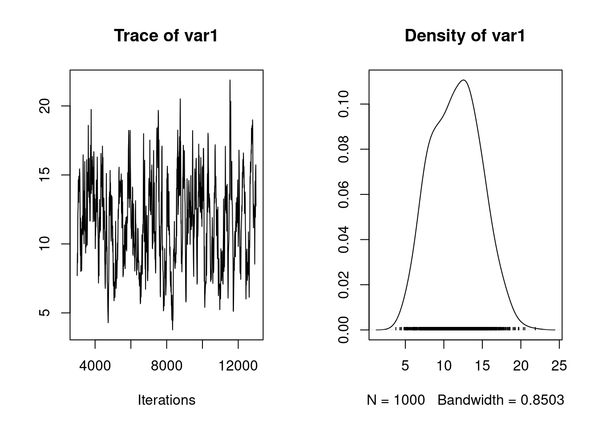
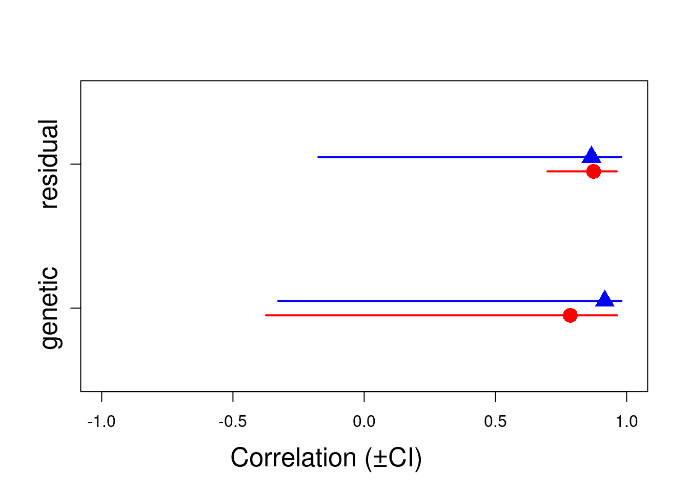
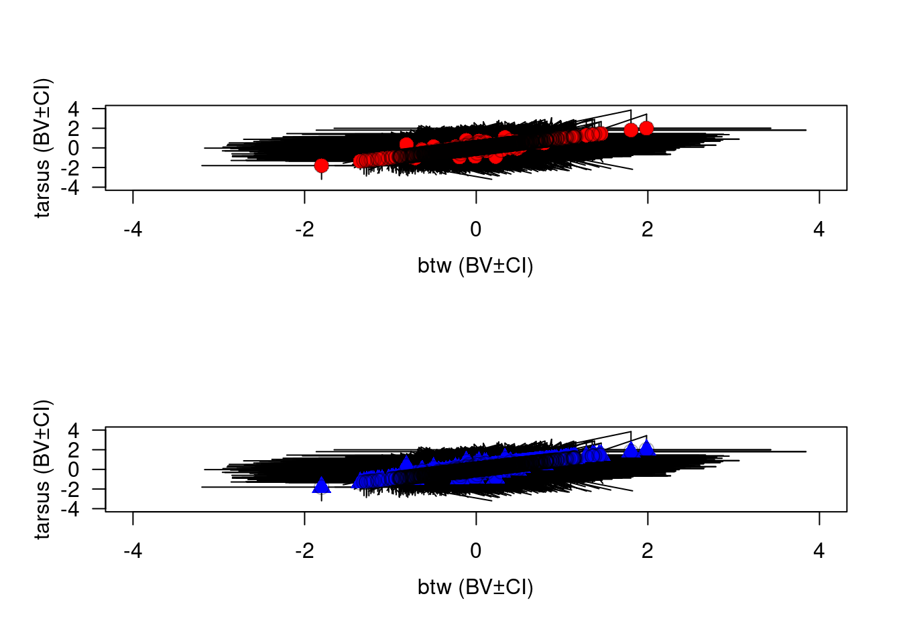

9 MCMCglmm
MCMCglmm has the advantage to keep automatically keep the lines with missing data and will try to fit the model use latent variables for missing data. We will remove the missing values from the data before fitting the model.
First load MCMCglmm:
library(MCMCglmm)Loading required package: Matrix
Attaching package: 'Matrix'The following objects are masked from 'package:tidyr':
expand, pack, unpackLoading required package: codaLoading required package: ape
Attaching package: 'ape'The following object is masked from 'package:dplyr':
whereAinv <- inverseA(gryphonped)$Ainv9.0.1 Fitting the model
Fitting a multivariate model in MCMCglmm involves several new consideration above those for fitting univariate models. First, we have to fit multivariate priors; second, we have to specify the ways in which effects on different traits may covary, including the nature of residual (co)variation; and third, we will have to be a little more specific when specifying to MCMCglmm what type of distributions from which we assume our data are drawn. Our most basic model can be specified as:
prior2.1 <- list(
G = list(G1 = list(V = diag(2), nu = 1.002)),
R = list(V = diag(2), nu = 1.002)
)
model2.1 <- MCMCglmm(cbind(bwt, tarsus) ~ trait - 1,
random = ~ us(trait):animal,
rcov = ~ us(trait):units,
family = c("gaussian", "gaussian"),
ginv = list(animal = Ainv),
data = gryphon2, prior = prior2.1, verbose = FALSE
)
summary(model2.1)
Iterations = 3001:12991
Thinning interval = 10
Sample size = 1000
DIC: 7165.739
G-structure: ~us(trait):animal
post.mean l-95% CI u-95% CI eff.samp
traitbwt:traitbwt.animal 3.147 1.760 4.617 80.59
traittarsus:traitbwt.animal 2.086 -0.326 4.525 83.01
traitbwt:traittarsus.animal 2.086 -0.326 4.525 83.01
traittarsus:traittarsus.animal 10.958 4.836 17.851 63.39
R-structure: ~us(trait):units
post.mean l-95% CI u-95% CI eff.samp
traitbwt:traitbwt.units 4.034 2.844 5.318 137.05
traittarsus:traitbwt.units 3.641 1.365 5.779 94.39
traitbwt:traittarsus.units 3.641 1.365 5.779 94.39
traittarsus:traittarsus.units 18.946 13.412 25.296 60.77
Location effects: cbind(bwt, tarsus) ~ trait - 1
post.mean l-95% CI u-95% CI eff.samp pMCMC
traitbwt 7.471 7.173 7.766 841.1 <0.001 ***
traittarsus 20.447 19.867 21.034 720.2 <0.001 ***
---
Signif. codes: 0 '***' 0.001 '**' 0.01 '*' 0.05 '.' 0.1 ' ' 1plot(model2.1$VCV[, "traittarsus:traittarsus.animal"])
autocorr.diag(model2.1$VCV)[, "traittarsus:traittarsus.animal"][2] Lag 10
0.8686373 We have constructed the prior similarly to the those in the univariate models in tutorial 1, only we are specifying a 2x2 covariance matrix rather than a single variance. In order to provide proper priors, we have set the degree of belief parameter to greater than 1 (1.002). Those priors are not necessarily weak or uninformative in all circumstances. We will consider them adequate nonetheless for this tutorial. Please the vignette of the MCMCglmm packages (Hadfield 2010) for more information on priors. In tutorial 1, we used full autocorrelation tables to evaluate the validity of the posterior distribution. Note that we have not done this here.
For a bivariate model this table can become very complex. Nonetheless, it is worth evaluating, rather it is simply to large to include here. It can be viewed in the console as before. Here we have displayed only the autocorrelation for estimates of additive genetic effects for tarsus length with a lag of one samples (10 iterations given this MCMCglmm run with default values). This lag of 0.8686373 is clearly unacceptable. The posterior distribution of the additive genetic effect on tarsus length is shown in Figure 4, note the autocorrelation evident in the left-hand plot.
We will opt to run the analysis for longer. This longer run could be run using the following code (including a line to save the output):
model2.1 <- MCMCglmm(cbind(bwt, tarsus) ~ trait - 1,
random = ~ us(trait):animal,
rcov = ~ us(trait):units,
family = c("gaussian", "gaussian"),
ginv = list(animal = Ainv),
data = gryphon2,
nitt = 130000, thin = 100, burnin = 30000,
prior = prior2.1, verbose = FALSE
)
save(model2.1, file = "data/MCMCglmm_model2_1_LongRun.rda")However, this run might take as long as an hour. For the purpose of this tutorial we have provided an output for such a run. It can be obtained and manipulated as follows, assuming that the file MCMCglmm_model2_1_LongRun.rda is available at the specified location:
load(file = "data/MCMCglmm_model2_1_LongRun.rda")
autocorr.diag(model2.1$VCV)[, "traittarsus:traittarsus.animal"][2] Lag 100
0.2805747 This level of autocorrelation is more acceptable, at least for the purpose of demonstration in this tutorial. We can recover variance components, heritabilities, and genetic correlations from the posterior distribution of this model:
posterior.mode(model2.1$VCV) traitbwt:traitbwt.animal traittarsus:traitbwt.animal
3.147319 2.390698
traitbwt:traittarsus.animal traittarsus:traittarsus.animal
2.390698 10.863567
traitbwt:traitbwt.units traittarsus:traitbwt.units
3.823107 4.044831
traitbwt:traittarsus.units traittarsus:traittarsus.units
4.044831 17.734520 heritability.bwt2.1 <- model2.1$VCV[, "traitbwt:traitbwt.animal"] / (model2.1$VCV[, "traitbwt:traitbwt.animal"] + model2.1$VCV[, "traitbwt:traitbwt.animal"])
posterior.mode(heritability.bwt2.1) var1
0.4999336 heritability.tarsus2.1 <- model2.1$VCV[, "traittarsus:traittarsus.animal"] / (model2.1$VCV[, "traittarsus:traittarsus.animal"] + model2.1$VCV[, "traittarsus:traittarsus.units"])
posterior.mode(heritability.tarsus2.1) var1
0.3698826 genetic.correlation2.1 <- model2.1$VCV[, "traitbwt:traittarsus.animal"] / sqrt(model2.1$VCV[, "traitbwt:traitbwt.animal"] * model2.1$VCV[, "traittarsus:traittarsus.animal"])
posterior.mode(genetic.correlation2.1) var1
0.3815069 9.0.2 Adding fixed and random effects
Fixed and random effects can be added just as for the univariate case. Given that our full model of bwt from tutorial 1 had sex as a fixed effect as well as random effects of byear and mother, we could specify a bivariate formulation of this using the following code (including a line to save the output):
prior2.2 <- list(
G = list(
G1 = list(V = diag(2), nu = 1.002),
G2 = list(V = diag(2), nu = 1.002),
G3 = list(V = diag(2), nu = 1.002)
),
R = list(V = diag(2), nu = 1.002)
)
model2.2 <- MCMCglmm(cbind(bwt, tarsus) ~ trait - 1 + trait:sex,
random = ~ us(trait):animal + us(trait):byear + us(trait):mother,
rcov = ~ us(trait):units,
family = c("gaussian", "gaussian"),
ginv = list(animal = Ainv), data = gryphon2,
nitt = 130000, thin = 100, burnin = 30000,
prior = prior2.2, verbose = FALSE
)
save(model2.2, file = "data/MCMCglmm_model2_2_LongRun.rda")Again we have provided the data from one such run. It can be accessed using the code:
Iterations = 30001:129901
Thinning interval = 100
Sample size = 1000
DIC: 5832.952
G-structure: ~us(trait):animal
post.mean l-95% CI u-95% CI eff.samp
traitbwt:traitbwt.animal 1.558 0.5616 2.488 230.8
traittarsus:traitbwt.animal 2.290 0.3241 4.264 274.8
traitbwt:traittarsus.animal 2.290 0.3241 4.264 274.8
traittarsus:traittarsus.animal 8.083 0.9063 13.599 228.1
~us(trait):byear
post.mean l-95% CI u-95% CI eff.samp
traitbwt:traitbwt.byear 0.96775 0.4124 1.5053 1000
traittarsus:traitbwt.byear 0.07332 -0.8100 0.9791 1000
traitbwt:traittarsus.byear 0.07332 -0.8100 0.9791 1000
traittarsus:traittarsus.byear 3.80720 1.6291 6.3986 1000
~us(trait):mother
post.mean l-95% CI u-95% CI eff.samp
traitbwt:traitbwt.mother 1.335 0.8564 1.8090 871.2
traittarsus:traitbwt.mother -1.508 -2.1667 -0.8288 648.6
traitbwt:traittarsus.mother -1.508 -2.1667 -0.8288 648.6
traittarsus:traittarsus.mother 4.292 2.2380 6.6336 796.0
R-structure: ~us(trait):units
post.mean l-95% CI u-95% CI eff.samp
traitbwt:traitbwt.units 2.13 1.304 2.939 469.2
traittarsus:traitbwt.units 4.81 3.111 6.568 414.7
traitbwt:traittarsus.units 4.81 3.111 6.568 414.7
traittarsus:traittarsus.units 14.51 9.419 19.892 261.3
Location effects: cbind(bwt, tarsus) ~ trait - 1 + trait:sex
post.mean l-95% CI u-95% CI eff.samp pMCMC
traitbwt 6.2734 5.8152 6.7272 1205 <0.001 ***
traittarsus 20.3985 19.4021 21.4106 1000 <0.001 ***
traitbwt:sex2 2.0354 1.7347 2.3529 1000 <0.001 ***
traittarsus:sex2 0.0705 -0.6949 0.7686 1000 0.868
---
Signif. codes: 0 '***' 0.001 '**' 0.01 '*' 0.05 '.' 0.1 ' ' 1autocorr(model2.2$VCV)[, , "traittarsus:traittarsus.animal"][3, 4][1] 0.1026744We can evaluate the fixed effect, their Ci evaluate their significance.
posterior.mode(model2.2$Sol) traitbwt traittarsus traitbwt:sex2 traittarsus:sex2
6.26902047 20.35816977 2.06048779 -0.06501522 HPDinterval(model2.2$Sol, 0.95) lower upper
traitbwt 5.8151983 6.7272503
traittarsus 19.4021008 21.4106029
traitbwt:sex2 1.7347121 2.3528879
traittarsus:sex2 -0.6948574 0.7686074
attr(,"Probability")
[1] 0.95plot(model2.2$Sol)
As before we can obtain the raw variance component estimates and genetic correlations for the random effects:
posterior.mode(model2.2$VCV) traitbwt:traitbwt.animal traittarsus:traitbwt.animal
1.3294950 2.0622374
traitbwt:traittarsus.animal traittarsus:traittarsus.animal
2.0622374 8.3900676
traitbwt:traitbwt.byear traittarsus:traitbwt.byear
0.8118565 0.2327381
traitbwt:traittarsus.byear traittarsus:traittarsus.byear
0.2327381 3.7375906
traitbwt:traitbwt.mother traittarsus:traitbwt.mother
1.4089440 -1.4963686
traitbwt:traittarsus.mother traittarsus:traittarsus.mother
-1.4963686 3.9386669
traitbwt:traitbwt.units traittarsus:traitbwt.units
2.2353960 4.3432849
traitbwt:traittarsus.units traittarsus:traittarsus.units
4.3432849 15.0853981 genetic.correlation2.2 <- model2.2$VCV[, "traitbwt:traittarsus.animal"] / sqrt(model2.2$VCV[, "traitbwt:traitbwt.animal"] * model2.2$VCV[, "traittarsus:traittarsus.animal"])
maternal.correlation2.2 <- model2.2$VCV[, "traitbwt:traittarsus.mother"] / sqrt(model2.2$VCV[, "traitbwt:traitbwt.mother"] * model2.2$VCV[, "traittarsus:traittarsus.mother"])
posterior.mode(genetic.correlation2.2) var1
0.6932486 posterior.mode(maternal.correlation2.2) var1
-0.7431221 Evaluation of the statistical support for these genetic and maternal correlations is straightforward. Because we imposed no constraint on their estimation, we can evaluate the extent to which the posterior distributions overlap zero:
HPDinterval(genetic.correlation2.2, 0.95) lower upper
var1 0.3062932 0.9197543
attr(,"Probability")
[1] 0.95HPDinterval(maternal.correlation2.2, 0.95) lower upper
var1 -0.9432297 -0.3210149
attr(,"Probability")
[1] 0.95Neither or these posterior distributions overlaps zero, so we can consider them both statistically supported.
9.0.3 Direct estimate of the correlation instead of the covariance.
For this example, we just estimate the correlation at the genetic level, the covariance for the other random effect (mother and byear) and the residual level was not estimate to help the model to converge and compute faster. The prior will be the same but we change the pr argument to be TRUE to keep the posterior distribution of random effects. To simplify the following code and facilitate the BLUP extraction, we rename the variable T1 and T2 and estimate correlation only for the additive genetic and residual matrices.
gryphon2$T1 <- gryphon2$bwt
gryphon2$T2 <- gryphon2$tarsus
#
model2.3 <- MCMCglmm(cbind(T1, T2) ~ trait - 1 + trait:sex,
random = ~ corg(trait):animal + corg(trait):byear + corg(trait):mother,
rcov = ~ corg(trait):units,
family = c("gaussian", "gaussian"),
ginv = list(animal = Ainv), data = gryphon2,
nitt = 130000, thin = 100, burnin = 30000,
prior = prior2.2, verbose = FALSE, pr = TRUE,
)
save(model2.3, file = "data/MCMCglmm_model2_3_LongRun.rda")Again we have provided the data from one such run. It can be accessed using the code:
Iterations = 30001:129901
Thinning interval = 100
Sample size = 1000
DIC: 972.9044
G-structure: ~corg(trait):animal
post.mean l-95% CI u-95% CI eff.samp
traitT1:traitT1.animal 1 1 1 0
traitT2:traitT1.animal -1 -1 -1 0
traitT1:traitT2.animal -1 -1 -1 0
traitT2:traitT2.animal 1 1 1 0
~corg(trait):byear
post.mean l-95% CI u-95% CI eff.samp
traitT1:traitT1.byear 1.0000 1.00000 1.000 0
traitT2:traitT1.byear 0.2436 -0.09388 0.588 1000
traitT1:traitT2.byear 0.2436 -0.09388 0.588 1000
traitT2:traitT2.byear 1.0000 1.00000 1.000 0
~corg(trait):mother
post.mean l-95% CI u-95% CI eff.samp
traitT1:traitT1.mother 1 1 1 0
traitT2:traitT1.mother -1 -1 -1 0
traitT1:traitT2.mother -1 -1 -1 0
traitT2:traitT2.mother 1 1 1 0
R-structure: ~corg(trait):units
post.mean l-95% CI u-95% CI eff.samp
traitT1:traitT1.units 1 1 1 0
traitT2:traitT1.units 1 1 1 0
traitT1:traitT2.units 1 1 1 0
traitT2:traitT2.units 1 1 1 0
Location effects: cbind(T1, T2) ~ trait - 1 + trait:sex
post.mean l-95% CI u-95% CI eff.samp pMCMC
traitT1 6.29252 5.79418 6.77846 1000 <0.001 ***
traitT2 20.53149 20.04183 21.00833 1000 <0.001 ***
traitT1:sex2 2.07254 1.83815 2.32478 1000 <0.001 ***
traitT2:sex2 0.02657 -0.21610 0.26411 1000 0.864
---
Signif. codes: 0 '***' 0.001 '**' 0.01 '*' 0.05 '.' 0.1 ' ' 1autocorr(model2.3$VCV)[, , "traitT2:traitT1.animal"][3, 4][1] NaNHere we can plot the genetic correlation by extraction the breeding values or BLUP. Just to remember it is an example, the correlation is close to 1 due to a weak prior and model parameters.
DvsS <- data.frame(
Trait = colnames(model2.3$Sol),
BLUP = posterior.mode(model2.3$Sol),
CI = HPDinterval((model2.3$Sol))
)
DvsS <- DvsS[5:2622, ] # keep only rows associated with animal
DvsS$ID <- substr(DvsS$Trait, 16, 19)
DvsS$TRAIT <- substr(DvsS$Trait, 6, 7)
summary(factor(DvsS$TRAIT)) T1 T2
1309 1309 DvsS$Trait <- NULL
BLUPS <- reshape(DvsS, v.names = c("BLUP", "CI.lower", "CI.upper"), idvar = "ID", timevar = "TRAIT", direction = "wide")
nrow(BLUPS)[1] 1309rownames(BLUPS) <- c()
colnames(BLUPS) <- c("ID", "BLUP.btw", "CI.L.btw", "CI.U.btw", "BLUP.tarsus", "CI.L.tarsus", "CI.U.tarsus")
summary(BLUPS) ID BLUP.btw CI.L.btw CI.U.btw
Length:1309 Min. :-3.92390 Min. :-5.0229 Min. :-3.0062
Class :character 1st Qu.:-0.65954 1st Qu.:-2.1218 1st Qu.: 0.7462
Mode :character Median : 0.01183 Median :-1.5472 Median : 1.5745
Mean :-0.02007 Mean :-1.4347 Mean : 1.3860
3rd Qu.: 0.63842 3rd Qu.:-0.7509 3rd Qu.: 2.1033
Max. : 3.78330 Max. : 2.7030 Max. : 4.7851
BLUP.tarsus CI.L.tarsus CI.U.tarsus
Min. :-3.78353 Min. :-4.6656 Min. :-2.6778
1st Qu.:-0.64453 1st Qu.:-2.1033 1st Qu.: 0.7505
Median :-0.02336 Median :-1.5741 Median : 1.5477
Mean : 0.01820 Mean :-1.3864 Mean : 1.4343
3rd Qu.: 0.65947 3rd Qu.:-0.7485 3rd Qu.: 2.1219
Max. : 3.93053 Max. : 3.0061 Max. : 5.0231 #
par(mfrow = c(2, 2))
hist(BLUPS$BLUP.btw)
qqnorm(BLUPS$BLUP.btw)
qqline(BLUPS$BLUP.btw)
hist(BLUPS$BLUP.tarsus)
qqnorm(BLUPS$BLUP.tarsus)
qqline(BLUPS$BLUP.tarsus)
Here the code to plot the genetic correlation.
plot(BLUP.tarsus ~ BLUP.btw, BLUPS, xlab = "", ylab = "", las = 1.2, bty = "o", col = "white", ylim = c(-4, 4), xlim = c(-4, 4))
arrows(x0 = BLUPS$BLUP.btw, y0 = BLUPS$CI.L.tarsus, x1 = BLUPS$BLUP.btw, y1 = BLUPS$CI.U.tarsus, col = "black", code = 3, angle = 90, length = 0)
arrows(x0 = BLUPS$CI.L.btw, y0 = BLUPS$BLUP.tarsus, x1 = BLUPS$CI.U.btw, y1 = BLUPS$BLUP.tarsus, col = "black", code = 3, angle = 90, length = 0)
points(BLUP.tarsus ~ BLUP.btw, BLUPS, pch = 16, col = "red", cex = 1.5)
points(BLUP.tarsus ~ BLUP.btw, BLUPS, pch = 1, col = rgb(0, 0, 0, 0.3), cex = c(1.5))
mtext("btw (BV±SE)", side = 1, line = 2.4)
mtext("tarsus (BV±SE)", side = 2, line = 2, las = 3)
9.0.4 Partitioning (co)variances
As in the tutorial 1, it is possible to partition the variance-covariance matrix between groups (here sex) Note: the model is simplified without sex-specific covariance for the byear and mother random effect.
gryphon2 <- gryphon2[order(gryphon2$sex), ]
prior2.3 <- list(
G = list(
G1 = list(V = diag(2), nu = 1.002),
G2 = list(V = diag(2), nu = 1.002),
G3 = list(V = diag(2), nu = 1.002),
G4 = list(V = diag(2), nu = 1.002)
),
R = list(
V1 = list(V = diag(2), nu = 1.002),
V2 = list(V = diag(2), nu = 1.002)
)
)
model2.4 <- MCMCglmm(cbind(bwt, tarsus) ~ trait - 1 + trait:sex,
random = ~ us(at.level(sex, "1"):trait):animal + us(at.level(sex, "2"):trait):animal + idh(trait):byear + idh(trait):mother,
rcov = ~ us(at.level(sex, "1"):trait):units + us(at.level(sex, "2"):trait):units,
family = c("gaussian", "gaussian"),
ginv = list(animal = Ainv), data = gryphon2,
nitt = 130000, thin = 100, burnin = 30000,
prior = prior2.3, verbose = FALSE, pr = TRUE,
)
save(model2.4, file = "data/MCMCglmm_model2_4_LongRun.rda")Again we have provided the data from one such run. It can be accessed using the code:
Iterations = 30001:129901
Thinning interval = 100
Sample size = 1000
DIC: 5576.328
G-structure: ~us(at.level(sex, "1"):trait):animal
post.mean
at.level(sex, "1"):traitbwt:at.level(sex, "1"):traitbwt.animal 1.122
at.level(sex, "1"):traittarsus:at.level(sex, "1"):traitbwt.animal 1.127
at.level(sex, "1"):traitbwt:at.level(sex, "1"):traittarsus.animal 1.127
at.level(sex, "1"):traittarsus:at.level(sex, "1"):traittarsus.animal 3.379
l-95% CI
at.level(sex, "1"):traitbwt:at.level(sex, "1"):traitbwt.animal 0.1602
at.level(sex, "1"):traittarsus:at.level(sex, "1"):traitbwt.animal -0.6531
at.level(sex, "1"):traitbwt:at.level(sex, "1"):traittarsus.animal -0.6531
at.level(sex, "1"):traittarsus:at.level(sex, "1"):traittarsus.animal 0.1844
u-95% CI
at.level(sex, "1"):traitbwt:at.level(sex, "1"):traitbwt.animal 2.359
at.level(sex, "1"):traittarsus:at.level(sex, "1"):traitbwt.animal 3.496
at.level(sex, "1"):traitbwt:at.level(sex, "1"):traittarsus.animal 3.496
at.level(sex, "1"):traittarsus:at.level(sex, "1"):traittarsus.animal 8.918
eff.samp
at.level(sex, "1"):traitbwt:at.level(sex, "1"):traitbwt.animal 167.5
at.level(sex, "1"):traittarsus:at.level(sex, "1"):traitbwt.animal 119.3
at.level(sex, "1"):traitbwt:at.level(sex, "1"):traittarsus.animal 119.3
at.level(sex, "1"):traittarsus:at.level(sex, "1"):traittarsus.animal 102.6
~us(at.level(sex, "2"):trait):animal
post.mean
at.level(sex, "2"):traitbwt:at.level(sex, "2"):traitbwt.animal 1.598
at.level(sex, "2"):traittarsus:at.level(sex, "2"):traitbwt.animal 3.099
at.level(sex, "2"):traitbwt:at.level(sex, "2"):traittarsus.animal 3.099
at.level(sex, "2"):traittarsus:at.level(sex, "2"):traittarsus.animal 10.218
l-95% CI
at.level(sex, "2"):traitbwt:at.level(sex, "2"):traitbwt.animal 0.1895
at.level(sex, "2"):traittarsus:at.level(sex, "2"):traitbwt.animal -0.5506
at.level(sex, "2"):traitbwt:at.level(sex, "2"):traittarsus.animal -0.5506
at.level(sex, "2"):traittarsus:at.level(sex, "2"):traittarsus.animal 0.2127
u-95% CI
at.level(sex, "2"):traitbwt:at.level(sex, "2"):traitbwt.animal 3.305
at.level(sex, "2"):traittarsus:at.level(sex, "2"):traitbwt.animal 7.864
at.level(sex, "2"):traitbwt:at.level(sex, "2"):traittarsus.animal 7.864
at.level(sex, "2"):traittarsus:at.level(sex, "2"):traittarsus.animal 24.230
eff.samp
at.level(sex, "2"):traitbwt:at.level(sex, "2"):traitbwt.animal 57.28
at.level(sex, "2"):traittarsus:at.level(sex, "2"):traitbwt.animal 42.01
at.level(sex, "2"):traitbwt:at.level(sex, "2"):traittarsus.animal 42.01
at.level(sex, "2"):traittarsus:at.level(sex, "2"):traittarsus.animal 37.21
~idh(trait):byear
post.mean l-95% CI u-95% CI eff.samp
traitbwt.byear 0.9309 0.4614 1.463 1000
traittarsus.byear 4.0310 1.9268 6.724 1000
~idh(trait):mother
post.mean l-95% CI u-95% CI eff.samp
traitbwt.mother 1.924 1.406 2.398 667.6
traittarsus.mother 7.093 4.626 9.681 698.5
R-structure: ~us(at.level(sex, "1"):trait):units
post.mean
at.level(sex, "1"):traitbwt:at.level(sex, "1"):traitbwt.units 2.090
at.level(sex, "1"):traittarsus:at.level(sex, "1"):traitbwt.units 4.533
at.level(sex, "1"):traitbwt:at.level(sex, "1"):traittarsus.units 4.533
at.level(sex, "1"):traittarsus:at.level(sex, "1"):traittarsus.units 14.113
l-95% CI
at.level(sex, "1"):traitbwt:at.level(sex, "1"):traitbwt.units 0.9958
at.level(sex, "1"):traittarsus:at.level(sex, "1"):traitbwt.units 2.4185
at.level(sex, "1"):traitbwt:at.level(sex, "1"):traittarsus.units 2.4185
at.level(sex, "1"):traittarsus:at.level(sex, "1"):traittarsus.units 8.1848
u-95% CI
at.level(sex, "1"):traitbwt:at.level(sex, "1"):traitbwt.units 3.128
at.level(sex, "1"):traittarsus:at.level(sex, "1"):traitbwt.units 6.875
at.level(sex, "1"):traitbwt:at.level(sex, "1"):traittarsus.units 6.875
at.level(sex, "1"):traittarsus:at.level(sex, "1"):traittarsus.units 18.935
eff.samp
at.level(sex, "1"):traitbwt:at.level(sex, "1"):traitbwt.units 207.2
at.level(sex, "1"):traittarsus:at.level(sex, "1"):traitbwt.units 168.4
at.level(sex, "1"):traitbwt:at.level(sex, "1"):traittarsus.units 168.4
at.level(sex, "1"):traittarsus:at.level(sex, "1"):traittarsus.units 185.3
~us(at.level(sex, "2"):trait):units
post.mean
at.level(sex, "2"):traitbwt:at.level(sex, "2"):traitbwt.units 1.782
at.level(sex, "2"):traittarsus:at.level(sex, "2"):traitbwt.units 3.697
at.level(sex, "2"):traitbwt:at.level(sex, "2"):traittarsus.units 3.697
at.level(sex, "2"):traittarsus:at.level(sex, "2"):traittarsus.units 12.437
l-95% CI
at.level(sex, "2"):traitbwt:at.level(sex, "2"):traitbwt.units 0.2776
at.level(sex, "2"):traittarsus:at.level(sex, "2"):traitbwt.units -0.3141
at.level(sex, "2"):traitbwt:at.level(sex, "2"):traittarsus.units -0.3141
at.level(sex, "2"):traittarsus:at.level(sex, "2"):traittarsus.units 0.1776
u-95% CI
at.level(sex, "2"):traitbwt:at.level(sex, "2"):traitbwt.units 3.115
at.level(sex, "2"):traittarsus:at.level(sex, "2"):traitbwt.units 7.218
at.level(sex, "2"):traitbwt:at.level(sex, "2"):traittarsus.units 7.218
at.level(sex, "2"):traittarsus:at.level(sex, "2"):traittarsus.units 21.903
eff.samp
at.level(sex, "2"):traitbwt:at.level(sex, "2"):traitbwt.units 52.55
at.level(sex, "2"):traittarsus:at.level(sex, "2"):traitbwt.units 51.90
at.level(sex, "2"):traitbwt:at.level(sex, "2"):traittarsus.units 51.90
at.level(sex, "2"):traittarsus:at.level(sex, "2"):traittarsus.units 39.20
Location effects: cbind(bwt, tarsus) ~ trait - 1 + trait:sex
post.mean l-95% CI u-95% CI eff.samp pMCMC
traitbwt 6.30098 5.89218 6.78834 1000.0 <0.001 ***
traittarsus 20.45577 19.53577 21.34719 1129.8 <0.001 ***
traitbwt:sex2 2.01306 1.63662 2.38011 887.4 <0.001 ***
traittarsus:sex2 0.05817 -0.86635 0.89119 1016.6 0.896
---
Signif. codes: 0 '***' 0.001 '**' 0.01 '*' 0.05 '.' 0.1 ' ' 1autocorr(model2.4$VCV), , at.level(sex, "1"):traitbwt:at.level(sex, "1"):traitbwt.animal
at.level(sex, "1"):traitbwt:at.level(sex, "1"):traitbwt.animal
Lag 0 1.00000000
Lag 100 0.64694479
Lag 500 0.18648179
Lag 1000 0.10392219
Lag 5000 -0.04275072
at.level(sex, "1"):traittarsus:at.level(sex, "1"):traitbwt.animal
Lag 0 0.84704874
Lag 100 0.60161240
Lag 500 0.20180692
Lag 1000 0.10068129
Lag 5000 -0.03878312
at.level(sex, "1"):traitbwt:at.level(sex, "1"):traittarsus.animal
Lag 0 0.84704874
Lag 100 0.60161240
Lag 500 0.20180692
Lag 1000 0.10068129
Lag 5000 -0.03878312
at.level(sex, "1"):traittarsus:at.level(sex, "1"):traittarsus.animal
Lag 0 0.53041407
Lag 100 0.39413485
Lag 500 0.16964194
Lag 1000 0.11264314
Lag 5000 -0.01013697
at.level(sex, "2"):traitbwt:at.level(sex, "2"):traitbwt.animal
Lag 0 -0.07132000
Lag 100 -0.09608251
Lag 500 -0.05360431
Lag 1000 -0.02600414
Lag 5000 -0.02326421
at.level(sex, "2"):traittarsus:at.level(sex, "2"):traitbwt.animal
Lag 0 -0.07404287
Lag 100 -0.08742103
Lag 500 -0.05376905
Lag 1000 -0.03219125
Lag 5000 0.02771727
at.level(sex, "2"):traitbwt:at.level(sex, "2"):traittarsus.animal
Lag 0 -0.07404287
Lag 100 -0.08742103
Lag 500 -0.05376905
Lag 1000 -0.03219125
Lag 5000 0.02771727
at.level(sex, "2"):traittarsus:at.level(sex, "2"):traittarsus.animal
Lag 0 -0.06663301
Lag 100 -0.07398282
Lag 500 -0.03873715
Lag 1000 -0.03346102
Lag 5000 0.06535632
traitbwt.byear traittarsus.byear traitbwt.mother traittarsus.mother
Lag 0 -0.002044905 0.06061428 -0.13681757 0.063034744
Lag 100 -0.029101625 0.04741082 -0.09232454 0.062553003
Lag 500 -0.025891155 0.04101237 -0.01510511 -0.026837884
Lag 1000 0.029398462 0.02792539 -0.02514900 0.009578198
Lag 5000 -0.016122661 0.03081539 0.04189460 -0.039791141
at.level(sex, "1"):traitbwt:at.level(sex, "1"):traitbwt.units
Lag 0 -0.842319278
Lag 100 -0.569203867
Lag 500 -0.167844469
Lag 1000 -0.114647645
Lag 5000 -0.002132053
at.level(sex, "1"):traittarsus:at.level(sex, "1"):traitbwt.units
Lag 0 -0.708901550
Lag 100 -0.517998161
Lag 500 -0.167589741
Lag 1000 -0.110500558
Lag 5000 0.002914291
at.level(sex, "1"):traitbwt:at.level(sex, "1"):traittarsus.units
Lag 0 -0.708901550
Lag 100 -0.517998161
Lag 500 -0.167589741
Lag 1000 -0.110500558
Lag 5000 0.002914291
at.level(sex, "1"):traittarsus:at.level(sex, "1"):traittarsus.units
Lag 0 -0.438123204
Lag 100 -0.337083166
Lag 500 -0.129292647
Lag 1000 -0.103678560
Lag 5000 -0.001926232
at.level(sex, "2"):traitbwt:at.level(sex, "2"):traitbwt.units
Lag 0 0.07807105
Lag 100 0.10707885
Lag 500 0.05568856
Lag 1000 0.02521629
Lag 5000 0.01402475
at.level(sex, "2"):traittarsus:at.level(sex, "2"):traitbwt.units
Lag 0 0.06679340
Lag 100 0.08704308
Lag 500 0.05892190
Lag 1000 0.02676188
Lag 5000 -0.03056683
at.level(sex, "2"):traitbwt:at.level(sex, "2"):traittarsus.units
Lag 0 0.06679340
Lag 100 0.08704308
Lag 500 0.05892190
Lag 1000 0.02676188
Lag 5000 -0.03056683
at.level(sex, "2"):traittarsus:at.level(sex, "2"):traittarsus.units
Lag 0 0.04797898
Lag 100 0.05730717
Lag 500 0.04727555
Lag 1000 0.02677473
Lag 5000 -0.06608227
, , at.level(sex, "1"):traittarsus:at.level(sex, "1"):traitbwt.animal
at.level(sex, "1"):traitbwt:at.level(sex, "1"):traitbwt.animal
Lag 0 0.847048735
Lag 100 0.596411029
Lag 500 0.228550625
Lag 1000 0.137616124
Lag 5000 0.009429906
at.level(sex, "1"):traittarsus:at.level(sex, "1"):traitbwt.animal
Lag 0 1.00000000
Lag 100 0.71730236
Lag 500 0.27616079
Lag 1000 0.13795063
Lag 5000 0.01144749
at.level(sex, "1"):traitbwt:at.level(sex, "1"):traittarsus.animal
Lag 0 1.00000000
Lag 100 0.71730236
Lag 500 0.27616079
Lag 1000 0.13795063
Lag 5000 0.01144749
at.level(sex, "1"):traittarsus:at.level(sex, "1"):traittarsus.animal
Lag 0 0.7989970
Lag 100 0.6014134
Lag 500 0.2515262
Lag 1000 0.1354306
Lag 5000 0.0136445
at.level(sex, "2"):traitbwt:at.level(sex, "2"):traitbwt.animal
Lag 0 -0.069644149
Lag 100 -0.094348331
Lag 500 -0.069174874
Lag 1000 -0.030980734
Lag 5000 -0.001770693
at.level(sex, "2"):traittarsus:at.level(sex, "2"):traitbwt.animal
Lag 0 -0.09266557
Lag 100 -0.10417316
Lag 500 -0.06908668
Lag 1000 -0.04934221
Lag 5000 0.03968797
at.level(sex, "2"):traitbwt:at.level(sex, "2"):traittarsus.animal
Lag 0 -0.09266557
Lag 100 -0.10417316
Lag 500 -0.06908668
Lag 1000 -0.04934221
Lag 5000 0.03968797
at.level(sex, "2"):traittarsus:at.level(sex, "2"):traittarsus.animal
Lag 0 -0.10219567
Lag 100 -0.10740690
Lag 500 -0.05829130
Lag 1000 -0.05667648
Lag 5000 0.08311412
traitbwt.byear traittarsus.byear traitbwt.mother traittarsus.mother
Lag 0 -0.03731153 0.05572330 -0.12626725 0.06865980
Lag 100 -0.04492620 0.05076637 -0.08142219 0.05404288
Lag 500 -0.03460527 0.03246607 -0.03107773 -0.02899561
Lag 1000 0.01459594 0.01717445 -0.05078674 0.01110690
Lag 5000 -0.01688700 0.03883380 0.02698184 -0.03307579
at.level(sex, "1"):traitbwt:at.level(sex, "1"):traitbwt.units
Lag 0 -0.73143141
Lag 100 -0.52689086
Lag 500 -0.22551523
Lag 1000 -0.12616708
Lag 5000 -0.04647821
at.level(sex, "1"):traittarsus:at.level(sex, "1"):traitbwt.units
Lag 0 -0.82495927
Lag 100 -0.60990914
Lag 500 -0.24464022
Lag 1000 -0.12721295
Lag 5000 -0.03841367
at.level(sex, "1"):traitbwt:at.level(sex, "1"):traittarsus.units
Lag 0 -0.82495927
Lag 100 -0.60990914
Lag 500 -0.24464022
Lag 1000 -0.12721295
Lag 5000 -0.03841367
at.level(sex, "1"):traittarsus:at.level(sex, "1"):traittarsus.units
Lag 0 -0.64394327
Lag 100 -0.48995337
Lag 500 -0.19725633
Lag 1000 -0.10852446
Lag 5000 -0.02105523
at.level(sex, "2"):traitbwt:at.level(sex, "2"):traitbwt.units
Lag 0 0.082481767
Lag 100 0.105417000
Lag 500 0.073280263
Lag 1000 0.028355398
Lag 5000 -0.006019758
at.level(sex, "2"):traittarsus:at.level(sex, "2"):traitbwt.units
Lag 0 0.09308370
Lag 100 0.10680733
Lag 500 0.07810010
Lag 1000 0.04359553
Lag 5000 -0.04726853
at.level(sex, "2"):traitbwt:at.level(sex, "2"):traittarsus.units
Lag 0 0.09308370
Lag 100 0.10680733
Lag 500 0.07810010
Lag 1000 0.04359553
Lag 5000 -0.04726853
at.level(sex, "2"):traittarsus:at.level(sex, "2"):traittarsus.units
Lag 0 0.08843633
Lag 100 0.09343376
Lag 500 0.06886426
Lag 1000 0.05338682
Lag 5000 -0.09185034
, , at.level(sex, "1"):traitbwt:at.level(sex, "1"):traittarsus.animal
at.level(sex, "1"):traitbwt:at.level(sex, "1"):traitbwt.animal
Lag 0 0.847048735
Lag 100 0.596411029
Lag 500 0.228550625
Lag 1000 0.137616124
Lag 5000 0.009429906
at.level(sex, "1"):traittarsus:at.level(sex, "1"):traitbwt.animal
Lag 0 1.00000000
Lag 100 0.71730236
Lag 500 0.27616079
Lag 1000 0.13795063
Lag 5000 0.01144749
at.level(sex, "1"):traitbwt:at.level(sex, "1"):traittarsus.animal
Lag 0 1.00000000
Lag 100 0.71730236
Lag 500 0.27616079
Lag 1000 0.13795063
Lag 5000 0.01144749
at.level(sex, "1"):traittarsus:at.level(sex, "1"):traittarsus.animal
Lag 0 0.7989970
Lag 100 0.6014134
Lag 500 0.2515262
Lag 1000 0.1354306
Lag 5000 0.0136445
at.level(sex, "2"):traitbwt:at.level(sex, "2"):traitbwt.animal
Lag 0 -0.069644149
Lag 100 -0.094348331
Lag 500 -0.069174874
Lag 1000 -0.030980734
Lag 5000 -0.001770693
at.level(sex, "2"):traittarsus:at.level(sex, "2"):traitbwt.animal
Lag 0 -0.09266557
Lag 100 -0.10417316
Lag 500 -0.06908668
Lag 1000 -0.04934221
Lag 5000 0.03968797
at.level(sex, "2"):traitbwt:at.level(sex, "2"):traittarsus.animal
Lag 0 -0.09266557
Lag 100 -0.10417316
Lag 500 -0.06908668
Lag 1000 -0.04934221
Lag 5000 0.03968797
at.level(sex, "2"):traittarsus:at.level(sex, "2"):traittarsus.animal
Lag 0 -0.10219567
Lag 100 -0.10740690
Lag 500 -0.05829130
Lag 1000 -0.05667648
Lag 5000 0.08311412
traitbwt.byear traittarsus.byear traitbwt.mother traittarsus.mother
Lag 0 -0.03731153 0.05572330 -0.12626725 0.06865980
Lag 100 -0.04492620 0.05076637 -0.08142219 0.05404288
Lag 500 -0.03460527 0.03246607 -0.03107773 -0.02899561
Lag 1000 0.01459594 0.01717445 -0.05078674 0.01110690
Lag 5000 -0.01688700 0.03883380 0.02698184 -0.03307579
at.level(sex, "1"):traitbwt:at.level(sex, "1"):traitbwt.units
Lag 0 -0.73143141
Lag 100 -0.52689086
Lag 500 -0.22551523
Lag 1000 -0.12616708
Lag 5000 -0.04647821
at.level(sex, "1"):traittarsus:at.level(sex, "1"):traitbwt.units
Lag 0 -0.82495927
Lag 100 -0.60990914
Lag 500 -0.24464022
Lag 1000 -0.12721295
Lag 5000 -0.03841367
at.level(sex, "1"):traitbwt:at.level(sex, "1"):traittarsus.units
Lag 0 -0.82495927
Lag 100 -0.60990914
Lag 500 -0.24464022
Lag 1000 -0.12721295
Lag 5000 -0.03841367
at.level(sex, "1"):traittarsus:at.level(sex, "1"):traittarsus.units
Lag 0 -0.64394327
Lag 100 -0.48995337
Lag 500 -0.19725633
Lag 1000 -0.10852446
Lag 5000 -0.02105523
at.level(sex, "2"):traitbwt:at.level(sex, "2"):traitbwt.units
Lag 0 0.082481767
Lag 100 0.105417000
Lag 500 0.073280263
Lag 1000 0.028355398
Lag 5000 -0.006019758
at.level(sex, "2"):traittarsus:at.level(sex, "2"):traitbwt.units
Lag 0 0.09308370
Lag 100 0.10680733
Lag 500 0.07810010
Lag 1000 0.04359553
Lag 5000 -0.04726853
at.level(sex, "2"):traitbwt:at.level(sex, "2"):traittarsus.units
Lag 0 0.09308370
Lag 100 0.10680733
Lag 500 0.07810010
Lag 1000 0.04359553
Lag 5000 -0.04726853
at.level(sex, "2"):traittarsus:at.level(sex, "2"):traittarsus.units
Lag 0 0.08843633
Lag 100 0.09343376
Lag 500 0.06886426
Lag 1000 0.05338682
Lag 5000 -0.09185034
, , at.level(sex, "1"):traittarsus:at.level(sex, "1"):traittarsus.animal
at.level(sex, "1"):traitbwt:at.level(sex, "1"):traitbwt.animal
Lag 0 0.5304141
Lag 100 0.3737195
Lag 500 0.1441203
Lag 1000 0.1503417
Lag 5000 0.1187940
at.level(sex, "1"):traittarsus:at.level(sex, "1"):traitbwt.animal
Lag 0 0.7989970
Lag 100 0.5706521
Lag 500 0.2430451
Lag 1000 0.1680830
Lag 5000 0.1259980
at.level(sex, "1"):traitbwt:at.level(sex, "1"):traittarsus.animal
Lag 0 0.7989970
Lag 100 0.5706521
Lag 500 0.2430451
Lag 1000 0.1680830
Lag 5000 0.1259980
at.level(sex, "1"):traittarsus:at.level(sex, "1"):traittarsus.animal
Lag 0 1.00000000
Lag 100 0.73196692
Lag 500 0.31335783
Lag 1000 0.18501263
Lag 5000 0.08438218
at.level(sex, "2"):traitbwt:at.level(sex, "2"):traitbwt.animal
Lag 0 -0.01785209
Lag 100 -0.03508025
Lag 500 -0.04733762
Lag 1000 -0.01709422
Lag 5000 -0.01586047
at.level(sex, "2"):traittarsus:at.level(sex, "2"):traitbwt.animal
Lag 0 -0.038020441
Lag 100 -0.045171003
Lag 500 -0.050004069
Lag 1000 -0.054183547
Lag 5000 -0.004955516
at.level(sex, "2"):traitbwt:at.level(sex, "2"):traittarsus.animal
Lag 0 -0.038020441
Lag 100 -0.045171003
Lag 500 -0.050004069
Lag 1000 -0.054183547
Lag 5000 -0.004955516
at.level(sex, "2"):traittarsus:at.level(sex, "2"):traittarsus.animal
Lag 0 -0.05447207
Lag 100 -0.05998184
Lag 500 -0.06158778
Lag 1000 -0.08267333
Lag 5000 0.02065741
traitbwt.byear traittarsus.byear traitbwt.mother traittarsus.mother
Lag 0 -0.060159939 0.06450755 -0.0973321863 -0.009350685
Lag 100 -0.043720033 0.03483594 -0.0765923141 -0.006212912
Lag 500 -0.052466217 0.02987272 -0.0662772868 -0.030465249
Lag 1000 -0.001034192 0.03110963 -0.0728720391 0.009855596
Lag 5000 -0.034160786 0.05472996 0.0008533055 0.003426058
at.level(sex, "1"):traitbwt:at.level(sex, "1"):traitbwt.units
Lag 0 -0.4637838
Lag 100 -0.3337342
Lag 500 -0.1618186
Lag 1000 -0.1329387
Lag 5000 -0.1239580
at.level(sex, "1"):traittarsus:at.level(sex, "1"):traitbwt.units
Lag 0 -0.6583252
Lag 100 -0.4881849
Lag 500 -0.2287167
Lag 1000 -0.1381960
Lag 5000 -0.1179873
at.level(sex, "1"):traitbwt:at.level(sex, "1"):traittarsus.units
Lag 0 -0.6583252
Lag 100 -0.4881849
Lag 500 -0.2287167
Lag 1000 -0.1381960
Lag 5000 -0.1179873
at.level(sex, "1"):traittarsus:at.level(sex, "1"):traittarsus.units
Lag 0 -0.76001059
Lag 100 -0.57358014
Lag 500 -0.25179771
Lag 1000 -0.12123408
Lag 5000 -0.07986147
at.level(sex, "2"):traitbwt:at.level(sex, "2"):traitbwt.units
Lag 0 0.02870904
Lag 100 0.03399695
Lag 500 0.05485675
Lag 1000 0.01651664
Lag 5000 0.01516504
at.level(sex, "2"):traittarsus:at.level(sex, "2"):traitbwt.units
Lag 0 0.039633904
Lag 100 0.041502118
Lag 500 0.059018043
Lag 1000 0.052958967
Lag 5000 -0.002274568
at.level(sex, "2"):traitbwt:at.level(sex, "2"):traittarsus.units
Lag 0 0.039633904
Lag 100 0.041502118
Lag 500 0.059018043
Lag 1000 0.052958967
Lag 5000 -0.002274568
at.level(sex, "2"):traittarsus:at.level(sex, "2"):traittarsus.units
Lag 0 0.04584246
Lag 100 0.04763329
Lag 500 0.06852725
Lag 1000 0.08362165
Lag 5000 -0.03430204
, , at.level(sex, "2"):traitbwt:at.level(sex, "2"):traitbwt.animal
at.level(sex, "1"):traitbwt:at.level(sex, "1"):traitbwt.animal
Lag 0 -0.07132000
Lag 100 -0.06108550
Lag 500 -0.06344456
Lag 1000 -0.02628413
Lag 5000 0.10351490
at.level(sex, "1"):traittarsus:at.level(sex, "1"):traitbwt.animal
Lag 0 -0.0696441487
Lag 100 -0.0685711479
Lag 500 -0.0543839240
Lag 1000 0.0004950661
Lag 5000 0.1221823016
at.level(sex, "1"):traitbwt:at.level(sex, "1"):traittarsus.animal
Lag 0 -0.0696441487
Lag 100 -0.0685711479
Lag 500 -0.0543839240
Lag 1000 0.0004950661
Lag 5000 0.1221823016
at.level(sex, "1"):traittarsus:at.level(sex, "1"):traittarsus.animal
Lag 0 -0.0178520882
Lag 100 -0.0173974776
Lag 500 -0.0002494694
Lag 1000 0.0551913450
Lag 5000 0.1333840825
at.level(sex, "2"):traitbwt:at.level(sex, "2"):traitbwt.animal
Lag 0 1.0000000
Lag 100 0.8242352
Lag 500 0.5296802
Lag 1000 0.3040607
Lag 5000 -0.1276161
at.level(sex, "2"):traittarsus:at.level(sex, "2"):traitbwt.animal
Lag 0 0.9099634
Lag 100 0.8047694
Lag 500 0.5857973
Lag 1000 0.3552775
Lag 5000 -0.1485103
at.level(sex, "2"):traitbwt:at.level(sex, "2"):traittarsus.animal
Lag 0 0.9099634
Lag 100 0.8047694
Lag 500 0.5857973
Lag 1000 0.3552775
Lag 5000 -0.1485103
at.level(sex, "2"):traittarsus:at.level(sex, "2"):traittarsus.animal
Lag 0 0.7704756
Lag 100 0.7082472
Lag 500 0.5569812
Lag 1000 0.3517296
Lag 5000 -0.1453072
traitbwt.byear traittarsus.byear traitbwt.mother traittarsus.mother
Lag 0 -0.03784246 0.04916122 -0.025145260 -0.13999847
Lag 100 -0.01888261 0.04551933 -0.009748633 -0.14616483
Lag 500 -0.01864811 0.07395050 0.029035276 -0.12958636
Lag 1000 -0.02117775 0.06164183 0.068666314 -0.09577992
Lag 5000 0.01769136 0.04869291 0.037573009 0.01686724
at.level(sex, "1"):traitbwt:at.level(sex, "1"):traitbwt.units
Lag 0 0.048426202
Lag 100 0.039795097
Lag 500 0.046311373
Lag 1000 0.005469282
Lag 5000 -0.104125437
at.level(sex, "1"):traittarsus:at.level(sex, "1"):traitbwt.units
Lag 0 0.043207572
Lag 100 0.043210916
Lag 500 0.033044478
Lag 1000 -0.004411742
Lag 5000 -0.110707718
at.level(sex, "1"):traitbwt:at.level(sex, "1"):traittarsus.units
Lag 0 0.043207572
Lag 100 0.043210916
Lag 500 0.033044478
Lag 1000 -0.004411742
Lag 5000 -0.110707718
at.level(sex, "1"):traittarsus:at.level(sex, "1"):traittarsus.units
Lag 0 0.01554818
Lag 100 0.02352457
Lag 500 0.01217491
Lag 1000 -0.02394172
Lag 5000 -0.13812594
at.level(sex, "2"):traitbwt:at.level(sex, "2"):traitbwt.units
Lag 0 -0.9369474
Lag 100 -0.8092241
Lag 500 -0.5186132
Lag 1000 -0.2947735
Lag 5000 0.1226249
at.level(sex, "2"):traittarsus:at.level(sex, "2"):traitbwt.units
Lag 0 -0.8725969
Lag 100 -0.7954903
Lag 500 -0.5688119
Lag 1000 -0.3390939
Lag 5000 0.1455303
at.level(sex, "2"):traitbwt:at.level(sex, "2"):traittarsus.units
Lag 0 -0.8725969
Lag 100 -0.7954903
Lag 500 -0.5688119
Lag 1000 -0.3390939
Lag 5000 0.1455303
at.level(sex, "2"):traittarsus:at.level(sex, "2"):traittarsus.units
Lag 0 -0.7525481
Lag 100 -0.7086874
Lag 500 -0.5421136
Lag 1000 -0.3389906
Lag 5000 0.1485387
, , at.level(sex, "2"):traittarsus:at.level(sex, "2"):traitbwt.animal
at.level(sex, "1"):traitbwt:at.level(sex, "1"):traitbwt.animal
Lag 0 -0.074042865
Lag 100 -0.072737049
Lag 500 -0.064855516
Lag 1000 -0.004245299
Lag 5000 0.126495395
at.level(sex, "1"):traittarsus:at.level(sex, "1"):traitbwt.animal
Lag 0 -0.092665568
Lag 100 -0.096939661
Lag 500 -0.070837135
Lag 1000 0.006501962
Lag 5000 0.148898005
at.level(sex, "1"):traitbwt:at.level(sex, "1"):traittarsus.animal
Lag 0 -0.092665568
Lag 100 -0.096939661
Lag 500 -0.070837135
Lag 1000 0.006501962
Lag 5000 0.148898005
at.level(sex, "1"):traittarsus:at.level(sex, "1"):traittarsus.animal
Lag 0 -0.038020441
Lag 100 -0.039681669
Lag 500 -0.006820427
Lag 1000 0.063529955
Lag 5000 0.163665055
at.level(sex, "2"):traitbwt:at.level(sex, "2"):traitbwt.animal
Lag 0 0.9099634
Lag 100 0.7863387
Lag 500 0.5413307
Lag 1000 0.3118422
Lag 5000 -0.1191809
at.level(sex, "2"):traittarsus:at.level(sex, "2"):traitbwt.animal
Lag 0 1.0000000
Lag 100 0.8933098
Lag 500 0.6382613
Lag 1000 0.3875538
Lag 5000 -0.1480316
at.level(sex, "2"):traitbwt:at.level(sex, "2"):traittarsus.animal
Lag 0 1.0000000
Lag 100 0.8933098
Lag 500 0.6382613
Lag 1000 0.3875538
Lag 5000 -0.1480316
at.level(sex, "2"):traittarsus:at.level(sex, "2"):traittarsus.animal
Lag 0 0.9445430
Lag 100 0.8642926
Lag 500 0.6377101
Lag 1000 0.3971583
Lag 5000 -0.1545401
traitbwt.byear traittarsus.byear traitbwt.mother traittarsus.mother
Lag 0 -0.04691870 0.05505699 0.03372293 -0.18311492
Lag 100 -0.03261563 0.04790144 0.03175029 -0.18180192
Lag 500 -0.02904559 0.05050843 0.04377317 -0.16642684
Lag 1000 -0.03811545 0.05361475 0.07019878 -0.12467546
Lag 5000 0.04062218 0.04654678 0.03310770 0.01019974
at.level(sex, "1"):traitbwt:at.level(sex, "1"):traitbwt.units
Lag 0 0.04443896
Lag 100 0.04551916
Lag 500 0.04357037
Lag 1000 -0.01792034
Lag 5000 -0.12752563
at.level(sex, "1"):traittarsus:at.level(sex, "1"):traitbwt.units
Lag 0 0.04900783
Lag 100 0.06050152
Lag 500 0.04114675
Lag 1000 -0.01839006
Lag 5000 -0.13689966
at.level(sex, "1"):traitbwt:at.level(sex, "1"):traittarsus.units
Lag 0 0.04900783
Lag 100 0.06050152
Lag 500 0.04114675
Lag 1000 -0.01839006
Lag 5000 -0.13689966
at.level(sex, "1"):traittarsus:at.level(sex, "1"):traittarsus.units
Lag 0 0.02477085
Lag 100 0.03939172
Lag 500 0.02069295
Lag 1000 -0.04020316
Lag 5000 -0.16427556
at.level(sex, "2"):traitbwt:at.level(sex, "2"):traitbwt.units
Lag 0 -0.8748666
Lag 100 -0.7865075
Lag 500 -0.5347377
Lag 1000 -0.3099292
Lag 5000 0.1242901
at.level(sex, "2"):traittarsus:at.level(sex, "2"):traitbwt.units
Lag 0 -0.9629330
Lag 100 -0.8851422
Lag 500 -0.6211970
Lag 1000 -0.3754777
Lag 5000 0.1511004
at.level(sex, "2"):traitbwt:at.level(sex, "2"):traittarsus.units
Lag 0 -0.9629330
Lag 100 -0.8851422
Lag 500 -0.6211970
Lag 1000 -0.3754777
Lag 5000 0.1511004
at.level(sex, "2"):traittarsus:at.level(sex, "2"):traittarsus.units
Lag 0 -0.9191068
Lag 100 -0.8609263
Lag 500 -0.6233180
Lag 1000 -0.3879589
Lag 5000 0.1606066
, , at.level(sex, "2"):traitbwt:at.level(sex, "2"):traittarsus.animal
at.level(sex, "1"):traitbwt:at.level(sex, "1"):traitbwt.animal
Lag 0 -0.074042865
Lag 100 -0.072737049
Lag 500 -0.064855516
Lag 1000 -0.004245299
Lag 5000 0.126495395
at.level(sex, "1"):traittarsus:at.level(sex, "1"):traitbwt.animal
Lag 0 -0.092665568
Lag 100 -0.096939661
Lag 500 -0.070837135
Lag 1000 0.006501962
Lag 5000 0.148898005
at.level(sex, "1"):traitbwt:at.level(sex, "1"):traittarsus.animal
Lag 0 -0.092665568
Lag 100 -0.096939661
Lag 500 -0.070837135
Lag 1000 0.006501962
Lag 5000 0.148898005
at.level(sex, "1"):traittarsus:at.level(sex, "1"):traittarsus.animal
Lag 0 -0.038020441
Lag 100 -0.039681669
Lag 500 -0.006820427
Lag 1000 0.063529955
Lag 5000 0.163665055
at.level(sex, "2"):traitbwt:at.level(sex, "2"):traitbwt.animal
Lag 0 0.9099634
Lag 100 0.7863387
Lag 500 0.5413307
Lag 1000 0.3118422
Lag 5000 -0.1191809
at.level(sex, "2"):traittarsus:at.level(sex, "2"):traitbwt.animal
Lag 0 1.0000000
Lag 100 0.8933098
Lag 500 0.6382613
Lag 1000 0.3875538
Lag 5000 -0.1480316
at.level(sex, "2"):traitbwt:at.level(sex, "2"):traittarsus.animal
Lag 0 1.0000000
Lag 100 0.8933098
Lag 500 0.6382613
Lag 1000 0.3875538
Lag 5000 -0.1480316
at.level(sex, "2"):traittarsus:at.level(sex, "2"):traittarsus.animal
Lag 0 0.9445430
Lag 100 0.8642926
Lag 500 0.6377101
Lag 1000 0.3971583
Lag 5000 -0.1545401
traitbwt.byear traittarsus.byear traitbwt.mother traittarsus.mother
Lag 0 -0.04691870 0.05505699 0.03372293 -0.18311492
Lag 100 -0.03261563 0.04790144 0.03175029 -0.18180192
Lag 500 -0.02904559 0.05050843 0.04377317 -0.16642684
Lag 1000 -0.03811545 0.05361475 0.07019878 -0.12467546
Lag 5000 0.04062218 0.04654678 0.03310770 0.01019974
at.level(sex, "1"):traitbwt:at.level(sex, "1"):traitbwt.units
Lag 0 0.04443896
Lag 100 0.04551916
Lag 500 0.04357037
Lag 1000 -0.01792034
Lag 5000 -0.12752563
at.level(sex, "1"):traittarsus:at.level(sex, "1"):traitbwt.units
Lag 0 0.04900783
Lag 100 0.06050152
Lag 500 0.04114675
Lag 1000 -0.01839006
Lag 5000 -0.13689966
at.level(sex, "1"):traitbwt:at.level(sex, "1"):traittarsus.units
Lag 0 0.04900783
Lag 100 0.06050152
Lag 500 0.04114675
Lag 1000 -0.01839006
Lag 5000 -0.13689966
at.level(sex, "1"):traittarsus:at.level(sex, "1"):traittarsus.units
Lag 0 0.02477085
Lag 100 0.03939172
Lag 500 0.02069295
Lag 1000 -0.04020316
Lag 5000 -0.16427556
at.level(sex, "2"):traitbwt:at.level(sex, "2"):traitbwt.units
Lag 0 -0.8748666
Lag 100 -0.7865075
Lag 500 -0.5347377
Lag 1000 -0.3099292
Lag 5000 0.1242901
at.level(sex, "2"):traittarsus:at.level(sex, "2"):traitbwt.units
Lag 0 -0.9629330
Lag 100 -0.8851422
Lag 500 -0.6211970
Lag 1000 -0.3754777
Lag 5000 0.1511004
at.level(sex, "2"):traitbwt:at.level(sex, "2"):traittarsus.units
Lag 0 -0.9629330
Lag 100 -0.8851422
Lag 500 -0.6211970
Lag 1000 -0.3754777
Lag 5000 0.1511004
at.level(sex, "2"):traittarsus:at.level(sex, "2"):traittarsus.units
Lag 0 -0.9191068
Lag 100 -0.8609263
Lag 500 -0.6233180
Lag 1000 -0.3879589
Lag 5000 0.1606066
, , at.level(sex, "2"):traittarsus:at.level(sex, "2"):traittarsus.animal
at.level(sex, "1"):traitbwt:at.level(sex, "1"):traitbwt.animal
Lag 0 -0.066633008
Lag 100 -0.069354252
Lag 500 -0.053416684
Lag 1000 0.001180564
Lag 5000 0.142470162
at.level(sex, "1"):traittarsus:at.level(sex, "1"):traitbwt.animal
Lag 0 -0.102195672
Lag 100 -0.107130141
Lag 500 -0.073576929
Lag 1000 -0.004189061
Lag 5000 0.167339055
at.level(sex, "1"):traitbwt:at.level(sex, "1"):traittarsus.animal
Lag 0 -0.102195672
Lag 100 -0.107130141
Lag 500 -0.073576929
Lag 1000 -0.004189061
Lag 5000 0.167339055
at.level(sex, "1"):traittarsus:at.level(sex, "1"):traittarsus.animal
Lag 0 -0.05447207
Lag 100 -0.05707224
Lag 500 -0.01853426
Lag 1000 0.04684883
Lag 5000 0.17837197
at.level(sex, "2"):traitbwt:at.level(sex, "2"):traitbwt.animal
Lag 0 0.7704756
Lag 100 0.6843951
Lag 500 0.5050605
Lag 1000 0.2977972
Lag 5000 -0.1058223
at.level(sex, "2"):traittarsus:at.level(sex, "2"):traitbwt.animal
Lag 0 0.9445430
Lag 100 0.8556548
Lag 500 0.6303848
Lag 1000 0.3904095
Lag 5000 -0.1424423
at.level(sex, "2"):traitbwt:at.level(sex, "2"):traittarsus.animal
Lag 0 0.9445430
Lag 100 0.8556548
Lag 500 0.6303848
Lag 1000 0.3904095
Lag 5000 -0.1424423
at.level(sex, "2"):traittarsus:at.level(sex, "2"):traittarsus.animal
Lag 0 1.0000000
Lag 100 0.9100529
Lag 500 0.6616827
Lag 1000 0.4121439
Lag 5000 -0.1590568
traitbwt.byear traittarsus.byear traitbwt.mother traittarsus.mother
Lag 0 -0.03974818 0.04854354 0.04924110 -0.22289117
Lag 100 -0.03767078 0.04176415 0.03930577 -0.20950998
Lag 500 -0.03440434 0.03555315 0.05305906 -0.18185253
Lag 1000 -0.02822560 0.04567963 0.06510782 -0.12092658
Lag 5000 0.05272181 0.04246380 0.02211597 0.02036647
at.level(sex, "1"):traitbwt:at.level(sex, "1"):traitbwt.units
Lag 0 0.04061110
Lag 100 0.04206692
Lag 500 0.03373343
Lag 1000 -0.01881550
Lag 5000 -0.13859641
at.level(sex, "1"):traittarsus:at.level(sex, "1"):traitbwt.units
Lag 0 0.05879880
Lag 100 0.06872711
Lag 500 0.04634425
Lag 1000 -0.01579800
Lag 5000 -0.14960797
at.level(sex, "1"):traitbwt:at.level(sex, "1"):traittarsus.units
Lag 0 0.05879880
Lag 100 0.06872711
Lag 500 0.04634425
Lag 1000 -0.01579800
Lag 5000 -0.14960797
at.level(sex, "1"):traittarsus:at.level(sex, "1"):traittarsus.units
Lag 0 0.04254878
Lag 100 0.05461840
Lag 500 0.03646094
Lag 1000 -0.04023461
Lag 5000 -0.17207003
at.level(sex, "2"):traitbwt:at.level(sex, "2"):traitbwt.units
Lag 0 -0.7532567
Lag 100 -0.6923793
Lag 500 -0.5032427
Lag 1000 -0.2991945
Lag 5000 0.1154818
at.level(sex, "2"):traittarsus:at.level(sex, "2"):traitbwt.units
Lag 0 -0.9140715
Lag 100 -0.8493221
Lag 500 -0.6164356
Lag 1000 -0.3808768
Lag 5000 0.1473936
at.level(sex, "2"):traitbwt:at.level(sex, "2"):traittarsus.units
Lag 0 -0.9140715
Lag 100 -0.8493221
Lag 500 -0.6164356
Lag 1000 -0.3808768
Lag 5000 0.1473936
at.level(sex, "2"):traittarsus:at.level(sex, "2"):traittarsus.units
Lag 0 -0.9650519
Lag 100 -0.9008410
Lag 500 -0.6496396
Lag 1000 -0.4073019
Lag 5000 0.1644354
, , traitbwt.byear
at.level(sex, "1"):traitbwt:at.level(sex, "1"):traitbwt.animal
Lag 0 -0.002044905
Lag 100 0.018082206
Lag 500 -0.019694583
Lag 1000 -0.033624772
Lag 5000 -0.025949000
at.level(sex, "1"):traittarsus:at.level(sex, "1"):traitbwt.animal
Lag 0 -0.03731153
Lag 100 -0.01355344
Lag 500 -0.01864081
Lag 1000 -0.05745850
Lag 5000 -0.01235998
at.level(sex, "1"):traitbwt:at.level(sex, "1"):traittarsus.animal
Lag 0 -0.03731153
Lag 100 -0.01355344
Lag 500 -0.01864081
Lag 1000 -0.05745850
Lag 5000 -0.01235998
at.level(sex, "1"):traittarsus:at.level(sex, "1"):traittarsus.animal
Lag 0 -0.06015994
Lag 100 -0.03212487
Lag 500 -0.02412236
Lag 1000 -0.05846861
Lag 5000 -0.02882580
at.level(sex, "2"):traitbwt:at.level(sex, "2"):traitbwt.animal
Lag 0 -0.03784246
Lag 100 -0.04180932
Lag 500 -0.04438042
Lag 1000 -0.01257459
Lag 5000 0.00630995
at.level(sex, "2"):traittarsus:at.level(sex, "2"):traitbwt.animal
Lag 0 -0.04691870
Lag 100 -0.04133222
Lag 500 -0.05230682
Lag 1000 -0.02870414
Lag 5000 -0.00469889
at.level(sex, "2"):traitbwt:at.level(sex, "2"):traittarsus.animal
Lag 0 -0.04691870
Lag 100 -0.04133222
Lag 500 -0.05230682
Lag 1000 -0.02870414
Lag 5000 -0.00469889
at.level(sex, "2"):traittarsus:at.level(sex, "2"):traittarsus.animal
Lag 0 -0.039748177
Lag 100 -0.032934501
Lag 500 -0.055295362
Lag 1000 -0.027884156
Lag 5000 -0.007044631
traitbwt.byear traittarsus.byear traitbwt.mother traittarsus.mother
Lag 0 1.00000000 -0.0251146296 0.03365469 0.03928862
Lag 100 0.03109454 0.0004436899 -0.05764761 -0.01264335
Lag 500 0.03937305 0.0006604187 -0.00457655 0.02746272
Lag 1000 0.01680424 -0.0194711518 0.03737600 -0.04627035
Lag 5000 0.03318792 0.0155533971 -0.02558374 0.05305580
at.level(sex, "1"):traitbwt:at.level(sex, "1"):traitbwt.units
Lag 0 0.005983125
Lag 100 -0.001889062
Lag 500 -0.018793288
Lag 1000 0.027363658
Lag 5000 0.010334637
at.level(sex, "1"):traittarsus:at.level(sex, "1"):traitbwt.units
Lag 0 0.052806759
Lag 100 0.014657374
Lag 500 -0.020921457
Lag 1000 0.041519184
Lag 5000 -0.000172048
at.level(sex, "1"):traitbwt:at.level(sex, "1"):traittarsus.units
Lag 0 0.052806759
Lag 100 0.014657374
Lag 500 -0.020921457
Lag 1000 0.041519184
Lag 5000 -0.000172048
at.level(sex, "1"):traittarsus:at.level(sex, "1"):traittarsus.units
Lag 0 0.072105699
Lag 100 0.023891187
Lag 500 -0.022626087
Lag 1000 0.038071084
Lag 5000 0.008022532
at.level(sex, "2"):traitbwt:at.level(sex, "2"):traitbwt.units
Lag 0 0.02472261
Lag 100 0.04922524
Lag 500 0.05684465
Lag 1000 0.02213746
Lag 5000 -0.02587314
at.level(sex, "2"):traittarsus:at.level(sex, "2"):traitbwt.units
Lag 0 0.035150019
Lag 100 0.039823504
Lag 500 0.058615425
Lag 1000 0.039863168
Lag 5000 -0.002768445
at.level(sex, "2"):traitbwt:at.level(sex, "2"):traittarsus.units
Lag 0 0.035150019
Lag 100 0.039823504
Lag 500 0.058615425
Lag 1000 0.039863168
Lag 5000 -0.002768445
at.level(sex, "2"):traittarsus:at.level(sex, "2"):traittarsus.units
Lag 0 0.032332494
Lag 100 0.036826480
Lag 500 0.056371336
Lag 1000 0.037506421
Lag 5000 -0.002071877
, , traittarsus.byear
at.level(sex, "1"):traitbwt:at.level(sex, "1"):traitbwt.animal
Lag 0 0.06061428
Lag 100 0.06276970
Lag 500 -0.02842127
Lag 1000 0.01799228
Lag 5000 0.02740499
at.level(sex, "1"):traittarsus:at.level(sex, "1"):traitbwt.animal
Lag 0 0.05572330
Lag 100 0.06655805
Lag 500 -0.02673025
Lag 1000 0.04345968
Lag 5000 0.05112113
at.level(sex, "1"):traitbwt:at.level(sex, "1"):traittarsus.animal
Lag 0 0.05572330
Lag 100 0.06655805
Lag 500 -0.02673025
Lag 1000 0.04345968
Lag 5000 0.05112113
at.level(sex, "1"):traittarsus:at.level(sex, "1"):traittarsus.animal
Lag 0 0.064507548
Lag 100 0.074840509
Lag 500 -0.003777881
Lag 1000 0.058609933
Lag 5000 0.063485567
at.level(sex, "2"):traitbwt:at.level(sex, "2"):traitbwt.animal
Lag 0 0.049161224
Lag 100 0.009105861
Lag 500 0.005065210
Lag 1000 0.016389664
Lag 5000 -0.029590445
at.level(sex, "2"):traittarsus:at.level(sex, "2"):traitbwt.animal
Lag 0 0.055056994
Lag 100 0.035711495
Lag 500 0.012368434
Lag 1000 0.004770290
Lag 5000 -0.009144398
at.level(sex, "2"):traitbwt:at.level(sex, "2"):traittarsus.animal
Lag 0 0.055056994
Lag 100 0.035711495
Lag 500 0.012368434
Lag 1000 0.004770290
Lag 5000 -0.009144398
at.level(sex, "2"):traittarsus:at.level(sex, "2"):traittarsus.animal
Lag 0 0.048543542
Lag 100 0.034488675
Lag 500 0.009703880
Lag 1000 -0.001685047
Lag 5000 0.005011858
traitbwt.byear traittarsus.byear traitbwt.mother traittarsus.mother
Lag 0 -0.025114630 1.000000000 0.03708995 0.07084541
Lag 100 -0.033801997 0.041927040 -0.06653239 0.04503853
Lag 500 0.009533405 -0.020053055 0.01042960 -0.03755216
Lag 1000 -0.003946143 0.011455578 -0.01588844 0.01986940
Lag 5000 0.027020776 0.002689451 -0.02585871 0.02687208
at.level(sex, "1"):traitbwt:at.level(sex, "1"):traitbwt.units
Lag 0 -0.10335662
Lag 100 -0.05376108
Lag 500 0.01626001
Lag 1000 -0.01344940
Lag 5000 -0.02833156
at.level(sex, "1"):traittarsus:at.level(sex, "1"):traitbwt.units
Lag 0 -0.09746412
Lag 100 -0.05607997
Lag 500 0.01829969
Lag 1000 -0.04558284
Lag 5000 -0.04241014
at.level(sex, "1"):traitbwt:at.level(sex, "1"):traittarsus.units
Lag 0 -0.09746412
Lag 100 -0.05607997
Lag 500 0.01829969
Lag 1000 -0.04558284
Lag 5000 -0.04241014
at.level(sex, "1"):traittarsus:at.level(sex, "1"):traittarsus.units
Lag 0 -0.108393481
Lag 100 -0.049448255
Lag 500 0.002404817
Lag 1000 -0.086421792
Lag 5000 -0.055605953
at.level(sex, "2"):traitbwt:at.level(sex, "2"):traitbwt.units
Lag 0 -0.025767223
Lag 100 -0.006184423
Lag 500 -0.002201914
Lag 1000 -0.011174601
Lag 5000 0.029950491
at.level(sex, "2"):traittarsus:at.level(sex, "2"):traitbwt.units
Lag 0 -0.049170830
Lag 100 -0.040276502
Lag 500 0.003528012
Lag 1000 -0.010662330
Lag 5000 0.002523808
at.level(sex, "2"):traitbwt:at.level(sex, "2"):traittarsus.units
Lag 0 -0.049170830
Lag 100 -0.040276502
Lag 500 0.003528012
Lag 1000 -0.010662330
Lag 5000 0.002523808
at.level(sex, "2"):traittarsus:at.level(sex, "2"):traittarsus.units
Lag 0 -0.053929470
Lag 100 -0.043281273
Lag 500 0.009317392
Lag 1000 -0.010594624
Lag 5000 -0.013754908
, , traitbwt.mother
at.level(sex, "1"):traitbwt:at.level(sex, "1"):traitbwt.animal
Lag 0 -0.13681757
Lag 100 -0.09694549
Lag 500 -0.06857367
Lag 1000 -0.04540954
Lag 5000 -0.01652050
at.level(sex, "1"):traittarsus:at.level(sex, "1"):traitbwt.animal
Lag 0 -0.12626725
Lag 100 -0.12449687
Lag 500 -0.05181080
Lag 1000 -0.03932960
Lag 5000 -0.01141931
at.level(sex, "1"):traitbwt:at.level(sex, "1"):traittarsus.animal
Lag 0 -0.12626725
Lag 100 -0.12449687
Lag 500 -0.05181080
Lag 1000 -0.03932960
Lag 5000 -0.01141931
at.level(sex, "1"):traittarsus:at.level(sex, "1"):traittarsus.animal
Lag 0 -0.09733219
Lag 100 -0.10049386
Lag 500 -0.04634235
Lag 1000 -0.01749975
Lag 5000 -0.03285757
at.level(sex, "2"):traitbwt:at.level(sex, "2"):traitbwt.animal
Lag 0 -0.02514526
Lag 100 0.01494004
Lag 500 -0.05400749
Lag 1000 -0.02644804
Lag 5000 -0.02759428
at.level(sex, "2"):traittarsus:at.level(sex, "2"):traitbwt.animal
Lag 0 0.0337229276
Lag 100 0.0355284011
Lag 500 -0.0008562576
Lag 1000 -0.0192570169
Lag 5000 -0.0314028551
at.level(sex, "2"):traitbwt:at.level(sex, "2"):traittarsus.animal
Lag 0 0.0337229276
Lag 100 0.0355284011
Lag 500 -0.0008562576
Lag 1000 -0.0192570169
Lag 5000 -0.0314028551
at.level(sex, "2"):traittarsus:at.level(sex, "2"):traittarsus.animal
Lag 0 0.04924110
Lag 100 0.04492689
Lag 500 0.02422838
Lag 1000 -0.04034312
Lag 5000 -0.03784851
traitbwt.byear traittarsus.byear traitbwt.mother traittarsus.mother
Lag 0 0.033654686 0.037089946 1.000000000 -0.267715213
Lag 100 0.020365368 0.031597781 0.039464037 0.006711605
Lag 500 0.007110008 0.046188516 0.095615498 -0.023010721
Lag 1000 -0.019597442 0.001266059 0.065362608 0.041196297
Lag 5000 0.019704700 -0.034265234 -0.005121853 0.041919494
at.level(sex, "1"):traitbwt:at.level(sex, "1"):traitbwt.units
Lag 0 0.093898173
Lag 100 0.109444195
Lag 500 0.055322096
Lag 1000 0.036648121
Lag 5000 0.003492676
at.level(sex, "1"):traittarsus:at.level(sex, "1"):traitbwt.units
Lag 0 0.11659923
Lag 100 0.12608289
Lag 500 0.03369955
Lag 1000 0.04312267
Lag 5000 -0.01418292
at.level(sex, "1"):traitbwt:at.level(sex, "1"):traittarsus.units
Lag 0 0.11659923
Lag 100 0.12608289
Lag 500 0.03369955
Lag 1000 0.04312267
Lag 5000 -0.01418292
at.level(sex, "1"):traittarsus:at.level(sex, "1"):traittarsus.units
Lag 0 0.1007331132
Lag 100 0.0846271381
Lag 500 0.0314559531
Lag 1000 0.0313378649
Lag 5000 0.0006030047
at.level(sex, "2"):traitbwt:at.level(sex, "2"):traitbwt.units
Lag 0 -0.02385685
Lag 100 -0.01929710
Lag 500 0.05442789
Lag 1000 0.02999688
Lag 5000 0.02354946
at.level(sex, "2"):traittarsus:at.level(sex, "2"):traitbwt.units
Lag 0 -0.037784916
Lag 100 -0.040619404
Lag 500 0.009246757
Lag 1000 0.021585046
Lag 5000 0.029657103
at.level(sex, "2"):traitbwt:at.level(sex, "2"):traittarsus.units
Lag 0 -0.037784916
Lag 100 -0.040619404
Lag 500 0.009246757
Lag 1000 0.021585046
Lag 5000 0.029657103
at.level(sex, "2"):traittarsus:at.level(sex, "2"):traittarsus.units
Lag 0 -0.04048151
Lag 100 -0.04664306
Lag 500 -0.02420607
Lag 1000 0.03414246
Lag 5000 0.04075949
, , traittarsus.mother
at.level(sex, "1"):traitbwt:at.level(sex, "1"):traitbwt.animal
Lag 0 0.06303474
Lag 100 0.09137304
Lag 500 0.05137407
Lag 1000 0.02569160
Lag 5000 -0.08057411
at.level(sex, "1"):traittarsus:at.level(sex, "1"):traitbwt.animal
Lag 0 0.06865980
Lag 100 0.10336350
Lag 500 0.01711371
Lag 1000 0.03032742
Lag 5000 -0.08530728
at.level(sex, "1"):traitbwt:at.level(sex, "1"):traittarsus.animal
Lag 0 0.06865980
Lag 100 0.10336350
Lag 500 0.01711371
Lag 1000 0.03032742
Lag 5000 -0.08530728
at.level(sex, "1"):traittarsus:at.level(sex, "1"):traittarsus.animal
Lag 0 -0.009350685
Lag 100 0.024288467
Lag 500 -0.016438414
Lag 1000 -0.005767054
Lag 5000 -0.063956859
at.level(sex, "2"):traitbwt:at.level(sex, "2"):traitbwt.animal
Lag 0 -0.13999847
Lag 100 -0.14330129
Lag 500 -0.12944310
Lag 1000 -0.08446537
Lag 5000 0.04104776
at.level(sex, "2"):traittarsus:at.level(sex, "2"):traitbwt.animal
Lag 0 -0.18311492
Lag 100 -0.16614099
Lag 500 -0.14634974
Lag 1000 -0.09164415
Lag 5000 0.05689178
at.level(sex, "2"):traitbwt:at.level(sex, "2"):traittarsus.animal
Lag 0 -0.18311492
Lag 100 -0.16614099
Lag 500 -0.14634974
Lag 1000 -0.09164415
Lag 5000 0.05689178
at.level(sex, "2"):traittarsus:at.level(sex, "2"):traittarsus.animal
Lag 0 -0.22289117
Lag 100 -0.19084285
Lag 500 -0.14966648
Lag 1000 -0.07718413
Lag 5000 0.07429663
traitbwt.byear traittarsus.byear traitbwt.mother traittarsus.mother
Lag 0 0.039288617 0.07084541 -0.267715213 1.000000000
Lag 100 0.047364166 -0.01932534 -0.036245609 0.088363955
Lag 500 0.005475011 -0.04374386 -0.028017777 0.043041568
Lag 1000 -0.022031785 0.01752292 0.005084865 -0.003286219
Lag 5000 -0.004605383 -0.01801176 -0.022372822 -0.055614496
at.level(sex, "1"):traitbwt:at.level(sex, "1"):traitbwt.units
Lag 0 -0.04283736
Lag 100 -0.05247358
Lag 500 -0.03520027
Lag 1000 -0.02685262
Lag 5000 0.08204082
at.level(sex, "1"):traittarsus:at.level(sex, "1"):traitbwt.units
Lag 0 -0.080407800
Lag 100 -0.079283374
Lag 500 0.007896803
Lag 1000 -0.024892006
Lag 5000 0.090297411
at.level(sex, "1"):traitbwt:at.level(sex, "1"):traittarsus.units
Lag 0 -0.080407800
Lag 100 -0.079283374
Lag 500 0.007896803
Lag 1000 -0.024892006
Lag 5000 0.090297411
at.level(sex, "1"):traittarsus:at.level(sex, "1"):traittarsus.units
Lag 0 -0.09075088
Lag 100 -0.04605175
Lag 500 0.02816248
Lag 1000 0.01663048
Lag 5000 0.08246697
at.level(sex, "2"):traitbwt:at.level(sex, "2"):traitbwt.units
Lag 0 0.14299876
Lag 100 0.14159603
Lag 500 0.13583757
Lag 1000 0.06878998
Lag 5000 -0.03559959
at.level(sex, "2"):traittarsus:at.level(sex, "2"):traitbwt.units
Lag 0 0.16291072
Lag 100 0.16523003
Lag 500 0.14972084
Lag 1000 0.08594345
Lag 5000 -0.05664141
at.level(sex, "2"):traitbwt:at.level(sex, "2"):traittarsus.units
Lag 0 0.16291072
Lag 100 0.16523003
Lag 500 0.14972084
Lag 1000 0.08594345
Lag 5000 -0.05664141
at.level(sex, "2"):traittarsus:at.level(sex, "2"):traittarsus.units
Lag 0 0.17073426
Lag 100 0.18983154
Lag 500 0.15067362
Lag 1000 0.07940280
Lag 5000 -0.07670042
, , at.level(sex, "1"):traitbwt:at.level(sex, "1"):traitbwt.units
at.level(sex, "1"):traitbwt:at.level(sex, "1"):traitbwt.animal
Lag 0 -0.84231928
Lag 100 -0.57945611
Lag 500 -0.19062716
Lag 1000 -0.08668794
Lag 5000 0.01749515
at.level(sex, "1"):traittarsus:at.level(sex, "1"):traitbwt.animal
Lag 0 -0.73143141
Lag 100 -0.54471632
Lag 500 -0.20876950
Lag 1000 -0.08873424
Lag 5000 0.01590906
at.level(sex, "1"):traitbwt:at.level(sex, "1"):traittarsus.animal
Lag 0 -0.73143141
Lag 100 -0.54471632
Lag 500 -0.20876950
Lag 1000 -0.08873424
Lag 5000 0.01590906
at.level(sex, "1"):traittarsus:at.level(sex, "1"):traittarsus.animal
Lag 0 -0.463783799
Lag 100 -0.353636210
Lag 500 -0.169902631
Lag 1000 -0.092155921
Lag 5000 -0.009813848
at.level(sex, "2"):traitbwt:at.level(sex, "2"):traitbwt.animal
Lag 0 0.048426202
Lag 100 0.082944312
Lag 500 0.033604930
Lag 1000 0.005353498
Lag 5000 0.014843101
at.level(sex, "2"):traittarsus:at.level(sex, "2"):traitbwt.animal
Lag 0 0.04443896
Lag 100 0.05903744
Lag 500 0.02909782
Lag 1000 0.01112292
Lag 5000 -0.02822596
at.level(sex, "2"):traitbwt:at.level(sex, "2"):traittarsus.animal
Lag 0 0.04443896
Lag 100 0.05903744
Lag 500 0.02909782
Lag 1000 0.01112292
Lag 5000 -0.02822596
at.level(sex, "2"):traittarsus:at.level(sex, "2"):traittarsus.animal
Lag 0 0.04061110
Lag 100 0.04147746
Lag 500 0.01338370
Lag 1000 0.01709317
Lag 5000 -0.05401662
traitbwt.byear traittarsus.byear traitbwt.mother traittarsus.mother
Lag 0 0.005983125 -0.103356615 0.0938981727 -0.0428373611
Lag 100 0.042918382 -0.047853012 0.0762514968 -0.0699317580
Lag 500 -0.002564868 -0.017832691 0.0157985450 0.0235550018
Lag 1000 0.014867426 -0.027311021 0.0003829822 -0.0006460503
Lag 5000 0.009101393 0.004430949 -0.0233572527 0.0174497074
at.level(sex, "1"):traitbwt:at.level(sex, "1"):traitbwt.units
Lag 0 1.000000000
Lag 100 0.503164974
Lag 500 0.176766919
Lag 1000 0.100125592
Lag 5000 0.003858174
at.level(sex, "1"):traittarsus:at.level(sex, "1"):traitbwt.units
Lag 0 0.862131977
Lag 100 0.467009268
Lag 500 0.173071923
Lag 1000 0.091405415
Lag 5000 0.001214249
at.level(sex, "1"):traitbwt:at.level(sex, "1"):traittarsus.units
Lag 0 0.862131977
Lag 100 0.467009268
Lag 500 0.173071923
Lag 1000 0.091405415
Lag 5000 0.001214249
at.level(sex, "1"):traittarsus:at.level(sex, "1"):traittarsus.units
Lag 0 0.556754885
Lag 100 0.300025056
Lag 500 0.130914950
Lag 1000 0.084742808
Lag 5000 0.008877657
at.level(sex, "2"):traitbwt:at.level(sex, "2"):traitbwt.units
Lag 0 -0.066893803
Lag 100 -0.088991169
Lag 500 -0.041740101
Lag 1000 -0.013627370
Lag 5000 -0.004864431
at.level(sex, "2"):traittarsus:at.level(sex, "2"):traitbwt.units
Lag 0 -0.041695516
Lag 100 -0.058375215
Lag 500 -0.038590340
Lag 1000 -0.008465406
Lag 5000 0.033653455
at.level(sex, "2"):traitbwt:at.level(sex, "2"):traittarsus.units
Lag 0 -0.041695516
Lag 100 -0.058375215
Lag 500 -0.038590340
Lag 1000 -0.008465406
Lag 5000 0.033653455
at.level(sex, "2"):traittarsus:at.level(sex, "2"):traittarsus.units
Lag 0 -0.020866307
Lag 100 -0.024784750
Lag 500 -0.024026474
Lag 1000 -0.008875445
Lag 5000 0.060413047
, , at.level(sex, "1"):traittarsus:at.level(sex, "1"):traitbwt.units
at.level(sex, "1"):traitbwt:at.level(sex, "1"):traitbwt.animal
Lag 0 -0.70890155
Lag 100 -0.51875562
Lag 500 -0.20600428
Lag 1000 -0.10994315
Lag 5000 -0.01039121
at.level(sex, "1"):traittarsus:at.level(sex, "1"):traitbwt.animal
Lag 0 -0.82495927
Lag 100 -0.61316330
Lag 500 -0.24079957
Lag 1000 -0.11403500
Lag 5000 -0.01904085
at.level(sex, "1"):traitbwt:at.level(sex, "1"):traittarsus.animal
Lag 0 -0.82495927
Lag 100 -0.61316330
Lag 500 -0.24079957
Lag 1000 -0.11403500
Lag 5000 -0.01904085
at.level(sex, "1"):traittarsus:at.level(sex, "1"):traittarsus.animal
Lag 0 -0.65832516
Lag 100 -0.49644020
Lag 500 -0.22156354
Lag 1000 -0.11606788
Lag 5000 -0.03431864
at.level(sex, "2"):traitbwt:at.level(sex, "2"):traitbwt.animal
Lag 0 0.0432075717
Lag 100 0.0731729081
Lag 500 0.0351321242
Lag 1000 0.0008078044
Lag 5000 0.0060255376
at.level(sex, "2"):traittarsus:at.level(sex, "2"):traitbwt.animal
Lag 0 0.04900783
Lag 100 0.06034422
Lag 500 0.03147880
Lag 1000 0.01663910
Lag 5000 -0.02708842
at.level(sex, "2"):traitbwt:at.level(sex, "2"):traittarsus.animal
Lag 0 0.04900783
Lag 100 0.06034422
Lag 500 0.03147880
Lag 1000 0.01663910
Lag 5000 -0.02708842
at.level(sex, "2"):traittarsus:at.level(sex, "2"):traittarsus.animal
Lag 0 0.05879880
Lag 100 0.06066830
Lag 500 0.02143188
Lag 1000 0.02664768
Lag 5000 -0.05794619
traitbwt.byear traittarsus.byear traitbwt.mother traittarsus.mother
Lag 0 0.05280676 -0.097464115 0.11659923 -0.080407800
Lag 100 0.06749027 -0.048884392 0.05889480 -0.042771302
Lag 500 0.01581190 -0.013402510 0.01353140 0.023637489
Lag 1000 0.02427770 -0.012851631 0.01997733 0.008272035
Lag 5000 -0.00118757 0.004909443 -0.02042686 0.001970307
at.level(sex, "1"):traitbwt:at.level(sex, "1"):traitbwt.units
Lag 0 0.8621320
Lag 100 0.4520274
Lag 500 0.1932988
Lag 1000 0.1091092
Lag 5000 0.0303842
at.level(sex, "1"):traittarsus:at.level(sex, "1"):traitbwt.units
Lag 0 1.00000000
Lag 100 0.52253994
Lag 500 0.19894517
Lag 1000 0.10703411
Lag 5000 0.03011013
at.level(sex, "1"):traitbwt:at.level(sex, "1"):traittarsus.units
Lag 0 1.00000000
Lag 100 0.52253994
Lag 500 0.19894517
Lag 1000 0.10703411
Lag 5000 0.03011013
at.level(sex, "1"):traittarsus:at.level(sex, "1"):traittarsus.units
Lag 0 0.83204286
Lag 100 0.40931694
Lag 500 0.16394862
Lag 1000 0.09392225
Lag 5000 0.02432038
at.level(sex, "2"):traitbwt:at.level(sex, "2"):traitbwt.units
Lag 0 -0.066443086
Lag 100 -0.077647262
Lag 500 -0.036441782
Lag 1000 -0.007304102
Lag 5000 -0.002379788
at.level(sex, "2"):traittarsus:at.level(sex, "2"):traitbwt.units
Lag 0 -0.05557720
Lag 100 -0.05970375
Lag 500 -0.03617882
Lag 1000 -0.01614682
Lag 5000 0.03234714
at.level(sex, "2"):traitbwt:at.level(sex, "2"):traittarsus.units
Lag 0 -0.05557720
Lag 100 -0.05970375
Lag 500 -0.03617882
Lag 1000 -0.01614682
Lag 5000 0.03234714
at.level(sex, "2"):traittarsus:at.level(sex, "2"):traittarsus.units
Lag 0 -0.04717349
Lag 100 -0.04356349
Lag 500 -0.02677549
Lag 1000 -0.02460366
Lag 5000 0.06745537
, , at.level(sex, "1"):traitbwt:at.level(sex, "1"):traittarsus.units
at.level(sex, "1"):traitbwt:at.level(sex, "1"):traitbwt.animal
Lag 0 -0.70890155
Lag 100 -0.51875562
Lag 500 -0.20600428
Lag 1000 -0.10994315
Lag 5000 -0.01039121
at.level(sex, "1"):traittarsus:at.level(sex, "1"):traitbwt.animal
Lag 0 -0.82495927
Lag 100 -0.61316330
Lag 500 -0.24079957
Lag 1000 -0.11403500
Lag 5000 -0.01904085
at.level(sex, "1"):traitbwt:at.level(sex, "1"):traittarsus.animal
Lag 0 -0.82495927
Lag 100 -0.61316330
Lag 500 -0.24079957
Lag 1000 -0.11403500
Lag 5000 -0.01904085
at.level(sex, "1"):traittarsus:at.level(sex, "1"):traittarsus.animal
Lag 0 -0.65832516
Lag 100 -0.49644020
Lag 500 -0.22156354
Lag 1000 -0.11606788
Lag 5000 -0.03431864
at.level(sex, "2"):traitbwt:at.level(sex, "2"):traitbwt.animal
Lag 0 0.0432075717
Lag 100 0.0731729081
Lag 500 0.0351321242
Lag 1000 0.0008078044
Lag 5000 0.0060255376
at.level(sex, "2"):traittarsus:at.level(sex, "2"):traitbwt.animal
Lag 0 0.04900783
Lag 100 0.06034422
Lag 500 0.03147880
Lag 1000 0.01663910
Lag 5000 -0.02708842
at.level(sex, "2"):traitbwt:at.level(sex, "2"):traittarsus.animal
Lag 0 0.04900783
Lag 100 0.06034422
Lag 500 0.03147880
Lag 1000 0.01663910
Lag 5000 -0.02708842
at.level(sex, "2"):traittarsus:at.level(sex, "2"):traittarsus.animal
Lag 0 0.05879880
Lag 100 0.06066830
Lag 500 0.02143188
Lag 1000 0.02664768
Lag 5000 -0.05794619
traitbwt.byear traittarsus.byear traitbwt.mother traittarsus.mother
Lag 0 0.05280676 -0.097464115 0.11659923 -0.080407800
Lag 100 0.06749027 -0.048884392 0.05889480 -0.042771302
Lag 500 0.01581190 -0.013402510 0.01353140 0.023637489
Lag 1000 0.02427770 -0.012851631 0.01997733 0.008272035
Lag 5000 -0.00118757 0.004909443 -0.02042686 0.001970307
at.level(sex, "1"):traitbwt:at.level(sex, "1"):traitbwt.units
Lag 0 0.8621320
Lag 100 0.4520274
Lag 500 0.1932988
Lag 1000 0.1091092
Lag 5000 0.0303842
at.level(sex, "1"):traittarsus:at.level(sex, "1"):traitbwt.units
Lag 0 1.00000000
Lag 100 0.52253994
Lag 500 0.19894517
Lag 1000 0.10703411
Lag 5000 0.03011013
at.level(sex, "1"):traitbwt:at.level(sex, "1"):traittarsus.units
Lag 0 1.00000000
Lag 100 0.52253994
Lag 500 0.19894517
Lag 1000 0.10703411
Lag 5000 0.03011013
at.level(sex, "1"):traittarsus:at.level(sex, "1"):traittarsus.units
Lag 0 0.83204286
Lag 100 0.40931694
Lag 500 0.16394862
Lag 1000 0.09392225
Lag 5000 0.02432038
at.level(sex, "2"):traitbwt:at.level(sex, "2"):traitbwt.units
Lag 0 -0.066443086
Lag 100 -0.077647262
Lag 500 -0.036441782
Lag 1000 -0.007304102
Lag 5000 -0.002379788
at.level(sex, "2"):traittarsus:at.level(sex, "2"):traitbwt.units
Lag 0 -0.05557720
Lag 100 -0.05970375
Lag 500 -0.03617882
Lag 1000 -0.01614682
Lag 5000 0.03234714
at.level(sex, "2"):traitbwt:at.level(sex, "2"):traittarsus.units
Lag 0 -0.05557720
Lag 100 -0.05970375
Lag 500 -0.03617882
Lag 1000 -0.01614682
Lag 5000 0.03234714
at.level(sex, "2"):traittarsus:at.level(sex, "2"):traittarsus.units
Lag 0 -0.04717349
Lag 100 -0.04356349
Lag 500 -0.02677549
Lag 1000 -0.02460366
Lag 5000 0.06745537
, , at.level(sex, "1"):traittarsus:at.level(sex, "1"):traittarsus.units
at.level(sex, "1"):traitbwt:at.level(sex, "1"):traitbwt.animal
Lag 0 -0.43812320
Lag 100 -0.32924526
Lag 500 -0.13020212
Lag 1000 -0.13254862
Lag 5000 -0.07309476
at.level(sex, "1"):traittarsus:at.level(sex, "1"):traitbwt.animal
Lag 0 -0.64394327
Lag 100 -0.46780888
Lag 500 -0.20079012
Lag 1000 -0.14480996
Lag 5000 -0.09575862
at.level(sex, "1"):traitbwt:at.level(sex, "1"):traittarsus.animal
Lag 0 -0.64394327
Lag 100 -0.46780888
Lag 500 -0.20079012
Lag 1000 -0.14480996
Lag 5000 -0.09575862
at.level(sex, "1"):traittarsus:at.level(sex, "1"):traittarsus.animal
Lag 0 -0.76001059
Lag 100 -0.54663983
Lag 500 -0.24713058
Lag 1000 -0.16089016
Lag 5000 -0.08907569
at.level(sex, "2"):traitbwt:at.level(sex, "2"):traitbwt.animal
Lag 0 0.01554818
Lag 100 0.03347226
Lag 500 0.03054674
Lag 1000 0.01335762
Lag 5000 0.01644186
at.level(sex, "2"):traittarsus:at.level(sex, "2"):traitbwt.animal
Lag 0 0.0247708510
Lag 100 0.0298811053
Lag 500 0.0393319911
Lag 1000 0.0410794684
Lag 5000 0.0003106287
at.level(sex, "2"):traitbwt:at.level(sex, "2"):traittarsus.animal
Lag 0 0.0247708510
Lag 100 0.0298811053
Lag 500 0.0393319911
Lag 1000 0.0410794684
Lag 5000 0.0003106287
at.level(sex, "2"):traittarsus:at.level(sex, "2"):traittarsus.animal
Lag 0 0.04254878
Lag 100 0.04748420
Lag 500 0.04789053
Lag 1000 0.06796255
Lag 5000 -0.01851941
traitbwt.byear traittarsus.byear traitbwt.mother traittarsus.mother
Lag 0 0.072105699 -0.1083934806 0.1007331132 -0.090750879
Lag 100 0.069867202 -0.0486077910 0.0545104394 -0.013859645
Lag 500 0.026575267 -0.0133212485 0.0286661585 0.008613454
Lag 1000 0.015663649 -0.0195256514 0.0413886079 0.020780006
Lag 5000 -0.002018726 -0.0001505633 0.0007733641 -0.036366883
at.level(sex, "1"):traitbwt:at.level(sex, "1"):traitbwt.units
Lag 0 0.55675488
Lag 100 0.28216537
Lag 500 0.12989226
Lag 1000 0.12353001
Lag 5000 0.07787577
at.level(sex, "1"):traittarsus:at.level(sex, "1"):traitbwt.units
Lag 0 0.83204286
Lag 100 0.39760050
Lag 500 0.17265831
Lag 1000 0.12489795
Lag 5000 0.08926567
at.level(sex, "1"):traitbwt:at.level(sex, "1"):traittarsus.units
Lag 0 0.83204286
Lag 100 0.39760050
Lag 500 0.17265831
Lag 1000 0.12489795
Lag 5000 0.08926567
at.level(sex, "1"):traittarsus:at.level(sex, "1"):traittarsus.units
Lag 0 1.00000000
Lag 100 0.43985525
Lag 500 0.18705457
Lag 1000 0.11273003
Lag 5000 0.07297707
at.level(sex, "2"):traitbwt:at.level(sex, "2"):traitbwt.units
Lag 0 -0.03083664
Lag 100 -0.03304267
Lag 500 -0.03123886
Lag 1000 -0.02337670
Lag 5000 -0.02222725
at.level(sex, "2"):traittarsus:at.level(sex, "2"):traitbwt.units
Lag 0 -0.0304234955
Lag 100 -0.0241051816
Lag 500 -0.0412351901
Lag 1000 -0.0471997761
Lag 5000 0.0005985541
at.level(sex, "2"):traitbwt:at.level(sex, "2"):traittarsus.units
Lag 0 -0.0304234955
Lag 100 -0.0241051816
Lag 500 -0.0412351901
Lag 1000 -0.0471997761
Lag 5000 0.0005985541
at.level(sex, "2"):traittarsus:at.level(sex, "2"):traittarsus.units
Lag 0 -0.03748483
Lag 100 -0.02874080
Lag 500 -0.04666191
Lag 1000 -0.07162962
Lag 5000 0.02693394
, , at.level(sex, "2"):traitbwt:at.level(sex, "2"):traitbwt.units
at.level(sex, "1"):traitbwt:at.level(sex, "1"):traitbwt.animal
Lag 0 0.07807105
Lag 100 0.04809322
Lag 500 0.07342298
Lag 1000 0.02747559
Lag 5000 -0.08865706
at.level(sex, "1"):traittarsus:at.level(sex, "1"):traitbwt.animal
Lag 0 0.082481767
Lag 100 0.069884466
Lag 500 0.053669242
Lag 1000 -0.003247808
Lag 5000 -0.105675290
at.level(sex, "1"):traitbwt:at.level(sex, "1"):traittarsus.animal
Lag 0 0.082481767
Lag 100 0.069884466
Lag 500 0.053669242
Lag 1000 -0.003247808
Lag 5000 -0.105675290
at.level(sex, "1"):traittarsus:at.level(sex, "1"):traittarsus.animal
Lag 0 0.0287090438
Lag 100 0.0207457037
Lag 500 0.0006081912
Lag 1000 -0.0572950737
Lag 5000 -0.1156100914
at.level(sex, "2"):traitbwt:at.level(sex, "2"):traitbwt.animal
Lag 0 -0.9369474
Lag 100 -0.8074872
Lag 500 -0.5046449
Lag 1000 -0.2917207
Lag 5000 0.1083680
at.level(sex, "2"):traittarsus:at.level(sex, "2"):traitbwt.animal
Lag 0 -0.8748666
Lag 100 -0.8019088
Lag 500 -0.5689707
Lag 1000 -0.3490005
Lag 5000 0.1337402
at.level(sex, "2"):traitbwt:at.level(sex, "2"):traittarsus.animal
Lag 0 -0.8748666
Lag 100 -0.8019088
Lag 500 -0.5689707
Lag 1000 -0.3490005
Lag 5000 0.1337402
at.level(sex, "2"):traittarsus:at.level(sex, "2"):traittarsus.animal
Lag 0 -0.7532567
Lag 100 -0.7106727
Lag 500 -0.5497772
Lag 1000 -0.3502307
Lag 5000 0.1338020
traitbwt.byear traittarsus.byear traitbwt.mother traittarsus.mother
Lag 0 0.024722609 -0.02576722 -0.02385685 0.14299876
Lag 100 0.017186912 -0.04974888 -0.00291607 0.12584167
Lag 500 0.027788923 -0.07216401 -0.03437633 0.12502432
Lag 1000 0.030599400 -0.05970350 -0.07019603 0.09866987
Lag 5000 0.003688852 -0.03623879 -0.01956357 -0.02929408
at.level(sex, "1"):traitbwt:at.level(sex, "1"):traitbwt.units
Lag 0 -0.066893803
Lag 100 -0.023868973
Lag 500 -0.055699109
Lag 1000 -0.006728342
Lag 5000 0.089063097
at.level(sex, "1"):traittarsus:at.level(sex, "1"):traitbwt.units
Lag 0 -0.06644309
Lag 100 -0.03252225
Lag 500 -0.03013542
Lag 1000 0.00413424
Lag 5000 0.09523719
at.level(sex, "1"):traitbwt:at.level(sex, "1"):traittarsus.units
Lag 0 -0.06644309
Lag 100 -0.03252225
Lag 500 -0.03013542
Lag 1000 0.00413424
Lag 5000 0.09523719
at.level(sex, "1"):traittarsus:at.level(sex, "1"):traittarsus.units
Lag 0 -0.030836644
Lag 100 -0.012261003
Lag 500 -0.009828189
Lag 1000 0.015985541
Lag 5000 0.120961240
at.level(sex, "2"):traitbwt:at.level(sex, "2"):traitbwt.units
Lag 0 1.0000000
Lag 100 0.7895424
Lag 500 0.4966907
Lag 1000 0.2824837
Lag 5000 -0.1086586
at.level(sex, "2"):traittarsus:at.level(sex, "2"):traitbwt.units
Lag 0 0.9162648
Lag 100 0.7897342
Lag 500 0.5546655
Lag 1000 0.3340592
Lag 5000 -0.1357395
at.level(sex, "2"):traitbwt:at.level(sex, "2"):traittarsus.units
Lag 0 0.9162648
Lag 100 0.7897342
Lag 500 0.5546655
Lag 1000 0.3340592
Lag 5000 -0.1357395
at.level(sex, "2"):traittarsus:at.level(sex, "2"):traittarsus.units
Lag 0 0.7818908
Lag 100 0.7088815
Lag 500 0.5356249
Lag 1000 0.3410568
Lag 5000 -0.1407239
, , at.level(sex, "2"):traittarsus:at.level(sex, "2"):traitbwt.units
at.level(sex, "1"):traitbwt:at.level(sex, "1"):traitbwt.animal
Lag 0 0.066793402
Lag 100 0.050378446
Lag 500 0.077515159
Lag 1000 0.008812794
Lag 5000 -0.121465553
at.level(sex, "1"):traittarsus:at.level(sex, "1"):traitbwt.animal
Lag 0 0.093083697
Lag 100 0.084384646
Lag 500 0.074812950
Lag 1000 -0.007598499
Lag 5000 -0.145198558
at.level(sex, "1"):traitbwt:at.level(sex, "1"):traittarsus.animal
Lag 0 0.093083697
Lag 100 0.084384646
Lag 500 0.074812950
Lag 1000 -0.007598499
Lag 5000 -0.145198558
at.level(sex, "1"):traittarsus:at.level(sex, "1"):traittarsus.animal
Lag 0 0.039633904
Lag 100 0.030631751
Lag 500 0.008216661
Lag 1000 -0.067574178
Lag 5000 -0.158681853
at.level(sex, "2"):traitbwt:at.level(sex, "2"):traitbwt.animal
Lag 0 -0.8725969
Lag 100 -0.7772224
Lag 500 -0.5293889
Lag 1000 -0.3047292
Lag 5000 0.1032909
at.level(sex, "2"):traittarsus:at.level(sex, "2"):traitbwt.animal
Lag 0 -0.9629330
Lag 100 -0.8857980
Lag 500 -0.6314814
Lag 1000 -0.3830396
Lag 5000 0.1372333
at.level(sex, "2"):traitbwt:at.level(sex, "2"):traittarsus.animal
Lag 0 -0.9629330
Lag 100 -0.8857980
Lag 500 -0.6314814
Lag 1000 -0.3830396
Lag 5000 0.1372333
at.level(sex, "2"):traittarsus:at.level(sex, "2"):traittarsus.animal
Lag 0 -0.9140715
Lag 100 -0.8566927
Lag 500 -0.6364708
Lag 1000 -0.3975119
Lag 5000 0.1452190
traitbwt.byear traittarsus.byear traitbwt.mother traittarsus.mother
Lag 0 0.03515002 -0.04917083 -0.03778492 0.16291072
Lag 100 0.03091121 -0.05304287 -0.03754739 0.16477625
Lag 500 0.02594763 -0.04411058 -0.04091176 0.15960207
Lag 1000 0.03943697 -0.05730659 -0.07505811 0.12634662
Lag 5000 -0.02494957 -0.03580137 -0.02083442 -0.01955372
at.level(sex, "1"):traitbwt:at.level(sex, "1"):traitbwt.units
Lag 0 -0.04169552
Lag 100 -0.02400995
Lag 500 -0.05483846
Lag 1000 0.01413904
Lag 5000 0.12137475
at.level(sex, "1"):traittarsus:at.level(sex, "1"):traitbwt.units
Lag 0 -0.05557720
Lag 100 -0.04292481
Lag 500 -0.04373833
Lag 1000 0.01820822
Lag 5000 0.13061028
at.level(sex, "1"):traitbwt:at.level(sex, "1"):traittarsus.units
Lag 0 -0.05557720
Lag 100 -0.04292481
Lag 500 -0.04373833
Lag 1000 0.01820822
Lag 5000 0.13061028
at.level(sex, "1"):traittarsus:at.level(sex, "1"):traittarsus.units
Lag 0 -0.03042350
Lag 100 -0.02364770
Lag 500 -0.02090983
Lag 1000 0.03823823
Lag 5000 0.15598999
at.level(sex, "2"):traitbwt:at.level(sex, "2"):traitbwt.units
Lag 0 0.9162648
Lag 100 0.7742948
Lag 500 0.5235576
Lag 1000 0.3032634
Lag 5000 -0.1115658
at.level(sex, "2"):traittarsus:at.level(sex, "2"):traitbwt.units
Lag 0 1.0000000
Lag 100 0.8752177
Lag 500 0.6156893
Lag 1000 0.3715418
Lag 5000 -0.1435973
at.level(sex, "2"):traitbwt:at.level(sex, "2"):traittarsus.units
Lag 0 1.0000000
Lag 100 0.8752177
Lag 500 0.6156893
Lag 1000 0.3715418
Lag 5000 -0.1435973
at.level(sex, "2"):traittarsus:at.level(sex, "2"):traittarsus.units
Lag 0 0.9475981
Lag 100 0.8522663
Lag 500 0.6217954
Lag 1000 0.3896947
Lag 5000 -0.1540929
, , at.level(sex, "2"):traitbwt:at.level(sex, "2"):traittarsus.units
at.level(sex, "1"):traitbwt:at.level(sex, "1"):traitbwt.animal
Lag 0 0.066793402
Lag 100 0.050378446
Lag 500 0.077515159
Lag 1000 0.008812794
Lag 5000 -0.121465553
at.level(sex, "1"):traittarsus:at.level(sex, "1"):traitbwt.animal
Lag 0 0.093083697
Lag 100 0.084384646
Lag 500 0.074812950
Lag 1000 -0.007598499
Lag 5000 -0.145198558
at.level(sex, "1"):traitbwt:at.level(sex, "1"):traittarsus.animal
Lag 0 0.093083697
Lag 100 0.084384646
Lag 500 0.074812950
Lag 1000 -0.007598499
Lag 5000 -0.145198558
at.level(sex, "1"):traittarsus:at.level(sex, "1"):traittarsus.animal
Lag 0 0.039633904
Lag 100 0.030631751
Lag 500 0.008216661
Lag 1000 -0.067574178
Lag 5000 -0.158681853
at.level(sex, "2"):traitbwt:at.level(sex, "2"):traitbwt.animal
Lag 0 -0.8725969
Lag 100 -0.7772224
Lag 500 -0.5293889
Lag 1000 -0.3047292
Lag 5000 0.1032909
at.level(sex, "2"):traittarsus:at.level(sex, "2"):traitbwt.animal
Lag 0 -0.9629330
Lag 100 -0.8857980
Lag 500 -0.6314814
Lag 1000 -0.3830396
Lag 5000 0.1372333
at.level(sex, "2"):traitbwt:at.level(sex, "2"):traittarsus.animal
Lag 0 -0.9629330
Lag 100 -0.8857980
Lag 500 -0.6314814
Lag 1000 -0.3830396
Lag 5000 0.1372333
at.level(sex, "2"):traittarsus:at.level(sex, "2"):traittarsus.animal
Lag 0 -0.9140715
Lag 100 -0.8566927
Lag 500 -0.6364708
Lag 1000 -0.3975119
Lag 5000 0.1452190
traitbwt.byear traittarsus.byear traitbwt.mother traittarsus.mother
Lag 0 0.03515002 -0.04917083 -0.03778492 0.16291072
Lag 100 0.03091121 -0.05304287 -0.03754739 0.16477625
Lag 500 0.02594763 -0.04411058 -0.04091176 0.15960207
Lag 1000 0.03943697 -0.05730659 -0.07505811 0.12634662
Lag 5000 -0.02494957 -0.03580137 -0.02083442 -0.01955372
at.level(sex, "1"):traitbwt:at.level(sex, "1"):traitbwt.units
Lag 0 -0.04169552
Lag 100 -0.02400995
Lag 500 -0.05483846
Lag 1000 0.01413904
Lag 5000 0.12137475
at.level(sex, "1"):traittarsus:at.level(sex, "1"):traitbwt.units
Lag 0 -0.05557720
Lag 100 -0.04292481
Lag 500 -0.04373833
Lag 1000 0.01820822
Lag 5000 0.13061028
at.level(sex, "1"):traitbwt:at.level(sex, "1"):traittarsus.units
Lag 0 -0.05557720
Lag 100 -0.04292481
Lag 500 -0.04373833
Lag 1000 0.01820822
Lag 5000 0.13061028
at.level(sex, "1"):traittarsus:at.level(sex, "1"):traittarsus.units
Lag 0 -0.03042350
Lag 100 -0.02364770
Lag 500 -0.02090983
Lag 1000 0.03823823
Lag 5000 0.15598999
at.level(sex, "2"):traitbwt:at.level(sex, "2"):traitbwt.units
Lag 0 0.9162648
Lag 100 0.7742948
Lag 500 0.5235576
Lag 1000 0.3032634
Lag 5000 -0.1115658
at.level(sex, "2"):traittarsus:at.level(sex, "2"):traitbwt.units
Lag 0 1.0000000
Lag 100 0.8752177
Lag 500 0.6156893
Lag 1000 0.3715418
Lag 5000 -0.1435973
at.level(sex, "2"):traitbwt:at.level(sex, "2"):traittarsus.units
Lag 0 1.0000000
Lag 100 0.8752177
Lag 500 0.6156893
Lag 1000 0.3715418
Lag 5000 -0.1435973
at.level(sex, "2"):traittarsus:at.level(sex, "2"):traittarsus.units
Lag 0 0.9475981
Lag 100 0.8522663
Lag 500 0.6217954
Lag 1000 0.3896947
Lag 5000 -0.1540929
, , at.level(sex, "2"):traittarsus:at.level(sex, "2"):traittarsus.units
at.level(sex, "1"):traitbwt:at.level(sex, "1"):traitbwt.animal
Lag 0 0.047978981
Lag 100 0.045079451
Lag 500 0.067970538
Lag 1000 -0.006909171
Lag 5000 -0.132371879
at.level(sex, "1"):traittarsus:at.level(sex, "1"):traitbwt.animal
Lag 0 0.08843633
Lag 100 0.08879180
Lag 500 0.08319912
Lag 1000 -0.00586568
Lag 5000 -0.15675135
at.level(sex, "1"):traitbwt:at.level(sex, "1"):traittarsus.animal
Lag 0 0.08843633
Lag 100 0.08879180
Lag 500 0.08319912
Lag 1000 -0.00586568
Lag 5000 -0.15675135
at.level(sex, "1"):traittarsus:at.level(sex, "1"):traittarsus.animal
Lag 0 0.04584246
Lag 100 0.04189200
Lag 500 0.02195919
Lag 1000 -0.05747491
Lag 5000 -0.16717974
at.level(sex, "2"):traitbwt:at.level(sex, "2"):traitbwt.animal
Lag 0 -0.75254810
Lag 100 -0.68626575
Lag 500 -0.50089775
Lag 1000 -0.29031256
Lag 5000 0.09258748
at.level(sex, "2"):traittarsus:at.level(sex, "2"):traitbwt.animal
Lag 0 -0.9191068
Lag 100 -0.8549977
Lag 500 -0.6281177
Lag 1000 -0.3837276
Lag 5000 0.1299735
at.level(sex, "2"):traitbwt:at.level(sex, "2"):traittarsus.animal
Lag 0 -0.9191068
Lag 100 -0.8549977
Lag 500 -0.6281177
Lag 1000 -0.3837276
Lag 5000 0.1299735
at.level(sex, "2"):traittarsus:at.level(sex, "2"):traittarsus.animal
Lag 0 -0.9650519
Lag 100 -0.9020388
Lag 500 -0.6603730
Lag 1000 -0.4085407
Lag 5000 0.1451290
traitbwt.byear traittarsus.byear traitbwt.mother traittarsus.mother
Lag 0 0.03233249 -0.05392947 -0.04048151 0.17073426
Lag 100 0.03971497 -0.04863212 -0.04603016 0.19100707
Lag 500 0.02833531 -0.02831174 -0.04356222 0.17180604
Lag 1000 0.03018475 -0.05344380 -0.07230573 0.12082866
Lag 5000 -0.04000580 -0.02623878 -0.01322038 -0.01980137
at.level(sex, "1"):traitbwt:at.level(sex, "1"):traitbwt.units
Lag 0 -0.02086631
Lag 100 -0.02091564
Lag 500 -0.04738890
Lag 1000 0.02308918
Lag 5000 0.12589958
at.level(sex, "1"):traittarsus:at.level(sex, "1"):traitbwt.units
Lag 0 -0.04717349
Lag 100 -0.04819145
Lag 500 -0.05369332
Lag 1000 0.02184183
Lag 5000 0.13760532
at.level(sex, "1"):traitbwt:at.level(sex, "1"):traittarsus.units
Lag 0 -0.04717349
Lag 100 -0.04819145
Lag 500 -0.05369332
Lag 1000 0.02184183
Lag 5000 0.13760532
at.level(sex, "1"):traittarsus:at.level(sex, "1"):traittarsus.units
Lag 0 -0.03748483
Lag 100 -0.03257654
Lag 500 -0.03463265
Lag 1000 0.04295442
Lag 5000 0.15951258
at.level(sex, "2"):traitbwt:at.level(sex, "2"):traitbwt.units
Lag 0 0.7818908
Lag 100 0.6906357
Lag 500 0.4994770
Lag 1000 0.2932880
Lag 5000 -0.1017144
at.level(sex, "2"):traittarsus:at.level(sex, "2"):traitbwt.units
Lag 0 0.9475981
Lag 100 0.8462154
Lag 500 0.6150082
Lag 1000 0.3748486
Lag 5000 -0.1355925
at.level(sex, "2"):traitbwt:at.level(sex, "2"):traittarsus.units
Lag 0 0.9475981
Lag 100 0.8462154
Lag 500 0.6150082
Lag 1000 0.3748486
Lag 5000 -0.1355925
at.level(sex, "2"):traittarsus:at.level(sex, "2"):traittarsus.units
Lag 0 1.0000000
Lag 100 0.8919817
Lag 500 0.6480975
Lag 1000 0.4037684
Lag 5000 -0.1516651As before we can obtain the raw variance component estimates and genetic correlations for the random effects:
posterior.mode(model2.4$VCV) at.level(sex, "1"):traitbwt:at.level(sex, "1"):traitbwt.animal
0.9669729
at.level(sex, "1"):traittarsus:at.level(sex, "1"):traitbwt.animal
0.1859324
at.level(sex, "1"):traitbwt:at.level(sex, "1"):traittarsus.animal
0.1859324
at.level(sex, "1"):traittarsus:at.level(sex, "1"):traittarsus.animal
1.9958915
at.level(sex, "2"):traitbwt:at.level(sex, "2"):traitbwt.animal
0.8390295
at.level(sex, "2"):traittarsus:at.level(sex, "2"):traitbwt.animal
-0.1015747
at.level(sex, "2"):traitbwt:at.level(sex, "2"):traittarsus.animal
-0.1015747
at.level(sex, "2"):traittarsus:at.level(sex, "2"):traittarsus.animal
0.6444978
traitbwt.byear
0.8339224
traittarsus.byear
2.9032045
traitbwt.mother
1.8371233
traittarsus.mother
6.4835733
at.level(sex, "1"):traitbwt:at.level(sex, "1"):traitbwt.units
2.1384066
at.level(sex, "1"):traittarsus:at.level(sex, "1"):traitbwt.units
4.8421570
at.level(sex, "1"):traitbwt:at.level(sex, "1"):traittarsus.units
4.8421570
at.level(sex, "1"):traittarsus:at.level(sex, "1"):traittarsus.units
13.0119702
at.level(sex, "2"):traitbwt:at.level(sex, "2"):traitbwt.units
2.1428481
at.level(sex, "2"):traittarsus:at.level(sex, "2"):traitbwt.units
6.0868703
at.level(sex, "2"):traitbwt:at.level(sex, "2"):traittarsus.units
6.0868703
at.level(sex, "2"):traittarsus:at.level(sex, "2"):traittarsus.units
18.3836767 #
genetic.correlation2.4.F <- model2.4$VCV[, "at.level(sex, \"1\"):traittarsus:at.level(sex, \"1\"):traitbwt.animal"] / sqrt(model2.4$VCV[, "at.level(sex, \"1\"):traitbwt:at.level(sex, \"1\"):traitbwt.animal"] * model2.4$VCV[, "at.level(sex, \"1\"):traittarsus:at.level(sex, \"1\"):traittarsus.animal"])
residual.correlation2.4.F <- model2.4$VCV[, "at.level(sex, \"1\"):traittarsus:at.level(sex, \"1\"):traitbwt.units"] / sqrt(model2.4$VCV[, "at.level(sex, \"1\"):traitbwt:at.level(sex, \"1\"):traitbwt.units"] * model2.4$VCV[, "at.level(sex, \"1\"):traittarsus:at.level(sex, \"1\"):traittarsus.units"])
genetic.correlation2.4.M <- model2.4$VCV[, "at.level(sex, \"2\"):traittarsus:at.level(sex, \"2\"):traitbwt.animal"] / sqrt(model2.4$VCV[, "at.level(sex, \"2\"):traitbwt:at.level(sex, \"2\"):traitbwt.animal"] * model2.4$VCV[, "at.level(sex, \"2\"):traittarsus:at.level(sex, \"2\"):traittarsus.animal"])
residual.correlation2.4.M <- model2.4$VCV[, "at.level(sex, \"2\"):traittarsus:at.level(sex, \"2\"):traitbwt.units"] / sqrt(model2.4$VCV[, "at.level(sex, \"2\"):traitbwt:at.level(sex, \"2\"):traitbwt.units"] * model2.4$VCV[, "at.level(sex, \"2\"):traittarsus:at.level(sex, \"2\"):traittarsus.units"])
#
posterior.mode(genetic.correlation2.4.F) var1
0.7852385 posterior.mode(residual.correlation2.4.F) var1
0.8738073 posterior.mode(genetic.correlation2.4.M) var1
0.9166822 posterior.mode(residual.correlation2.4.M) var1
0.8658358 Evaluation of the statistical support for these sex-specific correlations is straightforward. Because we imposed no constraint on their estimation, we can evaluate the extent to which the posterior distributions overlap zero or overlap each other:
HPDinterval(genetic.correlation2.4.F, 0.95) lower upper
var1 -0.3742433 0.963575
attr(,"Probability")
[1] 0.95HPDinterval(genetic.correlation2.4.M, 0.95) lower upper
var1 -0.3275444 0.9801895
attr(,"Probability")
[1] 0.95HPDinterval(residual.correlation2.4.F, 0.95) lower upper
var1 0.698292 0.962472
attr(,"Probability")
[1] 0.95HPDinterval(residual.correlation2.4.M, 0.95) lower upper
var1 -0.1744922 0.9796736
attr(,"Probability")
[1] 0.95Here a plot to visualize the overlaps of covariances.
cor.est <- rbind(
cbind(posterior.mode(genetic.correlation2.4.F, ), HPDinterval(genetic.correlation2.4.F, , 0.95)),
cbind(posterior.mode(genetic.correlation2.4.M), HPDinterval(genetic.correlation2.4.M, 0.95)),
cbind(posterior.mode(residual.correlation2.4.F, ), HPDinterval(residual.correlation2.4.F, , 0.95)),
cbind(posterior.mode(residual.correlation2.4.M), HPDinterval(residual.correlation2.4.M, 0.95))
)
plot(c(0.95, 1.05, 1.95, 2.05) ~ cor.est[, 1], xlim = c(-1, 1), ylim = c(0.5, 2.5), xlab = "", ylab = "", col = c("red", "blue"), pch = c(16, 17), cex = 2, yaxt = "n")
arrows(y0 = 0.95, x0 = cor.est[1, 2], y1 = 0.95, x1 = cor.est[1, 3], code = 3, angle = 90, length = 0, col = c("red"), lwd = 2)
arrows(y0 = 1.05, x0 = cor.est[2, 2], y1 = 1.05, x1 = cor.est[2, 3], code = 3, angle = 90, length = 0, col = c("blue"), lwd = 2)
arrows(y0 = 1.95, x0 = cor.est[3, 2], y1 = 1.95, x1 = cor.est[3, 3], code = 3, angle = 90, length = 0, col = c("red"), lwd = 2)
arrows(y0 = 2.05, x0 = cor.est[4, 2], y1 = 2.05, x1 = cor.est[4, 3], code = 3, angle = 90, length = 0, col = c("blue"), lwd = 2)
mtext("Correlation (±CI)", side = 1, las = 1, adj = 0.4, line = 3, cex = 1.6)
axis(2, at = 1, labels = c("genetic"), las = 3, cex.axis = 1.6)
axis(2, at = 2, labels = c("residual"), las = 3, cex.axis = 1.6)
These posterior distributions overlap between each other, which suggested the correlation were not significantly different between sexes.
By using corghinstead of us, we can extract the BLUPs and plot the sex-specific correlation.
gryphon2$T1 <- gryphon2$bwt
gryphon2$T2 <- gryphon2$tarsus
#
model2.5 <- MCMCglmm(cbind(T1, T2) ~ trait - 1 + trait:sex,
random = ~ corgh(at.level(sex, "1"):trait):animal + corgh(at.level(sex, "2"):trait):animal + idh(trait):byear + idh(trait):mother,
rcov = ~ us(at.level(sex, "1"):trait):units + us(at.level(sex, "2"):trait):units,
family = c("gaussian", "gaussian"),
ginv = list(animal = Ainv), data = gryphon2,
nitt = 130000, thin = 100, burnin = 30000,
prior = prior2.3, verbose = FALSE, pr = TRUE,
)
save(model2.5, file = "data/MCMCglmm_model2_5_LongRun.rda")Again we have provided the data from one such run. It can be accessed using the code:
Iterations = 30001:129901
Thinning interval = 100
Sample size = 1000
DIC: 6271.158
G-structure: ~corgh(at.level(sex, "1"):trait):animal
post.mean l-95% CI
at.level(sex, "1"):traitT1:at.level(sex, "1"):traitT1.animal 1 1
at.level(sex, "1"):traitT2:at.level(sex, "1"):traitT1.animal 1 1
at.level(sex, "1"):traitT1:at.level(sex, "1"):traitT2.animal 1 1
at.level(sex, "1"):traitT2:at.level(sex, "1"):traitT2.animal 1 1
u-95% CI eff.samp
at.level(sex, "1"):traitT1:at.level(sex, "1"):traitT1.animal 1 0.0
at.level(sex, "1"):traitT2:at.level(sex, "1"):traitT1.animal 1 139.2
at.level(sex, "1"):traitT1:at.level(sex, "1"):traitT2.animal 1 139.2
at.level(sex, "1"):traitT2:at.level(sex, "1"):traitT2.animal 1 0.0
~corgh(at.level(sex, "2"):trait):animal
post.mean l-95% CI
at.level(sex, "2"):traitT1:at.level(sex, "2"):traitT1.animal 1 1
at.level(sex, "2"):traitT2:at.level(sex, "2"):traitT1.animal 1 1
at.level(sex, "2"):traitT1:at.level(sex, "2"):traitT2.animal 1 1
at.level(sex, "2"):traitT2:at.level(sex, "2"):traitT2.animal 1 1
u-95% CI eff.samp
at.level(sex, "2"):traitT1:at.level(sex, "2"):traitT1.animal 1 0.0
at.level(sex, "2"):traitT2:at.level(sex, "2"):traitT1.animal 1 117.2
at.level(sex, "2"):traitT1:at.level(sex, "2"):traitT2.animal 1 117.2
at.level(sex, "2"):traitT2:at.level(sex, "2"):traitT2.animal 1 0.0
~idh(trait):byear
post.mean l-95% CI u-95% CI eff.samp
traitT1.byear 0.9381 0.4298 1.542 1309
traitT2.byear 3.9257 1.7247 6.792 1000
~idh(trait):mother
post.mean l-95% CI u-95% CI eff.samp
traitT1.mother 1.906 1.405 2.353 1000
traitT2.mother 7.756 5.064 10.104 1000
R-structure: ~us(at.level(sex, "1"):trait):units
post.mean l-95% CI
at.level(sex, "1"):traitT1:at.level(sex, "1"):traitT1.units 2.138 1.538
at.level(sex, "1"):traitT2:at.level(sex, "1"):traitT1.units 4.599 3.264
at.level(sex, "1"):traitT1:at.level(sex, "1"):traitT2.units 4.599 3.264
at.level(sex, "1"):traitT2:at.level(sex, "1"):traitT2.units 15.897 12.695
u-95% CI eff.samp
at.level(sex, "1"):traitT1:at.level(sex, "1"):traitT1.units 2.724 1010
at.level(sex, "1"):traitT2:at.level(sex, "1"):traitT1.units 5.762 1000
at.level(sex, "1"):traitT1:at.level(sex, "1"):traitT2.units 5.762 1000
at.level(sex, "1"):traitT2:at.level(sex, "1"):traitT2.units 19.557 1000
~us(at.level(sex, "2"):trait):units
post.mean l-95% CI
at.level(sex, "2"):traitT1:at.level(sex, "2"):traitT1.units 2.304 1.705
at.level(sex, "2"):traitT2:at.level(sex, "2"):traitT1.units 5.578 4.305
at.level(sex, "2"):traitT1:at.level(sex, "2"):traitT2.units 5.578 4.305
at.level(sex, "2"):traitT2:at.level(sex, "2"):traitT2.units 20.399 16.622
u-95% CI eff.samp
at.level(sex, "2"):traitT1:at.level(sex, "2"):traitT1.units 2.860 1000
at.level(sex, "2"):traitT2:at.level(sex, "2"):traitT1.units 6.909 1099
at.level(sex, "2"):traitT1:at.level(sex, "2"):traitT2.units 6.909 1099
at.level(sex, "2"):traitT2:at.level(sex, "2"):traitT2.units 24.475 1000
Location effects: cbind(T1, T2) ~ trait - 1 + trait:sex
post.mean l-95% CI u-95% CI eff.samp pMCMC
traitT1 6.31127 5.82475 6.73755 1138 <0.001 ***
traitT2 20.51915 19.62675 21.52179 1000 <0.001 ***
traitT1:sex2 2.01404 1.61651 2.40538 1000 <0.001 ***
traitT2:sex2 0.07302 -0.73542 0.84480 825 0.862
---
Signif. codes: 0 '***' 0.001 '**' 0.01 '*' 0.05 '.' 0.1 ' ' 1autocorr(model2.5$VCV), , at.level(sex, "1"):traitT1:at.level(sex, "1"):traitT1.animal
at.level(sex, "1"):traitT1:at.level(sex, "1"):traitT1.animal
Lag 0 1.000000000
Lag 100 -0.001391944
Lag 500 -0.001397506
Lag 1000 -0.001404458
Lag 5000 -0.001983576
at.level(sex, "1"):traitT2:at.level(sex, "1"):traitT1.animal
Lag 0 -0.004648432
Lag 100 -0.004565467
Lag 500 -0.005210530
Lag 1000 -0.011578289
Lag 5000 -0.005168617
at.level(sex, "1"):traitT1:at.level(sex, "1"):traitT2.animal
Lag 0 -0.004648432
Lag 100 -0.004565467
Lag 500 -0.005210530
Lag 1000 -0.011578289
Lag 5000 -0.005168617
at.level(sex, "1"):traitT2:at.level(sex, "1"):traitT2.animal
Lag 0 1.000000000
Lag 100 -0.001391944
Lag 500 -0.001397506
Lag 1000 -0.001404458
Lag 5000 -0.001983576
at.level(sex, "2"):traitT1:at.level(sex, "2"):traitT1.animal
Lag 0 -0.0006350552
Lag 100 -0.0006356902
Lag 500 -0.0006382304
Lag 1000 -0.0010042903
Lag 5000 -0.0010296922
at.level(sex, "2"):traitT2:at.level(sex, "2"):traitT1.animal
Lag 0 -0.001456198
Lag 100 -0.001077247
Lag 500 -0.002490439
Lag 1000 -0.005282054
Lag 5000 -0.006612499
at.level(sex, "2"):traitT1:at.level(sex, "2"):traitT2.animal
Lag 0 -0.001456198
Lag 100 -0.001077247
Lag 500 -0.002490439
Lag 1000 -0.005282054
Lag 5000 -0.006612499
at.level(sex, "2"):traitT2:at.level(sex, "2"):traitT2.animal
Lag 0 -0.0006350554
Lag 100 -0.0006356904
Lag 500 -0.0006382306
Lag 1000 -0.0010042906
Lag 5000 -0.0010296924
traitT1.byear traitT2.byear traitT1.mother traitT2.mother
Lag 0 0.01795130 0.009525697 0.01165057 -0.022459989
Lag 100 -0.02230357 0.018537495 0.01908830 -0.004395967
Lag 500 0.01133334 0.034563646 0.02966327 -0.024803073
Lag 1000 0.02568159 -0.072909756 0.01174105 0.008341327
Lag 5000 -0.00165152 -0.040694308 -0.01713262 -0.022155338
at.level(sex, "1"):traitT1:at.level(sex, "1"):traitT1.units
Lag 0 0.022762565
Lag 100 0.013550715
Lag 500 0.023394975
Lag 1000 0.003721016
Lag 5000 -0.019698113
at.level(sex, "1"):traitT2:at.level(sex, "1"):traitT1.units
Lag 0 0.022365674
Lag 100 0.041651846
Lag 500 0.012710980
Lag 1000 -0.011480840
Lag 5000 -0.001466941
at.level(sex, "1"):traitT1:at.level(sex, "1"):traitT2.units
Lag 0 0.022365674
Lag 100 0.041651846
Lag 500 0.012710980
Lag 1000 -0.011480840
Lag 5000 -0.001466941
at.level(sex, "1"):traitT2:at.level(sex, "1"):traitT2.units
Lag 0 -0.010314628
Lag 100 0.055525653
Lag 500 -0.003105893
Lag 1000 -0.025454553
Lag 5000 0.008550330
at.level(sex, "2"):traitT1:at.level(sex, "2"):traitT1.units
Lag 0 0.041893462
Lag 100 -0.005652676
Lag 500 0.062306138
Lag 1000 0.021660306
Lag 5000 -0.009682721
at.level(sex, "2"):traitT2:at.level(sex, "2"):traitT1.units
Lag 0 0.0674542988
Lag 100 -0.0276604979
Lag 500 0.0278254174
Lag 1000 0.0335689393
Lag 5000 0.0008595584
at.level(sex, "2"):traitT1:at.level(sex, "2"):traitT2.units
Lag 0 0.0674542988
Lag 100 -0.0276604979
Lag 500 0.0278254174
Lag 1000 0.0335689393
Lag 5000 0.0008595584
at.level(sex, "2"):traitT2:at.level(sex, "2"):traitT2.units
Lag 0 0.081823186
Lag 100 -0.039860699
Lag 500 0.008092171
Lag 1000 0.008412668
Lag 5000 0.021467565
, , at.level(sex, "1"):traitT2:at.level(sex, "1"):traitT1.animal
at.level(sex, "1"):traitT1:at.level(sex, "1"):traitT1.animal
Lag 0 -0.004648432
Lag 100 -0.004625049
Lag 500 -0.003531126
Lag 1000 -0.004439099
Lag 5000 -0.006278871
at.level(sex, "1"):traitT2:at.level(sex, "1"):traitT1.animal
Lag 0 1.000000000
Lag 100 0.723181023
Lag 500 0.292398811
Lag 1000 0.092837234
Lag 5000 -0.009749071
at.level(sex, "1"):traitT1:at.level(sex, "1"):traitT2.animal
Lag 0 1.000000000
Lag 100 0.723181023
Lag 500 0.292398811
Lag 1000 0.092837234
Lag 5000 -0.009749071
at.level(sex, "1"):traitT2:at.level(sex, "1"):traitT2.animal
Lag 0 -0.004648437
Lag 100 -0.004625085
Lag 500 -0.003531141
Lag 1000 -0.004439104
Lag 5000 -0.006278871
at.level(sex, "2"):traitT1:at.level(sex, "2"):traitT1.animal
Lag 0 -0.002312162
Lag 100 -0.002217551
Lag 500 -0.001837789
Lag 1000 -0.002977420
Lag 5000 -0.004726772
at.level(sex, "2"):traitT2:at.level(sex, "2"):traitT1.animal
Lag 0 -0.010685598
Lag 100 -0.008503067
Lag 500 -0.007387620
Lag 1000 -0.012150586
Lag 5000 -0.019200093
at.level(sex, "2"):traitT1:at.level(sex, "2"):traitT2.animal
Lag 0 -0.010685598
Lag 100 -0.008503067
Lag 500 -0.007387620
Lag 1000 -0.012150586
Lag 5000 -0.019200093
at.level(sex, "2"):traitT2:at.level(sex, "2"):traitT2.animal
Lag 0 -0.002312162
Lag 100 -0.002217551
Lag 500 -0.001837789
Lag 1000 -0.002977420
Lag 5000 -0.004726772
traitT1.byear traitT2.byear traitT1.mother traitT2.mother
Lag 0 0.03206603 0.001388092 -0.01597305 -0.012121778
Lag 100 0.02062954 -0.034683825 0.01430611 -0.050389774
Lag 500 0.01419036 0.020814008 0.03068981 -0.018472864
Lag 1000 0.02272278 -0.003124614 -0.03666507 0.008391569
Lag 5000 -0.01889532 -0.003299003 -0.03161363 0.042393770
at.level(sex, "1"):traitT1:at.level(sex, "1"):traitT1.units
Lag 0 -0.022308219
Lag 100 -0.004067301
Lag 500 -0.004473470
Lag 1000 0.048582961
Lag 5000 0.001202075
at.level(sex, "1"):traitT2:at.level(sex, "1"):traitT1.units
Lag 0 -0.015759766
Lag 100 0.017032779
Lag 500 -0.003108186
Lag 1000 0.042126244
Lag 5000 -0.016955230
at.level(sex, "1"):traitT1:at.level(sex, "1"):traitT2.units
Lag 0 -0.015759766
Lag 100 0.017032779
Lag 500 -0.003108186
Lag 1000 0.042126244
Lag 5000 -0.016955230
at.level(sex, "1"):traitT2:at.level(sex, "1"):traitT2.units
Lag 0 -0.008530358
Lag 100 0.019755361
Lag 500 -0.013140805
Lag 1000 0.013898534
Lag 5000 -0.033469898
at.level(sex, "2"):traitT1:at.level(sex, "2"):traitT1.units
Lag 0 0.005815507
Lag 100 0.001279903
Lag 500 -0.004227436
Lag 1000 -0.037409946
Lag 5000 0.027223985
at.level(sex, "2"):traitT2:at.level(sex, "2"):traitT1.units
Lag 0 -0.028111911
Lag 100 -0.015823870
Lag 500 -0.002146573
Lag 1000 -0.016376141
Lag 5000 0.038876537
at.level(sex, "2"):traitT1:at.level(sex, "2"):traitT2.units
Lag 0 -0.028111911
Lag 100 -0.015823870
Lag 500 -0.002146573
Lag 1000 -0.016376141
Lag 5000 0.038876537
at.level(sex, "2"):traitT2:at.level(sex, "2"):traitT2.units
Lag 0 -0.042456056
Lag 100 -0.010621969
Lag 500 0.009797485
Lag 1000 -0.019305202
Lag 5000 0.033404201
, , at.level(sex, "1"):traitT1:at.level(sex, "1"):traitT2.animal
at.level(sex, "1"):traitT1:at.level(sex, "1"):traitT1.animal
Lag 0 -0.004648432
Lag 100 -0.004625049
Lag 500 -0.003531126
Lag 1000 -0.004439099
Lag 5000 -0.006278871
at.level(sex, "1"):traitT2:at.level(sex, "1"):traitT1.animal
Lag 0 1.000000000
Lag 100 0.723181023
Lag 500 0.292398811
Lag 1000 0.092837234
Lag 5000 -0.009749071
at.level(sex, "1"):traitT1:at.level(sex, "1"):traitT2.animal
Lag 0 1.000000000
Lag 100 0.723181023
Lag 500 0.292398811
Lag 1000 0.092837234
Lag 5000 -0.009749071
at.level(sex, "1"):traitT2:at.level(sex, "1"):traitT2.animal
Lag 0 -0.004648437
Lag 100 -0.004625085
Lag 500 -0.003531141
Lag 1000 -0.004439104
Lag 5000 -0.006278871
at.level(sex, "2"):traitT1:at.level(sex, "2"):traitT1.animal
Lag 0 -0.002312162
Lag 100 -0.002217551
Lag 500 -0.001837789
Lag 1000 -0.002977420
Lag 5000 -0.004726772
at.level(sex, "2"):traitT2:at.level(sex, "2"):traitT1.animal
Lag 0 -0.010685598
Lag 100 -0.008503067
Lag 500 -0.007387620
Lag 1000 -0.012150586
Lag 5000 -0.019200093
at.level(sex, "2"):traitT1:at.level(sex, "2"):traitT2.animal
Lag 0 -0.010685598
Lag 100 -0.008503067
Lag 500 -0.007387620
Lag 1000 -0.012150586
Lag 5000 -0.019200093
at.level(sex, "2"):traitT2:at.level(sex, "2"):traitT2.animal
Lag 0 -0.002312162
Lag 100 -0.002217551
Lag 500 -0.001837789
Lag 1000 -0.002977420
Lag 5000 -0.004726772
traitT1.byear traitT2.byear traitT1.mother traitT2.mother
Lag 0 0.03206603 0.001388092 -0.01597305 -0.012121778
Lag 100 0.02062954 -0.034683825 0.01430611 -0.050389774
Lag 500 0.01419036 0.020814008 0.03068981 -0.018472864
Lag 1000 0.02272278 -0.003124614 -0.03666507 0.008391569
Lag 5000 -0.01889532 -0.003299003 -0.03161363 0.042393770
at.level(sex, "1"):traitT1:at.level(sex, "1"):traitT1.units
Lag 0 -0.022308219
Lag 100 -0.004067301
Lag 500 -0.004473470
Lag 1000 0.048582961
Lag 5000 0.001202075
at.level(sex, "1"):traitT2:at.level(sex, "1"):traitT1.units
Lag 0 -0.015759766
Lag 100 0.017032779
Lag 500 -0.003108186
Lag 1000 0.042126244
Lag 5000 -0.016955230
at.level(sex, "1"):traitT1:at.level(sex, "1"):traitT2.units
Lag 0 -0.015759766
Lag 100 0.017032779
Lag 500 -0.003108186
Lag 1000 0.042126244
Lag 5000 -0.016955230
at.level(sex, "1"):traitT2:at.level(sex, "1"):traitT2.units
Lag 0 -0.008530358
Lag 100 0.019755361
Lag 500 -0.013140805
Lag 1000 0.013898534
Lag 5000 -0.033469898
at.level(sex, "2"):traitT1:at.level(sex, "2"):traitT1.units
Lag 0 0.005815507
Lag 100 0.001279903
Lag 500 -0.004227436
Lag 1000 -0.037409946
Lag 5000 0.027223985
at.level(sex, "2"):traitT2:at.level(sex, "2"):traitT1.units
Lag 0 -0.028111911
Lag 100 -0.015823870
Lag 500 -0.002146573
Lag 1000 -0.016376141
Lag 5000 0.038876537
at.level(sex, "2"):traitT1:at.level(sex, "2"):traitT2.units
Lag 0 -0.028111911
Lag 100 -0.015823870
Lag 500 -0.002146573
Lag 1000 -0.016376141
Lag 5000 0.038876537
at.level(sex, "2"):traitT2:at.level(sex, "2"):traitT2.units
Lag 0 -0.042456056
Lag 100 -0.010621969
Lag 500 0.009797485
Lag 1000 -0.019305202
Lag 5000 0.033404201
, , at.level(sex, "1"):traitT2:at.level(sex, "1"):traitT2.animal
at.level(sex, "1"):traitT1:at.level(sex, "1"):traitT1.animal
Lag 0 1.000000000
Lag 100 -0.001391944
Lag 500 -0.001397506
Lag 1000 -0.001404458
Lag 5000 -0.001983576
at.level(sex, "1"):traitT2:at.level(sex, "1"):traitT1.animal
Lag 0 -0.004648437
Lag 100 -0.004565469
Lag 500 -0.005210530
Lag 1000 -0.011578289
Lag 5000 -0.005168617
at.level(sex, "1"):traitT1:at.level(sex, "1"):traitT2.animal
Lag 0 -0.004648437
Lag 100 -0.004565469
Lag 500 -0.005210530
Lag 1000 -0.011578289
Lag 5000 -0.005168617
at.level(sex, "1"):traitT2:at.level(sex, "1"):traitT2.animal
Lag 0 1.000000000
Lag 100 -0.001391944
Lag 500 -0.001397506
Lag 1000 -0.001404458
Lag 5000 -0.001983576
at.level(sex, "2"):traitT1:at.level(sex, "2"):traitT1.animal
Lag 0 -0.0006350551
Lag 100 -0.0006356902
Lag 500 -0.0006382304
Lag 1000 -0.0010042903
Lag 5000 -0.0010296921
at.level(sex, "2"):traitT2:at.level(sex, "2"):traitT1.animal
Lag 0 -0.001456198
Lag 100 -0.001077247
Lag 500 -0.002490439
Lag 1000 -0.005282054
Lag 5000 -0.006612499
at.level(sex, "2"):traitT1:at.level(sex, "2"):traitT2.animal
Lag 0 -0.001456198
Lag 100 -0.001077247
Lag 500 -0.002490439
Lag 1000 -0.005282054
Lag 5000 -0.006612499
at.level(sex, "2"):traitT2:at.level(sex, "2"):traitT2.animal
Lag 0 -0.0006350554
Lag 100 -0.0006356904
Lag 500 -0.0006382306
Lag 1000 -0.0010042906
Lag 5000 -0.0010296924
traitT1.byear traitT2.byear traitT1.mother traitT2.mother
Lag 0 0.017951297 0.009525703 0.01165057 -0.022459984
Lag 100 -0.022303567 0.018537496 0.01908830 -0.004395967
Lag 500 0.011333343 0.034563646 0.02966327 -0.024803074
Lag 1000 0.025681592 -0.072909754 0.01174105 0.008341327
Lag 5000 -0.001651524 -0.040694308 -0.01713262 -0.022155336
at.level(sex, "1"):traitT1:at.level(sex, "1"):traitT1.units
Lag 0 0.022762562
Lag 100 0.013550715
Lag 500 0.023394973
Lag 1000 0.003721019
Lag 5000 -0.019698116
at.level(sex, "1"):traitT2:at.level(sex, "1"):traitT1.units
Lag 0 0.022365669
Lag 100 0.041651846
Lag 500 0.012710977
Lag 1000 -0.011480840
Lag 5000 -0.001466943
at.level(sex, "1"):traitT1:at.level(sex, "1"):traitT2.units
Lag 0 0.022365669
Lag 100 0.041651846
Lag 500 0.012710977
Lag 1000 -0.011480840
Lag 5000 -0.001466943
at.level(sex, "1"):traitT2:at.level(sex, "1"):traitT2.units
Lag 0 -0.010314633
Lag 100 0.055525653
Lag 500 -0.003105895
Lag 1000 -0.025454554
Lag 5000 0.008550329
at.level(sex, "2"):traitT1:at.level(sex, "2"):traitT1.units
Lag 0 0.041893463
Lag 100 -0.005652675
Lag 500 0.062306141
Lag 1000 0.021660305
Lag 5000 -0.009682725
at.level(sex, "2"):traitT2:at.level(sex, "2"):traitT1.units
Lag 0 0.0674542971
Lag 100 -0.0276604962
Lag 500 0.0278254213
Lag 1000 0.0335689362
Lag 5000 0.0008595534
at.level(sex, "2"):traitT1:at.level(sex, "2"):traitT2.units
Lag 0 0.0674542971
Lag 100 -0.0276604962
Lag 500 0.0278254213
Lag 1000 0.0335689362
Lag 5000 0.0008595534
at.level(sex, "2"):traitT2:at.level(sex, "2"):traitT2.units
Lag 0 0.081823182
Lag 100 -0.039860695
Lag 500 0.008092176
Lag 1000 0.008412663
Lag 5000 0.021467560
, , at.level(sex, "2"):traitT1:at.level(sex, "2"):traitT1.animal
at.level(sex, "1"):traitT1:at.level(sex, "1"):traitT1.animal
Lag 0 -0.0006350552
Lag 100 -0.0002728055
Lag 500 -0.0002753457
Lag 1000 -0.0002785209
Lag 5000 -0.0005430012
at.level(sex, "1"):traitT2:at.level(sex, "1"):traitT1.animal
Lag 0 -0.0023121624
Lag 100 -0.0018131603
Lag 500 -0.0021171712
Lag 1000 -0.0002636656
Lag 5000 -0.0007281379
at.level(sex, "1"):traitT1:at.level(sex, "1"):traitT2.animal
Lag 0 -0.0023121624
Lag 100 -0.0018131603
Lag 500 -0.0021171712
Lag 1000 -0.0002636656
Lag 5000 -0.0007281379
at.level(sex, "1"):traitT2:at.level(sex, "1"):traitT2.animal
Lag 0 -0.0006350551
Lag 100 -0.0002728055
Lag 500 -0.0002753457
Lag 1000 -0.0002785209
Lag 5000 -0.0005430012
at.level(sex, "2"):traitT1:at.level(sex, "2"):traitT1.animal
Lag 0 1.0000000000
Lag 100 -0.0001245872
Lag 500 0.0472252652
Lag 1000 -0.0002929252
Lag 5000 -0.0003045261
at.level(sex, "2"):traitT2:at.level(sex, "2"):traitT1.animal
Lag 0 -0.0030464876
Lag 100 -0.0012272569
Lag 500 -0.0012428417
Lag 1000 -0.0009101059
Lag 5000 -0.0098179074
at.level(sex, "2"):traitT1:at.level(sex, "2"):traitT2.animal
Lag 0 -0.0030464876
Lag 100 -0.0012272569
Lag 500 -0.0012428417
Lag 1000 -0.0009101059
Lag 5000 -0.0098179074
at.level(sex, "2"):traitT2:at.level(sex, "2"):traitT2.animal
Lag 0 1.0000000000
Lag 100 -0.0001245873
Lag 500 0.0472252675
Lag 1000 -0.0002929253
Lag 5000 -0.0003045262
traitT1.byear traitT2.byear traitT1.mother traitT2.mother
Lag 0 0.007859897 -0.048647022 0.014169960 -0.01277587
Lag 100 -0.031686328 0.044252052 0.001418991 -0.00470343
Lag 500 -0.006041444 -0.003672647 0.026635103 -0.05216309
Lag 1000 0.040389650 0.001576320 -0.008599945 -0.03098371
Lag 5000 -0.014128580 -0.030023647 0.016865943 -0.08562409
at.level(sex, "1"):traitT1:at.level(sex, "1"):traitT1.units
Lag 0 0.019317584
Lag 100 -0.006883423
Lag 500 0.005456272
Lag 1000 -0.040428229
Lag 5000 -0.019377516
at.level(sex, "1"):traitT2:at.level(sex, "1"):traitT1.units
Lag 0 0.002652222
Lag 100 -0.016499071
Lag 500 -0.004463759
Lag 1000 -0.044909299
Lag 5000 -0.009389202
at.level(sex, "1"):traitT1:at.level(sex, "1"):traitT2.units
Lag 0 0.002652222
Lag 100 -0.016499071
Lag 500 -0.004463759
Lag 1000 -0.044909299
Lag 5000 -0.009389202
at.level(sex, "1"):traitT2:at.level(sex, "1"):traitT2.units
Lag 0 -0.002054456
Lag 100 0.002237526
Lag 500 0.013746887
Lag 1000 -0.048289160
Lag 5000 0.014216318
at.level(sex, "2"):traitT1:at.level(sex, "2"):traitT1.units
Lag 0 -0.01258769
Lag 100 0.01872011
Lag 500 0.01882522
Lag 1000 0.03756773
Lag 5000 -0.02411450
at.level(sex, "2"):traitT2:at.level(sex, "2"):traitT1.units
Lag 0 -0.005906983
Lag 100 0.013146223
Lag 500 0.043916861
Lag 1000 0.033507898
Lag 5000 -0.008078930
at.level(sex, "2"):traitT1:at.level(sex, "2"):traitT2.units
Lag 0 -0.005906983
Lag 100 0.013146223
Lag 500 0.043916861
Lag 1000 0.033507898
Lag 5000 -0.008078930
at.level(sex, "2"):traitT2:at.level(sex, "2"):traitT2.units
Lag 0 0.0006335032
Lag 100 0.0037825580
Lag 500 0.0543707513
Lag 1000 0.0360053763
Lag 5000 -0.0061125594
, , at.level(sex, "2"):traitT2:at.level(sex, "2"):traitT1.animal
at.level(sex, "1"):traitT1:at.level(sex, "1"):traitT1.animal
Lag 0 -0.001456198
Lag 100 0.001715826
Lag 500 -0.003740235
Lag 1000 -0.005014592
Lag 5000 -0.010487126
at.level(sex, "1"):traitT2:at.level(sex, "1"):traitT1.animal
Lag 0 -0.01068560
Lag 100 -0.01235479
Lag 500 -0.01399016
Lag 1000 -0.01676244
Lag 5000 -0.01431417
at.level(sex, "1"):traitT1:at.level(sex, "1"):traitT2.animal
Lag 0 -0.01068560
Lag 100 -0.01235479
Lag 500 -0.01399016
Lag 1000 -0.01676244
Lag 5000 -0.01431417
at.level(sex, "1"):traitT2:at.level(sex, "1"):traitT2.animal
Lag 0 -0.001456198
Lag 100 0.001715826
Lag 500 -0.003740235
Lag 1000 -0.005014592
Lag 5000 -0.010487126
at.level(sex, "2"):traitT1:at.level(sex, "2"):traitT1.animal
Lag 0 -0.003046488
Lag 100 -0.003153963
Lag 500 -0.002352225
Lag 1000 -0.003782156
Lag 5000 -0.002857518
at.level(sex, "2"):traitT2:at.level(sex, "2"):traitT1.animal
Lag 0 1.00000000
Lag 100 0.83058654
Lag 500 0.23387736
Lag 1000 0.12487172
Lag 5000 -0.02765118
at.level(sex, "2"):traitT1:at.level(sex, "2"):traitT2.animal
Lag 0 1.00000000
Lag 100 0.83058654
Lag 500 0.23387736
Lag 1000 0.12487172
Lag 5000 -0.02765118
at.level(sex, "2"):traitT2:at.level(sex, "2"):traitT2.animal
Lag 0 -0.003046486
Lag 100 -0.003153962
Lag 500 -0.002352224
Lag 1000 -0.003782157
Lag 5000 -0.002857519
traitT1.byear traitT2.byear traitT1.mother traitT2.mother
Lag 0 -0.013526377 -0.01774985 -0.013841217 0.022701877
Lag 100 0.004093624 -0.01386591 0.001219680 0.015022006
Lag 500 0.021634587 0.01429551 -0.019234622 0.022081044
Lag 1000 -0.020668120 0.05928732 -0.059492408 0.033606722
Lag 5000 -0.009719164 0.04539140 -0.005427111 -0.008612086
at.level(sex, "1"):traitT1:at.level(sex, "1"):traitT1.units
Lag 0 -0.024077943
Lag 100 -0.002203887
Lag 500 0.010909995
Lag 1000 0.018505117
Lag 5000 -0.065135988
at.level(sex, "1"):traitT2:at.level(sex, "1"):traitT1.units
Lag 0 -0.0072931648
Lag 100 0.0003911575
Lag 500 0.0164572902
Lag 1000 0.0161183049
Lag 5000 -0.0518609896
at.level(sex, "1"):traitT1:at.level(sex, "1"):traitT2.units
Lag 0 -0.0072931648
Lag 100 0.0003911575
Lag 500 0.0164572902
Lag 1000 0.0161183049
Lag 5000 -0.0518609896
at.level(sex, "1"):traitT2:at.level(sex, "1"):traitT2.units
Lag 0 0.002102035
Lag 100 0.002516452
Lag 500 0.016614009
Lag 1000 0.009102492
Lag 5000 -0.057713146
at.level(sex, "2"):traitT1:at.level(sex, "2"):traitT1.units
Lag 0 0.003830731
Lag 100 -0.005606418
Lag 500 0.005332862
Lag 1000 0.009183940
Lag 5000 -0.021145579
at.level(sex, "2"):traitT2:at.level(sex, "2"):traitT1.units
Lag 0 0.001171218
Lag 100 -0.012536100
Lag 500 0.002347666
Lag 1000 0.012765703
Lag 5000 -0.035720789
at.level(sex, "2"):traitT1:at.level(sex, "2"):traitT2.units
Lag 0 0.001171218
Lag 100 -0.012536100
Lag 500 0.002347666
Lag 1000 0.012765703
Lag 5000 -0.035720789
at.level(sex, "2"):traitT2:at.level(sex, "2"):traitT2.units
Lag 0 0.011573448
Lag 100 0.010597731
Lag 500 0.009234753
Lag 1000 0.017510534
Lag 5000 -0.019205136
, , at.level(sex, "2"):traitT1:at.level(sex, "2"):traitT2.animal
at.level(sex, "1"):traitT1:at.level(sex, "1"):traitT1.animal
Lag 0 -0.001456198
Lag 100 0.001715826
Lag 500 -0.003740235
Lag 1000 -0.005014592
Lag 5000 -0.010487126
at.level(sex, "1"):traitT2:at.level(sex, "1"):traitT1.animal
Lag 0 -0.01068560
Lag 100 -0.01235479
Lag 500 -0.01399016
Lag 1000 -0.01676244
Lag 5000 -0.01431417
at.level(sex, "1"):traitT1:at.level(sex, "1"):traitT2.animal
Lag 0 -0.01068560
Lag 100 -0.01235479
Lag 500 -0.01399016
Lag 1000 -0.01676244
Lag 5000 -0.01431417
at.level(sex, "1"):traitT2:at.level(sex, "1"):traitT2.animal
Lag 0 -0.001456198
Lag 100 0.001715826
Lag 500 -0.003740235
Lag 1000 -0.005014592
Lag 5000 -0.010487126
at.level(sex, "2"):traitT1:at.level(sex, "2"):traitT1.animal
Lag 0 -0.003046488
Lag 100 -0.003153963
Lag 500 -0.002352225
Lag 1000 -0.003782156
Lag 5000 -0.002857518
at.level(sex, "2"):traitT2:at.level(sex, "2"):traitT1.animal
Lag 0 1.00000000
Lag 100 0.83058654
Lag 500 0.23387736
Lag 1000 0.12487172
Lag 5000 -0.02765118
at.level(sex, "2"):traitT1:at.level(sex, "2"):traitT2.animal
Lag 0 1.00000000
Lag 100 0.83058654
Lag 500 0.23387736
Lag 1000 0.12487172
Lag 5000 -0.02765118
at.level(sex, "2"):traitT2:at.level(sex, "2"):traitT2.animal
Lag 0 -0.003046486
Lag 100 -0.003153962
Lag 500 -0.002352224
Lag 1000 -0.003782157
Lag 5000 -0.002857519
traitT1.byear traitT2.byear traitT1.mother traitT2.mother
Lag 0 -0.013526377 -0.01774985 -0.013841217 0.022701877
Lag 100 0.004093624 -0.01386591 0.001219680 0.015022006
Lag 500 0.021634587 0.01429551 -0.019234622 0.022081044
Lag 1000 -0.020668120 0.05928732 -0.059492408 0.033606722
Lag 5000 -0.009719164 0.04539140 -0.005427111 -0.008612086
at.level(sex, "1"):traitT1:at.level(sex, "1"):traitT1.units
Lag 0 -0.024077943
Lag 100 -0.002203887
Lag 500 0.010909995
Lag 1000 0.018505117
Lag 5000 -0.065135988
at.level(sex, "1"):traitT2:at.level(sex, "1"):traitT1.units
Lag 0 -0.0072931648
Lag 100 0.0003911575
Lag 500 0.0164572902
Lag 1000 0.0161183049
Lag 5000 -0.0518609896
at.level(sex, "1"):traitT1:at.level(sex, "1"):traitT2.units
Lag 0 -0.0072931648
Lag 100 0.0003911575
Lag 500 0.0164572902
Lag 1000 0.0161183049
Lag 5000 -0.0518609896
at.level(sex, "1"):traitT2:at.level(sex, "1"):traitT2.units
Lag 0 0.002102035
Lag 100 0.002516452
Lag 500 0.016614009
Lag 1000 0.009102492
Lag 5000 -0.057713146
at.level(sex, "2"):traitT1:at.level(sex, "2"):traitT1.units
Lag 0 0.003830731
Lag 100 -0.005606418
Lag 500 0.005332862
Lag 1000 0.009183940
Lag 5000 -0.021145579
at.level(sex, "2"):traitT2:at.level(sex, "2"):traitT1.units
Lag 0 0.001171218
Lag 100 -0.012536100
Lag 500 0.002347666
Lag 1000 0.012765703
Lag 5000 -0.035720789
at.level(sex, "2"):traitT1:at.level(sex, "2"):traitT2.units
Lag 0 0.001171218
Lag 100 -0.012536100
Lag 500 0.002347666
Lag 1000 0.012765703
Lag 5000 -0.035720789
at.level(sex, "2"):traitT2:at.level(sex, "2"):traitT2.units
Lag 0 0.011573448
Lag 100 0.010597731
Lag 500 0.009234753
Lag 1000 0.017510534
Lag 5000 -0.019205136
, , at.level(sex, "2"):traitT2:at.level(sex, "2"):traitT2.animal
at.level(sex, "1"):traitT1:at.level(sex, "1"):traitT1.animal
Lag 0 -0.0006350554
Lag 100 -0.0002727894
Lag 500 -0.0002753459
Lag 1000 -0.0002785211
Lag 5000 -0.0005430015
at.level(sex, "1"):traitT2:at.level(sex, "1"):traitT1.animal
Lag 0 -0.0023121624
Lag 100 -0.0018131609
Lag 500 -0.0021171719
Lag 1000 -0.0002636663
Lag 5000 -0.0007281383
at.level(sex, "1"):traitT1:at.level(sex, "1"):traitT2.animal
Lag 0 -0.0023121624
Lag 100 -0.0018131609
Lag 500 -0.0021171719
Lag 1000 -0.0002636663
Lag 5000 -0.0007281383
at.level(sex, "1"):traitT2:at.level(sex, "1"):traitT2.animal
Lag 0 -0.0006350554
Lag 100 -0.0002727894
Lag 500 -0.0002753459
Lag 1000 -0.0002785211
Lag 5000 -0.0005430015
at.level(sex, "2"):traitT1:at.level(sex, "2"):traitT1.animal
Lag 0 1.0000000000
Lag 100 -0.0001245873
Lag 500 0.0472252591
Lag 1000 -0.0002929253
Lag 5000 -0.0003045262
at.level(sex, "2"):traitT2:at.level(sex, "2"):traitT1.animal
Lag 0 -0.0030464862
Lag 100 -0.0012272567
Lag 500 -0.0012428427
Lag 1000 -0.0009101069
Lag 5000 -0.0098178961
at.level(sex, "2"):traitT1:at.level(sex, "2"):traitT2.animal
Lag 0 -0.0030464862
Lag 100 -0.0012272567
Lag 500 -0.0012428427
Lag 1000 -0.0009101069
Lag 5000 -0.0098178961
at.level(sex, "2"):traitT2:at.level(sex, "2"):traitT2.animal
Lag 0 1.0000000000
Lag 100 -0.0001245874
Lag 500 0.0472252614
Lag 1000 -0.0002929254
Lag 5000 -0.0003045263
traitT1.byear traitT2.byear traitT1.mother traitT2.mother
Lag 0 0.007859899 -0.048647026 0.014169961 -0.012775870
Lag 100 -0.031686329 0.044252052 0.001418992 -0.004703428
Lag 500 -0.006041443 -0.003672647 0.026635104 -0.052163087
Lag 1000 0.040389655 0.001576326 -0.008599948 -0.030983703
Lag 5000 -0.014128581 -0.030023647 0.016865937 -0.085624096
at.level(sex, "1"):traitT1:at.level(sex, "1"):traitT1.units
Lag 0 0.019317585
Lag 100 -0.006883421
Lag 500 0.005456271
Lag 1000 -0.040428232
Lag 5000 -0.019377514
at.level(sex, "1"):traitT2:at.level(sex, "1"):traitT1.units
Lag 0 0.002652225
Lag 100 -0.016499068
Lag 500 -0.004463759
Lag 1000 -0.044909300
Lag 5000 -0.009389200
at.level(sex, "1"):traitT1:at.level(sex, "1"):traitT2.units
Lag 0 0.002652225
Lag 100 -0.016499068
Lag 500 -0.004463759
Lag 1000 -0.044909300
Lag 5000 -0.009389200
at.level(sex, "1"):traitT2:at.level(sex, "1"):traitT2.units
Lag 0 -0.002054453
Lag 100 0.002237526
Lag 500 0.013746888
Lag 1000 -0.048289160
Lag 5000 0.014216318
at.level(sex, "2"):traitT1:at.level(sex, "2"):traitT1.units
Lag 0 -0.01258769
Lag 100 0.01872011
Lag 500 0.01882522
Lag 1000 0.03756772
Lag 5000 -0.02411450
at.level(sex, "2"):traitT2:at.level(sex, "2"):traitT1.units
Lag 0 -0.005906985
Lag 100 0.013146221
Lag 500 0.043916862
Lag 1000 0.033507897
Lag 5000 -0.008078924
at.level(sex, "2"):traitT1:at.level(sex, "2"):traitT2.units
Lag 0 -0.005906985
Lag 100 0.013146221
Lag 500 0.043916862
Lag 1000 0.033507897
Lag 5000 -0.008078924
at.level(sex, "2"):traitT2:at.level(sex, "2"):traitT2.units
Lag 0 0.0006335012
Lag 100 0.0037825564
Lag 500 0.0543707522
Lag 1000 0.0360053770
Lag 5000 -0.0061125543
, , traitT1.byear
at.level(sex, "1"):traitT1:at.level(sex, "1"):traitT1.animal
Lag 0 0.017951297
Lag 100 -0.015650603
Lag 500 -0.048310004
Lag 1000 0.006748945
Lag 5000 -0.024695487
at.level(sex, "1"):traitT2:at.level(sex, "1"):traitT1.animal
Lag 0 0.03206603
Lag 100 0.03644816
Lag 500 0.02462867
Lag 1000 0.03134031
Lag 5000 -0.02813186
at.level(sex, "1"):traitT1:at.level(sex, "1"):traitT2.animal
Lag 0 0.03206603
Lag 100 0.03644816
Lag 500 0.02462867
Lag 1000 0.03134031
Lag 5000 -0.02813186
at.level(sex, "1"):traitT2:at.level(sex, "1"):traitT2.animal
Lag 0 0.017951297
Lag 100 -0.015650603
Lag 500 -0.048310005
Lag 1000 0.006748946
Lag 5000 -0.024695489
at.level(sex, "2"):traitT1:at.level(sex, "2"):traitT1.animal
Lag 0 0.007859897
Lag 100 0.008951424
Lag 500 -0.075193837
Lag 1000 -0.056006662
Lag 5000 0.056756820
at.level(sex, "2"):traitT2:at.level(sex, "2"):traitT1.animal
Lag 0 -0.013526377
Lag 100 -0.008509234
Lag 500 0.016651269
Lag 1000 -0.028261999
Lag 5000 0.036871813
at.level(sex, "2"):traitT1:at.level(sex, "2"):traitT2.animal
Lag 0 -0.013526377
Lag 100 -0.008509234
Lag 500 0.016651269
Lag 1000 -0.028261999
Lag 5000 0.036871813
at.level(sex, "2"):traitT2:at.level(sex, "2"):traitT2.animal
Lag 0 0.007859899
Lag 100 0.008951426
Lag 500 -0.075193836
Lag 1000 -0.056006660
Lag 5000 0.056756821
traitT1.byear traitT2.byear traitT1.mother traitT2.mother
Lag 0 1.00000000 -0.023340160 -0.06849446 0.027498789
Lag 100 -0.05704935 -0.031640453 0.02105239 0.005021463
Lag 500 -0.09276121 0.013578861 -0.02647627 0.017938010
Lag 1000 -0.02013395 -0.042064858 0.03145873 -0.021329142
Lag 5000 -0.04698339 -0.007786385 -0.04540802 -0.011391335
at.level(sex, "1"):traitT1:at.level(sex, "1"):traitT1.units
Lag 0 0.03137990
Lag 100 0.03791656
Lag 500 -0.02619206
Lag 1000 -0.05409955
Lag 5000 -0.04538239
at.level(sex, "1"):traitT2:at.level(sex, "1"):traitT1.units
Lag 0 0.0040622738
Lag 100 0.0677383954
Lag 500 -0.0005605853
Lag 1000 -0.0411199654
Lag 5000 -0.0290154960
at.level(sex, "1"):traitT1:at.level(sex, "1"):traitT2.units
Lag 0 0.0040622738
Lag 100 0.0677383954
Lag 500 -0.0005605853
Lag 1000 -0.0411199654
Lag 5000 -0.0290154960
at.level(sex, "1"):traitT2:at.level(sex, "1"):traitT2.units
Lag 0 -0.024177752
Lag 100 0.080268776
Lag 500 0.017538142
Lag 1000 -0.040908697
Lag 5000 -0.005206272
at.level(sex, "2"):traitT1:at.level(sex, "2"):traitT1.units
Lag 0 -0.024662838
Lag 100 -0.008402504
Lag 500 0.095917314
Lag 1000 -0.042564597
Lag 5000 -0.002506247
at.level(sex, "2"):traitT2:at.level(sex, "2"):traitT1.units
Lag 0 -0.02752719
Lag 100 -0.01695931
Lag 500 0.05741234
Lag 1000 -0.04606330
Lag 5000 0.04134386
at.level(sex, "2"):traitT1:at.level(sex, "2"):traitT2.units
Lag 0 -0.02752719
Lag 100 -0.01695931
Lag 500 0.05741234
Lag 1000 -0.04606330
Lag 5000 0.04134386
at.level(sex, "2"):traitT2:at.level(sex, "2"):traitT2.units
Lag 0 -0.008651050
Lag 100 -0.028966290
Lag 500 -0.004977943
Lag 1000 -0.040848683
Lag 5000 0.085512002
, , traitT2.byear
at.level(sex, "1"):traitT1:at.level(sex, "1"):traitT1.animal
Lag 0 0.009525697
Lag 100 -0.064974801
Lag 500 -0.028789100
Lag 1000 -0.043603295
Lag 5000 0.020618670
at.level(sex, "1"):traitT2:at.level(sex, "1"):traitT1.animal
Lag 0 0.001388092
Lag 100 0.040474658
Lag 500 -0.014654139
Lag 1000 0.021983132
Lag 5000 0.038125394
at.level(sex, "1"):traitT1:at.level(sex, "1"):traitT2.animal
Lag 0 0.001388092
Lag 100 0.040474658
Lag 500 -0.014654139
Lag 1000 0.021983132
Lag 5000 0.038125394
at.level(sex, "1"):traitT2:at.level(sex, "1"):traitT2.animal
Lag 0 0.009525703
Lag 100 -0.064974806
Lag 500 -0.028789102
Lag 1000 -0.043603295
Lag 5000 0.020618669
at.level(sex, "2"):traitT1:at.level(sex, "2"):traitT1.animal
Lag 0 -4.864702e-02
Lag 100 5.788328e-02
Lag 500 -3.017681e-05
Lag 1000 -5.850992e-03
Lag 5000 2.420463e-04
at.level(sex, "2"):traitT2:at.level(sex, "2"):traitT1.animal
Lag 0 -0.0177498454
Lag 100 0.0063808442
Lag 500 -0.0049424163
Lag 1000 -0.0003719052
Lag 5000 0.0521589142
at.level(sex, "2"):traitT1:at.level(sex, "2"):traitT2.animal
Lag 0 -0.0177498454
Lag 100 0.0063808442
Lag 500 -0.0049424163
Lag 1000 -0.0003719052
Lag 5000 0.0521589142
at.level(sex, "2"):traitT2:at.level(sex, "2"):traitT2.animal
Lag 0 -4.864703e-02
Lag 100 5.788328e-02
Lag 500 -3.016908e-05
Lag 1000 -5.850992e-03
Lag 5000 2.420437e-04
traitT1.byear traitT2.byear traitT1.mother traitT2.mother
Lag 0 -0.023340160 1.000000000 -0.040047907 0.07501106
Lag 100 -0.025201131 0.041181362 0.026543851 -0.02763272
Lag 500 -0.013876500 0.025109718 -0.007886112 -0.01358018
Lag 1000 -0.001175324 0.050652913 -0.058106033 0.02511307
Lag 5000 -0.027192208 0.002883567 -0.007135063 0.05428665
at.level(sex, "1"):traitT1:at.level(sex, "1"):traitT1.units
Lag 0 -0.04513833
Lag 100 0.04234089
Lag 500 -0.03057247
Lag 1000 -0.07029298
Lag 5000 0.00168274
at.level(sex, "1"):traitT2:at.level(sex, "1"):traitT1.units
Lag 0 -0.087126652
Lag 100 0.019735995
Lag 500 -0.036577541
Lag 1000 -0.082722967
Lag 5000 0.004687441
at.level(sex, "1"):traitT1:at.level(sex, "1"):traitT2.units
Lag 0 -0.087126652
Lag 100 0.019735995
Lag 500 -0.036577541
Lag 1000 -0.082722967
Lag 5000 0.004687441
at.level(sex, "1"):traitT2:at.level(sex, "1"):traitT2.units
Lag 0 -0.123422570
Lag 100 -0.036523126
Lag 500 -0.009320346
Lag 1000 -0.058354272
Lag 5000 0.005124232
at.level(sex, "2"):traitT1:at.level(sex, "2"):traitT1.units
Lag 0 0.02756337
Lag 100 0.03558955
Lag 500 0.00835486
Lag 1000 -0.01369138
Lag 5000 -0.01097255
at.level(sex, "2"):traitT2:at.level(sex, "2"):traitT1.units
Lag 0 -0.02016065
Lag 100 0.04165810
Lag 500 0.01434291
Lag 1000 -0.01828566
Lag 5000 -0.02257444
at.level(sex, "2"):traitT1:at.level(sex, "2"):traitT2.units
Lag 0 -0.02016065
Lag 100 0.04165810
Lag 500 0.01434291
Lag 1000 -0.01828566
Lag 5000 -0.02257444
at.level(sex, "2"):traitT2:at.level(sex, "2"):traitT2.units
Lag 0 -0.05004816
Lag 100 0.05046643
Lag 500 -0.01284557
Lag 1000 -0.02219803
Lag 5000 -0.01385276
, , traitT1.mother
at.level(sex, "1"):traitT1:at.level(sex, "1"):traitT1.animal
Lag 0 0.01165057
Lag 100 0.08905786
Lag 500 0.02244386
Lag 1000 -0.03313281
Lag 5000 0.02806631
at.level(sex, "1"):traitT2:at.level(sex, "1"):traitT1.animal
Lag 0 -0.01597305
Lag 100 -0.00334208
Lag 500 0.02847650
Lag 1000 0.04457421
Lag 5000 0.02068766
at.level(sex, "1"):traitT1:at.level(sex, "1"):traitT2.animal
Lag 0 -0.01597305
Lag 100 -0.00334208
Lag 500 0.02847650
Lag 1000 0.04457421
Lag 5000 0.02068766
at.level(sex, "1"):traitT2:at.level(sex, "1"):traitT2.animal
Lag 0 0.01165057
Lag 100 0.08905786
Lag 500 0.02244385
Lag 1000 -0.03313282
Lag 5000 0.02806631
at.level(sex, "2"):traitT1:at.level(sex, "2"):traitT1.animal
Lag 0 0.014169960
Lag 100 0.079761436
Lag 500 0.048204670
Lag 1000 0.009553326
Lag 5000 -0.004370446
at.level(sex, "2"):traitT2:at.level(sex, "2"):traitT1.animal
Lag 0 -0.013841217
Lag 100 0.001743246
Lag 500 -0.004551783
Lag 1000 -0.020295969
Lag 5000 0.017570665
at.level(sex, "2"):traitT1:at.level(sex, "2"):traitT2.animal
Lag 0 -0.013841217
Lag 100 0.001743246
Lag 500 -0.004551783
Lag 1000 -0.020295969
Lag 5000 0.017570665
at.level(sex, "2"):traitT2:at.level(sex, "2"):traitT2.animal
Lag 0 0.014169961
Lag 100 0.079761439
Lag 500 0.048204674
Lag 1000 0.009553326
Lag 5000 -0.004370444
traitT1.byear traitT2.byear traitT1.mother traitT2.mother
Lag 0 -0.06849446 -0.0400479067 1.000000000 -0.297139239
Lag 100 0.01901561 0.0230734698 -0.009027192 -0.005184777
Lag 500 -0.03709457 -0.0475231945 -0.006020676 -0.021229786
Lag 1000 0.03016960 -0.0002406725 0.017633995 0.014194686
Lag 5000 -0.01390477 0.0350936719 -0.001330014 -0.010498917
at.level(sex, "1"):traitT1:at.level(sex, "1"):traitT1.units
Lag 0 -0.074914843
Lag 100 -0.011337055
Lag 500 0.019960354
Lag 1000 0.019122566
Lag 5000 0.006225052
at.level(sex, "1"):traitT2:at.level(sex, "1"):traitT1.units
Lag 0 -0.008518268
Lag 100 -0.016248199
Lag 500 0.044751016
Lag 1000 0.024827801
Lag 5000 -0.001860750
at.level(sex, "1"):traitT1:at.level(sex, "1"):traitT2.units
Lag 0 -0.008518268
Lag 100 -0.016248199
Lag 500 0.044751016
Lag 1000 0.024827801
Lag 5000 -0.001860750
at.level(sex, "1"):traitT2:at.level(sex, "1"):traitT2.units
Lag 0 0.02902645
Lag 100 -0.01253698
Lag 500 0.05556811
Lag 1000 0.02173176
Lag 5000 -0.01956112
at.level(sex, "2"):traitT1:at.level(sex, "2"):traitT1.units
Lag 0 -0.11230235
Lag 100 -0.02682760
Lag 500 0.00620533
Lag 1000 -0.02055078
Lag 5000 0.03081905
at.level(sex, "2"):traitT2:at.level(sex, "2"):traitT1.units
Lag 0 0.011701233
Lag 100 -0.010011619
Lag 500 0.008428736
Lag 1000 -0.022933341
Lag 5000 0.023963672
at.level(sex, "2"):traitT1:at.level(sex, "2"):traitT2.units
Lag 0 0.011701233
Lag 100 -0.010011619
Lag 500 0.008428736
Lag 1000 -0.022933341
Lag 5000 0.023963672
at.level(sex, "2"):traitT2:at.level(sex, "2"):traitT2.units
Lag 0 0.06312437
Lag 100 -0.01937043
Lag 500 0.01541354
Lag 1000 -0.02002003
Lag 5000 0.02002943
, , traitT2.mother
at.level(sex, "1"):traitT1:at.level(sex, "1"):traitT1.animal
Lag 0 -0.02245999
Lag 100 0.01287933
Lag 500 -0.06937135
Lag 1000 -0.03408051
Lag 5000 -0.03437527
at.level(sex, "1"):traitT2:at.level(sex, "1"):traitT1.animal
Lag 0 -0.01212178
Lag 100 0.02432570
Lag 500 0.03510369
Lag 1000 0.02757162
Lag 5000 -0.01614218
at.level(sex, "1"):traitT1:at.level(sex, "1"):traitT2.animal
Lag 0 -0.01212178
Lag 100 0.02432570
Lag 500 0.03510369
Lag 1000 0.02757162
Lag 5000 -0.01614218
at.level(sex, "1"):traitT2:at.level(sex, "1"):traitT2.animal
Lag 0 -0.02245998
Lag 100 0.01287933
Lag 500 -0.06937135
Lag 1000 -0.03408051
Lag 5000 -0.03437528
at.level(sex, "2"):traitT1:at.level(sex, "2"):traitT1.animal
Lag 0 -0.012775867
Lag 100 0.043772797
Lag 500 -0.011619254
Lag 1000 -0.047193555
Lag 5000 0.009181997
at.level(sex, "2"):traitT2:at.level(sex, "2"):traitT1.animal
Lag 0 0.022701877
Lag 100 0.020020010
Lag 500 -0.007184152
Lag 1000 0.027822588
Lag 5000 -0.010936045
at.level(sex, "2"):traitT1:at.level(sex, "2"):traitT2.animal
Lag 0 0.022701877
Lag 100 0.020020010
Lag 500 -0.007184152
Lag 1000 0.027822588
Lag 5000 -0.010936045
at.level(sex, "2"):traitT2:at.level(sex, "2"):traitT2.animal
Lag 0 -0.012775870
Lag 100 0.043772795
Lag 500 -0.011619258
Lag 1000 -0.047193553
Lag 5000 0.009181997
traitT1.byear traitT2.byear traitT1.mother traitT2.mother
Lag 0 0.027498789 0.075011059 -0.29713924 1.00000000
Lag 100 -0.004330013 0.019387759 0.01135535 0.01111072
Lag 500 -0.022534204 0.013976131 -0.03024673 0.03135127
Lag 1000 0.018105482 -0.004480605 -0.01622036 0.01843071
Lag 5000 -0.021285124 -0.015352704 0.01171495 -0.03266031
at.level(sex, "1"):traitT1:at.level(sex, "1"):traitT1.units
Lag 0 0.010656057
Lag 100 -0.014350075
Lag 500 -0.025329139
Lag 1000 -0.020213976
Lag 5000 0.006746823
at.level(sex, "1"):traitT2:at.level(sex, "1"):traitT1.units
Lag 0 -0.052640698
Lag 100 -0.011683409
Lag 500 -0.061476681
Lag 1000 -0.016566750
Lag 5000 -0.002144703
at.level(sex, "1"):traitT1:at.level(sex, "1"):traitT2.units
Lag 0 -0.052640698
Lag 100 -0.011683409
Lag 500 -0.061476681
Lag 1000 -0.016566750
Lag 5000 -0.002144703
at.level(sex, "1"):traitT2:at.level(sex, "1"):traitT2.units
Lag 0 -0.150664503
Lag 100 -0.030124097
Lag 500 -0.035301755
Lag 1000 0.006326746
Lag 5000 -0.034639670
at.level(sex, "2"):traitT1:at.level(sex, "2"):traitT1.units
Lag 0 0.03843077
Lag 100 0.10864998
Lag 500 -0.01765222
Lag 1000 -0.04802417
Lag 5000 -0.02312820
at.level(sex, "2"):traitT2:at.level(sex, "2"):traitT1.units
Lag 0 -0.07682037
Lag 100 0.08857155
Lag 500 -0.03270686
Lag 1000 -0.04309358
Lag 5000 -0.03198783
at.level(sex, "2"):traitT1:at.level(sex, "2"):traitT2.units
Lag 0 -0.07682037
Lag 100 0.08857155
Lag 500 -0.03270686
Lag 1000 -0.04309358
Lag 5000 -0.03198783
at.level(sex, "2"):traitT2:at.level(sex, "2"):traitT2.units
Lag 0 -0.186833159
Lag 100 0.068802531
Lag 500 0.010939808
Lag 1000 -0.046597710
Lag 5000 -0.009495369
, , at.level(sex, "1"):traitT1:at.level(sex, "1"):traitT1.units
at.level(sex, "1"):traitT1:at.level(sex, "1"):traitT1.animal
Lag 0 0.022762565
Lag 100 0.058195840
Lag 500 -0.006642960
Lag 1000 -0.003238572
Lag 5000 -0.006463485
at.level(sex, "1"):traitT2:at.level(sex, "1"):traitT1.animal
Lag 0 -0.022308219
Lag 100 -0.042901544
Lag 500 -0.007774208
Lag 1000 -0.024987119
Lag 5000 0.022428057
at.level(sex, "1"):traitT1:at.level(sex, "1"):traitT2.animal
Lag 0 -0.022308219
Lag 100 -0.042901544
Lag 500 -0.007774208
Lag 1000 -0.024987119
Lag 5000 0.022428057
at.level(sex, "1"):traitT2:at.level(sex, "1"):traitT2.animal
Lag 0 0.022762562
Lag 100 0.058195842
Lag 500 -0.006642962
Lag 1000 -0.003238573
Lag 5000 -0.006463481
at.level(sex, "2"):traitT1:at.level(sex, "2"):traitT1.animal
Lag 0 0.019317584
Lag 100 0.006631109
Lag 500 -0.010021686
Lag 1000 -0.028126873
Lag 5000 0.027531394
at.level(sex, "2"):traitT2:at.level(sex, "2"):traitT1.animal
Lag 0 -0.024077943
Lag 100 -0.008773569
Lag 500 -0.036834295
Lag 1000 0.002484525
Lag 5000 -0.006980967
at.level(sex, "2"):traitT1:at.level(sex, "2"):traitT2.animal
Lag 0 -0.024077943
Lag 100 -0.008773569
Lag 500 -0.036834295
Lag 1000 0.002484525
Lag 5000 -0.006980967
at.level(sex, "2"):traitT2:at.level(sex, "2"):traitT2.animal
Lag 0 0.019317585
Lag 100 0.006631109
Lag 500 -0.010021687
Lag 1000 -0.028126868
Lag 5000 0.027531392
traitT1.byear traitT2.byear traitT1.mother traitT2.mother
Lag 0 0.03137990 -0.045138331 -0.074914843 0.010656057
Lag 100 0.01846540 -0.057249918 0.023899199 0.064677145
Lag 500 0.03717666 0.038894481 -0.058146358 -0.003011312
Lag 1000 -0.02033719 -0.027871935 0.007427151 -0.040316314
Lag 5000 -0.01443541 -0.006005922 -0.022039264 -0.041817387
at.level(sex, "1"):traitT1:at.level(sex, "1"):traitT1.units
Lag 0 1.00000000
Lag 100 0.01369121
Lag 500 0.04194817
Lag 1000 -0.07246259
Lag 5000 0.02792893
at.level(sex, "1"):traitT2:at.level(sex, "1"):traitT1.units
Lag 0 0.823958396
Lag 100 -0.008329624
Lag 500 0.062460340
Lag 1000 -0.039303741
Lag 5000 0.054712853
at.level(sex, "1"):traitT1:at.level(sex, "1"):traitT2.units
Lag 0 0.823958396
Lag 100 -0.008329624
Lag 500 0.062460340
Lag 1000 -0.039303741
Lag 5000 0.054712853
at.level(sex, "1"):traitT2:at.level(sex, "1"):traitT2.units
Lag 0 0.50406802
Lag 100 -0.04934121
Lag 500 0.04076741
Lag 1000 0.01261949
Lag 5000 0.07086807
at.level(sex, "2"):traitT1:at.level(sex, "2"):traitT1.units
Lag 0 -0.033043522
Lag 100 0.041554101
Lag 500 -0.009477397
Lag 1000 -0.009847229
Lag 5000 -0.007099129
at.level(sex, "2"):traitT2:at.level(sex, "2"):traitT1.units
Lag 0 -0.0215659725
Lag 100 0.0520737617
Lag 500 -0.0336840982
Lag 1000 -0.0001323435
Lag 5000 0.0032024860
at.level(sex, "2"):traitT1:at.level(sex, "2"):traitT2.units
Lag 0 -0.0215659725
Lag 100 0.0520737617
Lag 500 -0.0336840982
Lag 1000 -0.0001323435
Lag 5000 0.0032024860
at.level(sex, "2"):traitT2:at.level(sex, "2"):traitT2.units
Lag 0 -0.02355430
Lag 100 0.03658290
Lag 500 -0.05089403
Lag 1000 0.01436107
Lag 5000 0.02999856
, , at.level(sex, "1"):traitT2:at.level(sex, "1"):traitT1.units
at.level(sex, "1"):traitT1:at.level(sex, "1"):traitT1.animal
Lag 0 0.02236567
Lag 100 0.06353895
Lag 500 0.01792884
Lag 1000 -0.01728677
Lag 5000 0.01065908
at.level(sex, "1"):traitT2:at.level(sex, "1"):traitT1.animal
Lag 0 -0.01575977
Lag 100 -0.04742525
Lag 500 -0.03550099
Lag 1000 -0.02954787
Lag 5000 -0.00496397
at.level(sex, "1"):traitT1:at.level(sex, "1"):traitT2.animal
Lag 0 -0.01575977
Lag 100 -0.04742525
Lag 500 -0.03550099
Lag 1000 -0.02954787
Lag 5000 -0.00496397
at.level(sex, "1"):traitT2:at.level(sex, "1"):traitT2.animal
Lag 0 0.02236567
Lag 100 0.06353895
Lag 500 0.01792884
Lag 1000 -0.01728677
Lag 5000 0.01065908
at.level(sex, "2"):traitT1:at.level(sex, "2"):traitT1.animal
Lag 0 0.002652222
Lag 100 -0.010429352
Lag 500 -0.021288103
Lag 1000 -0.007999975
Lag 5000 0.019762979
at.level(sex, "2"):traitT2:at.level(sex, "2"):traitT1.animal
Lag 0 -0.007293165
Lag 100 0.005227658
Lag 500 -0.033764314
Lag 1000 0.017945899
Lag 5000 -0.001672632
at.level(sex, "2"):traitT1:at.level(sex, "2"):traitT2.animal
Lag 0 -0.007293165
Lag 100 0.005227658
Lag 500 -0.033764314
Lag 1000 0.017945899
Lag 5000 -0.001672632
at.level(sex, "2"):traitT2:at.level(sex, "2"):traitT2.animal
Lag 0 0.002652225
Lag 100 -0.010429349
Lag 500 -0.021288102
Lag 1000 -0.007999970
Lag 5000 0.019762979
traitT1.byear traitT2.byear traitT1.mother traitT2.mother
Lag 0 0.004062274 -0.08712665 -0.008518268 -0.05264070
Lag 100 0.010963120 -0.01901086 -0.010654363 0.07192496
Lag 500 0.020424796 0.02733555 -0.030878714 -0.01768252
Lag 1000 -0.027055067 -0.02492168 -0.001611622 -0.04952808
Lag 5000 -0.001142555 -0.01083790 -0.022179343 -0.03555068
at.level(sex, "1"):traitT1:at.level(sex, "1"):traitT1.units
Lag 0 0.823958396
Lag 100 0.004401269
Lag 500 0.017203529
Lag 1000 -0.030453790
Lag 5000 0.015804862
at.level(sex, "1"):traitT2:at.level(sex, "1"):traitT1.units
Lag 0 1.000000000
Lag 100 -0.006182391
Lag 500 0.061955983
Lag 1000 -0.010693302
Lag 5000 0.036099351
at.level(sex, "1"):traitT1:at.level(sex, "1"):traitT2.units
Lag 0 1.000000000
Lag 100 -0.006182391
Lag 500 0.061955983
Lag 1000 -0.010693302
Lag 5000 0.036099351
at.level(sex, "1"):traitT2:at.level(sex, "1"):traitT2.units
Lag 0 0.82256826
Lag 100 -0.03667399
Lag 500 0.04993746
Lag 1000 0.01636640
Lag 5000 0.04643465
at.level(sex, "2"):traitT1:at.level(sex, "2"):traitT1.units
Lag 0 -0.024405654
Lag 100 0.050538857
Lag 500 0.004825519
Lag 1000 0.006447716
Lag 5000 -0.034705839
at.level(sex, "2"):traitT2:at.level(sex, "2"):traitT1.units
Lag 0 -0.02293030
Lag 100 0.04705166
Lag 500 -0.01213092
Lag 1000 0.01884484
Lag 5000 -0.01173929
at.level(sex, "2"):traitT1:at.level(sex, "2"):traitT2.units
Lag 0 -0.02293030
Lag 100 0.04705166
Lag 500 -0.01213092
Lag 1000 0.01884484
Lag 5000 -0.01173929
at.level(sex, "2"):traitT2:at.level(sex, "2"):traitT2.units
Lag 0 -0.01731642
Lag 100 0.03837677
Lag 500 -0.02371802
Lag 1000 0.04334219
Lag 5000 0.02973740
, , at.level(sex, "1"):traitT1:at.level(sex, "1"):traitT2.units
at.level(sex, "1"):traitT1:at.level(sex, "1"):traitT1.animal
Lag 0 0.02236567
Lag 100 0.06353895
Lag 500 0.01792884
Lag 1000 -0.01728677
Lag 5000 0.01065908
at.level(sex, "1"):traitT2:at.level(sex, "1"):traitT1.animal
Lag 0 -0.01575977
Lag 100 -0.04742525
Lag 500 -0.03550099
Lag 1000 -0.02954787
Lag 5000 -0.00496397
at.level(sex, "1"):traitT1:at.level(sex, "1"):traitT2.animal
Lag 0 -0.01575977
Lag 100 -0.04742525
Lag 500 -0.03550099
Lag 1000 -0.02954787
Lag 5000 -0.00496397
at.level(sex, "1"):traitT2:at.level(sex, "1"):traitT2.animal
Lag 0 0.02236567
Lag 100 0.06353895
Lag 500 0.01792884
Lag 1000 -0.01728677
Lag 5000 0.01065908
at.level(sex, "2"):traitT1:at.level(sex, "2"):traitT1.animal
Lag 0 0.002652222
Lag 100 -0.010429352
Lag 500 -0.021288103
Lag 1000 -0.007999975
Lag 5000 0.019762979
at.level(sex, "2"):traitT2:at.level(sex, "2"):traitT1.animal
Lag 0 -0.007293165
Lag 100 0.005227658
Lag 500 -0.033764314
Lag 1000 0.017945899
Lag 5000 -0.001672632
at.level(sex, "2"):traitT1:at.level(sex, "2"):traitT2.animal
Lag 0 -0.007293165
Lag 100 0.005227658
Lag 500 -0.033764314
Lag 1000 0.017945899
Lag 5000 -0.001672632
at.level(sex, "2"):traitT2:at.level(sex, "2"):traitT2.animal
Lag 0 0.002652225
Lag 100 -0.010429349
Lag 500 -0.021288102
Lag 1000 -0.007999970
Lag 5000 0.019762979
traitT1.byear traitT2.byear traitT1.mother traitT2.mother
Lag 0 0.004062274 -0.08712665 -0.008518268 -0.05264070
Lag 100 0.010963120 -0.01901086 -0.010654363 0.07192496
Lag 500 0.020424796 0.02733555 -0.030878714 -0.01768252
Lag 1000 -0.027055067 -0.02492168 -0.001611622 -0.04952808
Lag 5000 -0.001142555 -0.01083790 -0.022179343 -0.03555068
at.level(sex, "1"):traitT1:at.level(sex, "1"):traitT1.units
Lag 0 0.823958396
Lag 100 0.004401269
Lag 500 0.017203529
Lag 1000 -0.030453790
Lag 5000 0.015804862
at.level(sex, "1"):traitT2:at.level(sex, "1"):traitT1.units
Lag 0 1.000000000
Lag 100 -0.006182391
Lag 500 0.061955983
Lag 1000 -0.010693302
Lag 5000 0.036099351
at.level(sex, "1"):traitT1:at.level(sex, "1"):traitT2.units
Lag 0 1.000000000
Lag 100 -0.006182391
Lag 500 0.061955983
Lag 1000 -0.010693302
Lag 5000 0.036099351
at.level(sex, "1"):traitT2:at.level(sex, "1"):traitT2.units
Lag 0 0.82256826
Lag 100 -0.03667399
Lag 500 0.04993746
Lag 1000 0.01636640
Lag 5000 0.04643465
at.level(sex, "2"):traitT1:at.level(sex, "2"):traitT1.units
Lag 0 -0.024405654
Lag 100 0.050538857
Lag 500 0.004825519
Lag 1000 0.006447716
Lag 5000 -0.034705839
at.level(sex, "2"):traitT2:at.level(sex, "2"):traitT1.units
Lag 0 -0.02293030
Lag 100 0.04705166
Lag 500 -0.01213092
Lag 1000 0.01884484
Lag 5000 -0.01173929
at.level(sex, "2"):traitT1:at.level(sex, "2"):traitT2.units
Lag 0 -0.02293030
Lag 100 0.04705166
Lag 500 -0.01213092
Lag 1000 0.01884484
Lag 5000 -0.01173929
at.level(sex, "2"):traitT2:at.level(sex, "2"):traitT2.units
Lag 0 -0.01731642
Lag 100 0.03837677
Lag 500 -0.02371802
Lag 1000 0.04334219
Lag 5000 0.02973740
, , at.level(sex, "1"):traitT2:at.level(sex, "1"):traitT2.units
at.level(sex, "1"):traitT1:at.level(sex, "1"):traitT1.animal
Lag 0 -0.01031463
Lag 100 0.04023582
Lag 500 0.04917285
Lag 1000 -0.03055049
Lag 5000 0.02723070
at.level(sex, "1"):traitT2:at.level(sex, "1"):traitT1.animal
Lag 0 -0.008530358
Lag 100 -0.035788854
Lag 500 -0.049379232
Lag 1000 -0.021325041
Lag 5000 -0.010162718
at.level(sex, "1"):traitT1:at.level(sex, "1"):traitT2.animal
Lag 0 -0.008530358
Lag 100 -0.035788854
Lag 500 -0.049379232
Lag 1000 -0.021325041
Lag 5000 -0.010162718
at.level(sex, "1"):traitT2:at.level(sex, "1"):traitT2.animal
Lag 0 -0.01031463
Lag 100 0.04023582
Lag 500 0.04917285
Lag 1000 -0.03055049
Lag 5000 0.02723070
at.level(sex, "2"):traitT1:at.level(sex, "2"):traitT1.animal
Lag 0 -0.0020544560
Lag 100 -0.0421619393
Lag 500 -0.0255939041
Lag 1000 0.0255731937
Lag 5000 0.0001228549
at.level(sex, "2"):traitT2:at.level(sex, "2"):traitT1.animal
Lag 0 0.002102035
Lag 100 -0.001379098
Lag 500 -0.043434436
Lag 1000 0.029664521
Lag 5000 0.008098285
at.level(sex, "2"):traitT1:at.level(sex, "2"):traitT2.animal
Lag 0 0.002102035
Lag 100 -0.001379098
Lag 500 -0.043434436
Lag 1000 0.029664521
Lag 5000 0.008098285
at.level(sex, "2"):traitT2:at.level(sex, "2"):traitT2.animal
Lag 0 -0.0020544532
Lag 100 -0.0421619357
Lag 500 -0.0255939038
Lag 1000 0.0255731963
Lag 5000 0.0001228553
traitT1.byear traitT2.byear traitT1.mother traitT2.mother
Lag 0 -0.024177752 -0.12342257 0.029026453 -0.150664503
Lag 100 0.002722644 0.01828947 -0.026421477 0.057871224
Lag 500 0.001177915 0.02306467 -0.008302615 -0.001595395
Lag 1000 -0.024450338 -0.01252743 0.007380387 -0.059682493
Lag 5000 0.025952792 -0.01290027 -0.016603877 -0.008151565
at.level(sex, "1"):traitT1:at.level(sex, "1"):traitT1.units
Lag 0 0.50406802
Lag 100 -0.01684331
Lag 500 -0.02957066
Lag 1000 -0.01048833
Lag 5000 0.03126125
at.level(sex, "1"):traitT2:at.level(sex, "1"):traitT1.units
Lag 0 0.822568265
Lag 100 -0.018771091
Lag 500 0.005255697
Lag 1000 -0.022320801
Lag 5000 0.035047964
at.level(sex, "1"):traitT1:at.level(sex, "1"):traitT2.units
Lag 0 0.822568265
Lag 100 -0.018771091
Lag 500 0.005255697
Lag 1000 -0.022320801
Lag 5000 0.035047964
at.level(sex, "1"):traitT2:at.level(sex, "1"):traitT2.units
Lag 0 1.000000000
Lag 100 -0.023522308
Lag 500 0.009564241
Lag 1000 -0.003345884
Lag 5000 0.033520801
at.level(sex, "2"):traitT1:at.level(sex, "2"):traitT1.units
Lag 0 -0.016051070
Lag 100 0.025579389
Lag 500 0.032949698
Lag 1000 0.002284379
Lag 5000 -0.052985152
at.level(sex, "2"):traitT2:at.level(sex, "2"):traitT1.units
Lag 0 -0.015097854
Lag 100 0.015648340
Lag 500 0.018098141
Lag 1000 0.008134587
Lag 5000 -0.022911727
at.level(sex, "2"):traitT1:at.level(sex, "2"):traitT2.units
Lag 0 -0.015097854
Lag 100 0.015648340
Lag 500 0.018098141
Lag 1000 0.008134587
Lag 5000 -0.022911727
at.level(sex, "2"):traitT2:at.level(sex, "2"):traitT2.units
Lag 0 -0.01042859
Lag 100 0.01241322
Lag 500 -0.01095842
Lag 1000 0.04284066
Lag 5000 0.01861245
, , at.level(sex, "2"):traitT1:at.level(sex, "2"):traitT1.units
at.level(sex, "1"):traitT1:at.level(sex, "1"):traitT1.animal
Lag 0 0.041893462
Lag 100 0.013012827
Lag 500 0.018612812
Lag 1000 0.007230337
Lag 5000 -0.035189323
at.level(sex, "1"):traitT2:at.level(sex, "1"):traitT1.animal
Lag 0 0.005815507
Lag 100 -0.013543955
Lag 500 0.005673448
Lag 1000 0.036662349
Lag 5000 -0.015403733
at.level(sex, "1"):traitT1:at.level(sex, "1"):traitT2.animal
Lag 0 0.005815507
Lag 100 -0.013543955
Lag 500 0.005673448
Lag 1000 0.036662349
Lag 5000 -0.015403733
at.level(sex, "1"):traitT2:at.level(sex, "1"):traitT2.animal
Lag 0 0.041893463
Lag 100 0.013012825
Lag 500 0.018612808
Lag 1000 0.007230335
Lag 5000 -0.035189323
at.level(sex, "2"):traitT1:at.level(sex, "2"):traitT1.animal
Lag 0 -0.012587692
Lag 100 0.013086359
Lag 500 -0.045715917
Lag 1000 -0.011715657
Lag 5000 0.005419636
at.level(sex, "2"):traitT2:at.level(sex, "2"):traitT1.animal
Lag 0 0.003830731
Lag 100 0.018194535
Lag 500 0.007394958
Lag 1000 0.037075016
Lag 5000 0.032991654
at.level(sex, "2"):traitT1:at.level(sex, "2"):traitT2.animal
Lag 0 0.003830731
Lag 100 0.018194535
Lag 500 0.007394958
Lag 1000 0.037075016
Lag 5000 0.032991654
at.level(sex, "2"):traitT2:at.level(sex, "2"):traitT2.animal
Lag 0 -0.012587692
Lag 100 0.013086358
Lag 500 -0.045715919
Lag 1000 -0.011715659
Lag 5000 0.005419638
traitT1.byear traitT2.byear traitT1.mother traitT2.mother
Lag 0 -0.0246628378 0.027563373 -0.1123023496 0.038430775
Lag 100 -0.0006534773 0.023430140 0.0483097879 -0.071115069
Lag 500 -0.0089061496 -0.023938075 0.0538343828 -0.035653713
Lag 1000 0.0388264676 0.047908029 -0.0034643972 -0.069348371
Lag 5000 0.0094923504 -0.007668143 0.0005980899 0.001697667
at.level(sex, "1"):traitT1:at.level(sex, "1"):traitT1.units
Lag 0 -0.03304352
Lag 100 0.02067113
Lag 500 -0.01234139
Lag 1000 0.02649335
Lag 5000 -0.02026354
at.level(sex, "1"):traitT2:at.level(sex, "1"):traitT1.units
Lag 0 -0.024405654
Lag 100 0.028902660
Lag 500 0.002513982
Lag 1000 0.029707035
Lag 5000 0.003612644
at.level(sex, "1"):traitT1:at.level(sex, "1"):traitT2.units
Lag 0 -0.024405654
Lag 100 0.028902660
Lag 500 0.002513982
Lag 1000 0.029707035
Lag 5000 0.003612644
at.level(sex, "1"):traitT2:at.level(sex, "1"):traitT2.units
Lag 0 -0.016051070
Lag 100 0.023913919
Lag 500 0.007815152
Lag 1000 0.007869038
Lag 5000 0.042763915
at.level(sex, "2"):traitT1:at.level(sex, "2"):traitT1.units
Lag 0 1.000000000
Lag 100 -0.010070063
Lag 500 0.008873360
Lag 1000 -0.034546071
Lag 5000 -0.003176807
at.level(sex, "2"):traitT2:at.level(sex, "2"):traitT1.units
Lag 0 0.834736019
Lag 100 -0.056847293
Lag 500 0.016590019
Lag 1000 -0.043298737
Lag 5000 0.004888737
at.level(sex, "2"):traitT1:at.level(sex, "2"):traitT2.units
Lag 0 0.834736019
Lag 100 -0.056847293
Lag 500 0.016590019
Lag 1000 -0.043298737
Lag 5000 0.004888737
at.level(sex, "2"):traitT2:at.level(sex, "2"):traitT2.units
Lag 0 0.53614652
Lag 100 -0.05605043
Lag 500 0.01141045
Lag 1000 -0.03702388
Lag 5000 0.01411382
, , at.level(sex, "2"):traitT2:at.level(sex, "2"):traitT1.units
at.level(sex, "1"):traitT1:at.level(sex, "1"):traitT1.animal
Lag 0 0.067454299
Lag 100 0.032113695
Lag 500 0.004944910
Lag 1000 0.004241478
Lag 5000 -0.024462625
at.level(sex, "1"):traitT2:at.level(sex, "1"):traitT1.animal
Lag 0 -0.02811191
Lag 100 -0.03088823
Lag 500 -0.02192075
Lag 1000 0.02858712
Lag 5000 -0.02228574
at.level(sex, "1"):traitT1:at.level(sex, "1"):traitT2.animal
Lag 0 -0.02811191
Lag 100 -0.03088823
Lag 500 -0.02192075
Lag 1000 0.02858712
Lag 5000 -0.02228574
at.level(sex, "1"):traitT2:at.level(sex, "1"):traitT2.animal
Lag 0 0.067454297
Lag 100 0.032113696
Lag 500 0.004944906
Lag 1000 0.004241477
Lag 5000 -0.024462625
at.level(sex, "2"):traitT1:at.level(sex, "2"):traitT1.animal
Lag 0 -0.005906983
Lag 100 0.025695166
Lag 500 -0.026539717
Lag 1000 -0.002673988
Lag 5000 0.007084844
at.level(sex, "2"):traitT2:at.level(sex, "2"):traitT1.animal
Lag 0 0.001171218
Lag 100 0.022089501
Lag 500 0.011075437
Lag 1000 0.024246787
Lag 5000 0.009425114
at.level(sex, "2"):traitT1:at.level(sex, "2"):traitT2.animal
Lag 0 0.001171218
Lag 100 0.022089501
Lag 500 0.011075437
Lag 1000 0.024246787
Lag 5000 0.009425114
at.level(sex, "2"):traitT2:at.level(sex, "2"):traitT2.animal
Lag 0 -0.005906985
Lag 100 0.025695166
Lag 500 -0.026539718
Lag 1000 -0.002673987
Lag 5000 0.007084847
traitT1.byear traitT2.byear traitT1.mother traitT2.mother
Lag 0 -0.0275271884 -0.020160651 0.011701233 -0.07682037
Lag 100 0.0089350042 -0.001230592 0.036811929 -0.08498764
Lag 500 -0.0171963815 -0.030526948 0.032191211 -0.03111354
Lag 1000 0.0202456175 -0.006661377 0.011866900 -0.05501113
Lag 5000 -0.0002988564 0.002999329 -0.006049455 0.01140095
at.level(sex, "1"):traitT1:at.level(sex, "1"):traitT1.units
Lag 0 -0.021565973
Lag 100 0.022888235
Lag 500 0.008505413
Lag 1000 0.031209139
Lag 5000 -0.020380719
at.level(sex, "1"):traitT2:at.level(sex, "1"):traitT1.units
Lag 0 -0.0229302985
Lag 100 0.0380673613
Lag 500 0.0297742244
Lag 1000 0.0451962823
Lag 5000 0.0008947703
at.level(sex, "1"):traitT1:at.level(sex, "1"):traitT2.units
Lag 0 -0.0229302985
Lag 100 0.0380673613
Lag 500 0.0297742244
Lag 1000 0.0451962823
Lag 5000 0.0008947703
at.level(sex, "1"):traitT2:at.level(sex, "1"):traitT2.units
Lag 0 -0.01509785
Lag 100 0.03378488
Lag 500 0.01426613
Lag 1000 0.02943689
Lag 5000 0.01788225
at.level(sex, "2"):traitT1:at.level(sex, "2"):traitT1.units
Lag 0 0.834736019
Lag 100 -0.009799499
Lag 500 0.013020026
Lag 1000 -0.045786597
Lag 5000 -0.003017397
at.level(sex, "2"):traitT2:at.level(sex, "2"):traitT1.units
Lag 0 1.000000000
Lag 100 -0.047701283
Lag 500 0.019555344
Lag 1000 -0.056983801
Lag 5000 -0.003963176
at.level(sex, "2"):traitT1:at.level(sex, "2"):traitT2.units
Lag 0 1.000000000
Lag 100 -0.047701283
Lag 500 0.019555344
Lag 1000 -0.056983801
Lag 5000 -0.003963176
at.level(sex, "2"):traitT2:at.level(sex, "2"):traitT2.units
Lag 0 0.84509620
Lag 100 -0.04080851
Lag 500 0.01669182
Lag 1000 -0.04879806
Lag 5000 -0.01025480
, , at.level(sex, "2"):traitT1:at.level(sex, "2"):traitT2.units
at.level(sex, "1"):traitT1:at.level(sex, "1"):traitT1.animal
Lag 0 0.067454299
Lag 100 0.032113695
Lag 500 0.004944910
Lag 1000 0.004241478
Lag 5000 -0.024462625
at.level(sex, "1"):traitT2:at.level(sex, "1"):traitT1.animal
Lag 0 -0.02811191
Lag 100 -0.03088823
Lag 500 -0.02192075
Lag 1000 0.02858712
Lag 5000 -0.02228574
at.level(sex, "1"):traitT1:at.level(sex, "1"):traitT2.animal
Lag 0 -0.02811191
Lag 100 -0.03088823
Lag 500 -0.02192075
Lag 1000 0.02858712
Lag 5000 -0.02228574
at.level(sex, "1"):traitT2:at.level(sex, "1"):traitT2.animal
Lag 0 0.067454297
Lag 100 0.032113696
Lag 500 0.004944906
Lag 1000 0.004241477
Lag 5000 -0.024462625
at.level(sex, "2"):traitT1:at.level(sex, "2"):traitT1.animal
Lag 0 -0.005906983
Lag 100 0.025695166
Lag 500 -0.026539717
Lag 1000 -0.002673988
Lag 5000 0.007084844
at.level(sex, "2"):traitT2:at.level(sex, "2"):traitT1.animal
Lag 0 0.001171218
Lag 100 0.022089501
Lag 500 0.011075437
Lag 1000 0.024246787
Lag 5000 0.009425114
at.level(sex, "2"):traitT1:at.level(sex, "2"):traitT2.animal
Lag 0 0.001171218
Lag 100 0.022089501
Lag 500 0.011075437
Lag 1000 0.024246787
Lag 5000 0.009425114
at.level(sex, "2"):traitT2:at.level(sex, "2"):traitT2.animal
Lag 0 -0.005906985
Lag 100 0.025695166
Lag 500 -0.026539718
Lag 1000 -0.002673987
Lag 5000 0.007084847
traitT1.byear traitT2.byear traitT1.mother traitT2.mother
Lag 0 -0.0275271884 -0.020160651 0.011701233 -0.07682037
Lag 100 0.0089350042 -0.001230592 0.036811929 -0.08498764
Lag 500 -0.0171963815 -0.030526948 0.032191211 -0.03111354
Lag 1000 0.0202456175 -0.006661377 0.011866900 -0.05501113
Lag 5000 -0.0002988564 0.002999329 -0.006049455 0.01140095
at.level(sex, "1"):traitT1:at.level(sex, "1"):traitT1.units
Lag 0 -0.021565973
Lag 100 0.022888235
Lag 500 0.008505413
Lag 1000 0.031209139
Lag 5000 -0.020380719
at.level(sex, "1"):traitT2:at.level(sex, "1"):traitT1.units
Lag 0 -0.0229302985
Lag 100 0.0380673613
Lag 500 0.0297742244
Lag 1000 0.0451962823
Lag 5000 0.0008947703
at.level(sex, "1"):traitT1:at.level(sex, "1"):traitT2.units
Lag 0 -0.0229302985
Lag 100 0.0380673613
Lag 500 0.0297742244
Lag 1000 0.0451962823
Lag 5000 0.0008947703
at.level(sex, "1"):traitT2:at.level(sex, "1"):traitT2.units
Lag 0 -0.01509785
Lag 100 0.03378488
Lag 500 0.01426613
Lag 1000 0.02943689
Lag 5000 0.01788225
at.level(sex, "2"):traitT1:at.level(sex, "2"):traitT1.units
Lag 0 0.834736019
Lag 100 -0.009799499
Lag 500 0.013020026
Lag 1000 -0.045786597
Lag 5000 -0.003017397
at.level(sex, "2"):traitT2:at.level(sex, "2"):traitT1.units
Lag 0 1.000000000
Lag 100 -0.047701283
Lag 500 0.019555344
Lag 1000 -0.056983801
Lag 5000 -0.003963176
at.level(sex, "2"):traitT1:at.level(sex, "2"):traitT2.units
Lag 0 1.000000000
Lag 100 -0.047701283
Lag 500 0.019555344
Lag 1000 -0.056983801
Lag 5000 -0.003963176
at.level(sex, "2"):traitT2:at.level(sex, "2"):traitT2.units
Lag 0 0.84509620
Lag 100 -0.04080851
Lag 500 0.01669182
Lag 1000 -0.04879806
Lag 5000 -0.01025480
, , at.level(sex, "2"):traitT2:at.level(sex, "2"):traitT2.units
at.level(sex, "1"):traitT1:at.level(sex, "1"):traitT1.animal
Lag 0 0.081823186
Lag 100 0.025862129
Lag 500 -0.001019422
Lag 1000 0.022038934
Lag 5000 0.008353223
at.level(sex, "1"):traitT2:at.level(sex, "1"):traitT1.animal
Lag 0 -0.042456056
Lag 100 -0.036956287
Lag 500 -0.028788001
Lag 1000 0.017511964
Lag 5000 0.003358484
at.level(sex, "1"):traitT1:at.level(sex, "1"):traitT2.animal
Lag 0 -0.042456056
Lag 100 -0.036956287
Lag 500 -0.028788001
Lag 1000 0.017511964
Lag 5000 0.003358484
at.level(sex, "1"):traitT2:at.level(sex, "1"):traitT2.animal
Lag 0 0.081823182
Lag 100 0.025862131
Lag 500 -0.001019426
Lag 1000 0.022038934
Lag 5000 0.008353222
at.level(sex, "2"):traitT1:at.level(sex, "2"):traitT1.animal
Lag 0 0.0006335032
Lag 100 0.0114320128
Lag 500 -0.0042014027
Lag 1000 0.0067096438
Lag 5000 0.0267444524
at.level(sex, "2"):traitT2:at.level(sex, "2"):traitT1.animal
Lag 0 0.011573448
Lag 100 0.031257650
Lag 500 0.029970355
Lag 1000 0.007774208
Lag 5000 -0.008009508
at.level(sex, "2"):traitT1:at.level(sex, "2"):traitT2.animal
Lag 0 0.011573448
Lag 100 0.031257650
Lag 500 0.029970355
Lag 1000 0.007774208
Lag 5000 -0.008009508
at.level(sex, "2"):traitT2:at.level(sex, "2"):traitT2.animal
Lag 0 0.0006335012
Lag 100 0.0114320134
Lag 500 -0.0042014032
Lag 1000 0.0067096460
Lag 5000 0.0267444553
traitT1.byear traitT2.byear traitT1.mother traitT2.mother
Lag 0 -0.008651050 -0.05004816 0.063124373 -0.186833159
Lag 100 0.010418974 -0.04495129 0.038216075 -0.079695676
Lag 500 -0.023819545 -0.01200187 -0.001081368 -0.016737029
Lag 1000 0.001822076 -0.05243956 0.006894149 -0.049173928
Lag 5000 -0.003613643 0.01656821 -0.032479008 0.005560052
at.level(sex, "1"):traitT1:at.level(sex, "1"):traitT1.units
Lag 0 -0.023554303
Lag 100 0.001740856
Lag 500 0.012843461
Lag 1000 0.008680482
Lag 5000 -0.009920137
at.level(sex, "1"):traitT2:at.level(sex, "1"):traitT1.units
Lag 0 -0.017316421
Lag 100 0.029916369
Lag 500 0.033143611
Lag 1000 0.017296002
Lag 5000 0.006303038
at.level(sex, "1"):traitT1:at.level(sex, "1"):traitT2.units
Lag 0 -0.017316421
Lag 100 0.029916369
Lag 500 0.033143611
Lag 1000 0.017296002
Lag 5000 0.006303038
at.level(sex, "1"):traitT2:at.level(sex, "1"):traitT2.units
Lag 0 -0.010428588
Lag 100 0.029648297
Lag 500 0.009827887
Lag 1000 0.014861996
Lag 5000 0.005418763
at.level(sex, "2"):traitT1:at.level(sex, "2"):traitT1.units
Lag 0 0.536146519
Lag 100 -0.005826103
Lag 500 0.037319533
Lag 1000 -0.030233133
Lag 5000 -0.008069233
at.level(sex, "2"):traitT2:at.level(sex, "2"):traitT1.units
Lag 0 0.845096201
Lag 100 -0.021641972
Lag 500 0.044233606
Lag 1000 -0.035207990
Lag 5000 -0.008416608
at.level(sex, "2"):traitT1:at.level(sex, "2"):traitT2.units
Lag 0 0.845096201
Lag 100 -0.021641972
Lag 500 0.044233606
Lag 1000 -0.035207990
Lag 5000 -0.008416608
at.level(sex, "2"):traitT2:at.level(sex, "2"):traitT2.units
Lag 0 1.000000000
Lag 100 -0.002381589
Lag 500 0.036399260
Lag 1000 -0.027816041
Lag 5000 -0.019613782Here the simple plot to plot the genetic correlation
DvsS <- data.frame(
Trait = colnames(model2.5$Sol),
BLUP = posterior.mode(model2.5$Sol),
CI = HPDinterval((model2.5$Sol))
) %>%
filter(grepl("animal", Trait))
DvsS$ID <- substr(DvsS$Trait, 35, 38)
DvsS$TRAIT <- substr(DvsS$Trait, 25, 26)
DvsS$SEX <- substr(DvsS$Trait, 16, 16)
summary(factor(DvsS$TRAIT)) T1 T2
2618 2618 DvsS$Trait <- NULL
BLUPS <- reshape(DvsS, v.names = c("BLUP", "CI.lower", "CI.upper"), idvar = c("ID", "SEX"), timevar = "TRAIT", direction = "wide")
nrow(BLUPS)[1] 2618rownames(BLUPS) <- c()
colnames(BLUPS) <- c("ID", "SEX", "BLUP.btw", "CI.L.btw", "CI.U.btw", "BLUP.tarsus", "CI.L.tarsus", "CI.U.tarsus")
summary(BLUPS) ID SEX BLUP.btw CI.L.btw
Length:2618 Length:2618 Min. :-1.80272 Min. :-3.1968
Class :character Class :character 1st Qu.:-0.26298 1st Qu.:-2.0362
Mode :character Mode :character Median : 0.02120 Median :-1.8561
Mean : 0.01884 Mean :-1.8044
3rd Qu.: 0.29973 3rd Qu.:-1.6116
Max. : 1.98486 Max. : 0.6303
CI.U.btw BLUP.tarsus CI.L.tarsus CI.U.tarsus
Min. :-0.1541 Min. :-1.80246 Min. :-3.197 Min. :-0.1557
1st Qu.: 1.6313 1st Qu.:-0.26067 1st Qu.:-2.038 1st Qu.: 1.6302
Median : 1.8658 Median : 0.02262 Median :-1.854 Median : 1.8671
Mean : 1.8247 Mean : 0.01982 Mean :-1.804 Mean : 1.8249
3rd Qu.: 2.0468 3rd Qu.: 0.30215 3rd Qu.:-1.612 3rd Qu.: 2.0483
Max. : 3.8419 Max. : 1.99604 Max. : 0.632 Max. : 3.8431 #
#
FEM <- subset(BLUPS, SEX == "1")
MAL <- subset(BLUPS, SEX == "1")
par(mfrow = c(2, 1))
plot(BLUP.tarsus ~ BLUP.btw, FEM, xlab = "", ylab = "", las = 1.2, bty = "o", col = "white", ylim = c(-4, 4), xlim = c(-4, 4))
arrows(x0 = BLUPS$BLUP.btw, y0 = FEM$CI.L.tarsus, x1 = FEM$BLUP.btw, y1 = FEM$CI.U.tarsus, col = "black", code = 3, angle = 90, length = 0)
arrows(x0 = BLUPS$CI.L.btw, y0 = FEM$BLUP.tarsus, x1 = FEM$CI.U.btw, y1 = FEM$BLUP.tarsus, col = "black", code = 3, angle = 90, length = 0)
points(BLUP.tarsus ~ BLUP.btw, FEM, pch = 16, col = "red", cex = 1.5)
points(BLUP.tarsus ~ BLUP.btw, FEM, pch = 1, col = rgb(0, 0, 0, 0.3), cex = c(1.5))
mtext("btw (BV±CI)", side = 1, line = 2.4)
mtext("tarsus (BV±CI)", side = 2, line = 2, las = 3)
#
plot(BLUP.tarsus ~ BLUP.btw, MAL, xlab = "", ylab = "", las = 1.2, bty = "o", col = "white", ylim = c(-4, 4), xlim = c(-4, 4))
arrows(x0 = BLUPS$BLUP.btw, y0 = MAL$CI.L.tarsus, x1 = MAL$BLUP.btw, y1 = MAL$CI.U.tarsus, col = "black", code = 3, angle = 90, length = 0)
arrows(x0 = BLUPS$CI.L.btw, y0 = MAL$BLUP.tarsus, x1 = MAL$CI.U.btw, y1 = MAL$BLUP.tarsus, col = "black", code = 3, angle = 90, length = 0)
points(BLUP.tarsus ~ BLUP.btw, MAL, pch = 17, col = "blue", cex = 1.5)
points(BLUP.tarsus ~ BLUP.btw, MAL, pch = 1, col = rgb(0, 0, 0, 0.3), cex = c(1.5))
mtext("btw (BV±CI)", side = 1, line = 2.4)
mtext("tarsus (BV±CI)", side = 2, line = 2, las = 3)
#9.0.5 Between groups (co)variances and the B-matrix
Animal models are amazing model. With different group within a population, it is also possible to estimate how much the different groups shared the same genetic via the cross-group genetic covariance. This covariance is essential to understand ontogenic or sexual conflict, which can constraint or enhanced response to evolution. As an example, we estimate the cross-sex genetic correlation r_{fm}
First, we need to dissociate the trait values for females and males into distinct variables. Then, we use a bivariate model (for one trait: tarsus) and a multivariate model (for various traits: tarsus and bwt). With a multivariate model, the cross-sex-cross trait covariance matrix is also named B matrix.
The coding is a bit complain but pretty straightforward. It is important to modify the covariance matrix at the residual level to avoid the calculation of a cross-sex residual covariance (no individual switched sex during the experiment).
gryphon2$bwt.1 <- NA
gryphon2$tarsus.1 <- NA
animal <- gryphon2[gryphon2$sex == "1", ]$animal
for (i in unique(animal)) {
gryphon2$bwt.1[which(gryphon2$animal == i)] <- gryphon2$bwt[which(gryphon2$animal == i)]
gryphon2$tarsus.1[which(gryphon2$animal == i)] <- gryphon2$tarsus[which(gryphon2$animal == i)]
}
#
gryphon2$bwt.2 <- NA
gryphon2$tarsus.2 <- NA
animal <- gryphon2[gryphon2$sex == "2", ]$animal
for (i in unique(animal)) {
gryphon2$bwt.2[which(gryphon2$animal == i)] <- gryphon2$bwt[which(gryphon2$animal == i)]
gryphon2$tarsus.2[which(gryphon2$animal == i)] <- gryphon2$tarsus[which(gryphon2$animal == i)]
}
#
prior2.4 <- list(
G = list(
G1 = list(V = diag(2), nu = 1.002),
G2 = list(V = diag(2), nu = 1.002),
G3 = list(V = diag(2), nu = 1.002)
),
R = list(
V1 = list(V = diag(2), nu = 1.002)
)
)
#
model.BivSex <- MCMCglmm(cbind(tarsus.1, tarsus.2) ~ trait - 1,
random = ~ us(trait):animal + idh(trait):byear + idh(trait):mother,
rcov = ~ us(trait):units,
family = c("gaussian", "gaussian"),
ginv = list(animal = Ainv), data = gryphon2,
nitt = 130000, thin = 100, burnin = 30000,
prior = prior2.4, verbose = FALSE, pr = TRUE
)
save(model.BivSex, file = "data/MCMCglmm_model_BivSex_LongRun.rda")Again we have provided the data from one such run. It can be accessed using the code:
Iterations = 30001:129901
Thinning interval = 100
Sample size = 1000
DIC: 1670.599
G-structure: ~us(trait):animal
post.mean l-95% CI u-95% CI eff.samp
traittarsus.1:traittarsus.1.animal 6.632 2.136 12.69 85.74
traittarsus.2:traittarsus.1.animal 8.043 2.389 13.54 117.04
traittarsus.1:traittarsus.2.animal 8.043 2.389 13.54 117.04
traittarsus.2:traittarsus.2.animal 16.145 3.128 28.93 21.81
~idh(trait):byear
post.mean l-95% CI u-95% CI eff.samp
traittarsus.1.byear 3.184 0.505 6.515 357.4
traittarsus.2.byear 4.576 1.346 8.476 442.5
~idh(trait):mother
post.mean l-95% CI u-95% CI eff.samp
traittarsus.1.mother 1.777 0.07858 4.714 299.68
traittarsus.2.mother 2.980 0.12204 7.328 70.26
R-structure: ~us(trait):units
post.mean l-95% CI u-95% CI eff.samp
traittarsus.1:traittarsus.1.units 15.455 8.998 21.84 104.923
traittarsus.2:traittarsus.1.units -1.497 -15.500 15.53 8.767
traittarsus.1:traittarsus.2.units -1.497 -15.500 15.53 8.767
traittarsus.2:traittarsus.2.units 9.356 0.239 19.10 21.548
Location effects: cbind(tarsus.1, tarsus.2) ~ trait - 1
post.mean l-95% CI u-95% CI eff.samp pMCMC
traittarsus.1 20.48 19.62 21.48 703.9 <0.001 ***
traittarsus.2 20.46 19.42 21.40 846.8 <0.001 ***
---
Signif. codes: 0 '***' 0.001 '**' 0.01 '*' 0.05 '.' 0.1 ' ' 1autocorr(model.BivSex$VCV), , traittarsus.1:traittarsus.1.animal
traittarsus.1:traittarsus.1.animal traittarsus.2:traittarsus.1.animal
Lag 0 1.00000000 0.48422763
Lag 100 0.73797990 0.27701934
Lag 500 0.43151596 0.08460564
Lag 1000 0.27709357 0.03138071
Lag 5000 0.09623473 0.02508175
traittarsus.1:traittarsus.2.animal traittarsus.2:traittarsus.2.animal
Lag 0 0.48422763 -0.20835012
Lag 100 0.27701934 -0.26518087
Lag 500 0.08460564 -0.27929151
Lag 1000 0.03138071 -0.23408954
Lag 5000 0.02508175 -0.02431482
traittarsus.1.byear traittarsus.2.byear traittarsus.1.mother
Lag 0 0.05650214 -0.059474225 -0.038396947
Lag 100 0.03805347 -0.063250151 -0.012779432
Lag 500 0.03353186 -0.031583736 0.059794328
Lag 1000 0.02971111 0.032191172 -0.004310584
Lag 5000 0.04021796 -0.001198619 -0.065221991
traittarsus.2.mother traittarsus.1:traittarsus.1.units
Lag 0 0.1285643 -0.7394524
Lag 100 0.1416089 -0.5874113
Lag 500 0.1227812 -0.3892610
Lag 1000 0.1054744 -0.2272794
Lag 5000 0.1046093 -0.0490914
traittarsus.2:traittarsus.1.units traittarsus.1:traittarsus.2.units
Lag 0 -0.030661923 -0.030661923
Lag 100 -0.009066847 -0.009066847
Lag 500 -0.014021640 -0.014021640
Lag 1000 -0.038727365 -0.038727365
Lag 5000 -0.053406989 -0.053406989
traittarsus.2:traittarsus.2.units
Lag 0 0.24444681
Lag 100 0.28630940
Lag 500 0.28676382
Lag 1000 0.25016902
Lag 5000 -0.01889626
, , traittarsus.2:traittarsus.1.animal
traittarsus.1:traittarsus.1.animal traittarsus.2:traittarsus.1.animal
Lag 0 0.48422763 1.00000000
Lag 100 0.25316393 0.68722653
Lag 500 -0.01525426 0.30994286
Lag 1000 -0.13117432 0.12750201
Lag 5000 -0.03481149 0.01967858
traittarsus.1:traittarsus.2.animal traittarsus.2:traittarsus.2.animal
Lag 0 1.00000000 0.4372811
Lag 100 0.68722653 0.3171927
Lag 500 0.30994286 0.2173200
Lag 1000 0.12750201 0.2034517
Lag 5000 0.01967858 0.1155543
traittarsus.1.byear traittarsus.2.byear traittarsus.1.mother
Lag 0 -0.028123268 -0.10117282 0.068035501
Lag 100 -0.036441213 -0.06326083 0.058376180
Lag 500 -0.017206400 -0.06159010 -0.002869166
Lag 1000 -0.004346341 0.06173108 -0.017320527
Lag 5000 -0.044798021 0.07734401 -0.083350187
traittarsus.2.mother traittarsus.1:traittarsus.1.units
Lag 0 -0.261520775 -0.32691256
Lag 100 -0.219989670 -0.19037150
Lag 500 -0.171008994 0.03568009
Lag 1000 -0.073253782 0.15052971
Lag 5000 -0.002628408 0.06147675
traittarsus.2:traittarsus.1.units traittarsus.1:traittarsus.2.units
Lag 0 -0.15561461 -0.15561461
Lag 100 -0.11940169 -0.11940169
Lag 500 -0.10722180 -0.10722180
Lag 1000 -0.11888700 -0.11888700
Lag 5000 -0.07749379 -0.07749379
traittarsus.2:traittarsus.2.units
Lag 0 -0.3304177
Lag 100 -0.2624116
Lag 500 -0.1893048
Lag 1000 -0.2045441
Lag 5000 -0.1580773
, , traittarsus.1:traittarsus.2.animal
traittarsus.1:traittarsus.1.animal traittarsus.2:traittarsus.1.animal
Lag 0 0.48422763 1.00000000
Lag 100 0.25316393 0.68722653
Lag 500 -0.01525426 0.30994286
Lag 1000 -0.13117432 0.12750201
Lag 5000 -0.03481149 0.01967858
traittarsus.1:traittarsus.2.animal traittarsus.2:traittarsus.2.animal
Lag 0 1.00000000 0.4372811
Lag 100 0.68722653 0.3171927
Lag 500 0.30994286 0.2173200
Lag 1000 0.12750201 0.2034517
Lag 5000 0.01967858 0.1155543
traittarsus.1.byear traittarsus.2.byear traittarsus.1.mother
Lag 0 -0.028123268 -0.10117282 0.068035501
Lag 100 -0.036441213 -0.06326083 0.058376180
Lag 500 -0.017206400 -0.06159010 -0.002869166
Lag 1000 -0.004346341 0.06173108 -0.017320527
Lag 5000 -0.044798021 0.07734401 -0.083350187
traittarsus.2.mother traittarsus.1:traittarsus.1.units
Lag 0 -0.261520775 -0.32691256
Lag 100 -0.219989670 -0.19037150
Lag 500 -0.171008994 0.03568009
Lag 1000 -0.073253782 0.15052971
Lag 5000 -0.002628408 0.06147675
traittarsus.2:traittarsus.1.units traittarsus.1:traittarsus.2.units
Lag 0 -0.15561461 -0.15561461
Lag 100 -0.11940169 -0.11940169
Lag 500 -0.10722180 -0.10722180
Lag 1000 -0.11888700 -0.11888700
Lag 5000 -0.07749379 -0.07749379
traittarsus.2:traittarsus.2.units
Lag 0 -0.3304177
Lag 100 -0.2624116
Lag 500 -0.1893048
Lag 1000 -0.2045441
Lag 5000 -0.1580773
, , traittarsus.2:traittarsus.2.animal
traittarsus.1:traittarsus.1.animal traittarsus.2:traittarsus.1.animal
Lag 0 -0.2083501 0.43728107
Lag 100 -0.2828015 0.29272735
Lag 500 -0.3313152 0.14658444
Lag 1000 -0.3483078 0.06012732
Lag 5000 -0.1542996 -0.06471744
traittarsus.1:traittarsus.2.animal traittarsus.2:traittarsus.2.animal
Lag 0 0.43728107 1.00000000
Lag 100 0.29272735 0.87775419
Lag 500 0.14658444 0.72227084
Lag 1000 0.06012732 0.61062886
Lag 5000 -0.06471744 0.08074184
traittarsus.1.byear traittarsus.2.byear traittarsus.1.mother
Lag 0 -0.020084226 -0.013645105 0.007263224
Lag 100 -0.015303798 0.015235251 0.013922907
Lag 500 -0.009604004 -0.004276257 -0.022794079
Lag 1000 -0.036443873 0.045216146 0.038406389
Lag 5000 -0.046131641 0.012581835 -0.012187074
traittarsus.2.mother traittarsus.1:traittarsus.1.units
Lag 0 -0.50677816 0.23024103
Lag 100 -0.46549011 0.26517948
Lag 500 -0.35999881 0.31894466
Lag 1000 -0.26148886 0.30787546
Lag 5000 -0.09601646 0.09998448
traittarsus.2:traittarsus.1.units traittarsus.1:traittarsus.2.units
Lag 0 0.03215520 0.03215520
Lag 100 0.04234930 0.04234930
Lag 500 0.01485912 0.01485912
Lag 1000 -0.02777646 -0.02777646
Lag 5000 -0.10000281 -0.10000281
traittarsus.2:traittarsus.2.units
Lag 0 -0.90778147
Lag 100 -0.84400702
Lag 500 -0.70957533
Lag 1000 -0.62450980
Lag 5000 -0.06262314
, , traittarsus.1.byear
traittarsus.1:traittarsus.1.animal traittarsus.2:traittarsus.1.animal
Lag 0 0.05650214 -0.02812327
Lag 100 0.06068975 -0.02687949
Lag 500 0.02342116 -0.03285780
Lag 1000 0.03532201 -0.03419221
Lag 5000 0.02786557 -0.01481811
traittarsus.1:traittarsus.2.animal traittarsus.2:traittarsus.2.animal
Lag 0 -0.02812327 -0.02008423
Lag 100 -0.02687949 -0.02175035
Lag 500 -0.03285780 -0.01196604
Lag 1000 -0.03419221 -0.03085934
Lag 5000 -0.01481811 0.01496886
traittarsus.1.byear traittarsus.2.byear traittarsus.1.mother
Lag 0 1.00000000 -0.008840935 -0.034026465
Lag 100 0.23201455 -0.040849216 0.006952432
Lag 500 0.10173419 0.018677216 0.021915445
Lag 1000 0.05656314 0.045347703 -0.069023041
Lag 5000 -0.02674433 0.003879773 -0.031727649
traittarsus.2.mother traittarsus.1:traittarsus.1.units
Lag 0 0.041524616 -0.131561587
Lag 100 0.022654125 -0.091920671
Lag 500 -0.003137523 -0.023174815
Lag 1000 0.093233105 0.017723781
Lag 5000 -0.001576843 0.003971118
traittarsus.2:traittarsus.1.units traittarsus.1:traittarsus.2.units
Lag 0 0.06264243 0.06264243
Lag 100 0.06240060 0.06240060
Lag 500 0.03789653 0.03789653
Lag 1000 0.03352306 0.03352306
Lag 5000 0.05768588 0.05768588
traittarsus.2:traittarsus.2.units
Lag 0 0.013826338
Lag 100 0.015690413
Lag 500 0.020546446
Lag 1000 -0.006052117
Lag 5000 -0.020241900
, , traittarsus.2.byear
traittarsus.1:traittarsus.1.animal traittarsus.2:traittarsus.1.animal
Lag 0 -0.059474225 -0.10117282
Lag 100 -0.029542673 -0.06571088
Lag 500 0.019127206 0.02553144
Lag 1000 -0.006675716 0.03933732
Lag 5000 -0.020363086 -0.01801919
traittarsus.1:traittarsus.2.animal traittarsus.2:traittarsus.2.animal
Lag 0 -0.10117282 -0.013645105
Lag 100 -0.06571088 -0.001743299
Lag 500 0.02553144 0.024080673
Lag 1000 0.03933732 0.020998801
Lag 5000 -0.01801919 -0.036422613
traittarsus.1.byear traittarsus.2.byear traittarsus.1.mother
Lag 0 -0.008840935 1.00000000 0.019871390
Lag 100 0.003895756 0.15813110 0.000200299
Lag 500 -0.028206511 0.02861588 0.028238837
Lag 1000 -0.022327614 0.02577769 0.069995240
Lag 5000 0.054519302 -0.01863939 0.021348106
traittarsus.2.mother traittarsus.1:traittarsus.1.units
Lag 0 0.02790731 0.04582166
Lag 100 -0.02533496 0.01584625
Lag 500 -0.04228406 -0.01965332
Lag 1000 -0.03776489 -0.05592538
Lag 5000 0.04026220 0.02293994
traittarsus.2:traittarsus.1.units traittarsus.1:traittarsus.2.units
Lag 0 -0.01692229 -0.01692229
Lag 100 -0.03014201 -0.03014201
Lag 500 -0.05685394 -0.05685394
Lag 1000 -0.05775898 -0.05775898
Lag 5000 -0.04474406 -0.04474406
traittarsus.2:traittarsus.2.units
Lag 0 -0.05647151
Lag 100 -0.01120227
Lag 500 -0.02826105
Lag 1000 -0.01902149
Lag 5000 0.04653422
, , traittarsus.1.mother
traittarsus.1:traittarsus.1.animal traittarsus.2:traittarsus.1.animal
Lag 0 -0.03839695 0.068035501
Lag 100 -0.01125448 0.090872487
Lag 500 -0.01822303 0.074904451
Lag 1000 -0.06684368 -0.009049799
Lag 5000 0.01882807 -0.038704215
traittarsus.1:traittarsus.2.animal traittarsus.2:traittarsus.2.animal
Lag 0 0.068035501 0.007263224
Lag 100 0.090872487 0.009427782
Lag 500 0.074904451 -0.008966636
Lag 1000 -0.009049799 -0.062208885
Lag 5000 -0.038704215 -0.090802212
traittarsus.1.byear traittarsus.2.byear traittarsus.1.mother
Lag 0 -0.034026465 0.019871390 1.00000000
Lag 100 -0.044009625 -0.022642909 0.53848292
Lag 500 0.033149894 -0.058758981 0.05060514
Lag 1000 -0.034811076 -0.041691079 -0.01263351
Lag 5000 0.003520887 -0.007417182 -0.01561154
traittarsus.2.mother traittarsus.1:traittarsus.1.units
Lag 0 -0.053312892 -0.274551627
Lag 100 -0.021399368 -0.183188795
Lag 500 0.001127949 -0.004741630
Lag 1000 0.017008055 0.049168722
Lag 5000 -0.013865361 -0.003898312
traittarsus.2:traittarsus.1.units traittarsus.1:traittarsus.2.units
Lag 0 0.021389916 0.021389916
Lag 100 0.010504830 0.010504830
Lag 500 0.005067944 0.005067944
Lag 1000 0.024425517 0.024425517
Lag 5000 -0.004626176 -0.004626176
traittarsus.2:traittarsus.2.units
Lag 0 0.02429791
Lag 100 0.01285473
Lag 500 0.02017728
Lag 1000 0.06093906
Lag 5000 0.10720949
, , traittarsus.2.mother
traittarsus.1:traittarsus.1.animal traittarsus.2:traittarsus.1.animal
Lag 0 0.12856434 -0.2615208
Lag 100 0.14693139 -0.2325836
Lag 500 0.21342005 -0.1621874
Lag 1000 0.23353394 -0.1119149
Lag 5000 0.02771044 0.0396288
traittarsus.1:traittarsus.2.animal traittarsus.2:traittarsus.2.animal
Lag 0 -0.2615208 -0.50677816
Lag 100 -0.2325836 -0.48725853
Lag 500 -0.1621874 -0.40888208
Lag 1000 -0.1119149 -0.34699264
Lag 5000 0.0396288 0.02549716
traittarsus.1.byear traittarsus.2.byear traittarsus.1.mother
Lag 0 0.04152462 0.027907314 -0.05331289
Lag 100 0.02194445 0.054336046 -0.04284508
Lag 500 -0.03327513 -0.020857444 -0.02968159
Lag 1000 0.02573536 -0.040238713 -0.03336616
Lag 5000 0.01374507 0.005808512 0.07687084
traittarsus.2.mother traittarsus.1:traittarsus.1.units
Lag 0 1.00000000 -0.13910701
Lag 100 0.70222369 -0.13691118
Lag 500 0.35625516 -0.18735521
Lag 1000 0.19638031 -0.21082439
Lag 5000 -0.04114072 -0.04387536
traittarsus.2:traittarsus.1.units traittarsus.1:traittarsus.2.units
Lag 0 0.04614450 0.04614450
Lag 100 0.04486226 0.04486226
Lag 500 0.04022585 0.04022585
Lag 1000 0.05277963 0.05277963
Lag 5000 0.04252673 0.04252673
traittarsus.2:traittarsus.2.units
Lag 0 0.268960307
Lag 100 0.289158808
Lag 500 0.345252707
Lag 1000 0.323960441
Lag 5000 -0.002082367
, , traittarsus.1:traittarsus.1.units
traittarsus.1:traittarsus.1.animal traittarsus.2:traittarsus.1.animal
Lag 0 -0.7394524 -0.32691256
Lag 100 -0.5906993 -0.20009588
Lag 500 -0.3828210 -0.08127245
Lag 1000 -0.2031251 0.02298348
Lag 5000 -0.0979703 -0.01920779
traittarsus.1:traittarsus.2.animal traittarsus.2:traittarsus.2.animal
Lag 0 -0.32691256 0.23024103
Lag 100 -0.20009588 0.28084172
Lag 500 -0.08127245 0.28272296
Lag 1000 0.02298348 0.28283381
Lag 5000 -0.01920779 0.05177093
traittarsus.1.byear traittarsus.2.byear traittarsus.1.mother
Lag 0 -0.13156159 0.04582166 -0.27455163
Lag 100 -0.05719958 0.04337991 -0.16825519
Lag 500 -0.06997182 0.07140946 -0.07087194
Lag 1000 -0.02088140 0.01426241 0.03955072
Lag 5000 -0.01887279 0.04431921 0.06767122
traittarsus.2.mother traittarsus.1:traittarsus.1.units
Lag 0 -0.1391070 1.00000000
Lag 100 -0.1379410 0.56579808
Lag 500 -0.1301093 0.35250381
Lag 1000 -0.1253506 0.15585076
Lag 5000 -0.0735286 0.05909602
traittarsus.2:traittarsus.1.units traittarsus.1:traittarsus.2.units
Lag 0 0.04896537 0.04896537
Lag 100 0.02746645 0.02746645
Lag 500 0.03218528 0.03218528
Lag 1000 0.05596211 0.05596211
Lag 5000 0.05413531 0.05413531
traittarsus.2:traittarsus.2.units
Lag 0 -0.2610614
Lag 100 -0.3079509
Lag 500 -0.2969894
Lag 1000 -0.2847495
Lag 5000 -0.0427216
, , traittarsus.2:traittarsus.1.units
traittarsus.1:traittarsus.1.animal traittarsus.2:traittarsus.1.animal
Lag 0 -0.030661923 -0.15561461
Lag 100 0.003884354 -0.11920858
Lag 500 0.042099074 -0.08915914
Lag 1000 0.042025296 -0.07981143
Lag 5000 -0.018911064 -0.09774452
traittarsus.1:traittarsus.2.animal traittarsus.2:traittarsus.2.animal
Lag 0 -0.15561461 0.03215520
Lag 100 -0.11920858 0.04834806
Lag 500 -0.08915914 0.05802195
Lag 1000 -0.07981143 0.02656239
Lag 5000 -0.09774452 -0.04245498
traittarsus.1.byear traittarsus.2.byear traittarsus.1.mother
Lag 0 0.06264243 -0.016922288 0.02138992
Lag 100 0.06751797 -0.004991909 0.02085557
Lag 500 0.06731777 -0.030284706 0.05500122
Lag 1000 0.06629827 -0.044495833 0.10333723
Lag 5000 0.08927471 -0.038637660 0.06016204
traittarsus.2.mother traittarsus.1:traittarsus.1.units
Lag 0 0.04614450 0.048965370
Lag 100 0.04880037 0.017340477
Lag 500 0.04329157 -0.013844496
Lag 1000 0.06724925 -0.039591736
Lag 5000 0.04795409 -0.003568665
traittarsus.2:traittarsus.1.units traittarsus.1:traittarsus.2.units
Lag 0 1.0000000 1.0000000
Lag 100 0.9675526 0.9675526
Lag 500 0.9029928 0.9029928
Lag 1000 0.8401123 0.8401123
Lag 5000 0.4663345 0.4663345
traittarsus.2:traittarsus.2.units
Lag 0 -0.04275237
Lag 100 -0.06227874
Lag 500 -0.06672641
Lag 1000 -0.04382724
Lag 5000 0.03699475
, , traittarsus.1:traittarsus.2.units
traittarsus.1:traittarsus.1.animal traittarsus.2:traittarsus.1.animal
Lag 0 -0.030661923 -0.15561461
Lag 100 0.003884354 -0.11920858
Lag 500 0.042099074 -0.08915914
Lag 1000 0.042025296 -0.07981143
Lag 5000 -0.018911064 -0.09774452
traittarsus.1:traittarsus.2.animal traittarsus.2:traittarsus.2.animal
Lag 0 -0.15561461 0.03215520
Lag 100 -0.11920858 0.04834806
Lag 500 -0.08915914 0.05802195
Lag 1000 -0.07981143 0.02656239
Lag 5000 -0.09774452 -0.04245498
traittarsus.1.byear traittarsus.2.byear traittarsus.1.mother
Lag 0 0.06264243 -0.016922288 0.02138992
Lag 100 0.06751797 -0.004991909 0.02085557
Lag 500 0.06731777 -0.030284706 0.05500122
Lag 1000 0.06629827 -0.044495833 0.10333723
Lag 5000 0.08927471 -0.038637660 0.06016204
traittarsus.2.mother traittarsus.1:traittarsus.1.units
Lag 0 0.04614450 0.048965370
Lag 100 0.04880037 0.017340477
Lag 500 0.04329157 -0.013844496
Lag 1000 0.06724925 -0.039591736
Lag 5000 0.04795409 -0.003568665
traittarsus.2:traittarsus.1.units traittarsus.1:traittarsus.2.units
Lag 0 1.0000000 1.0000000
Lag 100 0.9675526 0.9675526
Lag 500 0.9029928 0.9029928
Lag 1000 0.8401123 0.8401123
Lag 5000 0.4663345 0.4663345
traittarsus.2:traittarsus.2.units
Lag 0 -0.04275237
Lag 100 -0.06227874
Lag 500 -0.06672641
Lag 1000 -0.04382724
Lag 5000 0.03699475
, , traittarsus.2:traittarsus.2.units
traittarsus.1:traittarsus.1.animal traittarsus.2:traittarsus.1.animal
Lag 0 0.2444468 -0.33041768
Lag 100 0.2953169 -0.24524259
Lag 500 0.3257997 -0.12021844
Lag 1000 0.3204576 -0.05040170
Lag 5000 0.1966910 0.07386444
traittarsus.1:traittarsus.2.animal traittarsus.2:traittarsus.2.animal
Lag 0 -0.33041768 -0.9077815
Lag 100 -0.24524259 -0.8410651
Lag 500 -0.12021844 -0.6969304
Lag 1000 -0.05040170 -0.5893775
Lag 5000 0.07386444 -0.1004775
traittarsus.1.byear traittarsus.2.byear traittarsus.1.mother
Lag 0 0.01382634 -0.056471508 0.024297909
Lag 100 0.01730830 -0.030701856 0.017739447
Lag 500 0.03968933 0.004065694 0.010636299
Lag 1000 0.03341332 -0.048898719 -0.028816725
Lag 5000 0.05219060 -0.013503372 -0.005167407
traittarsus.2.mother traittarsus.1:traittarsus.1.units
Lag 0 0.2689603 -0.2610614
Lag 100 0.3013532 -0.3031510
Lag 500 0.3094825 -0.3179085
Lag 1000 0.2400190 -0.2838200
Lag 5000 0.1233946 -0.1252443
traittarsus.2:traittarsus.1.units traittarsus.1:traittarsus.2.units
Lag 0 -0.04275237 -0.04275237
Lag 100 -0.05037125 -0.05037125
Lag 500 -0.01879502 -0.01879502
Lag 1000 0.02100080 0.02100080
Lag 5000 0.10654662 0.10654662
traittarsus.2:traittarsus.2.units
Lag 0 1.00000000
Lag 100 0.87986649
Lag 500 0.70214749
Lag 1000 0.61035106
Lag 5000 0.07522425The cross-sex genetic correlation can estimate form the output of the model. For tarsus length at fledging, sexes shared a lot of genetic variance which is commun for a trait with low sexual dimorphism. If the selection is antagonistic between males and females, sexes can not evolve freely form the other sexes and a sexual conflict appears.
rfm <- model.BivSex$VCV[, "traittarsus.1:traittarsus.2.animal"] / sqrt(model.BivSex$VCV[, "traittarsus.1:traittarsus.1.animal"] * model.BivSex$VCV[, "traittarsus.2:traittarsus.2.animal"])
posterior.mode(rfm) var1
0.9664439 HPDinterval(rfm, 0.95) lower upper
var1 0.4630817 0.992376
attr(,"Probability")
[1] 0.95We can estimate directly the correlation and plot the cross-sex genetic correlation
DvsS <- data.frame(
Trait = colnames(model.BivSex$Sol),
BLUP = posterior.mode(model.BivSex$Sol),
CI = HPDinterval((model.BivSex$Sol))
) %>%
filter(grepl("animal", Trait))
DvsS$ID <- substr(DvsS$Trait, 22, 26)
DvsS$TRAIT <- substr(DvsS$Trait, 6, 13)
summary(factor(DvsS$TRAIT))tarsus.1 tarsus.2
1309 1309 DvsS$Trait <- NULL
BLUPS <- reshape(DvsS, v.names = c("BLUP", "CI.lower", "CI.upper"), idvar = "ID", timevar = "TRAIT", direction = "wide")
nrow(BLUPS)[1] 1309rownames(BLUPS) <- c()
colnames(BLUPS) <- c("ID", "BLUP.btw", "CI.L.btw", "CI.U.btw", "BLUP.tarsus", "CI.L.tarsus", "CI.U.tarsus")
summary(BLUPS) ID BLUP.btw CI.L.btw CI.U.btw
Length:1309 Min. :-4.299559 Min. :-9.4393 Min. : 0.5871
Class :character 1st Qu.:-0.743429 1st Qu.:-5.2018 1st Qu.: 3.5625
Mode :character Median :-0.000879 Median :-4.3976 Median : 4.5287
Mean : 0.024573 Mean :-4.3251 Mean : 4.4753
3rd Qu.: 0.762532 3rd Qu.:-3.4818 3rd Qu.: 5.3499
Max. : 4.546380 Max. : 0.5408 Max. :10.9441
BLUP.tarsus CI.L.tarsus CI.U.tarsus
Min. :-8.75836 Min. :-14.320 Min. :-0.3279
1st Qu.:-1.05441 1st Qu.: -8.156 1st Qu.: 4.9947
Median : 0.07087 Median : -6.720 Median : 6.8749
Mean : 0.07320 Mean : -6.464 Mean : 6.6127
3rd Qu.: 1.17195 3rd Qu.: -4.869 3rd Qu.: 8.3021
Max. :13.71503 Max. : 1.264 Max. :16.7611 plot(BLUP.tarsus ~ BLUP.btw, BLUPS, xlab = "", ylab = "", las = 1.2, bty = "o", col = "white")
arrows(x0 = BLUPS$BLUP.btw, y0 = BLUPS$CI.L.tarsus, x1 = BLUPS$BLUP.btw, y1 = BLUPS$CI.U.tarsus, col = "black", code = 3, angle = 90, length = 0)
arrows(x0 = BLUPS$CI.L.btw, y0 = BLUPS$BLUP.tarsus, x1 = BLUPS$CI.U.btw, y1 = BLUPS$BLUP.tarsus, col = "black", code = 3, angle = 90, length = 0)
points(BLUP.tarsus ~ BLUP.btw, BLUPS, pch = 16, col = rgb(1, 0, 1, 0.2), cex = 1.5)
points(BLUP.tarsus ~ BLUP.btw, BLUPS, pch = 1, col = rgb(1, 0, 1, 0.2), cex = c(1.5))
mtext("Male tarsus (BV±CI)", side = 1, line = 2.4)
mtext("Female tarsus (BV±CI)", side = 2, line = 2, las = 3)
#The B matrix used the same code but in a multivariate animal model framework. Here some example code, however due to the nature of the dataset, the cross-sex genetic covariance for birth weight is hard to estimate making difficulty to fit this multivariate animal model.
prior2.5 <- list(
G = list(
G1 = list(V = diag(4), nu = 1.002),
G2 = list(V = diag(4), nu = 1.002),
G3 = list(V = diag(4), nu = 1.002)
),
R = list(
V1 = list(V = diag(4), nu = 1.002)
)
)
#
model.MultivSex <- MCMCglmm(cbind(tarsus.1, bwt.1, tarsus.2, bwt.2) ~ trait - 1,
random = ~ us(trait):animal + idh(trait):byear + idh(trait):mother,
rcov = ~ us(trait):units,
family = c("gaussian", "gaussian", "gaussian", "gaussian"),
ginv = list(animal = Ainv), data = gryphon2,
nitt = 130000, thin = 100, burnin = 30000,
prior = prior2.5, verbose = FALSE, pr = TRUE
)
save(model.MultivSex, file = "data/MCMCglmm_model_MultivSex_LongRun.rda")Again we have provided the data from one such run. It can be accessed using the code:
Iterations = 30001:129901
Thinning interval = 100
Sample size = 1000
DIC: 2590.513
G-structure: ~us(trait):animal
post.mean l-95% CI u-95% CI eff.samp
traittarsus.1:traittarsus.1.animal 5.2542 0.6145315 11.414 28.46
traitbwt.1:traittarsus.1.animal 1.2682 -0.7026690 3.298 63.97
traittarsus.2:traittarsus.1.animal 5.9945 0.3482679 13.405 21.59
traitbwt.2:traittarsus.1.animal 1.4467 -0.3853824 4.110 35.84
traittarsus.1:traitbwt.1.animal 1.2682 -0.7026690 3.298 63.97
traitbwt.1:traitbwt.1.animal 1.7891 0.5620761 3.005 97.87
traittarsus.2:traitbwt.1.animal 0.7719 -1.8038433 4.190 22.64
traitbwt.2:traitbwt.1.animal 0.9939 0.0009052 2.069 50.24
traittarsus.1:traittarsus.2.animal 5.9945 0.3482679 13.405 21.59
traitbwt.1:traittarsus.2.animal 0.7719 -1.8038433 4.190 22.64
traittarsus.2:traittarsus.2.animal 12.7341 1.4093961 23.690 28.81
traitbwt.2:traittarsus.2.animal 2.7675 -0.5938976 6.927 20.64
traittarsus.1:traitbwt.2.animal 1.4467 -0.3853824 4.110 35.84
traitbwt.1:traitbwt.2.animal 0.9939 0.0009052 2.069 50.24
traittarsus.2:traitbwt.2.animal 2.7675 -0.5938976 6.927 20.64
traitbwt.2:traitbwt.2.animal 1.5560 0.2002403 3.046 27.21
~idh(trait):byear
post.mean l-95% CI u-95% CI eff.samp
traittarsus.1.byear 3.3123 0.9318 6.450 391.3
traitbwt.1.byear 0.6822 0.2403 1.253 522.1
traittarsus.2.byear 4.2198 1.3966 7.713 245.2
traitbwt.2.byear 1.1743 0.5405 1.992 669.6
~idh(trait):mother
post.mean l-95% CI u-95% CI eff.samp
traittarsus.1.mother 4.858 0.5149 8.841 122.5
traitbwt.1.mother 1.307 0.5752 2.041 369.0
traittarsus.2.mother 5.389 0.7457 9.557 140.4
traitbwt.2.mother 2.003 1.2844 2.770 409.1
R-structure: ~us(trait):units
post.mean l-95% CI u-95% CI eff.samp
traittarsus.1:traittarsus.1.units 14.0783 8.6213 20.698 76.808
traitbwt.1:traittarsus.1.units 4.0764 2.2358 6.357 47.762
traittarsus.2:traittarsus.1.units -3.6471 -16.9514 14.938 4.746
traitbwt.2:traittarsus.1.units -1.3655 -6.7308 4.970 7.185
traittarsus.1:traitbwt.1.units 4.0764 2.2358 6.357 47.762
traitbwt.1:traitbwt.1.units 1.7295 0.7344 2.785 57.968
traittarsus.2:traitbwt.1.units -1.1455 -5.8008 4.672 6.837
traitbwt.2:traitbwt.1.units -0.4245 -2.3300 1.630 7.646
traittarsus.1:traittarsus.2.units -3.6471 -16.9514 14.938 4.746
traitbwt.1:traittarsus.2.units -1.1455 -5.8008 4.672 6.837
traittarsus.2:traittarsus.2.units 10.8365 0.5947 19.576 26.795
traitbwt.2:traittarsus.2.units 3.7358 -0.1168 6.848 25.426
traittarsus.1:traitbwt.2.units -1.3655 -6.7308 4.970 7.185
traitbwt.1:traitbwt.2.units -0.4245 -2.3300 1.630 7.646
traittarsus.2:traitbwt.2.units 3.7358 -0.1168 6.848 25.426
traitbwt.2:traitbwt.2.units 1.7825 0.2691 2.916 28.817
Location effects: cbind(tarsus.1, bwt.1, tarsus.2, bwt.2) ~ trait - 1
post.mean l-95% CI u-95% CI eff.samp pMCMC
traittarsus.1 20.424 19.488 21.324 484.6 <0.001 ***
traitbwt.1 6.143 5.686 6.550 596.7 <0.001 ***
traittarsus.2 20.487 19.421 21.461 587.3 <0.001 ***
traitbwt.2 8.247 7.744 8.741 876.7 <0.001 ***
---
Signif. codes: 0 '***' 0.001 '**' 0.01 '*' 0.05 '.' 0.1 ' ' 1autocorr(model.MultivSex$VCV), , traittarsus.1:traittarsus.1.animal
traittarsus.1:traittarsus.1.animal traitbwt.1:traittarsus.1.animal
Lag 0 1.0000000 0.6872795
Lag 100 0.8646238 0.6023267
Lag 500 0.6217623 0.4701016
Lag 1000 0.4759845 0.3306117
Lag 5000 0.1189988 0.1665003
traittarsus.2:traittarsus.1.animal traitbwt.2:traittarsus.1.animal
Lag 0 0.6821642 0.5157628
Lag 100 0.5837197 0.4557449
Lag 500 0.4393984 0.3819538
Lag 1000 0.3626317 0.3277211
Lag 5000 0.1659171 0.2490413
traittarsus.1:traitbwt.1.animal traitbwt.1:traitbwt.1.animal
Lag 0 0.6872795 0.2316436
Lag 100 0.6023267 0.1917562
Lag 500 0.4701016 0.1506507
Lag 1000 0.3306117 0.1026122
Lag 5000 0.1665003 0.1840457
traittarsus.2:traitbwt.1.animal traitbwt.2:traitbwt.1.animal
Lag 0 0.4371184 0.2363148
Lag 100 0.3790517 0.1969987
Lag 500 0.3316844 0.1943316
Lag 1000 0.2706112 0.1653149
Lag 5000 0.2226417 0.2722600
traittarsus.1:traittarsus.2.animal traitbwt.1:traittarsus.2.animal
Lag 0 0.6821642 0.4371184
Lag 100 0.5837197 0.3790517
Lag 500 0.4393984 0.3316844
Lag 1000 0.3626317 0.2706112
Lag 5000 0.1659171 0.2226417
traittarsus.2:traittarsus.2.animal traitbwt.2:traittarsus.2.animal
Lag 0 0.10780644 0.12397199
Lag 100 0.07023035 0.10315317
Lag 500 0.03867618 0.09153994
Lag 1000 0.03903023 0.09577409
Lag 5000 0.21464371 0.32154133
traittarsus.1:traitbwt.2.animal traitbwt.1:traitbwt.2.animal
Lag 0 0.5157628 0.2363148
Lag 100 0.4557449 0.1969987
Lag 500 0.3819538 0.1943316
Lag 1000 0.3277211 0.1653149
Lag 5000 0.2490413 0.2722600
traittarsus.2:traitbwt.2.animal traitbwt.2:traitbwt.2.animal
Lag 0 0.12397199 0.07790198
Lag 100 0.10315317 0.07045248
Lag 500 0.09153994 0.07781235
Lag 1000 0.09577409 0.07872349
Lag 5000 0.32154133 0.36408510
traittarsus.1.byear traitbwt.1.byear traittarsus.2.byear
Lag 0 -0.0001991343 0.02533600 0.027261984
Lag 100 0.0100119397 0.03699313 0.023145145
Lag 500 0.0417069693 0.01039048 0.001545709
Lag 1000 0.0504304342 0.06238542 -0.035646379
Lag 5000 0.0318527577 0.07041675 0.069731639
traitbwt.2.byear traittarsus.1.mother traitbwt.1.mother
Lag 0 -0.01231264 -0.150788349 0.10750858
Lag 100 -0.02806645 -0.118379074 0.11004526
Lag 500 0.01040024 -0.006641147 0.07412673
Lag 1000 -0.02300762 0.007943789 0.04372918
Lag 5000 -0.01416454 0.056559933 -0.06110098
traittarsus.2.mother traitbwt.2.mother
Lag 0 0.01502226 0.050820670
Lag 100 0.01411095 0.039228813
Lag 500 0.05290822 0.008673539
Lag 1000 0.06760176 -0.017960145
Lag 5000 0.02399980 -0.029552126
traittarsus.1:traittarsus.1.units traitbwt.1:traittarsus.1.units
Lag 0 -0.6964793 -0.5806661
Lag 100 -0.6332557 -0.5256332
Lag 500 -0.5006482 -0.4211229
Lag 1000 -0.3965468 -0.3341455
Lag 5000 -0.1551518 -0.1703888
traittarsus.2:traittarsus.1.units traitbwt.2:traittarsus.1.units
Lag 0 0.1834123 0.1843936
Lag 100 0.1989318 0.1972224
Lag 500 0.2183849 0.2244201
Lag 1000 0.2393546 0.2533883
Lag 5000 0.1874294 0.2352808
traittarsus.1:traitbwt.1.units traitbwt.1:traitbwt.1.units
Lag 0 -0.5806661 -0.2972330
Lag 100 -0.5256332 -0.2627074
Lag 500 -0.4211229 -0.1975278
Lag 1000 -0.3341455 -0.1864674
Lag 5000 -0.1703888 -0.1779074
traittarsus.2:traitbwt.1.units traitbwt.2:traitbwt.1.units
Lag 0 0.1148525 0.1045202
Lag 100 0.1322561 0.1205853
Lag 500 0.1661494 0.1609281
Lag 1000 0.2078063 0.2097516
Lag 5000 0.2120391 0.2411848
traittarsus.1:traittarsus.2.units traitbwt.1:traittarsus.2.units
Lag 0 0.1834123 0.1148525
Lag 100 0.1989318 0.1322561
Lag 500 0.2183849 0.1661494
Lag 1000 0.2393546 0.2078063
Lag 5000 0.1874294 0.2120391
traittarsus.2:traittarsus.2.units traitbwt.2:traittarsus.2.units
Lag 0 -0.09279221 -0.09066377
Lag 100 -0.06552157 -0.08137057
Lag 500 -0.03120806 -0.06842888
Lag 1000 -0.04688856 -0.07652447
Lag 5000 -0.22692538 -0.31476665
traittarsus.1:traitbwt.2.units traitbwt.1:traitbwt.2.units
Lag 0 0.1843936 0.1045202
Lag 100 0.1972224 0.1205853
Lag 500 0.2244201 0.1609281
Lag 1000 0.2533883 0.2097516
Lag 5000 0.2352808 0.2411848
traittarsus.2:traitbwt.2.units traitbwt.2:traitbwt.2.units
Lag 0 -0.09066377 -0.04305989
Lag 100 -0.08137057 -0.04967401
Lag 500 -0.06842888 -0.06533316
Lag 1000 -0.07652447 -0.05918369
Lag 5000 -0.31476665 -0.34290345
, , traitbwt.1:traittarsus.1.animal
traittarsus.1:traittarsus.1.animal traitbwt.1:traittarsus.1.animal
Lag 0 0.6872795 1.0000000
Lag 100 0.5870266 0.8045048
Lag 500 0.4080911 0.4908098
Lag 1000 0.3227808 0.3613161
Lag 5000 0.1778345 0.1860991
traittarsus.2:traittarsus.1.animal traitbwt.2:traittarsus.1.animal
Lag 0 0.3863431 0.5234222
Lag 100 0.3311212 0.4545868
Lag 500 0.2390588 0.3427345
Lag 1000 0.2351271 0.3004179
Lag 5000 0.1671396 0.1589172
traittarsus.1:traitbwt.1.animal traitbwt.1:traitbwt.1.animal
Lag 0 1.0000000 0.7001005
Lag 100 0.8045048 0.5457846
Lag 500 0.4908098 0.3331394
Lag 1000 0.3613161 0.2645656
Lag 5000 0.1860991 0.1481314
traittarsus.2:traitbwt.1.animal traitbwt.2:traitbwt.1.animal
Lag 0 0.4680554 0.4293517
Lag 100 0.3667985 0.3303034
Lag 500 0.2878690 0.2612182
Lag 1000 0.2588194 0.2248089
Lag 5000 0.2468277 0.2268437
traittarsus.1:traittarsus.2.animal traitbwt.1:traittarsus.2.animal
Lag 0 0.3863431 0.4680554
Lag 100 0.3311212 0.3667985
Lag 500 0.2390588 0.2878690
Lag 1000 0.2351271 0.2588194
Lag 5000 0.1671396 0.2468277
traittarsus.2:traittarsus.2.animal traitbwt.2:traittarsus.2.animal
Lag 0 0.096601163 0.14997594
Lag 100 0.063514030 0.11517198
Lag 500 0.007343656 0.08445112
Lag 1000 0.062005867 0.13299248
Lag 5000 0.138711493 0.22091811
traittarsus.1:traitbwt.2.animal traitbwt.1:traitbwt.2.animal
Lag 0 0.5234222 0.4293517
Lag 100 0.4545868 0.3303034
Lag 500 0.3427345 0.2612182
Lag 1000 0.3004179 0.2248089
Lag 5000 0.1589172 0.2268437
traittarsus.2:traitbwt.2.animal traitbwt.2:traitbwt.2.animal
Lag 0 0.14997594 0.14180302
Lag 100 0.11517198 0.11177118
Lag 500 0.08445112 0.09651159
Lag 1000 0.13299248 0.13501835
Lag 5000 0.22091811 0.25836873
traittarsus.1.byear traitbwt.1.byear traittarsus.2.byear
Lag 0 0.06781216 -0.04857154 -0.001115860
Lag 100 0.05744185 -0.04365919 -0.003028122
Lag 500 0.04182580 -0.01683610 -0.013871766
Lag 1000 0.08409670 0.04075709 -0.088936973
Lag 5000 0.07211397 0.04755605 0.061879136
traitbwt.2.byear traittarsus.1.mother traitbwt.1.mother
Lag 0 -0.026101857 0.015326642 -0.015001711
Lag 100 -0.026229006 0.004791955 -0.002553299
Lag 500 -0.004795139 0.018197593 -0.001734987
Lag 1000 -0.025567829 -0.014419690 -0.054320480
Lag 5000 -0.011401634 -0.003782365 -0.012255190
traittarsus.2.mother traitbwt.2.mother
Lag 0 0.05171415 -0.01155255
Lag 100 0.04549989 -0.01648838
Lag 500 0.09888411 -0.02579001
Lag 1000 0.07526847 -0.03519968
Lag 5000 0.07495551 -0.03929467
traittarsus.1:traittarsus.1.units traitbwt.1:traittarsus.1.units
Lag 0 -0.5374156 -0.7822168
Lag 100 -0.4631107 -0.6561709
Lag 500 -0.3115622 -0.4297448
Lag 1000 -0.2502951 -0.3378405
Lag 5000 -0.1757000 -0.1812141
traittarsus.2:traittarsus.1.units traitbwt.2:traittarsus.1.units
Lag 0 0.1247101 0.1399193
Lag 100 0.1426212 0.1604774
Lag 500 0.1604094 0.2063094
Lag 1000 0.1703454 0.2249688
Lag 5000 0.1859265 0.1911673
traittarsus.1:traitbwt.1.units traitbwt.1:traitbwt.1.units
Lag 0 -0.7822168 -0.6444049
Lag 100 -0.6561709 -0.5391921
Lag 500 -0.4297448 -0.3429426
Lag 1000 -0.3378405 -0.2744658
Lag 5000 -0.1812141 -0.1591715
traittarsus.2:traitbwt.1.units traitbwt.2:traitbwt.1.units
Lag 0 0.1003793 0.1067549
Lag 100 0.1314503 0.1404067
Lag 500 0.1658186 0.1981668
Lag 1000 0.1899850 0.2354607
Lag 5000 0.2090708 0.1964048
traittarsus.1:traittarsus.2.units traitbwt.1:traittarsus.2.units
Lag 0 0.1247101 0.1003793
Lag 100 0.1426212 0.1314503
Lag 500 0.1604094 0.1658186
Lag 1000 0.1703454 0.1899850
Lag 5000 0.1859265 0.2090708
traittarsus.2:traittarsus.2.units traitbwt.2:traittarsus.2.units
Lag 0 -0.09677793 -0.12847847
Lag 100 -0.06212434 -0.10051402
Lag 500 -0.01671120 -0.07130994
Lag 1000 -0.07460059 -0.11790351
Lag 5000 -0.16171357 -0.21125583
traittarsus.1:traitbwt.2.units traitbwt.1:traitbwt.2.units
Lag 0 0.1399193 0.1067549
Lag 100 0.1604774 0.1404067
Lag 500 0.2063094 0.1981668
Lag 1000 0.2249688 0.2354607
Lag 5000 0.1911673 0.1964048
traittarsus.2:traitbwt.2.units traitbwt.2:traitbwt.2.units
Lag 0 -0.12847847 -0.10947233
Lag 100 -0.10051402 -0.09309607
Lag 500 -0.07130994 -0.08545450
Lag 1000 -0.11790351 -0.11149356
Lag 5000 -0.21125583 -0.23203853
, , traittarsus.2:traittarsus.1.animal
traittarsus.1:traittarsus.1.animal traitbwt.1:traittarsus.1.animal
Lag 0 0.682164176 0.38634307
Lag 100 0.591700877 0.34935277
Lag 500 0.451559860 0.32828629
Lag 1000 0.378373002 0.27249926
Lag 5000 0.004289439 0.08293975
traittarsus.2:traittarsus.1.animal traitbwt.2:traittarsus.1.animal
Lag 0 1.00000000 0.78206164
Lag 100 0.87865696 0.70110541
Lag 500 0.69161215 0.56910648
Lag 1000 0.56265051 0.44347532
Lag 5000 -0.04003226 0.01712343
traittarsus.1:traitbwt.1.animal traitbwt.1:traitbwt.1.animal
Lag 0 0.38634307 0.09679049
Lag 100 0.34935277 0.10017661
Lag 500 0.32828629 0.12775760
Lag 1000 0.27249926 0.11433423
Lag 5000 0.08293975 0.09000388
traittarsus.2:traitbwt.1.animal traitbwt.2:traitbwt.1.animal
Lag 0 0.71265304 0.46511587
Lag 100 0.64354820 0.41849123
Lag 500 0.54967619 0.35510793
Lag 1000 0.45077032 0.27846473
Lag 5000 0.02763651 0.08826768
traittarsus.1:traittarsus.2.animal traitbwt.1:traittarsus.2.animal
Lag 0 1.00000000 0.71265304
Lag 100 0.87865696 0.64354820
Lag 500 0.69161215 0.54967619
Lag 1000 0.56265051 0.45077032
Lag 5000 -0.04003226 0.02763651
traittarsus.2:traittarsus.2.animal traitbwt.2:traittarsus.2.animal
Lag 0 0.5942621 0.5613010
Lag 100 0.5307170 0.5141865
Lag 500 0.4678297 0.4619296
Lag 1000 0.4001045 0.3816713
Lag 5000 0.1478270 0.1489578
traittarsus.1:traitbwt.2.animal traitbwt.1:traitbwt.2.animal
Lag 0 0.78206164 0.46511587
Lag 100 0.70110541 0.41849123
Lag 500 0.56910648 0.35510793
Lag 1000 0.44347532 0.27846473
Lag 5000 0.01712343 0.08826768
traittarsus.2:traitbwt.2.animal traitbwt.2:traitbwt.2.animal
Lag 0 0.5613010 0.4107260
Lag 100 0.5141865 0.3793894
Lag 500 0.4619296 0.3449678
Lag 1000 0.3816713 0.2731469
Lag 5000 0.1489578 0.1431489
traittarsus.1.byear traitbwt.1.byear traittarsus.2.byear
Lag 0 0.01620495 0.04295234 0.052223393
Lag 100 0.02029711 0.05648775 0.034069858
Lag 500 0.04765917 0.03285861 0.007554307
Lag 1000 0.03767470 0.07587887 0.003191847
Lag 5000 -0.02249363 0.05599353 0.040862718
traitbwt.2.byear traittarsus.1.mother traitbwt.1.mother
Lag 0 -0.04161269 -0.102952660 0.04055573
Lag 100 -0.05474586 -0.077407539 0.03752540
Lag 500 -0.01536913 -0.009985327 0.02041393
Lag 1000 -0.02242552 -0.016880479 0.02095844
Lag 5000 0.05382429 0.093039192 -0.03853343
traittarsus.2.mother traitbwt.2.mother
Lag 0 -0.15988076 0.11172969
Lag 100 -0.14920373 0.08235912
Lag 500 -0.10669450 0.07860308
Lag 1000 -0.09563279 0.04882603
Lag 5000 -0.03477033 0.03882608
traittarsus.1:traittarsus.1.units traitbwt.1:traittarsus.1.units
Lag 0 -0.48510213 -0.35513667
Lag 100 -0.43884380 -0.32128424
Lag 500 -0.37005382 -0.29419691
Lag 1000 -0.29875897 -0.25541065
Lag 5000 -0.06651357 -0.08518695
traittarsus.2:traittarsus.1.units traitbwt.2:traittarsus.1.units
Lag 0 0.1906441 0.2159001
Lag 100 0.2109187 0.2292953
Lag 500 0.2433902 0.2525070
Lag 1000 0.2670207 0.2801991
Lag 5000 0.2055428 0.2202544
traittarsus.1:traitbwt.1.units traitbwt.1:traitbwt.1.units
Lag 0 -0.35513667 -0.16353731
Lag 100 -0.32128424 -0.14737332
Lag 500 -0.29419691 -0.14406290
Lag 1000 -0.25541065 -0.15449858
Lag 5000 -0.08518695 -0.09726346
traittarsus.2:traitbwt.1.units traitbwt.2:traitbwt.1.units
Lag 0 0.1588923 0.1751169
Lag 100 0.1763493 0.1863279
Lag 500 0.2035612 0.2019259
Lag 1000 0.2408050 0.2434815
Lag 5000 0.2188271 0.2190020
traittarsus.1:traittarsus.2.units traitbwt.1:traittarsus.2.units
Lag 0 0.1906441 0.1588923
Lag 100 0.2109187 0.1763493
Lag 500 0.2433902 0.2035612
Lag 1000 0.2670207 0.2408050
Lag 5000 0.2055428 0.2188271
traittarsus.2:traittarsus.2.units traitbwt.2:traittarsus.2.units
Lag 0 -0.5600992 -0.5208193
Lag 100 -0.5263626 -0.5010452
Lag 500 -0.4620756 -0.4434018
Lag 1000 -0.4037773 -0.3729971
Lag 5000 -0.1493219 -0.1529356
traittarsus.1:traitbwt.2.units traitbwt.1:traitbwt.2.units
Lag 0 0.2159001 0.1751169
Lag 100 0.2292953 0.1863279
Lag 500 0.2525070 0.2019259
Lag 1000 0.2801991 0.2434815
Lag 5000 0.2202544 0.2190020
traittarsus.2:traitbwt.2.units traitbwt.2:traitbwt.2.units
Lag 0 -0.5208193 -0.3939711
Lag 100 -0.5010452 -0.3851102
Lag 500 -0.4434018 -0.3487254
Lag 1000 -0.3729971 -0.2846600
Lag 5000 -0.1529356 -0.1449719
, , traitbwt.2:traittarsus.1.animal
traittarsus.1:traittarsus.1.animal traitbwt.1:traittarsus.1.animal
Lag 0 0.51576277 0.52342220
Lag 100 0.44159056 0.43580048
Lag 500 0.30785687 0.33037079
Lag 1000 0.24390874 0.26926704
Lag 5000 -0.05005481 0.04687804
traittarsus.2:traittarsus.1.animal traitbwt.2:traittarsus.1.animal
Lag 0 0.782061640 1.00000000
Lag 100 0.696299215 0.87453824
Lag 500 0.538889846 0.65219311
Lag 1000 0.445389577 0.48957859
Lag 5000 -0.006519724 0.01842864
traittarsus.1:traitbwt.1.animal traitbwt.1:traitbwt.1.animal
Lag 0 0.52342220 0.32999449
Lag 100 0.43580048 0.28148773
Lag 500 0.33037079 0.26589289
Lag 1000 0.26926704 0.24323871
Lag 5000 0.04687804 0.09890983
traittarsus.2:traitbwt.1.animal traitbwt.2:traitbwt.1.animal
Lag 0 0.59763628 0.6478170
Lag 100 0.52643466 0.5573055
Lag 500 0.44551868 0.4418750
Lag 1000 0.37736602 0.3442054
Lag 5000 0.08285167 0.1125165
traittarsus.1:traittarsus.2.animal traitbwt.1:traittarsus.2.animal
Lag 0 0.782061640 0.59763628
Lag 100 0.696299215 0.52643466
Lag 500 0.538889846 0.44551868
Lag 1000 0.445389577 0.37736602
Lag 5000 -0.006519724 0.08285167
traittarsus.2:traittarsus.2.animal traitbwt.2:traittarsus.2.animal
Lag 0 0.5635407 0.6729793
Lag 100 0.5125673 0.6052812
Lag 500 0.4465910 0.5277439
Lag 1000 0.4070664 0.4538221
Lag 5000 0.1850370 0.1792542
traittarsus.1:traitbwt.2.animal traitbwt.1:traitbwt.2.animal
Lag 0 1.00000000 0.6478170
Lag 100 0.87453824 0.5573055
Lag 500 0.65219311 0.4418750
Lag 1000 0.48957859 0.3442054
Lag 5000 0.01842864 0.1125165
traittarsus.2:traitbwt.2.animal traitbwt.2:traitbwt.2.animal
Lag 0 0.6729793 0.6191252
Lag 100 0.6052812 0.5529718
Lag 500 0.5277439 0.4729419
Lag 1000 0.4538221 0.3884032
Lag 5000 0.1792542 0.1542326
traittarsus.1.byear traitbwt.1.byear traittarsus.2.byear
Lag 0 0.063463728 0.02730871 0.051964042
Lag 100 0.066558472 0.03961464 0.040967359
Lag 500 0.076728186 0.05374642 -0.012930939
Lag 1000 0.100842393 0.09752083 -0.062954038
Lag 5000 -0.006751012 0.04984406 0.002434151
traitbwt.2.byear traittarsus.1.mother traitbwt.1.mother
Lag 0 -0.09337461 0.02006907 -0.06942502
Lag 100 -0.09001277 0.02763705 -0.07262374
Lag 500 -0.04869538 0.02000750 -0.09505843
Lag 1000 -0.05831890 0.02560894 -0.08617648
Lag 5000 0.04246982 0.06392166 -0.03722137
traittarsus.2.mother traitbwt.2.mother
Lag 0 -0.026436938 0.04826105
Lag 100 -0.041329867 0.04078039
Lag 500 -0.028290001 0.03056152
Lag 1000 -0.036326123 0.04300492
Lag 5000 -0.008439906 0.00653221
traittarsus.1:traittarsus.1.units traitbwt.1:traittarsus.1.units
Lag 0 -0.3969629895 -0.44235441
Lag 100 -0.3457725771 -0.37788435
Lag 500 -0.2409128696 -0.27612777
Lag 1000 -0.2064627528 -0.23939733
Lag 5000 -0.0008284304 -0.05932951
traittarsus.2:traittarsus.1.units traitbwt.2:traittarsus.1.units
Lag 0 0.1332860 0.1894193
Lag 100 0.1542105 0.2129929
Lag 500 0.1772766 0.2426247
Lag 1000 0.1956287 0.2577964
Lag 5000 0.1561845 0.1623293
traittarsus.1:traitbwt.1.units traitbwt.1:traitbwt.1.units
Lag 0 -0.44235441 -0.3300209
Lag 100 -0.37788435 -0.2868342
Lag 500 -0.27612777 -0.2200427
Lag 1000 -0.23939733 -0.2196364
Lag 5000 -0.05932951 -0.1105188
traittarsus.2:traitbwt.1.units traitbwt.2:traitbwt.1.units
Lag 0 0.1392793 0.1845588
Lag 100 0.1618837 0.2068320
Lag 500 0.1824833 0.2322375
Lag 1000 0.2062851 0.2545405
Lag 5000 0.1708879 0.1679111
traittarsus.1:traittarsus.2.units traitbwt.1:traittarsus.2.units
Lag 0 0.1332860 0.1392793
Lag 100 0.1542105 0.1618837
Lag 500 0.1772766 0.1824833
Lag 1000 0.1956287 0.2062851
Lag 5000 0.1561845 0.1708879
traittarsus.2:traittarsus.2.units traitbwt.2:traittarsus.2.units
Lag 0 -0.5541670 -0.6200400
Lag 100 -0.5163721 -0.5823652
Lag 500 -0.4591717 -0.5082023
Lag 1000 -0.4081394 -0.4277328
Lag 5000 -0.1850899 -0.1717978
traittarsus.1:traitbwt.2.units traitbwt.1:traitbwt.2.units
Lag 0 0.1894193 0.1845588
Lag 100 0.2129929 0.2068320
Lag 500 0.2426247 0.2322375
Lag 1000 0.2577964 0.2545405
Lag 5000 0.1623293 0.1679111
traittarsus.2:traitbwt.2.units traitbwt.2:traitbwt.2.units
Lag 0 -0.6200400 -0.5649761
Lag 100 -0.5823652 -0.5353605
Lag 500 -0.5082023 -0.4627844
Lag 1000 -0.4277328 -0.3777429
Lag 5000 -0.1717978 -0.1507443
, , traittarsus.1:traitbwt.1.animal
traittarsus.1:traittarsus.1.animal traitbwt.1:traittarsus.1.animal
Lag 0 0.6872795 1.0000000
Lag 100 0.5870266 0.8045048
Lag 500 0.4080911 0.4908098
Lag 1000 0.3227808 0.3613161
Lag 5000 0.1778345 0.1860991
traittarsus.2:traittarsus.1.animal traitbwt.2:traittarsus.1.animal
Lag 0 0.3863431 0.5234222
Lag 100 0.3311212 0.4545868
Lag 500 0.2390588 0.3427345
Lag 1000 0.2351271 0.3004179
Lag 5000 0.1671396 0.1589172
traittarsus.1:traitbwt.1.animal traitbwt.1:traitbwt.1.animal
Lag 0 1.0000000 0.7001005
Lag 100 0.8045048 0.5457846
Lag 500 0.4908098 0.3331394
Lag 1000 0.3613161 0.2645656
Lag 5000 0.1860991 0.1481314
traittarsus.2:traitbwt.1.animal traitbwt.2:traitbwt.1.animal
Lag 0 0.4680554 0.4293517
Lag 100 0.3667985 0.3303034
Lag 500 0.2878690 0.2612182
Lag 1000 0.2588194 0.2248089
Lag 5000 0.2468277 0.2268437
traittarsus.1:traittarsus.2.animal traitbwt.1:traittarsus.2.animal
Lag 0 0.3863431 0.4680554
Lag 100 0.3311212 0.3667985
Lag 500 0.2390588 0.2878690
Lag 1000 0.2351271 0.2588194
Lag 5000 0.1671396 0.2468277
traittarsus.2:traittarsus.2.animal traitbwt.2:traittarsus.2.animal
Lag 0 0.096601163 0.14997594
Lag 100 0.063514030 0.11517198
Lag 500 0.007343656 0.08445112
Lag 1000 0.062005867 0.13299248
Lag 5000 0.138711493 0.22091811
traittarsus.1:traitbwt.2.animal traitbwt.1:traitbwt.2.animal
Lag 0 0.5234222 0.4293517
Lag 100 0.4545868 0.3303034
Lag 500 0.3427345 0.2612182
Lag 1000 0.3004179 0.2248089
Lag 5000 0.1589172 0.2268437
traittarsus.2:traitbwt.2.animal traitbwt.2:traitbwt.2.animal
Lag 0 0.14997594 0.14180302
Lag 100 0.11517198 0.11177118
Lag 500 0.08445112 0.09651159
Lag 1000 0.13299248 0.13501835
Lag 5000 0.22091811 0.25836873
traittarsus.1.byear traitbwt.1.byear traittarsus.2.byear
Lag 0 0.06781216 -0.04857154 -0.001115860
Lag 100 0.05744185 -0.04365919 -0.003028122
Lag 500 0.04182580 -0.01683610 -0.013871766
Lag 1000 0.08409670 0.04075709 -0.088936973
Lag 5000 0.07211397 0.04755605 0.061879136
traitbwt.2.byear traittarsus.1.mother traitbwt.1.mother
Lag 0 -0.026101857 0.015326642 -0.015001711
Lag 100 -0.026229006 0.004791955 -0.002553299
Lag 500 -0.004795139 0.018197593 -0.001734987
Lag 1000 -0.025567829 -0.014419690 -0.054320480
Lag 5000 -0.011401634 -0.003782365 -0.012255190
traittarsus.2.mother traitbwt.2.mother
Lag 0 0.05171415 -0.01155255
Lag 100 0.04549989 -0.01648838
Lag 500 0.09888411 -0.02579001
Lag 1000 0.07526847 -0.03519968
Lag 5000 0.07495551 -0.03929467
traittarsus.1:traittarsus.1.units traitbwt.1:traittarsus.1.units
Lag 0 -0.5374156 -0.7822168
Lag 100 -0.4631107 -0.6561709
Lag 500 -0.3115622 -0.4297448
Lag 1000 -0.2502951 -0.3378405
Lag 5000 -0.1757000 -0.1812141
traittarsus.2:traittarsus.1.units traitbwt.2:traittarsus.1.units
Lag 0 0.1247101 0.1399193
Lag 100 0.1426212 0.1604774
Lag 500 0.1604094 0.2063094
Lag 1000 0.1703454 0.2249688
Lag 5000 0.1859265 0.1911673
traittarsus.1:traitbwt.1.units traitbwt.1:traitbwt.1.units
Lag 0 -0.7822168 -0.6444049
Lag 100 -0.6561709 -0.5391921
Lag 500 -0.4297448 -0.3429426
Lag 1000 -0.3378405 -0.2744658
Lag 5000 -0.1812141 -0.1591715
traittarsus.2:traitbwt.1.units traitbwt.2:traitbwt.1.units
Lag 0 0.1003793 0.1067549
Lag 100 0.1314503 0.1404067
Lag 500 0.1658186 0.1981668
Lag 1000 0.1899850 0.2354607
Lag 5000 0.2090708 0.1964048
traittarsus.1:traittarsus.2.units traitbwt.1:traittarsus.2.units
Lag 0 0.1247101 0.1003793
Lag 100 0.1426212 0.1314503
Lag 500 0.1604094 0.1658186
Lag 1000 0.1703454 0.1899850
Lag 5000 0.1859265 0.2090708
traittarsus.2:traittarsus.2.units traitbwt.2:traittarsus.2.units
Lag 0 -0.09677793 -0.12847847
Lag 100 -0.06212434 -0.10051402
Lag 500 -0.01671120 -0.07130994
Lag 1000 -0.07460059 -0.11790351
Lag 5000 -0.16171357 -0.21125583
traittarsus.1:traitbwt.2.units traitbwt.1:traitbwt.2.units
Lag 0 0.1399193 0.1067549
Lag 100 0.1604774 0.1404067
Lag 500 0.2063094 0.1981668
Lag 1000 0.2249688 0.2354607
Lag 5000 0.1911673 0.1964048
traittarsus.2:traitbwt.2.units traitbwt.2:traitbwt.2.units
Lag 0 -0.12847847 -0.10947233
Lag 100 -0.10051402 -0.09309607
Lag 500 -0.07130994 -0.08545450
Lag 1000 -0.11790351 -0.11149356
Lag 5000 -0.21125583 -0.23203853
, , traitbwt.1:traitbwt.1.animal
traittarsus.1:traittarsus.1.animal traitbwt.1:traittarsus.1.animal
Lag 0 0.23164362 0.70010050
Lag 100 0.18054608 0.54456316
Lag 500 0.08781934 0.30301892
Lag 1000 0.03769032 0.17531595
Lag 5000 0.09013727 0.08812775
traittarsus.2:traittarsus.1.animal traitbwt.2:traittarsus.1.animal
Lag 0 0.09679049 0.329994492
Lag 100 0.07358032 0.280145064
Lag 500 0.03161374 0.197610680
Lag 1000 0.07044623 0.170452855
Lag 5000 0.09611101 0.004847697
traittarsus.1:traitbwt.1.animal traitbwt.1:traitbwt.1.animal
Lag 0 0.70010050 1.0000000
Lag 100 0.54456316 0.6856952
Lag 500 0.30301892 0.3598203
Lag 1000 0.17531595 0.2634115
Lag 5000 0.08812775 0.0581774
traittarsus.2:traitbwt.1.animal traitbwt.2:traitbwt.1.animal
Lag 0 0.2789729 0.50673141
Lag 100 0.2383906 0.37724913
Lag 500 0.1850306 0.26913927
Lag 1000 0.1760392 0.21403804
Lag 5000 0.1959228 0.08822723
traittarsus.1:traittarsus.2.animal traitbwt.1:traittarsus.2.animal
Lag 0 0.09679049 0.2789729
Lag 100 0.07358032 0.2383906
Lag 500 0.03161374 0.1850306
Lag 1000 0.07044623 0.1760392
Lag 5000 0.09611101 0.1959228
traittarsus.2:traittarsus.2.animal traitbwt.2:traittarsus.2.animal
Lag 0 0.10548333 0.17131088
Lag 100 0.08666667 0.15141502
Lag 500 0.03855034 0.12592562
Lag 1000 0.09753802 0.15461525
Lag 5000 0.05868589 0.07881607
traittarsus.1:traitbwt.2.animal traitbwt.1:traitbwt.2.animal
Lag 0 0.329994492 0.50673141
Lag 100 0.280145064 0.37724913
Lag 500 0.197610680 0.26913927
Lag 1000 0.170452855 0.21403804
Lag 5000 0.004847697 0.08822723
traittarsus.2:traitbwt.2.animal traitbwt.2:traitbwt.2.animal
Lag 0 0.17131088 0.21046169
Lag 100 0.15141502 0.17525516
Lag 500 0.12592562 0.17738787
Lag 1000 0.15461525 0.17597147
Lag 5000 0.07881607 0.08328384
traittarsus.1.byear traitbwt.1.byear traittarsus.2.byear
Lag 0 0.065188114 -0.054239888 -0.0315843380
Lag 100 0.038096586 -0.064724456 -0.0570202816
Lag 500 -0.002027739 0.020824115 0.0009269064
Lag 1000 0.057546907 0.008429484 -0.0456402525
Lag 5000 0.105389029 0.003598701 0.0158576632
traitbwt.2.byear traittarsus.1.mother traitbwt.1.mother
Lag 0 -0.02489988 0.063535708 -0.301057181
Lag 100 -0.02027214 0.044670327 -0.205303237
Lag 500 -0.01893478 0.000885945 -0.083381850
Lag 1000 -0.01593842 -0.053672083 -0.098869582
Lag 5000 -0.06322669 0.022199101 0.007755258
traittarsus.2.mother traitbwt.2.mother
Lag 0 0.02830176 -0.06829043
Lag 100 0.01508424 -0.03965583
Lag 500 0.07970255 -0.07134929
Lag 1000 0.03715760 -0.03341572
Lag 5000 0.05894613 -0.03420041
traittarsus.1:traittarsus.1.units traitbwt.1:traittarsus.1.units
Lag 0 -0.224526532 -0.57857216
Lag 100 -0.156949752 -0.45706691
Lag 500 -0.038181523 -0.25766540
Lag 1000 -0.006974297 -0.17163469
Lag 5000 -0.082791880 -0.06775113
traittarsus.2:traittarsus.1.units traitbwt.2:traittarsus.1.units
Lag 0 0.08095300 0.11864383
Lag 100 0.08975567 0.13271891
Lag 500 0.10744809 0.16596526
Lag 1000 0.10586708 0.15987797
Lag 5000 0.11020681 0.08507017
traittarsus.1:traitbwt.1.units traitbwt.1:traitbwt.1.units
Lag 0 -0.57857216 -0.72140390
Lag 100 -0.45706691 -0.56413893
Lag 500 -0.25766540 -0.34043397
Lag 1000 -0.17163469 -0.22135712
Lag 5000 -0.06775113 -0.03117589
traittarsus.2:traitbwt.1.units traitbwt.2:traitbwt.1.units
Lag 0 0.1206260 0.15466547
Lag 100 0.1358748 0.17988396
Lag 500 0.1545988 0.21095632
Lag 1000 0.1778949 0.23064318
Lag 5000 0.1189483 0.08708938
traittarsus.1:traittarsus.2.units traitbwt.1:traittarsus.2.units
Lag 0 0.08095300 0.1206260
Lag 100 0.08975567 0.1358748
Lag 500 0.10744809 0.1545988
Lag 1000 0.10586708 0.1778949
Lag 5000 0.11020681 0.1189483
traittarsus.2:traittarsus.2.units traitbwt.2:traittarsus.2.units
Lag 0 -0.11346055 -0.1672807
Lag 100 -0.08013985 -0.1375357
Lag 500 -0.05850422 -0.1306059
Lag 1000 -0.11497643 -0.1592872
Lag 5000 -0.07297426 -0.0658664
traittarsus.1:traitbwt.2.units traitbwt.1:traitbwt.2.units
Lag 0 0.11864383 0.15466547
Lag 100 0.13271891 0.17988396
Lag 500 0.16596526 0.21095632
Lag 1000 0.15987797 0.23064318
Lag 5000 0.08507017 0.08708938
traittarsus.2:traitbwt.2.units traitbwt.2:traitbwt.2.units
Lag 0 -0.1672807 -0.1878114
Lag 100 -0.1375357 -0.1655553
Lag 500 -0.1306059 -0.1703498
Lag 1000 -0.1592872 -0.1664878
Lag 5000 -0.0658664 -0.0614103
, , traittarsus.2:traitbwt.1.animal
traittarsus.1:traittarsus.1.animal traitbwt.1:traittarsus.1.animal
Lag 0 0.43711841 0.4680554
Lag 100 0.38614287 0.3822935
Lag 500 0.32973015 0.2828059
Lag 1000 0.30898433 0.3053279
Lag 5000 0.06068506 0.1038801
traittarsus.2:traittarsus.1.animal traitbwt.2:traittarsus.1.animal
Lag 0 0.71265304 0.59763628
Lag 100 0.64495665 0.53517485
Lag 500 0.56187680 0.46435370
Lag 1000 0.52770068 0.43493174
Lag 5000 -0.04596197 -0.09919957
traittarsus.1:traitbwt.1.animal traitbwt.1:traitbwt.1.animal
Lag 0 0.4680554 0.27897287
Lag 100 0.3822935 0.24804717
Lag 500 0.2828059 0.18131034
Lag 1000 0.3053279 0.20383689
Lag 5000 0.1038801 0.07466278
traittarsus.2:traitbwt.1.animal traitbwt.2:traitbwt.1.animal
Lag 0 1.00000000 0.75320258
Lag 100 0.84412396 0.63847339
Lag 500 0.63408467 0.47179404
Lag 1000 0.55041345 0.40200369
Lag 5000 0.07989653 0.02863099
traittarsus.1:traittarsus.2.animal traitbwt.1:traittarsus.2.animal
Lag 0 0.71265304 1.00000000
Lag 100 0.64495665 0.84412396
Lag 500 0.56187680 0.63408467
Lag 1000 0.52770068 0.55041345
Lag 5000 -0.04596197 0.07989653
traittarsus.2:traittarsus.2.animal traitbwt.2:traittarsus.2.animal
Lag 0 0.39609257 0.50085427
Lag 100 0.37249703 0.45415166
Lag 500 0.36147616 0.41592880
Lag 1000 0.38702161 0.40262387
Lag 5000 0.05902071 0.05027704
traittarsus.1:traitbwt.2.animal traitbwt.1:traitbwt.2.animal
Lag 0 0.59763628 0.75320258
Lag 100 0.53517485 0.63847339
Lag 500 0.46435370 0.47179404
Lag 1000 0.43493174 0.40200369
Lag 5000 -0.09919957 0.02863099
traittarsus.2:traitbwt.2.animal traitbwt.2:traitbwt.2.animal
Lag 0 0.50085427 0.47574281
Lag 100 0.45415166 0.42373764
Lag 500 0.41592880 0.36577921
Lag 1000 0.40262387 0.31479935
Lag 5000 0.05027704 0.04228229
traittarsus.1.byear traitbwt.1.byear traittarsus.2.byear
Lag 0 0.029421346 0.01370326 0.08861601
Lag 100 0.024425366 0.01320865 0.06508810
Lag 500 0.050837464 0.03060238 0.05880699
Lag 1000 0.065685010 0.04013922 0.02624809
Lag 5000 -0.006279369 0.01390888 0.06953734
traitbwt.2.byear traittarsus.1.mother traitbwt.1.mother
Lag 0 -0.06566102 0.010266822 -0.002921727
Lag 100 -0.05957647 0.001133316 -0.025849735
Lag 500 -0.03310752 -0.035302602 -0.011049599
Lag 1000 -0.01325750 -0.005132729 -0.030094999
Lag 5000 0.07737072 0.051936326 0.028222378
traittarsus.2.mother traitbwt.2.mother
Lag 0 -0.01173970 0.004891297
Lag 100 -0.01984404 0.001495609
Lag 500 -0.01047992 0.019305497
Lag 1000 -0.06166849 0.035361493
Lag 5000 -0.03572076 0.037357859
traittarsus.1:traittarsus.1.units traitbwt.1:traittarsus.1.units
Lag 0 -0.3729388 -0.3850991
Lag 100 -0.3393916 -0.3381615
Lag 500 -0.2662669 -0.2603097
Lag 1000 -0.2581177 -0.2862286
Lag 5000 -0.1138844 -0.1255711
traittarsus.2:traittarsus.1.units traitbwt.2:traittarsus.1.units
Lag 0 0.1304165 0.1778597
Lag 100 0.1523428 0.1937314
Lag 500 0.1726064 0.2144724
Lag 1000 0.1844905 0.2275146
Lag 5000 0.1876933 0.1730132
traittarsus.1:traitbwt.1.units traitbwt.1:traitbwt.1.units
Lag 0 -0.3850991 -0.2793636
Lag 100 -0.3381615 -0.2451230
Lag 500 -0.2603097 -0.1889420
Lag 1000 -0.2862286 -0.2310740
Lag 5000 -0.1255711 -0.1098246
traittarsus.2:traitbwt.1.units traitbwt.2:traitbwt.1.units
Lag 0 0.1142625 0.1618783
Lag 100 0.1516538 0.1886145
Lag 500 0.1942499 0.2259939
Lag 1000 0.1947749 0.2314168
Lag 5000 0.1938069 0.1610221
traittarsus.1:traittarsus.2.units traitbwt.1:traittarsus.2.units
Lag 0 0.1304165 0.1142625
Lag 100 0.1523428 0.1516538
Lag 500 0.1726064 0.1942499
Lag 1000 0.1844905 0.1947749
Lag 5000 0.1876933 0.1938069
traittarsus.2:traittarsus.2.units traitbwt.2:traittarsus.2.units
Lag 0 -0.41858410 -0.47291409
Lag 100 -0.40815749 -0.45309828
Lag 500 -0.38612479 -0.40783101
Lag 1000 -0.40349965 -0.40278702
Lag 5000 -0.06617356 -0.06076514
traittarsus.1:traitbwt.2.units traitbwt.1:traitbwt.2.units
Lag 0 0.1778597 0.1618783
Lag 100 0.1937314 0.1886145
Lag 500 0.2144724 0.2259939
Lag 1000 0.2275146 0.2314168
Lag 5000 0.1730132 0.1610221
traittarsus.2:traitbwt.2.units traitbwt.2:traitbwt.2.units
Lag 0 -0.47291409 -0.4396042
Lag 100 -0.45309828 -0.4158969
Lag 500 -0.40783101 -0.3577962
Lag 1000 -0.40278702 -0.3301300
Lag 5000 -0.06076514 -0.0490055
, , traitbwt.2:traitbwt.1.animal
traittarsus.1:traittarsus.1.animal traitbwt.1:traittarsus.1.animal
Lag 0 0.23631479 0.42935174
Lag 100 0.19631829 0.33111043
Lag 500 0.13140023 0.20166811
Lag 1000 0.13084790 0.23051272
Lag 5000 -0.05046358 0.04857134
traittarsus.2:traittarsus.1.animal traitbwt.2:traittarsus.1.animal
Lag 0 0.4651159 0.6478170
Lag 100 0.4250027 0.5751741
Lag 500 0.3644232 0.4605468
Lag 1000 0.3695356 0.4130944
Lag 5000 -0.0748654 -0.1705451
traittarsus.1:traitbwt.1.animal traitbwt.1:traitbwt.1.animal
Lag 0 0.42935174 0.50673141
Lag 100 0.33111043 0.36623376
Lag 500 0.20166811 0.24599792
Lag 1000 0.23051272 0.26598499
Lag 5000 0.04857134 0.06879203
traittarsus.2:traitbwt.1.animal traitbwt.2:traitbwt.1.animal
Lag 0 0.75320258 1.00000000
Lag 100 0.64643730 0.80429897
Lag 500 0.48359147 0.55454840
Lag 1000 0.43668798 0.44468678
Lag 5000 0.08606661 -0.01807979
traittarsus.1:traittarsus.2.animal traitbwt.1:traittarsus.2.animal
Lag 0 0.4651159 0.75320258
Lag 100 0.4250027 0.64643730
Lag 500 0.3644232 0.48359147
Lag 1000 0.3695356 0.43668798
Lag 5000 -0.0748654 0.08606661
traittarsus.2:traittarsus.2.animal traitbwt.2:traittarsus.2.animal
Lag 0 0.35637772 0.518702070
Lag 100 0.34579510 0.481108274
Lag 500 0.32649959 0.434843612
Lag 1000 0.37931051 0.436821292
Lag 5000 0.03852246 0.006399124
traittarsus.1:traitbwt.2.animal traitbwt.1:traitbwt.2.animal
Lag 0 0.6478170 1.00000000
Lag 100 0.5751741 0.80429897
Lag 500 0.4605468 0.55454840
Lag 1000 0.4130944 0.44468678
Lag 5000 -0.1705451 -0.01807979
traittarsus.2:traitbwt.2.animal traitbwt.2:traitbwt.2.animal
Lag 0 0.518702070 0.64907876
Lag 100 0.481108274 0.56161598
Lag 500 0.434843612 0.47984513
Lag 1000 0.436821292 0.40938531
Lag 5000 0.006399124 -0.01977366
traittarsus.1.byear traitbwt.1.byear traittarsus.2.byear
Lag 0 0.034800266 0.007431509 0.10446126
Lag 100 0.051936557 -0.001493245 0.08007660
Lag 500 0.071129943 0.067797207 0.05478615
Lag 1000 0.103624443 0.063225351 0.01489821
Lag 5000 -0.000397122 0.008471637 -0.01350094
traitbwt.2.byear traittarsus.1.mother traitbwt.1.mother
Lag 0 -0.08333568 0.100888337 -0.21005355
Lag 100 -0.07762909 0.079323546 -0.17806133
Lag 500 -0.03825641 -0.007478373 -0.11051022
Lag 1000 -0.02784742 0.017077993 -0.10296388
Lag 5000 0.04558001 0.022598106 0.02483781
traittarsus.2.mother traitbwt.2.mother
Lag 0 0.018470325 -0.095372303
Lag 100 -0.002048636 -0.029630368
Lag 500 0.014260425 -0.034300090
Lag 1000 -0.048567932 0.067004499
Lag 5000 -0.025983993 0.005631837
traittarsus.1:traittarsus.1.units traitbwt.1:traittarsus.1.units
Lag 0 -0.25474138 -0.36301593
Lag 100 -0.21067390 -0.29399524
Lag 500 -0.11042093 -0.17823668
Lag 1000 -0.13264168 -0.21582496
Lag 5000 0.02716341 -0.03930422
traittarsus.2:traittarsus.1.units traitbwt.2:traittarsus.1.units
Lag 0 0.06808542 0.1473359
Lag 100 0.08333997 0.1644163
Lag 500 0.11004808 0.1967466
Lag 1000 0.13239890 0.2087490
Lag 5000 0.14121855 0.1213850
traittarsus.1:traitbwt.1.units traitbwt.1:traitbwt.1.units
Lag 0 -0.36301593 -0.39024104
Lag 100 -0.29399524 -0.30803165
Lag 500 -0.17823668 -0.22428734
Lag 1000 -0.21582496 -0.24800908
Lag 5000 -0.03930422 -0.07900553
traittarsus.2:traitbwt.1.units traitbwt.2:traitbwt.1.units
Lag 0 0.09800038 0.1786089
Lag 100 0.12840120 0.2150929
Lag 500 0.17479984 0.2654006
Lag 1000 0.19253125 0.2644751
Lag 5000 0.13671344 0.1087463
traittarsus.1:traittarsus.2.units traitbwt.1:traittarsus.2.units
Lag 0 0.06808542 0.09800038
Lag 100 0.08333997 0.12840120
Lag 500 0.11004808 0.17479984
Lag 1000 0.13239890 0.19253125
Lag 5000 0.14121855 0.13671344
traittarsus.2:traittarsus.2.units traitbwt.2:traittarsus.2.units
Lag 0 -0.38430674 -0.49584021
Lag 100 -0.36892511 -0.47162690
Lag 500 -0.35875583 -0.43506761
Lag 1000 -0.38190122 -0.42199356
Lag 5000 -0.04674851 -0.01287201
traittarsus.1:traitbwt.2.units traitbwt.1:traitbwt.2.units
Lag 0 0.1473359 0.1786089
Lag 100 0.1644163 0.2150929
Lag 500 0.1967466 0.2654006
Lag 1000 0.2087490 0.2644751
Lag 5000 0.1213850 0.1087463
traittarsus.2:traitbwt.2.units traitbwt.2:traitbwt.2.units
Lag 0 -0.49584021 -0.56988609
Lag 100 -0.47162690 -0.53124887
Lag 500 -0.43506761 -0.45896948
Lag 1000 -0.42199356 -0.40139643
Lag 5000 -0.01287201 0.01366036
, , traittarsus.1:traittarsus.2.animal
traittarsus.1:traittarsus.1.animal traitbwt.1:traittarsus.1.animal
Lag 0 0.682164176 0.38634307
Lag 100 0.591700877 0.34935277
Lag 500 0.451559860 0.32828629
Lag 1000 0.378373002 0.27249926
Lag 5000 0.004289439 0.08293975
traittarsus.2:traittarsus.1.animal traitbwt.2:traittarsus.1.animal
Lag 0 1.00000000 0.78206164
Lag 100 0.87865696 0.70110541
Lag 500 0.69161215 0.56910648
Lag 1000 0.56265051 0.44347532
Lag 5000 -0.04003226 0.01712343
traittarsus.1:traitbwt.1.animal traitbwt.1:traitbwt.1.animal
Lag 0 0.38634307 0.09679049
Lag 100 0.34935277 0.10017661
Lag 500 0.32828629 0.12775760
Lag 1000 0.27249926 0.11433423
Lag 5000 0.08293975 0.09000388
traittarsus.2:traitbwt.1.animal traitbwt.2:traitbwt.1.animal
Lag 0 0.71265304 0.46511587
Lag 100 0.64354820 0.41849123
Lag 500 0.54967619 0.35510793
Lag 1000 0.45077032 0.27846473
Lag 5000 0.02763651 0.08826768
traittarsus.1:traittarsus.2.animal traitbwt.1:traittarsus.2.animal
Lag 0 1.00000000 0.71265304
Lag 100 0.87865696 0.64354820
Lag 500 0.69161215 0.54967619
Lag 1000 0.56265051 0.45077032
Lag 5000 -0.04003226 0.02763651
traittarsus.2:traittarsus.2.animal traitbwt.2:traittarsus.2.animal
Lag 0 0.5942621 0.5613010
Lag 100 0.5307170 0.5141865
Lag 500 0.4678297 0.4619296
Lag 1000 0.4001045 0.3816713
Lag 5000 0.1478270 0.1489578
traittarsus.1:traitbwt.2.animal traitbwt.1:traitbwt.2.animal
Lag 0 0.78206164 0.46511587
Lag 100 0.70110541 0.41849123
Lag 500 0.56910648 0.35510793
Lag 1000 0.44347532 0.27846473
Lag 5000 0.01712343 0.08826768
traittarsus.2:traitbwt.2.animal traitbwt.2:traitbwt.2.animal
Lag 0 0.5613010 0.4107260
Lag 100 0.5141865 0.3793894
Lag 500 0.4619296 0.3449678
Lag 1000 0.3816713 0.2731469
Lag 5000 0.1489578 0.1431489
traittarsus.1.byear traitbwt.1.byear traittarsus.2.byear
Lag 0 0.01620495 0.04295234 0.052223393
Lag 100 0.02029711 0.05648775 0.034069858
Lag 500 0.04765917 0.03285861 0.007554307
Lag 1000 0.03767470 0.07587887 0.003191847
Lag 5000 -0.02249363 0.05599353 0.040862718
traitbwt.2.byear traittarsus.1.mother traitbwt.1.mother
Lag 0 -0.04161269 -0.102952660 0.04055573
Lag 100 -0.05474586 -0.077407539 0.03752540
Lag 500 -0.01536913 -0.009985327 0.02041393
Lag 1000 -0.02242552 -0.016880479 0.02095844
Lag 5000 0.05382429 0.093039192 -0.03853343
traittarsus.2.mother traitbwt.2.mother
Lag 0 -0.15988076 0.11172969
Lag 100 -0.14920373 0.08235912
Lag 500 -0.10669450 0.07860308
Lag 1000 -0.09563279 0.04882603
Lag 5000 -0.03477033 0.03882608
traittarsus.1:traittarsus.1.units traitbwt.1:traittarsus.1.units
Lag 0 -0.48510213 -0.35513667
Lag 100 -0.43884380 -0.32128424
Lag 500 -0.37005382 -0.29419691
Lag 1000 -0.29875897 -0.25541065
Lag 5000 -0.06651357 -0.08518695
traittarsus.2:traittarsus.1.units traitbwt.2:traittarsus.1.units
Lag 0 0.1906441 0.2159001
Lag 100 0.2109187 0.2292953
Lag 500 0.2433902 0.2525070
Lag 1000 0.2670207 0.2801991
Lag 5000 0.2055428 0.2202544
traittarsus.1:traitbwt.1.units traitbwt.1:traitbwt.1.units
Lag 0 -0.35513667 -0.16353731
Lag 100 -0.32128424 -0.14737332
Lag 500 -0.29419691 -0.14406290
Lag 1000 -0.25541065 -0.15449858
Lag 5000 -0.08518695 -0.09726346
traittarsus.2:traitbwt.1.units traitbwt.2:traitbwt.1.units
Lag 0 0.1588923 0.1751169
Lag 100 0.1763493 0.1863279
Lag 500 0.2035612 0.2019259
Lag 1000 0.2408050 0.2434815
Lag 5000 0.2188271 0.2190020
traittarsus.1:traittarsus.2.units traitbwt.1:traittarsus.2.units
Lag 0 0.1906441 0.1588923
Lag 100 0.2109187 0.1763493
Lag 500 0.2433902 0.2035612
Lag 1000 0.2670207 0.2408050
Lag 5000 0.2055428 0.2188271
traittarsus.2:traittarsus.2.units traitbwt.2:traittarsus.2.units
Lag 0 -0.5600992 -0.5208193
Lag 100 -0.5263626 -0.5010452
Lag 500 -0.4620756 -0.4434018
Lag 1000 -0.4037773 -0.3729971
Lag 5000 -0.1493219 -0.1529356
traittarsus.1:traitbwt.2.units traitbwt.1:traitbwt.2.units
Lag 0 0.2159001 0.1751169
Lag 100 0.2292953 0.1863279
Lag 500 0.2525070 0.2019259
Lag 1000 0.2801991 0.2434815
Lag 5000 0.2202544 0.2190020
traittarsus.2:traitbwt.2.units traitbwt.2:traitbwt.2.units
Lag 0 -0.5208193 -0.3939711
Lag 100 -0.5010452 -0.3851102
Lag 500 -0.4434018 -0.3487254
Lag 1000 -0.3729971 -0.2846600
Lag 5000 -0.1529356 -0.1449719
, , traitbwt.1:traittarsus.2.animal
traittarsus.1:traittarsus.1.animal traitbwt.1:traittarsus.1.animal
Lag 0 0.43711841 0.4680554
Lag 100 0.38614287 0.3822935
Lag 500 0.32973015 0.2828059
Lag 1000 0.30898433 0.3053279
Lag 5000 0.06068506 0.1038801
traittarsus.2:traittarsus.1.animal traitbwt.2:traittarsus.1.animal
Lag 0 0.71265304 0.59763628
Lag 100 0.64495665 0.53517485
Lag 500 0.56187680 0.46435370
Lag 1000 0.52770068 0.43493174
Lag 5000 -0.04596197 -0.09919957
traittarsus.1:traitbwt.1.animal traitbwt.1:traitbwt.1.animal
Lag 0 0.4680554 0.27897287
Lag 100 0.3822935 0.24804717
Lag 500 0.2828059 0.18131034
Lag 1000 0.3053279 0.20383689
Lag 5000 0.1038801 0.07466278
traittarsus.2:traitbwt.1.animal traitbwt.2:traitbwt.1.animal
Lag 0 1.00000000 0.75320258
Lag 100 0.84412396 0.63847339
Lag 500 0.63408467 0.47179404
Lag 1000 0.55041345 0.40200369
Lag 5000 0.07989653 0.02863099
traittarsus.1:traittarsus.2.animal traitbwt.1:traittarsus.2.animal
Lag 0 0.71265304 1.00000000
Lag 100 0.64495665 0.84412396
Lag 500 0.56187680 0.63408467
Lag 1000 0.52770068 0.55041345
Lag 5000 -0.04596197 0.07989653
traittarsus.2:traittarsus.2.animal traitbwt.2:traittarsus.2.animal
Lag 0 0.39609257 0.50085427
Lag 100 0.37249703 0.45415166
Lag 500 0.36147616 0.41592880
Lag 1000 0.38702161 0.40262387
Lag 5000 0.05902071 0.05027704
traittarsus.1:traitbwt.2.animal traitbwt.1:traitbwt.2.animal
Lag 0 0.59763628 0.75320258
Lag 100 0.53517485 0.63847339
Lag 500 0.46435370 0.47179404
Lag 1000 0.43493174 0.40200369
Lag 5000 -0.09919957 0.02863099
traittarsus.2:traitbwt.2.animal traitbwt.2:traitbwt.2.animal
Lag 0 0.50085427 0.47574281
Lag 100 0.45415166 0.42373764
Lag 500 0.41592880 0.36577921
Lag 1000 0.40262387 0.31479935
Lag 5000 0.05027704 0.04228229
traittarsus.1.byear traitbwt.1.byear traittarsus.2.byear
Lag 0 0.029421346 0.01370326 0.08861601
Lag 100 0.024425366 0.01320865 0.06508810
Lag 500 0.050837464 0.03060238 0.05880699
Lag 1000 0.065685010 0.04013922 0.02624809
Lag 5000 -0.006279369 0.01390888 0.06953734
traitbwt.2.byear traittarsus.1.mother traitbwt.1.mother
Lag 0 -0.06566102 0.010266822 -0.002921727
Lag 100 -0.05957647 0.001133316 -0.025849735
Lag 500 -0.03310752 -0.035302602 -0.011049599
Lag 1000 -0.01325750 -0.005132729 -0.030094999
Lag 5000 0.07737072 0.051936326 0.028222378
traittarsus.2.mother traitbwt.2.mother
Lag 0 -0.01173970 0.004891297
Lag 100 -0.01984404 0.001495609
Lag 500 -0.01047992 0.019305497
Lag 1000 -0.06166849 0.035361493
Lag 5000 -0.03572076 0.037357859
traittarsus.1:traittarsus.1.units traitbwt.1:traittarsus.1.units
Lag 0 -0.3729388 -0.3850991
Lag 100 -0.3393916 -0.3381615
Lag 500 -0.2662669 -0.2603097
Lag 1000 -0.2581177 -0.2862286
Lag 5000 -0.1138844 -0.1255711
traittarsus.2:traittarsus.1.units traitbwt.2:traittarsus.1.units
Lag 0 0.1304165 0.1778597
Lag 100 0.1523428 0.1937314
Lag 500 0.1726064 0.2144724
Lag 1000 0.1844905 0.2275146
Lag 5000 0.1876933 0.1730132
traittarsus.1:traitbwt.1.units traitbwt.1:traitbwt.1.units
Lag 0 -0.3850991 -0.2793636
Lag 100 -0.3381615 -0.2451230
Lag 500 -0.2603097 -0.1889420
Lag 1000 -0.2862286 -0.2310740
Lag 5000 -0.1255711 -0.1098246
traittarsus.2:traitbwt.1.units traitbwt.2:traitbwt.1.units
Lag 0 0.1142625 0.1618783
Lag 100 0.1516538 0.1886145
Lag 500 0.1942499 0.2259939
Lag 1000 0.1947749 0.2314168
Lag 5000 0.1938069 0.1610221
traittarsus.1:traittarsus.2.units traitbwt.1:traittarsus.2.units
Lag 0 0.1304165 0.1142625
Lag 100 0.1523428 0.1516538
Lag 500 0.1726064 0.1942499
Lag 1000 0.1844905 0.1947749
Lag 5000 0.1876933 0.1938069
traittarsus.2:traittarsus.2.units traitbwt.2:traittarsus.2.units
Lag 0 -0.41858410 -0.47291409
Lag 100 -0.40815749 -0.45309828
Lag 500 -0.38612479 -0.40783101
Lag 1000 -0.40349965 -0.40278702
Lag 5000 -0.06617356 -0.06076514
traittarsus.1:traitbwt.2.units traitbwt.1:traitbwt.2.units
Lag 0 0.1778597 0.1618783
Lag 100 0.1937314 0.1886145
Lag 500 0.2144724 0.2259939
Lag 1000 0.2275146 0.2314168
Lag 5000 0.1730132 0.1610221
traittarsus.2:traitbwt.2.units traitbwt.2:traitbwt.2.units
Lag 0 -0.47291409 -0.4396042
Lag 100 -0.45309828 -0.4158969
Lag 500 -0.40783101 -0.3577962
Lag 1000 -0.40278702 -0.3301300
Lag 5000 -0.06076514 -0.0490055
, , traittarsus.2:traittarsus.2.animal
traittarsus.1:traittarsus.1.animal traitbwt.1:traittarsus.1.animal
Lag 0 0.107806440 0.09660116
Lag 100 0.063335645 0.07671143
Lag 500 0.015199121 0.08067887
Lag 1000 -0.004286261 0.05833877
Lag 5000 -0.070723679 -0.04217947
traittarsus.2:traittarsus.1.animal traitbwt.2:traittarsus.1.animal
Lag 0 0.5942621 0.5635407
Lag 100 0.5173844 0.5077019
Lag 500 0.4100415 0.4261910
Lag 1000 0.3053499 0.3088610
Lag 5000 -0.2062339 -0.1851005
traittarsus.1:traitbwt.1.animal traitbwt.1:traitbwt.1.animal
Lag 0 0.09660116 0.10548333
Lag 100 0.07671143 0.09974202
Lag 500 0.08067887 0.11354731
Lag 1000 0.05833877 0.12159525
Lag 5000 -0.04217947 -0.06338610
traittarsus.2:traitbwt.1.animal traitbwt.2:traitbwt.1.animal
Lag 0 0.3960926 0.3563777
Lag 100 0.3697695 0.3333969
Lag 500 0.3480333 0.3176505
Lag 1000 0.2823012 0.2658600
Lag 5000 -0.2062348 -0.1460308
traittarsus.1:traittarsus.2.animal traitbwt.1:traittarsus.2.animal
Lag 0 0.5942621 0.3960926
Lag 100 0.5173844 0.3697695
Lag 500 0.4100415 0.3480333
Lag 1000 0.3053499 0.2823012
Lag 5000 -0.2062339 -0.2062348
traittarsus.2:traittarsus.2.animal traitbwt.2:traittarsus.2.animal
Lag 0 1.00000000 0.89913093
Lag 100 0.90510783 0.83322028
Lag 500 0.73781155 0.70412544
Lag 1000 0.57269345 0.54745411
Lag 5000 -0.03830606 -0.09250669
traittarsus.1:traitbwt.2.animal traitbwt.1:traitbwt.2.animal
Lag 0 0.5635407 0.3563777
Lag 100 0.5077019 0.3333969
Lag 500 0.4261910 0.3176505
Lag 1000 0.3088610 0.2658600
Lag 5000 -0.1851005 -0.1460308
traittarsus.2:traitbwt.2.animal traitbwt.2:traitbwt.2.animal
Lag 0 0.89913093 0.6844205
Lag 100 0.83322028 0.6434324
Lag 500 0.70412544 0.5640206
Lag 1000 0.54745411 0.4452587
Lag 5000 -0.09250669 -0.0996112
traittarsus.1.byear traitbwt.1.byear traittarsus.2.byear
Lag 0 0.035961574 -0.017469135 0.007171364
Lag 100 0.026817555 -0.002104493 0.011633070
Lag 500 0.008446146 -0.011130916 0.013837207
Lag 1000 0.029054326 0.040567400 0.023793648
Lag 5000 -0.032575030 0.020439004 -0.049218434
traitbwt.2.byear traittarsus.1.mother traitbwt.1.mother
Lag 0 -0.08333086 0.04651404 -0.06375729
Lag 100 -0.08053153 0.06577446 -0.05659105
Lag 500 -0.03847864 0.11200938 -0.07300512
Lag 1000 -0.04249559 0.08134977 -0.07101148
Lag 5000 0.07016400 0.02226530 0.03188352
traittarsus.2.mother traitbwt.2.mother
Lag 0 -0.34477064 0.15871038
Lag 100 -0.31220276 0.12040861
Lag 500 -0.20777383 0.08824805
Lag 1000 -0.12481403 0.05105578
Lag 5000 0.01048624 0.01454861
traittarsus.1:traittarsus.1.units traitbwt.1:traittarsus.1.units
Lag 0 -0.10376953 -0.10398125
Lag 100 -0.07294547 -0.07699566
Lag 500 -0.06977230 -0.08979287
Lag 1000 -0.03903802 -0.06150263
Lag 5000 0.09531506 0.08613972
traittarsus.2:traittarsus.1.units traitbwt.2:traittarsus.1.units
Lag 0 0.18812698 0.21480017
Lag 100 0.19528250 0.21914991
Lag 500 0.19556551 0.21256430
Lag 1000 0.18892755 0.20764610
Lag 5000 0.06665558 0.07468684
traittarsus.1:traitbwt.1.units traitbwt.1:traitbwt.1.units
Lag 0 -0.10398125 -0.10182068
Lag 100 -0.07699566 -0.08777589
Lag 500 -0.08979287 -0.09511315
Lag 1000 -0.06150263 -0.09765668
Lag 5000 0.08613972 0.05634093
traittarsus.2:traitbwt.1.units traitbwt.2:traitbwt.1.units
Lag 0 0.22270138 0.23393547
Lag 100 0.22287169 0.23382912
Lag 500 0.20351827 0.21079497
Lag 1000 0.20537971 0.21383439
Lag 5000 0.03798515 0.03641653
traittarsus.1:traittarsus.2.units traitbwt.1:traittarsus.2.units
Lag 0 0.18812698 0.22270138
Lag 100 0.19528250 0.22287169
Lag 500 0.19556551 0.20351827
Lag 1000 0.18892755 0.20537971
Lag 5000 0.06665558 0.03798515
traittarsus.2:traittarsus.2.units traitbwt.2:traittarsus.2.units
Lag 0 -0.9107369 -0.84107771
Lag 100 -0.8633544 -0.80717702
Lag 500 -0.7252004 -0.68217338
Lag 1000 -0.5917870 -0.54946518
Lag 5000 0.0476902 0.09830838
traittarsus.1:traitbwt.2.units traitbwt.1:traitbwt.2.units
Lag 0 0.21480017 0.23393547
Lag 100 0.21914991 0.23382912
Lag 500 0.21256430 0.21079497
Lag 1000 0.20764610 0.21383439
Lag 5000 0.07468684 0.03641653
traittarsus.2:traitbwt.2.units traitbwt.2:traitbwt.2.units
Lag 0 -0.84107771 -0.6791085
Lag 100 -0.80717702 -0.6539764
Lag 500 -0.68217338 -0.5583969
Lag 1000 -0.54946518 -0.4464232
Lag 5000 0.09830838 0.1028304
, , traitbwt.2:traittarsus.2.animal
traittarsus.1:traittarsus.1.animal traitbwt.1:traittarsus.1.animal
Lag 0 0.12397199 0.14997594
Lag 100 0.08643519 0.11314881
Lag 500 0.03605225 0.09323271
Lag 1000 0.03084094 0.10586940
Lag 5000 -0.09632022 -0.03936224
traittarsus.2:traittarsus.1.animal traitbwt.2:traittarsus.1.animal
Lag 0 0.5613010 0.6729793
Lag 100 0.5033508 0.6010903
Lag 500 0.4274531 0.5133373
Lag 1000 0.3517565 0.4086869
Lag 5000 -0.1677216 -0.1581302
traittarsus.1:traitbwt.1.animal traitbwt.1:traitbwt.1.animal
Lag 0 0.14997594 0.17131088
Lag 100 0.11314881 0.15721379
Lag 500 0.09323271 0.15933093
Lag 1000 0.10586940 0.18501406
Lag 5000 -0.03936224 -0.01791672
traittarsus.2:traitbwt.1.animal traitbwt.2:traitbwt.1.animal
Lag 0 0.5008543 0.51870207
Lag 100 0.4453244 0.46669360
Lag 500 0.3907627 0.41453930
Lag 1000 0.3366895 0.35501264
Lag 5000 -0.1140445 -0.07692479
traittarsus.1:traittarsus.2.animal traitbwt.1:traittarsus.2.animal
Lag 0 0.5613010 0.5008543
Lag 100 0.5033508 0.4453244
Lag 500 0.4274531 0.3907627
Lag 1000 0.3517565 0.3366895
Lag 5000 -0.1677216 -0.1140445
traittarsus.2:traittarsus.2.animal traitbwt.2:traittarsus.2.animal
Lag 0 0.8991309 1.00000000
Lag 100 0.8359176 0.91646465
Lag 500 0.7187715 0.77900191
Lag 1000 0.5982337 0.63306113
Lag 5000 0.0176654 -0.03136451
traittarsus.1:traitbwt.2.animal traitbwt.1:traitbwt.2.animal
Lag 0 0.6729793 0.51870207
Lag 100 0.6010903 0.46669360
Lag 500 0.5133373 0.41453930
Lag 1000 0.4086869 0.35501264
Lag 5000 -0.1581302 -0.07692479
traittarsus.2:traitbwt.2.animal traitbwt.2:traitbwt.2.animal
Lag 0 1.00000000 0.89818763
Lag 100 0.91646465 0.82112793
Lag 500 0.77900191 0.69592684
Lag 1000 0.63306113 0.55065244
Lag 5000 -0.03136451 -0.04949222
traittarsus.1.byear traitbwt.1.byear traittarsus.2.byear
Lag 0 0.05124741 0.001646162 0.04068399
Lag 100 0.04921037 0.008930910 0.03759685
Lag 500 0.03899327 0.015514352 0.02580930
Lag 1000 0.06406637 0.051682789 0.02147033
Lag 5000 -0.01137788 0.015052216 -0.04729885
traitbwt.2.byear traittarsus.1.mother traitbwt.1.mother
Lag 0 -0.12402916 0.08639137 -0.09704390
Lag 100 -0.10713277 0.09204331 -0.10427670
Lag 500 -0.07124572 0.09145340 -0.11605857
Lag 1000 -0.06554488 0.09437629 -0.10182520
Lag 5000 0.06888625 0.02727995 0.01776003
traittarsus.2.mother traitbwt.2.mother
Lag 0 -0.15610253 0.09891371
Lag 100 -0.16408367 0.08304541
Lag 500 -0.12517718 0.04261766
Lag 1000 -0.09948987 0.04824881
Lag 5000 -0.01179365 -0.01278893
traittarsus.1:traittarsus.1.units traitbwt.1:traittarsus.1.units
Lag 0 -0.14515627 -0.1467921
Lag 100 -0.11636785 -0.1156256
Lag 500 -0.08159624 -0.1042741
Lag 1000 -0.07861755 -0.1076860
Lag 5000 0.10186075 0.0712461
traittarsus.2:traittarsus.1.units traitbwt.2:traittarsus.1.units
Lag 0 0.18051752 0.23807593
Lag 100 0.18953377 0.24534120
Lag 500 0.17920764 0.22900261
Lag 1000 0.16794260 0.21104881
Lag 5000 0.04389169 0.05181362
traittarsus.1:traitbwt.1.units traitbwt.1:traitbwt.1.units
Lag 0 -0.1467921 -0.14376430
Lag 100 -0.1156256 -0.12366939
Lag 500 -0.1042741 -0.12078005
Lag 1000 -0.1076860 -0.15700540
Lag 5000 0.0712461 0.01799705
traittarsus.2:traitbwt.1.units traitbwt.2:traitbwt.1.units
Lag 0 0.21778240 0.25816273
Lag 100 0.22684710 0.26502282
Lag 500 0.20506975 0.23751874
Lag 1000 0.19012136 0.21960899
Lag 5000 0.02816484 0.03038383
traittarsus.1:traittarsus.2.units traitbwt.1:traittarsus.2.units
Lag 0 0.18051752 0.21778240
Lag 100 0.18953377 0.22684710
Lag 500 0.17920764 0.20506975
Lag 1000 0.16794260 0.19012136
Lag 5000 0.04389169 0.02816484
traittarsus.2:traittarsus.2.units traitbwt.2:traittarsus.2.units
Lag 0 -0.8750125593 -0.93853010
Lag 100 -0.8368578282 -0.89227332
Lag 500 -0.7287281819 -0.75764556
Lag 1000 -0.6175608959 -0.62307537
Lag 5000 -0.0008665459 0.04348967
traittarsus.1:traitbwt.2.units traitbwt.1:traitbwt.2.units
Lag 0 0.23807593 0.25816273
Lag 100 0.24534120 0.26502282
Lag 500 0.22900261 0.23751874
Lag 1000 0.21104881 0.21960899
Lag 5000 0.05181362 0.03038383
traittarsus.2:traitbwt.2.units traitbwt.2:traitbwt.2.units
Lag 0 -0.93853010 -0.85888343
Lag 100 -0.89227332 -0.81357341
Lag 500 -0.75764556 -0.67868373
Lag 1000 -0.62307537 -0.54366192
Lag 5000 0.04348967 0.05718606
, , traittarsus.1:traitbwt.2.animal
traittarsus.1:traittarsus.1.animal traitbwt.1:traittarsus.1.animal
Lag 0 0.51576277 0.52342220
Lag 100 0.44159056 0.43580048
Lag 500 0.30785687 0.33037079
Lag 1000 0.24390874 0.26926704
Lag 5000 -0.05005481 0.04687804
traittarsus.2:traittarsus.1.animal traitbwt.2:traittarsus.1.animal
Lag 0 0.782061640 1.00000000
Lag 100 0.696299215 0.87453824
Lag 500 0.538889846 0.65219311
Lag 1000 0.445389577 0.48957859
Lag 5000 -0.006519724 0.01842864
traittarsus.1:traitbwt.1.animal traitbwt.1:traitbwt.1.animal
Lag 0 0.52342220 0.32999449
Lag 100 0.43580048 0.28148773
Lag 500 0.33037079 0.26589289
Lag 1000 0.26926704 0.24323871
Lag 5000 0.04687804 0.09890983
traittarsus.2:traitbwt.1.animal traitbwt.2:traitbwt.1.animal
Lag 0 0.59763628 0.6478170
Lag 100 0.52643466 0.5573055
Lag 500 0.44551868 0.4418750
Lag 1000 0.37736602 0.3442054
Lag 5000 0.08285167 0.1125165
traittarsus.1:traittarsus.2.animal traitbwt.1:traittarsus.2.animal
Lag 0 0.782061640 0.59763628
Lag 100 0.696299215 0.52643466
Lag 500 0.538889846 0.44551868
Lag 1000 0.445389577 0.37736602
Lag 5000 -0.006519724 0.08285167
traittarsus.2:traittarsus.2.animal traitbwt.2:traittarsus.2.animal
Lag 0 0.5635407 0.6729793
Lag 100 0.5125673 0.6052812
Lag 500 0.4465910 0.5277439
Lag 1000 0.4070664 0.4538221
Lag 5000 0.1850370 0.1792542
traittarsus.1:traitbwt.2.animal traitbwt.1:traitbwt.2.animal
Lag 0 1.00000000 0.6478170
Lag 100 0.87453824 0.5573055
Lag 500 0.65219311 0.4418750
Lag 1000 0.48957859 0.3442054
Lag 5000 0.01842864 0.1125165
traittarsus.2:traitbwt.2.animal traitbwt.2:traitbwt.2.animal
Lag 0 0.6729793 0.6191252
Lag 100 0.6052812 0.5529718
Lag 500 0.5277439 0.4729419
Lag 1000 0.4538221 0.3884032
Lag 5000 0.1792542 0.1542326
traittarsus.1.byear traitbwt.1.byear traittarsus.2.byear
Lag 0 0.063463728 0.02730871 0.051964042
Lag 100 0.066558472 0.03961464 0.040967359
Lag 500 0.076728186 0.05374642 -0.012930939
Lag 1000 0.100842393 0.09752083 -0.062954038
Lag 5000 -0.006751012 0.04984406 0.002434151
traitbwt.2.byear traittarsus.1.mother traitbwt.1.mother
Lag 0 -0.09337461 0.02006907 -0.06942502
Lag 100 -0.09001277 0.02763705 -0.07262374
Lag 500 -0.04869538 0.02000750 -0.09505843
Lag 1000 -0.05831890 0.02560894 -0.08617648
Lag 5000 0.04246982 0.06392166 -0.03722137
traittarsus.2.mother traitbwt.2.mother
Lag 0 -0.026436938 0.04826105
Lag 100 -0.041329867 0.04078039
Lag 500 -0.028290001 0.03056152
Lag 1000 -0.036326123 0.04300492
Lag 5000 -0.008439906 0.00653221
traittarsus.1:traittarsus.1.units traitbwt.1:traittarsus.1.units
Lag 0 -0.3969629895 -0.44235441
Lag 100 -0.3457725771 -0.37788435
Lag 500 -0.2409128696 -0.27612777
Lag 1000 -0.2064627528 -0.23939733
Lag 5000 -0.0008284304 -0.05932951
traittarsus.2:traittarsus.1.units traitbwt.2:traittarsus.1.units
Lag 0 0.1332860 0.1894193
Lag 100 0.1542105 0.2129929
Lag 500 0.1772766 0.2426247
Lag 1000 0.1956287 0.2577964
Lag 5000 0.1561845 0.1623293
traittarsus.1:traitbwt.1.units traitbwt.1:traitbwt.1.units
Lag 0 -0.44235441 -0.3300209
Lag 100 -0.37788435 -0.2868342
Lag 500 -0.27612777 -0.2200427
Lag 1000 -0.23939733 -0.2196364
Lag 5000 -0.05932951 -0.1105188
traittarsus.2:traitbwt.1.units traitbwt.2:traitbwt.1.units
Lag 0 0.1392793 0.1845588
Lag 100 0.1618837 0.2068320
Lag 500 0.1824833 0.2322375
Lag 1000 0.2062851 0.2545405
Lag 5000 0.1708879 0.1679111
traittarsus.1:traittarsus.2.units traitbwt.1:traittarsus.2.units
Lag 0 0.1332860 0.1392793
Lag 100 0.1542105 0.1618837
Lag 500 0.1772766 0.1824833
Lag 1000 0.1956287 0.2062851
Lag 5000 0.1561845 0.1708879
traittarsus.2:traittarsus.2.units traitbwt.2:traittarsus.2.units
Lag 0 -0.5541670 -0.6200400
Lag 100 -0.5163721 -0.5823652
Lag 500 -0.4591717 -0.5082023
Lag 1000 -0.4081394 -0.4277328
Lag 5000 -0.1850899 -0.1717978
traittarsus.1:traitbwt.2.units traitbwt.1:traitbwt.2.units
Lag 0 0.1894193 0.1845588
Lag 100 0.2129929 0.2068320
Lag 500 0.2426247 0.2322375
Lag 1000 0.2577964 0.2545405
Lag 5000 0.1623293 0.1679111
traittarsus.2:traitbwt.2.units traitbwt.2:traitbwt.2.units
Lag 0 -0.6200400 -0.5649761
Lag 100 -0.5823652 -0.5353605
Lag 500 -0.5082023 -0.4627844
Lag 1000 -0.4277328 -0.3777429
Lag 5000 -0.1717978 -0.1507443
, , traitbwt.1:traitbwt.2.animal
traittarsus.1:traittarsus.1.animal traitbwt.1:traittarsus.1.animal
Lag 0 0.23631479 0.42935174
Lag 100 0.19631829 0.33111043
Lag 500 0.13140023 0.20166811
Lag 1000 0.13084790 0.23051272
Lag 5000 -0.05046358 0.04857134
traittarsus.2:traittarsus.1.animal traitbwt.2:traittarsus.1.animal
Lag 0 0.4651159 0.6478170
Lag 100 0.4250027 0.5751741
Lag 500 0.3644232 0.4605468
Lag 1000 0.3695356 0.4130944
Lag 5000 -0.0748654 -0.1705451
traittarsus.1:traitbwt.1.animal traitbwt.1:traitbwt.1.animal
Lag 0 0.42935174 0.50673141
Lag 100 0.33111043 0.36623376
Lag 500 0.20166811 0.24599792
Lag 1000 0.23051272 0.26598499
Lag 5000 0.04857134 0.06879203
traittarsus.2:traitbwt.1.animal traitbwt.2:traitbwt.1.animal
Lag 0 0.75320258 1.00000000
Lag 100 0.64643730 0.80429897
Lag 500 0.48359147 0.55454840
Lag 1000 0.43668798 0.44468678
Lag 5000 0.08606661 -0.01807979
traittarsus.1:traittarsus.2.animal traitbwt.1:traittarsus.2.animal
Lag 0 0.4651159 0.75320258
Lag 100 0.4250027 0.64643730
Lag 500 0.3644232 0.48359147
Lag 1000 0.3695356 0.43668798
Lag 5000 -0.0748654 0.08606661
traittarsus.2:traittarsus.2.animal traitbwt.2:traittarsus.2.animal
Lag 0 0.35637772 0.518702070
Lag 100 0.34579510 0.481108274
Lag 500 0.32649959 0.434843612
Lag 1000 0.37931051 0.436821292
Lag 5000 0.03852246 0.006399124
traittarsus.1:traitbwt.2.animal traitbwt.1:traitbwt.2.animal
Lag 0 0.6478170 1.00000000
Lag 100 0.5751741 0.80429897
Lag 500 0.4605468 0.55454840
Lag 1000 0.4130944 0.44468678
Lag 5000 -0.1705451 -0.01807979
traittarsus.2:traitbwt.2.animal traitbwt.2:traitbwt.2.animal
Lag 0 0.518702070 0.64907876
Lag 100 0.481108274 0.56161598
Lag 500 0.434843612 0.47984513
Lag 1000 0.436821292 0.40938531
Lag 5000 0.006399124 -0.01977366
traittarsus.1.byear traitbwt.1.byear traittarsus.2.byear
Lag 0 0.034800266 0.007431509 0.10446126
Lag 100 0.051936557 -0.001493245 0.08007660
Lag 500 0.071129943 0.067797207 0.05478615
Lag 1000 0.103624443 0.063225351 0.01489821
Lag 5000 -0.000397122 0.008471637 -0.01350094
traitbwt.2.byear traittarsus.1.mother traitbwt.1.mother
Lag 0 -0.08333568 0.100888337 -0.21005355
Lag 100 -0.07762909 0.079323546 -0.17806133
Lag 500 -0.03825641 -0.007478373 -0.11051022
Lag 1000 -0.02784742 0.017077993 -0.10296388
Lag 5000 0.04558001 0.022598106 0.02483781
traittarsus.2.mother traitbwt.2.mother
Lag 0 0.018470325 -0.095372303
Lag 100 -0.002048636 -0.029630368
Lag 500 0.014260425 -0.034300090
Lag 1000 -0.048567932 0.067004499
Lag 5000 -0.025983993 0.005631837
traittarsus.1:traittarsus.1.units traitbwt.1:traittarsus.1.units
Lag 0 -0.25474138 -0.36301593
Lag 100 -0.21067390 -0.29399524
Lag 500 -0.11042093 -0.17823668
Lag 1000 -0.13264168 -0.21582496
Lag 5000 0.02716341 -0.03930422
traittarsus.2:traittarsus.1.units traitbwt.2:traittarsus.1.units
Lag 0 0.06808542 0.1473359
Lag 100 0.08333997 0.1644163
Lag 500 0.11004808 0.1967466
Lag 1000 0.13239890 0.2087490
Lag 5000 0.14121855 0.1213850
traittarsus.1:traitbwt.1.units traitbwt.1:traitbwt.1.units
Lag 0 -0.36301593 -0.39024104
Lag 100 -0.29399524 -0.30803165
Lag 500 -0.17823668 -0.22428734
Lag 1000 -0.21582496 -0.24800908
Lag 5000 -0.03930422 -0.07900553
traittarsus.2:traitbwt.1.units traitbwt.2:traitbwt.1.units
Lag 0 0.09800038 0.1786089
Lag 100 0.12840120 0.2150929
Lag 500 0.17479984 0.2654006
Lag 1000 0.19253125 0.2644751
Lag 5000 0.13671344 0.1087463
traittarsus.1:traittarsus.2.units traitbwt.1:traittarsus.2.units
Lag 0 0.06808542 0.09800038
Lag 100 0.08333997 0.12840120
Lag 500 0.11004808 0.17479984
Lag 1000 0.13239890 0.19253125
Lag 5000 0.14121855 0.13671344
traittarsus.2:traittarsus.2.units traitbwt.2:traittarsus.2.units
Lag 0 -0.38430674 -0.49584021
Lag 100 -0.36892511 -0.47162690
Lag 500 -0.35875583 -0.43506761
Lag 1000 -0.38190122 -0.42199356
Lag 5000 -0.04674851 -0.01287201
traittarsus.1:traitbwt.2.units traitbwt.1:traitbwt.2.units
Lag 0 0.1473359 0.1786089
Lag 100 0.1644163 0.2150929
Lag 500 0.1967466 0.2654006
Lag 1000 0.2087490 0.2644751
Lag 5000 0.1213850 0.1087463
traittarsus.2:traitbwt.2.units traitbwt.2:traitbwt.2.units
Lag 0 -0.49584021 -0.56988609
Lag 100 -0.47162690 -0.53124887
Lag 500 -0.43506761 -0.45896948
Lag 1000 -0.42199356 -0.40139643
Lag 5000 -0.01287201 0.01366036
, , traittarsus.2:traitbwt.2.animal
traittarsus.1:traittarsus.1.animal traitbwt.1:traittarsus.1.animal
Lag 0 0.12397199 0.14997594
Lag 100 0.08643519 0.11314881
Lag 500 0.03605225 0.09323271
Lag 1000 0.03084094 0.10586940
Lag 5000 -0.09632022 -0.03936224
traittarsus.2:traittarsus.1.animal traitbwt.2:traittarsus.1.animal
Lag 0 0.5613010 0.6729793
Lag 100 0.5033508 0.6010903
Lag 500 0.4274531 0.5133373
Lag 1000 0.3517565 0.4086869
Lag 5000 -0.1677216 -0.1581302
traittarsus.1:traitbwt.1.animal traitbwt.1:traitbwt.1.animal
Lag 0 0.14997594 0.17131088
Lag 100 0.11314881 0.15721379
Lag 500 0.09323271 0.15933093
Lag 1000 0.10586940 0.18501406
Lag 5000 -0.03936224 -0.01791672
traittarsus.2:traitbwt.1.animal traitbwt.2:traitbwt.1.animal
Lag 0 0.5008543 0.51870207
Lag 100 0.4453244 0.46669360
Lag 500 0.3907627 0.41453930
Lag 1000 0.3366895 0.35501264
Lag 5000 -0.1140445 -0.07692479
traittarsus.1:traittarsus.2.animal traitbwt.1:traittarsus.2.animal
Lag 0 0.5613010 0.5008543
Lag 100 0.5033508 0.4453244
Lag 500 0.4274531 0.3907627
Lag 1000 0.3517565 0.3366895
Lag 5000 -0.1677216 -0.1140445
traittarsus.2:traittarsus.2.animal traitbwt.2:traittarsus.2.animal
Lag 0 0.8991309 1.00000000
Lag 100 0.8359176 0.91646465
Lag 500 0.7187715 0.77900191
Lag 1000 0.5982337 0.63306113
Lag 5000 0.0176654 -0.03136451
traittarsus.1:traitbwt.2.animal traitbwt.1:traitbwt.2.animal
Lag 0 0.6729793 0.51870207
Lag 100 0.6010903 0.46669360
Lag 500 0.5133373 0.41453930
Lag 1000 0.4086869 0.35501264
Lag 5000 -0.1581302 -0.07692479
traittarsus.2:traitbwt.2.animal traitbwt.2:traitbwt.2.animal
Lag 0 1.00000000 0.89818763
Lag 100 0.91646465 0.82112793
Lag 500 0.77900191 0.69592684
Lag 1000 0.63306113 0.55065244
Lag 5000 -0.03136451 -0.04949222
traittarsus.1.byear traitbwt.1.byear traittarsus.2.byear
Lag 0 0.05124741 0.001646162 0.04068399
Lag 100 0.04921037 0.008930910 0.03759685
Lag 500 0.03899327 0.015514352 0.02580930
Lag 1000 0.06406637 0.051682789 0.02147033
Lag 5000 -0.01137788 0.015052216 -0.04729885
traitbwt.2.byear traittarsus.1.mother traitbwt.1.mother
Lag 0 -0.12402916 0.08639137 -0.09704390
Lag 100 -0.10713277 0.09204331 -0.10427670
Lag 500 -0.07124572 0.09145340 -0.11605857
Lag 1000 -0.06554488 0.09437629 -0.10182520
Lag 5000 0.06888625 0.02727995 0.01776003
traittarsus.2.mother traitbwt.2.mother
Lag 0 -0.15610253 0.09891371
Lag 100 -0.16408367 0.08304541
Lag 500 -0.12517718 0.04261766
Lag 1000 -0.09948987 0.04824881
Lag 5000 -0.01179365 -0.01278893
traittarsus.1:traittarsus.1.units traitbwt.1:traittarsus.1.units
Lag 0 -0.14515627 -0.1467921
Lag 100 -0.11636785 -0.1156256
Lag 500 -0.08159624 -0.1042741
Lag 1000 -0.07861755 -0.1076860
Lag 5000 0.10186075 0.0712461
traittarsus.2:traittarsus.1.units traitbwt.2:traittarsus.1.units
Lag 0 0.18051752 0.23807593
Lag 100 0.18953377 0.24534120
Lag 500 0.17920764 0.22900261
Lag 1000 0.16794260 0.21104881
Lag 5000 0.04389169 0.05181362
traittarsus.1:traitbwt.1.units traitbwt.1:traitbwt.1.units
Lag 0 -0.1467921 -0.14376430
Lag 100 -0.1156256 -0.12366939
Lag 500 -0.1042741 -0.12078005
Lag 1000 -0.1076860 -0.15700540
Lag 5000 0.0712461 0.01799705
traittarsus.2:traitbwt.1.units traitbwt.2:traitbwt.1.units
Lag 0 0.21778240 0.25816273
Lag 100 0.22684710 0.26502282
Lag 500 0.20506975 0.23751874
Lag 1000 0.19012136 0.21960899
Lag 5000 0.02816484 0.03038383
traittarsus.1:traittarsus.2.units traitbwt.1:traittarsus.2.units
Lag 0 0.18051752 0.21778240
Lag 100 0.18953377 0.22684710
Lag 500 0.17920764 0.20506975
Lag 1000 0.16794260 0.19012136
Lag 5000 0.04389169 0.02816484
traittarsus.2:traittarsus.2.units traitbwt.2:traittarsus.2.units
Lag 0 -0.8750125593 -0.93853010
Lag 100 -0.8368578282 -0.89227332
Lag 500 -0.7287281819 -0.75764556
Lag 1000 -0.6175608959 -0.62307537
Lag 5000 -0.0008665459 0.04348967
traittarsus.1:traitbwt.2.units traitbwt.1:traitbwt.2.units
Lag 0 0.23807593 0.25816273
Lag 100 0.24534120 0.26502282
Lag 500 0.22900261 0.23751874
Lag 1000 0.21104881 0.21960899
Lag 5000 0.05181362 0.03038383
traittarsus.2:traitbwt.2.units traitbwt.2:traitbwt.2.units
Lag 0 -0.93853010 -0.85888343
Lag 100 -0.89227332 -0.81357341
Lag 500 -0.75764556 -0.67868373
Lag 1000 -0.62307537 -0.54366192
Lag 5000 0.04348967 0.05718606
, , traitbwt.2:traitbwt.2.animal
traittarsus.1:traittarsus.1.animal traitbwt.1:traittarsus.1.animal
Lag 0 0.07790198 0.14180302
Lag 100 0.04618642 0.09666633
Lag 500 0.01084756 0.06603768
Lag 1000 0.02267992 0.11225922
Lag 5000 -0.11897702 -0.02765292
traittarsus.2:traittarsus.1.animal traitbwt.2:traittarsus.1.animal
Lag 0 0.4107260 0.6191252
Lag 100 0.3762287 0.5533278
Lag 500 0.3541228 0.4906565
Lag 1000 0.3161080 0.4110850
Lag 5000 -0.1301409 -0.1457415
traittarsus.1:traitbwt.1.animal traitbwt.1:traitbwt.1.animal
Lag 0 0.14180302 0.21046169
Lag 100 0.09666633 0.16894953
Lag 500 0.06603768 0.16336058
Lag 1000 0.11225922 0.19977861
Lag 5000 -0.02765292 0.02292947
traittarsus.2:traitbwt.1.animal traitbwt.2:traitbwt.1.animal
Lag 0 0.47574281 0.64907876
Lag 100 0.42046513 0.55150494
Lag 500 0.36650261 0.46465819
Lag 1000 0.33756450 0.39404623
Lag 5000 -0.04573143 -0.05021868
traittarsus.1:traittarsus.2.animal traitbwt.1:traittarsus.2.animal
Lag 0 0.4107260 0.47574281
Lag 100 0.3762287 0.42046513
Lag 500 0.3541228 0.36650261
Lag 1000 0.3161080 0.33756450
Lag 5000 -0.1301409 -0.04573143
traittarsus.2:traittarsus.2.animal traitbwt.2:traittarsus.2.animal
Lag 0 0.6844205 0.89818763
Lag 100 0.6509791 0.82577566
Lag 500 0.5935139 0.71300098
Lag 1000 0.5428655 0.62246323
Lag 5000 0.0305572 -0.02000725
traittarsus.1:traitbwt.2.animal traitbwt.1:traitbwt.2.animal
Lag 0 0.6191252 0.64907876
Lag 100 0.5533278 0.55150494
Lag 500 0.4906565 0.46465819
Lag 1000 0.4110850 0.39404623
Lag 5000 -0.1457415 -0.05021868
traittarsus.2:traitbwt.2.animal traitbwt.2:traitbwt.2.animal
Lag 0 0.89818763 1.00000000
Lag 100 0.82577566 0.87344161
Lag 500 0.71300098 0.71296418
Lag 1000 0.62246323 0.58027397
Lag 5000 -0.02000725 -0.05065402
traittarsus.1.byear traitbwt.1.byear traittarsus.2.byear
Lag 0 0.05353374 0.007606345 0.07295919
Lag 100 0.05915538 0.016873424 0.06649764
Lag 500 0.05495199 0.034153584 0.05087275
Lag 1000 0.08867289 0.063336260 0.03210710
Lag 5000 0.01157646 0.010648297 -0.07267030
traitbwt.2.byear traittarsus.1.mother traitbwt.1.mother
Lag 0 -0.11303991 0.128729447 -0.162810059
Lag 100 -0.10682241 0.132664466 -0.165762472
Lag 500 -0.06622430 0.082749840 -0.142795999
Lag 1000 -0.06796661 0.092840268 -0.120838816
Lag 5000 0.07422776 0.007625067 0.007301082
traittarsus.2.mother traitbwt.2.mother
Lag 0 -0.04298505 -0.033866092
Lag 100 -0.06870971 0.016347544
Lag 500 -0.06335390 0.003806205
Lag 1000 -0.06335680 0.042702082
Lag 5000 -0.03319016 -0.022982672
traittarsus.1:traittarsus.1.units traitbwt.1:traittarsus.1.units
Lag 0 -0.13106867 -0.13241719
Lag 100 -0.10278270 -0.09227117
Lag 500 -0.06959318 -0.07769390
Lag 1000 -0.08442761 -0.10813364
Lag 5000 0.12643968 0.06443195
traittarsus.2:traittarsus.1.units traitbwt.2:traittarsus.1.units
Lag 0 0.13071885 0.21162923
Lag 100 0.13765665 0.22039206
Lag 500 0.12262833 0.19792348
Lag 1000 0.11563474 0.17509971
Lag 5000 0.01775142 0.02534375
traittarsus.1:traitbwt.1.units traitbwt.1:traitbwt.1.units
Lag 0 -0.13241719 -0.1400636
Lag 100 -0.09227117 -0.1032594
Lag 500 -0.07769390 -0.1120628
Lag 1000 -0.10813364 -0.1695827
Lag 5000 0.06443195 -0.0137381
traittarsus.2:traitbwt.1.units traitbwt.2:traitbwt.1.units
Lag 0 0.172783869 0.24161056
Lag 100 0.184368154 0.25618384
Lag 500 0.169565117 0.23188706
Lag 1000 0.152615170 0.20023901
Lag 5000 0.008979599 0.01431812
traittarsus.1:traittarsus.2.units traitbwt.1:traittarsus.2.units
Lag 0 0.13071885 0.172783869
Lag 100 0.13765665 0.184368154
Lag 500 0.12262833 0.169565117
Lag 1000 0.11563474 0.152615170
Lag 5000 0.01775142 0.008979599
traittarsus.2:traittarsus.2.units traitbwt.2:traittarsus.2.units
Lag 0 -0.70436348 -0.85484247
Lag 100 -0.67503813 -0.80874929
Lag 500 -0.61496101 -0.69869786
Lag 1000 -0.55915090 -0.60389172
Lag 5000 -0.01252908 0.03149869
traittarsus.1:traitbwt.2.units traitbwt.1:traitbwt.2.units
Lag 0 0.21162923 0.24161056
Lag 100 0.22039206 0.25618384
Lag 500 0.19792348 0.23188706
Lag 1000 0.17509971 0.20023901
Lag 5000 0.02534375 0.01431812
traittarsus.2:traitbwt.2.units traitbwt.2:traitbwt.2.units
Lag 0 -0.85484247 -0.90703776
Lag 100 -0.80874929 -0.84260101
Lag 500 -0.69869786 -0.68593227
Lag 1000 -0.60389172 -0.56191283
Lag 5000 0.03149869 0.05571691
, , traittarsus.1.byear
traittarsus.1:traittarsus.1.animal traitbwt.1:traittarsus.1.animal
Lag 0 -0.0001991343 0.06781216
Lag 100 0.0149599532 0.07212249
Lag 500 -0.0052702707 0.06733748
Lag 1000 0.0022177857 0.01064963
Lag 5000 -0.0477855881 -0.02770227
traittarsus.2:traittarsus.1.animal traitbwt.2:traittarsus.1.animal
Lag 0 0.016204947 0.06346373
Lag 100 0.029428446 0.06520358
Lag 500 0.003988555 0.04831408
Lag 1000 -0.009687121 -0.01510108
Lag 5000 -0.057748697 -0.07984786
traittarsus.1:traitbwt.1.animal traitbwt.1:traitbwt.1.animal
Lag 0 0.06781216 0.06518811
Lag 100 0.07212249 0.07480376
Lag 500 0.06733748 0.11082992
Lag 1000 0.01064963 0.05008650
Lag 5000 -0.02770227 -0.01341916
traittarsus.2:traitbwt.1.animal traitbwt.2:traitbwt.1.animal
Lag 0 0.02942135 0.034800266
Lag 100 0.02240012 0.032507546
Lag 500 0.02748906 0.041726424
Lag 1000 0.01673477 0.007404418
Lag 5000 -0.04116453 -0.064540096
traittarsus.1:traittarsus.2.animal traitbwt.1:traittarsus.2.animal
Lag 0 0.016204947 0.02942135
Lag 100 0.029428446 0.02240012
Lag 500 0.003988555 0.02748906
Lag 1000 -0.009687121 0.01673477
Lag 5000 -0.057748697 -0.04116453
traittarsus.2:traittarsus.2.animal traitbwt.2:traittarsus.2.animal
Lag 0 0.035961574 0.05124741
Lag 100 0.039140531 0.04519151
Lag 500 -0.008894598 0.03130914
Lag 1000 -0.036681278 -0.01447981
Lag 5000 -0.088569223 -0.10213928
traittarsus.1:traitbwt.2.animal traitbwt.1:traitbwt.2.animal
Lag 0 0.06346373 0.034800266
Lag 100 0.06520358 0.032507546
Lag 500 0.04831408 0.041726424
Lag 1000 -0.01510108 0.007404418
Lag 5000 -0.07984786 -0.064540096
traittarsus.2:traitbwt.2.animal traitbwt.2:traitbwt.2.animal
Lag 0 0.05124741 0.05353374
Lag 100 0.04519151 0.03671240
Lag 500 0.03130914 0.04212493
Lag 1000 -0.01447981 -0.01321894
Lag 5000 -0.10213928 -0.09784272
traittarsus.1.byear traitbwt.1.byear traittarsus.2.byear
Lag 0 1.00000000 -0.011500754 -0.014207130
Lag 100 0.29498964 0.032775932 0.007424037
Lag 500 0.01534486 -0.007063004 -0.008141387
Lag 1000 -0.00531817 0.074940752 -0.088872220
Lag 5000 -0.04617778 -0.015458692 -0.020304988
traitbwt.2.byear traittarsus.1.mother traitbwt.1.mother
Lag 0 -0.0081906518 0.107143639 -0.06029833
Lag 100 -0.0458427594 0.096733446 -0.08150148
Lag 500 0.0004877642 0.068025342 -0.06046456
Lag 1000 0.0105349484 -0.002189929 -0.01019378
Lag 5000 -0.0644916207 -0.020934152 0.04368155
traittarsus.2.mother traitbwt.2.mother
Lag 0 -0.03378213 0.028992058
Lag 100 -0.04096317 0.005259162
Lag 500 0.04192974 -0.033349969
Lag 1000 -0.02480675 -0.011058052
Lag 5000 0.04747283 -0.001107231
traittarsus.1:traittarsus.1.units traitbwt.1:traittarsus.1.units
Lag 0 -0.145066040 -0.104716754
Lag 100 -0.089626633 -0.078525674
Lag 500 -0.055797909 -0.064960700
Lag 1000 -0.002415045 -0.025253406
Lag 5000 0.031464141 0.006356867
traittarsus.2:traittarsus.1.units traitbwt.2:traittarsus.1.units
Lag 0 -0.038470154 -0.03236997
Lag 100 -0.037857054 -0.03429257
Lag 500 -0.023813333 -0.02985769
Lag 1000 -0.004466145 -0.01855463
Lag 5000 0.031916697 0.01037899
traittarsus.1:traitbwt.1.units traitbwt.1:traitbwt.1.units
Lag 0 -0.104716754 -0.071954690
Lag 100 -0.078525674 -0.071715488
Lag 500 -0.064960700 -0.078535410
Lag 1000 -0.025253406 -0.053257563
Lag 5000 0.006356867 -0.008584678
traittarsus.2:traitbwt.1.units traitbwt.2:traitbwt.1.units
Lag 0 -0.02749973 -0.02370119
Lag 100 -0.02036580 -0.01896999
Lag 500 -0.02537270 -0.03447923
Lag 1000 0.01650965 0.00885959
Lag 5000 0.03965003 0.01362772
traittarsus.1:traittarsus.2.units traitbwt.1:traittarsus.2.units
Lag 0 -0.038470154 -0.02749973
Lag 100 -0.037857054 -0.02036580
Lag 500 -0.023813333 -0.02537270
Lag 1000 -0.004466145 0.01650965
Lag 5000 0.031916697 0.03965003
traittarsus.2:traittarsus.2.units traitbwt.2:traittarsus.2.units
Lag 0 -0.029532571 -0.04533921
Lag 100 -0.006520508 -0.01935854
Lag 500 0.015074249 -0.01914032
Lag 1000 0.040326869 0.01182073
Lag 5000 0.077261030 0.09163015
traittarsus.1:traitbwt.2.units traitbwt.1:traitbwt.2.units
Lag 0 -0.03236997 -0.02370119
Lag 100 -0.03429257 -0.01896999
Lag 500 -0.02985769 -0.03447923
Lag 1000 -0.01855463 0.00885959
Lag 5000 0.01037899 0.01362772
traittarsus.2:traitbwt.2.units traitbwt.2:traitbwt.2.units
Lag 0 -0.04533921 -0.044815839
Lag 100 -0.01935854 -0.018188105
Lag 500 -0.01914032 -0.044430332
Lag 1000 0.01182073 0.006995154
Lag 5000 0.09163015 0.087372099
, , traitbwt.1.byear
traittarsus.1:traittarsus.1.animal traitbwt.1:traittarsus.1.animal
Lag 0 0.02533600 -0.048571545
Lag 100 0.04296781 -0.011259967
Lag 500 0.04385496 0.001433897
Lag 1000 0.00311012 -0.028185947
Lag 5000 -0.03791093 -0.035032491
traittarsus.2:traittarsus.1.animal traitbwt.2:traittarsus.1.animal
Lag 0 0.042952342 0.027308707
Lag 100 0.053766787 0.050479200
Lag 500 0.061397390 0.045799389
Lag 1000 0.026376244 0.045575916
Lag 5000 -0.007467705 0.004959177
traittarsus.1:traitbwt.1.animal traitbwt.1:traitbwt.1.animal
Lag 0 -0.048571545 -0.054239888
Lag 100 -0.011259967 -0.013618719
Lag 500 0.001433897 -0.023666680
Lag 1000 -0.028185947 -0.035975542
Lag 5000 -0.035032491 -0.004849703
traittarsus.2:traitbwt.1.animal traitbwt.2:traitbwt.1.animal
Lag 0 0.01370326 0.007431509
Lag 100 0.02573311 0.031124056
Lag 500 0.01003935 -0.020817482
Lag 1000 -0.01201110 -0.011831635
Lag 5000 -0.03020983 0.005318089
traittarsus.1:traittarsus.2.animal traitbwt.1:traittarsus.2.animal
Lag 0 0.042952342 0.01370326
Lag 100 0.053766787 0.02573311
Lag 500 0.061397390 0.01003935
Lag 1000 0.026376244 -0.01201110
Lag 5000 -0.007467705 -0.03020983
traittarsus.2:traittarsus.2.animal traitbwt.2:traittarsus.2.animal
Lag 0 -0.01746914 0.001646162
Lag 100 -0.00918084 0.014660207
Lag 500 0.03727433 0.029738658
Lag 1000 0.05233753 0.058558627
Lag 5000 0.05442837 0.036237222
traittarsus.1:traitbwt.2.animal traitbwt.1:traitbwt.2.animal
Lag 0 0.027308707 0.007431509
Lag 100 0.050479200 0.031124056
Lag 500 0.045799389 -0.020817482
Lag 1000 0.045575916 -0.011831635
Lag 5000 0.004959177 0.005318089
traittarsus.2:traitbwt.2.animal traitbwt.2:traitbwt.2.animal
Lag 0 0.001646162 0.007606345
Lag 100 0.014660207 0.025027029
Lag 500 0.029738658 0.007127126
Lag 1000 0.058558627 0.051997571
Lag 5000 0.036237222 0.030982100
traittarsus.1.byear traitbwt.1.byear traittarsus.2.byear
Lag 0 -0.011500754 1.00000000 -0.032565228
Lag 100 -0.008778968 0.12997956 -0.003228198
Lag 500 -0.004505343 0.03863671 -0.017827698
Lag 1000 0.025463698 -0.01655625 0.013769326
Lag 5000 0.001254535 -0.04239004 0.001901775
traitbwt.2.byear traittarsus.1.mother traitbwt.1.mother
Lag 0 -0.039257246 -0.02879748 0.065880688
Lag 100 0.015007558 -0.03208555 0.058933430
Lag 500 -0.005393351 0.03210587 0.004743831
Lag 1000 0.043913747 0.05551756 0.012244934
Lag 5000 -0.026820593 0.05843803 0.010088100
traittarsus.2.mother traitbwt.2.mother
Lag 0 0.008939011 0.059268463
Lag 100 -0.001571382 0.086064468
Lag 500 -0.023366713 0.008732966
Lag 1000 0.002165536 -0.002113612
Lag 5000 -0.038345540 -0.007683096
traittarsus.1:traittarsus.1.units traitbwt.1:traittarsus.1.units
Lag 0 -0.0435586501 0.010219509
Lag 100 -0.0505048908 -0.031324102
Lag 500 -0.0630828149 -0.004357406
Lag 1000 0.0199630207 0.069957559
Lag 5000 0.0005522977 -0.005454216
traittarsus.2:traittarsus.1.units traitbwt.2:traittarsus.1.units
Lag 0 0.05293519 0.05768879
Lag 100 0.04858011 0.05892110
Lag 500 0.05854491 0.06372575
Lag 1000 0.04969484 0.03639502
Lag 5000 0.02832954 0.02784365
traittarsus.1:traitbwt.1.units traitbwt.1:traitbwt.1.units
Lag 0 0.010219509 -0.028183637
Lag 100 -0.031324102 -0.040106071
Lag 500 -0.004357406 0.006591277
Lag 1000 0.069957559 0.063937711
Lag 5000 -0.005454216 -0.027544320
traittarsus.2:traitbwt.1.units traitbwt.2:traitbwt.1.units
Lag 0 0.04996250 0.04700881
Lag 100 0.04397513 0.04673808
Lag 500 0.04695403 0.04531904
Lag 1000 0.03436998 0.02563582
Lag 5000 0.02256523 0.02398399
traittarsus.1:traittarsus.2.units traitbwt.1:traittarsus.2.units
Lag 0 0.05293519 0.04996250
Lag 100 0.04858011 0.04397513
Lag 500 0.05854491 0.04695403
Lag 1000 0.04969484 0.03436998
Lag 5000 0.02832954 0.02256523
traittarsus.2:traittarsus.2.units traitbwt.2:traittarsus.2.units
Lag 0 0.01013932 -0.001638125
Lag 100 0.01806400 0.001129150
Lag 500 -0.01420490 -0.017077159
Lag 1000 -0.04995245 -0.056833617
Lag 5000 -0.04322171 -0.023913807
traittarsus.1:traitbwt.2.units traitbwt.1:traitbwt.2.units
Lag 0 0.05768879 0.04700881
Lag 100 0.05892110 0.04673808
Lag 500 0.06372575 0.04531904
Lag 1000 0.03639502 0.02563582
Lag 5000 0.02784365 0.02398399
traittarsus.2:traitbwt.2.units traitbwt.2:traitbwt.2.units
Lag 0 -0.001638125 -0.007601342
Lag 100 0.001129150 -0.013307489
Lag 500 -0.017077159 -0.008568690
Lag 1000 -0.056833617 -0.049677065
Lag 5000 -0.023913807 -0.009694337
, , traittarsus.2.byear
traittarsus.1:traittarsus.1.animal traitbwt.1:traittarsus.1.animal
Lag 0 0.02726198 -0.00111586
Lag 100 0.05357730 0.01828074
Lag 500 0.04315378 0.02964535
Lag 1000 0.08991282 0.06959065
Lag 5000 0.05518086 0.09966305
traittarsus.2:traittarsus.1.animal traitbwt.2:traittarsus.1.animal
Lag 0 0.05222339 0.05196404
Lag 100 0.07930026 0.07496121
Lag 500 0.04558008 0.04893690
Lag 1000 0.07097163 0.08902753
Lag 5000 0.06038135 0.02474492
traittarsus.1:traitbwt.1.animal traitbwt.1:traitbwt.1.animal
Lag 0 -0.00111586 -0.03158434
Lag 100 0.01828074 -0.03831807
Lag 500 0.02964535 0.03186606
Lag 1000 0.06959065 0.06084561
Lag 5000 0.09966305 0.04703834
traittarsus.2:traitbwt.1.animal traitbwt.2:traitbwt.1.animal
Lag 0 0.08861601 0.10446126
Lag 100 0.08291699 0.08928353
Lag 500 0.07447628 0.09304440
Lag 1000 0.05734586 0.08937241
Lag 5000 0.08247995 0.05423744
traittarsus.1:traittarsus.2.animal traitbwt.1:traittarsus.2.animal
Lag 0 0.05222339 0.08861601
Lag 100 0.07930026 0.08291699
Lag 500 0.04558008 0.07447628
Lag 1000 0.07097163 0.05734586
Lag 5000 0.06038135 0.08247995
traittarsus.2:traittarsus.2.animal traitbwt.2:traittarsus.2.animal
Lag 0 0.007171364 0.04068399
Lag 100 0.043732946 0.05987656
Lag 500 0.015444417 0.03370999
Lag 1000 0.019544081 0.04502976
Lag 5000 0.006685864 -0.01642810
traittarsus.1:traitbwt.2.animal traitbwt.1:traitbwt.2.animal
Lag 0 0.05196404 0.10446126
Lag 100 0.07496121 0.08928353
Lag 500 0.04893690 0.09304440
Lag 1000 0.08902753 0.08937241
Lag 5000 0.02474492 0.05423744
traittarsus.2:traitbwt.2.animal traitbwt.2:traitbwt.2.animal
Lag 0 0.04068399 0.07295919
Lag 100 0.05987656 0.07152626
Lag 500 0.03370999 0.07468887
Lag 1000 0.04502976 0.05593692
Lag 5000 -0.01642810 -0.02210630
traittarsus.1.byear traitbwt.1.byear traittarsus.2.byear
Lag 0 -0.014207130 -0.03256523 1.00000000
Lag 100 0.004989327 0.01606065 0.26418064
Lag 500 0.044052804 0.03428138 0.09537772
Lag 1000 -0.001440518 0.01039861 0.10874833
Lag 5000 0.022958892 -0.01931981 -0.01473189
traitbwt.2.byear traittarsus.1.mother traitbwt.1.mother
Lag 0 0.0396353651 0.00119313 0.009996629
Lag 100 0.0105436230 0.04327018 0.062928368
Lag 500 -0.0175690949 0.04625644 0.018026408
Lag 1000 -0.0005183552 0.06289415 -0.081508956
Lag 5000 0.0441472029 -0.04105115 0.035686320
traittarsus.2.mother traitbwt.2.mother
Lag 0 0.04535223 0.002495676
Lag 100 0.02030029 0.045447997
Lag 500 0.02446377 0.009649222
Lag 1000 0.03899831 0.024762534
Lag 5000 -0.06415993 0.094134035
traittarsus.1:traittarsus.1.units traitbwt.1:traittarsus.1.units
Lag 0 -0.04924174 0.0004983836
Lag 100 -0.07260472 -0.0274666354
Lag 500 -0.08762084 -0.0545545565
Lag 1000 -0.11600745 -0.0941075726
Lag 5000 -0.01429942 -0.0306094192
traittarsus.2:traittarsus.1.units traitbwt.2:traittarsus.1.units
Lag 0 0.06126409 0.06054337
Lag 100 0.06861858 0.06794736
Lag 500 0.06487160 0.06219436
Lag 1000 0.05154526 0.06299063
Lag 5000 -0.03961272 -0.02077759
traittarsus.1:traitbwt.1.units traitbwt.1:traitbwt.1.units
Lag 0 0.0004983836 0.045243199
Lag 100 -0.0274666354 0.002618325
Lag 500 -0.0545545565 -0.045086068
Lag 1000 -0.0941075726 -0.078265909
Lag 5000 -0.0306094192 -0.039652118
traittarsus.2:traitbwt.1.units traitbwt.2:traitbwt.1.units
Lag 0 0.04569537 0.05361674
Lag 100 0.05790943 0.06228633
Lag 500 0.06629817 0.07181673
Lag 1000 0.05677668 0.07820270
Lag 5000 -0.04900870 -0.01725220
traittarsus.1:traittarsus.2.units traitbwt.1:traittarsus.2.units
Lag 0 0.06126409 0.04569537
Lag 100 0.06861858 0.05790943
Lag 500 0.06487160 0.06629817
Lag 1000 0.05154526 0.05677668
Lag 5000 -0.03961272 -0.04900870
traittarsus.2:traittarsus.2.units traitbwt.2:traittarsus.2.units
Lag 0 -0.05907849 -0.07410803
Lag 100 -0.06985906 -0.08123809
Lag 500 -0.02440940 -0.02862324
Lag 1000 -0.03153841 -0.04394287
Lag 5000 0.01609465 0.02558327
traittarsus.1:traitbwt.2.units traitbwt.1:traitbwt.2.units
Lag 0 0.06054337 0.05361674
Lag 100 0.06794736 0.06228633
Lag 500 0.06219436 0.07181673
Lag 1000 0.06299063 0.07820270
Lag 5000 -0.02077759 -0.01725220
traittarsus.2:traitbwt.2.units traitbwt.2:traitbwt.2.units
Lag 0 -0.07410803 -0.09539294
Lag 100 -0.08123809 -0.10192651
Lag 500 -0.02862324 -0.04787149
Lag 1000 -0.04394287 -0.05696449
Lag 5000 0.02558327 0.02318439
, , traitbwt.2.byear
traittarsus.1:traittarsus.1.animal traitbwt.1:traittarsus.1.animal
Lag 0 -0.012312644 -0.026101857
Lag 100 0.001679568 -0.022719854
Lag 500 -0.022095064 0.036781391
Lag 1000 -0.044649058 0.008440477
Lag 5000 0.012471911 0.017412057
traittarsus.2:traittarsus.1.animal traitbwt.2:traittarsus.1.animal
Lag 0 -0.041612693 -0.093374609
Lag 100 -0.044670676 -0.085938138
Lag 500 -0.073851310 -0.057467051
Lag 1000 -0.112427556 -0.073729661
Lag 5000 -0.002302422 -0.007211525
traittarsus.1:traitbwt.1.animal traitbwt.1:traitbwt.1.animal
Lag 0 -0.026101857 -0.024899884
Lag 100 -0.022719854 -0.008317247
Lag 500 0.036781391 0.041716499
Lag 1000 0.008440477 -0.015226273
Lag 5000 0.017412057 -0.007915616
traittarsus.2:traitbwt.1.animal traitbwt.2:traitbwt.1.animal
Lag 0 -0.06566102 -0.08333568
Lag 100 -0.07750349 -0.08378159
Lag 500 -0.08329811 -0.05814502
Lag 1000 -0.08817705 -0.08501262
Lag 5000 0.01626488 -0.01063817
traittarsus.1:traittarsus.2.animal traitbwt.1:traittarsus.2.animal
Lag 0 -0.041612693 -0.06566102
Lag 100 -0.044670676 -0.07750349
Lag 500 -0.073851310 -0.08329811
Lag 1000 -0.112427556 -0.08817705
Lag 5000 -0.002302422 0.01626488
traittarsus.2:traittarsus.2.animal traitbwt.2:traittarsus.2.animal
Lag 0 -0.08333086 -0.12402916
Lag 100 -0.07538028 -0.10747454
Lag 500 -0.05024835 -0.08333129
Lag 1000 -0.08252216 -0.09539109
Lag 5000 -0.05270947 -0.04030638
traittarsus.1:traitbwt.2.animal traitbwt.1:traitbwt.2.animal
Lag 0 -0.093374609 -0.08333568
Lag 100 -0.085938138 -0.08378159
Lag 500 -0.057467051 -0.05814502
Lag 1000 -0.073729661 -0.08501262
Lag 5000 -0.007211525 -0.01063817
traittarsus.2:traitbwt.2.animal traitbwt.2:traitbwt.2.animal
Lag 0 -0.12402916 -0.11303991
Lag 100 -0.10747454 -0.09513886
Lag 500 -0.08333129 -0.08666156
Lag 1000 -0.09539109 -0.10675958
Lag 5000 -0.04030638 -0.02380443
traittarsus.1.byear traitbwt.1.byear traittarsus.2.byear
Lag 0 -0.008190652 -0.039257246 0.03963537
Lag 100 -0.031080960 -0.037426765 0.00903900
Lag 500 0.006051004 -0.020419576 -0.06809153
Lag 1000 0.018314138 -0.002583670 -0.02323337
Lag 5000 -0.026798307 -0.007024901 -0.01177870
traitbwt.2.byear traittarsus.1.mother traitbwt.1.mother
Lag 0 1.000000000 -0.03484939 0.019595061
Lag 100 0.148773685 -0.05262924 0.013805361
Lag 500 0.023071337 0.01145834 0.001042167
Lag 1000 0.001235911 0.02017891 0.034032045
Lag 5000 -0.035993191 -0.01462895 -0.011384188
traittarsus.2.mother traitbwt.2.mother
Lag 0 0.015981233 -0.007859673
Lag 100 -0.022156260 -0.004707385
Lag 500 -0.006728665 -0.029061201
Lag 1000 -0.021805472 0.003816387
Lag 5000 -0.009007212 0.012478432
traittarsus.1:traittarsus.1.units traitbwt.1:traittarsus.1.units
Lag 0 0.01051817 0.02175859
Lag 100 0.02304329 0.01564866
Lag 500 0.01520723 -0.00804956
Lag 1000 0.04140673 0.03546143
Lag 5000 -0.01488195 -0.01947941
traittarsus.2:traittarsus.1.units traitbwt.2:traittarsus.1.units
Lag 0 -0.04179855 -0.03235648
Lag 100 -0.04317226 -0.03935256
Lag 500 -0.03459143 -0.04109499
Lag 1000 -0.03581518 -0.03377959
Lag 5000 -0.04487869 -0.06427439
traittarsus.1:traitbwt.1.units traitbwt.1:traitbwt.1.units
Lag 0 0.02175859 0.008779544
Lag 100 0.01564866 0.004367987
Lag 500 -0.00804956 -0.020584034
Lag 1000 0.03546143 0.024592354
Lag 5000 -0.01947941 -0.008436479
traittarsus.2:traitbwt.1.units traitbwt.2:traitbwt.1.units
Lag 0 -0.05587517 -0.03458419
Lag 100 -0.04924453 -0.03546666
Lag 500 -0.03327777 -0.03542884
Lag 1000 -0.02872355 -0.01384796
Lag 5000 -0.05472119 -0.06947879
traittarsus.1:traittarsus.2.units traitbwt.1:traittarsus.2.units
Lag 0 -0.04179855 -0.05587517
Lag 100 -0.04317226 -0.04924453
Lag 500 -0.03459143 -0.03327777
Lag 1000 -0.03581518 -0.02872355
Lag 5000 -0.04487869 -0.05472119
traittarsus.2:traittarsus.2.units traitbwt.2:traittarsus.2.units
Lag 0 0.07499456 0.09224924
Lag 100 0.07208086 0.09762890
Lag 500 0.07251351 0.09224810
Lag 1000 0.08656386 0.08963227
Lag 5000 0.01938132 0.01875251
traittarsus.1:traitbwt.2.units traitbwt.1:traitbwt.2.units
Lag 0 -0.03235648 -0.03458419
Lag 100 -0.03935256 -0.03546666
Lag 500 -0.04109499 -0.03542884
Lag 1000 -0.03377959 -0.01384796
Lag 5000 -0.06427439 -0.06947879
traittarsus.2:traitbwt.2.units traitbwt.2:traitbwt.2.units
Lag 0 0.09224924 0.07926090
Lag 100 0.09762890 0.09616451
Lag 500 0.09224810 0.09549623
Lag 1000 0.08963227 0.09029398
Lag 5000 0.01875251 0.01366050
, , traittarsus.1.mother
traittarsus.1:traittarsus.1.animal traitbwt.1:traittarsus.1.animal
Lag 0 -0.15078835 0.015326642
Lag 100 -0.14463422 0.003365171
Lag 500 -0.15804338 -0.076509373
Lag 1000 -0.09886124 -0.083743318
Lag 5000 -0.10523556 -0.044881123
traittarsus.2:traittarsus.1.animal traitbwt.2:traittarsus.1.animal
Lag 0 -0.10295266 0.020069065
Lag 100 -0.08557369 0.024944654
Lag 500 -0.09200768 -0.007032787
Lag 1000 -0.07176616 -0.035638619
Lag 5000 -0.04022520 -0.053311401
traittarsus.1:traitbwt.1.animal traitbwt.1:traitbwt.1.animal
Lag 0 0.015326642 0.063535708
Lag 100 0.003365171 0.050510724
Lag 500 -0.076509373 0.005284771
Lag 1000 -0.083743318 -0.009316143
Lag 5000 -0.044881123 0.017585405
traittarsus.2:traitbwt.1.animal traitbwt.2:traitbwt.1.animal
Lag 0 0.01026682 0.10088834
Lag 100 0.02777302 0.10524313
Lag 500 -0.02208151 0.06189318
Lag 1000 -0.03691548 0.02840216
Lag 5000 -0.05057754 -0.05628831
traittarsus.1:traittarsus.2.animal traitbwt.1:traittarsus.2.animal
Lag 0 -0.10295266 0.01026682
Lag 100 -0.08557369 0.02777302
Lag 500 -0.09200768 -0.02208151
Lag 1000 -0.07176616 -0.03691548
Lag 5000 -0.04022520 -0.05057754
traittarsus.2:traittarsus.2.animal traitbwt.2:traittarsus.2.animal
Lag 0 0.046514036 0.086391373
Lag 100 0.041591585 0.092682345
Lag 500 0.014159903 0.054749349
Lag 1000 -0.006046443 0.037148101
Lag 5000 0.023770495 -0.002799893
traittarsus.1:traitbwt.2.animal traitbwt.1:traitbwt.2.animal
Lag 0 0.020069065 0.10088834
Lag 100 0.024944654 0.10524313
Lag 500 -0.007032787 0.06189318
Lag 1000 -0.035638619 0.02840216
Lag 5000 -0.053311401 -0.05628831
traittarsus.2:traitbwt.2.animal traitbwt.2:traitbwt.2.animal
Lag 0 0.086391373 0.128729447
Lag 100 0.092682345 0.137837082
Lag 500 0.054749349 0.091445074
Lag 1000 0.037148101 0.065510680
Lag 5000 -0.002799893 -0.009892994
traittarsus.1.byear traitbwt.1.byear traittarsus.2.byear
Lag 0 0.10714364 -0.028797482 0.001193130
Lag 100 0.12475726 -0.002859105 0.017423692
Lag 500 0.05635178 0.024729770 0.044602685
Lag 1000 -0.01346005 0.015026664 -0.004151145
Lag 5000 -0.03482857 -0.062611057 -0.134069816
traitbwt.2.byear traittarsus.1.mother traitbwt.1.mother
Lag 0 -0.03484939 1.00000000 -0.271213796
Lag 100 -0.06696141 0.63404978 -0.170737492
Lag 500 -0.04137534 0.29008219 -0.136893424
Lag 1000 0.02864811 0.07345948 -0.100567641
Lag 5000 0.02750431 -0.03892620 0.007641615
traittarsus.2.mother traitbwt.2.mother
Lag 0 0.03387619 -0.05622667
Lag 100 0.07299528 -0.04780327
Lag 500 0.04150672 -0.03149897
Lag 1000 0.02244428 0.03981911
Lag 5000 -0.02167543 0.03773247
traittarsus.1:traittarsus.1.units traitbwt.1:traittarsus.1.units
Lag 0 -0.28511353 -0.039522955
Lag 100 -0.16904760 -0.001067247
Lag 500 -0.02585760 0.071889419
Lag 1000 0.03550783 0.091662892
Lag 5000 0.11461631 0.071952509
traittarsus.2:traittarsus.1.units traitbwt.2:traittarsus.1.units
Lag 0 0.1697424 0.17038749
Lag 100 0.1698287 0.16772504
Lag 500 0.1774711 0.18621633
Lag 1000 0.1539551 0.18005891
Lag 5000 0.1039239 0.09992436
traittarsus.1:traitbwt.1.units traitbwt.1:traitbwt.1.units
Lag 0 -0.039522955 0.02826569
Lag 100 -0.001067247 0.01968611
Lag 500 0.071889419 0.06722240
Lag 1000 0.091662892 0.06515118
Lag 5000 0.071952509 -0.00146006
traittarsus.2:traitbwt.1.units traitbwt.2:traitbwt.1.units
Lag 0 0.1570314 0.15014199
Lag 100 0.1589658 0.15363210
Lag 500 0.1753944 0.19214621
Lag 1000 0.1525229 0.17920894
Lag 5000 0.0981355 0.09929337
traittarsus.1:traittarsus.2.units traitbwt.1:traittarsus.2.units
Lag 0 0.1697424 0.1570314
Lag 100 0.1698287 0.1589658
Lag 500 0.1774711 0.1753944
Lag 1000 0.1539551 0.1525229
Lag 5000 0.1039239 0.0981355
traittarsus.2:traittarsus.2.units traitbwt.2:traittarsus.2.units
Lag 0 -0.05365944 -0.08507034
Lag 100 -0.05114312 -0.08650307
Lag 500 -0.03294118 -0.06365200
Lag 1000 -0.01342963 -0.04929539
Lag 5000 -0.03255967 -0.00364547
traittarsus.1:traitbwt.2.units traitbwt.1:traitbwt.2.units
Lag 0 0.17038749 0.15014199
Lag 100 0.16772504 0.15363210
Lag 500 0.18621633 0.19214621
Lag 1000 0.18005891 0.17920894
Lag 5000 0.09992436 0.09929337
traittarsus.2:traitbwt.2.units traitbwt.2:traitbwt.2.units
Lag 0 -0.08507034 -0.11755479
Lag 100 -0.08650307 -0.11806828
Lag 500 -0.06365200 -0.08269424
Lag 1000 -0.04929539 -0.07064952
Lag 5000 -0.00364547 0.01527502
, , traitbwt.1.mother
traittarsus.1:traittarsus.1.animal traitbwt.1:traittarsus.1.animal
Lag 0 0.10750858 -0.015001711
Lag 100 0.11345621 -0.018373787
Lag 500 0.12529867 0.019269248
Lag 1000 0.09676891 0.063965485
Lag 5000 0.03295446 0.002551181
traittarsus.2:traittarsus.1.animal traitbwt.2:traittarsus.1.animal
Lag 0 0.04055573 -0.06942502
Lag 100 0.04246078 -0.06694784
Lag 500 0.05073917 -0.04628001
Lag 1000 0.02033431 -0.02832344
Lag 5000 0.02405793 0.06116511
traittarsus.1:traitbwt.1.animal traitbwt.1:traitbwt.1.animal
Lag 0 -0.015001711 -0.301057181
Lag 100 -0.018373787 -0.217367082
Lag 500 0.019269248 -0.084030109
Lag 1000 0.063965485 0.016600029
Lag 5000 0.002551181 0.006633359
traittarsus.2:traitbwt.1.animal traitbwt.2:traitbwt.1.animal
Lag 0 -0.002921727 -0.21005355
Lag 100 -0.017967358 -0.17453411
Lag 500 -0.048665239 -0.13167639
Lag 1000 -0.013679253 -0.06743430
Lag 5000 -0.015338823 0.06036364
traittarsus.1:traittarsus.2.animal traitbwt.1:traittarsus.2.animal
Lag 0 0.04055573 -0.002921727
Lag 100 0.04246078 -0.017967358
Lag 500 0.05073917 -0.048665239
Lag 1000 0.02033431 -0.013679253
Lag 5000 0.02405793 -0.015338823
traittarsus.2:traittarsus.2.animal traitbwt.2:traittarsus.2.animal
Lag 0 -0.063757286 -0.09704390
Lag 100 -0.078555235 -0.11278771
Lag 500 -0.075850107 -0.13102396
Lag 1000 -0.051714924 -0.09839159
Lag 5000 0.004416861 0.02809940
traittarsus.1:traitbwt.2.animal traitbwt.1:traitbwt.2.animal
Lag 0 -0.06942502 -0.21005355
Lag 100 -0.06694784 -0.17453411
Lag 500 -0.04628001 -0.13167639
Lag 1000 -0.02832344 -0.06743430
Lag 5000 0.06116511 0.06036364
traittarsus.2:traitbwt.2.animal traitbwt.2:traitbwt.2.animal
Lag 0 -0.09704390 -0.16281006
Lag 100 -0.11278771 -0.15402583
Lag 500 -0.13102396 -0.18417663
Lag 1000 -0.09839159 -0.13265931
Lag 5000 0.02809940 0.06774942
traittarsus.1.byear traitbwt.1.byear traittarsus.2.byear
Lag 0 -0.06029833 0.065880688 0.009996629
Lag 100 -0.06060175 0.002155759 0.013541244
Lag 500 0.02852613 -0.001260087 0.019839054
Lag 1000 -0.02910626 0.001290157 0.048245645
Lag 5000 -0.01024266 0.050399045 0.056737041
traitbwt.2.byear traittarsus.1.mother traitbwt.1.mother
Lag 0 0.0195950614 -0.2712137958 1.000000000
Lag 100 -0.0008933777 -0.1720110752 0.379551682
Lag 500 0.0366638614 -0.0393624856 0.041329213
Lag 1000 -0.0151426446 0.0476618317 0.002159042
Lag 5000 0.0123140414 0.0001252644 -0.018222262
traittarsus.2.mother traitbwt.2.mother
Lag 0 0.031492934 0.14519001
Lag 100 0.002534347 0.07587057
Lag 500 -0.013284762 0.04165749
Lag 1000 -0.031081556 -0.02212041
Lag 5000 0.013850724 -0.02074787
traittarsus.1:traittarsus.1.units traitbwt.1:traittarsus.1.units
Lag 0 0.01973629 0.03665672
Lag 100 -0.02293101 0.01498518
Lag 500 -0.11066356 -0.05474960
Lag 1000 -0.09135360 -0.03226117
Lag 5000 -0.07860493 -0.07560389
traittarsus.2:traittarsus.1.units traitbwt.2:traittarsus.1.units
Lag 0 0.04294093 0.012376673
Lag 100 0.03955764 0.010683501
Lag 500 0.01752126 -0.006221666
Lag 1000 0.02219142 -0.001297180
Lag 5000 0.01239642 0.030951874
traittarsus.1:traitbwt.1.units traitbwt.1:traitbwt.1.units
Lag 0 0.03665672 -0.007047622
Lag 100 0.01498518 0.037977225
Lag 500 -0.05474960 0.019970710
Lag 1000 -0.03226117 -0.007739455
Lag 5000 -0.07560389 -0.062919612
traittarsus.2:traitbwt.1.units traitbwt.2:traitbwt.1.units
Lag 0 -0.002752353 -0.03097991
Lag 100 -0.003093096 -0.03192449
Lag 500 -0.009027187 -0.04102552
Lag 1000 -0.020527419 -0.03483856
Lag 5000 0.006886321 0.02535835
traittarsus.1:traittarsus.2.units traitbwt.1:traittarsus.2.units
Lag 0 0.04294093 -0.002752353
Lag 100 0.03955764 -0.003093096
Lag 500 0.01752126 -0.009027187
Lag 1000 0.02219142 -0.020527419
Lag 5000 0.01239642 0.006886321
traittarsus.2:traittarsus.2.units traitbwt.2:traittarsus.2.units
Lag 0 0.08205572 0.11704839
Lag 100 0.07607819 0.11403531
Lag 500 0.10265484 0.14762922
Lag 1000 0.06476226 0.10125717
Lag 5000 -0.03096688 -0.06021103
traittarsus.1:traitbwt.2.units traitbwt.1:traitbwt.2.units
Lag 0 0.012376673 -0.03097991
Lag 100 0.010683501 -0.03192449
Lag 500 -0.006221666 -0.04102552
Lag 1000 -0.001297180 -0.03483856
Lag 5000 0.030951874 0.02535835
traittarsus.2:traitbwt.2.units traitbwt.2:traitbwt.2.units
Lag 0 0.11704839 0.15336397
Lag 100 0.11403531 0.15628950
Lag 500 0.14762922 0.17953508
Lag 1000 0.10125717 0.12282290
Lag 5000 -0.06021103 -0.09027737
, , traittarsus.2.mother
traittarsus.1:traittarsus.1.animal traitbwt.1:traittarsus.1.animal
Lag 0 0.01502226 0.051714153
Lag 100 0.02971209 0.049905332
Lag 500 0.07537838 0.055173503
Lag 1000 0.12660306 0.083736831
Lag 5000 0.02592685 0.003920255
traittarsus.2:traittarsus.1.animal traitbwt.2:traittarsus.1.animal
Lag 0 -0.15988076 -0.026436938
Lag 100 -0.12481132 -0.008713726
Lag 500 -0.06365003 -0.003368880
Lag 1000 -0.01077423 0.048477788
Lag 5000 0.17321257 0.100587628
traittarsus.1:traitbwt.1.animal traitbwt.1:traitbwt.1.animal
Lag 0 0.051714153 0.02830176
Lag 100 0.049905332 0.03057360
Lag 500 0.055173503 0.03073470
Lag 1000 0.083736831 0.04723145
Lag 5000 0.003920255 0.01299831
traittarsus.2:traitbwt.1.animal traitbwt.2:traitbwt.1.animal
Lag 0 -0.01173970 0.0184703252
Lag 100 -0.01697136 0.0251626879
Lag 500 -0.05188574 -0.0005911452
Lag 1000 -0.04833371 0.0163990890
Lag 5000 0.24669771 0.1785739883
traittarsus.1:traittarsus.2.animal traitbwt.1:traittarsus.2.animal
Lag 0 -0.15988076 -0.01173970
Lag 100 -0.12481132 -0.01697136
Lag 500 -0.06365003 -0.05188574
Lag 1000 -0.01077423 -0.04833371
Lag 5000 0.17321257 0.24669771
traittarsus.2:traittarsus.2.animal traitbwt.2:traittarsus.2.animal
Lag 0 -0.3447706 -0.1561025
Lag 100 -0.2981644 -0.1438613
Lag 500 -0.2223198 -0.1486635
Lag 1000 -0.1932667 -0.1478947
Lag 5000 0.1277913 0.1562519
traittarsus.1:traitbwt.2.animal traitbwt.1:traitbwt.2.animal
Lag 0 -0.026436938 0.0184703252
Lag 100 -0.008713726 0.0251626879
Lag 500 -0.003368880 -0.0005911452
Lag 1000 0.048477788 0.0163990890
Lag 5000 0.100587628 0.1785739883
traittarsus.2:traitbwt.2.animal traitbwt.2:traitbwt.2.animal
Lag 0 -0.1561025 -0.04298505
Lag 100 -0.1438613 -0.03256173
Lag 500 -0.1486635 -0.08441125
Lag 1000 -0.1478947 -0.11538109
Lag 5000 0.1562519 0.16485805
traittarsus.1.byear traitbwt.1.byear traittarsus.2.byear
Lag 0 -0.033782129 0.0089390110 0.04535223
Lag 100 0.009970602 -0.0185988821 0.06005459
Lag 500 -0.031227653 0.0075697533 -0.02997353
Lag 1000 0.011336122 -0.0006296073 -0.05122879
Lag 5000 0.049341702 -0.0529101788 0.11732582
traitbwt.2.byear traittarsus.1.mother traitbwt.1.mother
Lag 0 0.015981233 0.033876186 0.031492934
Lag 100 -0.001350435 0.027458021 -0.034002906
Lag 500 -0.067109166 -0.078872225 -0.017665845
Lag 1000 -0.038517473 -0.030003877 -0.040451967
Lag 5000 -0.086683580 -0.004367187 0.002148712
traittarsus.2.mother traitbwt.2.mother
Lag 0 1.00000000 -0.32918284
Lag 100 0.57125197 -0.19561543
Lag 500 0.26951589 -0.09671746
Lag 1000 0.09211216 -0.01393679
Lag 5000 -0.02238888 -0.04415446
traittarsus.1:traittarsus.1.units traitbwt.1:traittarsus.1.units
Lag 0 -0.003303414 -0.033595784
Lag 100 -0.026601660 -0.053415941
Lag 500 0.023989474 -0.005220881
Lag 1000 -0.059547268 -0.037570106
Lag 5000 -0.043225022 -0.018285255
traittarsus.2:traittarsus.1.units traitbwt.2:traittarsus.1.units
Lag 0 -0.032394558 -0.038463991
Lag 100 -0.025527001 -0.031296257
Lag 500 -0.026572307 -0.025766415
Lag 1000 -0.039244262 -0.042965449
Lag 5000 -0.005888125 -0.008787816
traittarsus.1:traitbwt.1.units traitbwt.1:traitbwt.1.units
Lag 0 -0.033595784 -0.047856148
Lag 100 -0.053415941 -0.036979690
Lag 500 -0.005220881 0.004374636
Lag 1000 -0.037570106 -0.014564806
Lag 5000 -0.018285255 -0.019587618
traittarsus.2:traitbwt.1.units traitbwt.2:traitbwt.1.units
Lag 0 -0.044767110 -0.050917805
Lag 100 -0.038505551 -0.046892201
Lag 500 -0.026544619 -0.030053092
Lag 1000 -0.047964926 -0.058484565
Lag 5000 0.005513663 0.008103974
traittarsus.1:traittarsus.2.units traitbwt.1:traittarsus.2.units
Lag 0 -0.032394558 -0.044767110
Lag 100 -0.025527001 -0.038505551
Lag 500 -0.026572307 -0.026544619
Lag 1000 -0.039244262 -0.047964926
Lag 5000 -0.005888125 0.005513663
traittarsus.2:traittarsus.2.units traitbwt.2:traittarsus.2.units
Lag 0 0.1360740 0.1159929
Lag 100 0.1741515 0.1418886
Lag 500 0.1700049 0.1445076
Lag 1000 0.1777767 0.1521923
Lag 5000 -0.1463666 -0.1686025
traittarsus.1:traitbwt.2.units traitbwt.1:traitbwt.2.units
Lag 0 -0.038463991 -0.050917805
Lag 100 -0.031296257 -0.046892201
Lag 500 -0.025766415 -0.030053092
Lag 1000 -0.042965449 -0.058484565
Lag 5000 -0.008787816 0.008103974
traittarsus.2:traitbwt.2.units traitbwt.2:traitbwt.2.units
Lag 0 0.1159929 0.0979877
Lag 100 0.1418886 0.1021546
Lag 500 0.1445076 0.1134636
Lag 1000 0.1521923 0.1278208
Lag 5000 -0.1686025 -0.1687524
, , traitbwt.2.mother
traittarsus.1:traittarsus.1.animal traitbwt.1:traittarsus.1.animal
Lag 0 0.05082067 -0.011552553
Lag 100 0.04450359 -0.023686867
Lag 500 0.04179199 0.004658431
Lag 1000 0.02883236 -0.006496015
Lag 5000 0.04112469 0.028334393
traittarsus.2:traittarsus.1.animal traitbwt.2:traittarsus.1.animal
Lag 0 0.11172969 0.04826105
Lag 100 0.10951168 0.03784269
Lag 500 0.08924566 0.03087286
Lag 1000 0.05576158 0.03858511
Lag 5000 -0.02612490 0.02719676
traittarsus.1:traitbwt.1.animal traitbwt.1:traitbwt.1.animal
Lag 0 -0.011552553 -0.068290432
Lag 100 -0.023686867 -0.061106862
Lag 500 0.004658431 -0.008368994
Lag 1000 -0.006496015 0.002748701
Lag 5000 0.028334393 0.008620918
traittarsus.2:traitbwt.1.animal traitbwt.2:traitbwt.1.animal
Lag 0 0.004891297 -0.095372303
Lag 100 0.018900269 -0.050527725
Lag 500 0.034858608 -0.018316704
Lag 1000 0.021136189 -0.004218270
Lag 5000 -0.083516144 0.008525728
traittarsus.1:traittarsus.2.animal traitbwt.1:traittarsus.2.animal
Lag 0 0.11172969 0.004891297
Lag 100 0.10951168 0.018900269
Lag 500 0.08924566 0.034858608
Lag 1000 0.05576158 0.021136189
Lag 5000 -0.02612490 -0.083516144
traittarsus.2:traittarsus.2.animal traitbwt.2:traittarsus.2.animal
Lag 0 0.15871038 0.09891371
Lag 100 0.13316302 0.07837814
Lag 500 0.10976919 0.06061434
Lag 1000 0.08100730 0.06929365
Lag 5000 -0.02040836 -0.01741179
traittarsus.1:traitbwt.2.animal traitbwt.1:traitbwt.2.animal
Lag 0 0.04826105 -0.095372303
Lag 100 0.03784269 -0.050527725
Lag 500 0.03087286 -0.018316704
Lag 1000 0.03858511 -0.004218270
Lag 5000 0.02719676 0.008525728
traittarsus.2:traitbwt.2.animal traitbwt.2:traitbwt.2.animal
Lag 0 0.09891371 -0.033866092
Lag 100 0.07837814 -0.011360083
Lag 500 0.06061434 0.012969192
Lag 1000 0.06929365 0.045752648
Lag 5000 -0.01741179 -0.001193243
traittarsus.1.byear traitbwt.1.byear traittarsus.2.byear
Lag 0 0.02899206 0.05926846 0.0024956756
Lag 100 -0.01583481 0.05520016 0.0239528518
Lag 500 0.03917478 0.01148328 0.0002419691
Lag 1000 -0.03694049 0.02504159 0.0667961149
Lag 5000 -0.06196001 0.02957462 0.0049061407
traitbwt.2.byear traittarsus.1.mother traitbwt.1.mother
Lag 0 -0.007859673 -0.05622667 0.14519001
Lag 100 0.010189964 -0.05585546 0.13743423
Lag 500 0.007357905 0.02124383 0.03427438
Lag 1000 0.029340288 0.06934074 -0.01797194
Lag 5000 0.011164278 0.01230641 0.01184408
traittarsus.2.mother traitbwt.2.mother
Lag 0 -0.329182837 1.000000000
Lag 100 -0.235728358 0.284175599
Lag 500 -0.148665968 0.029162936
Lag 1000 -0.007592145 -0.008559910
Lag 5000 0.006615767 0.006917489
traittarsus.1:traittarsus.1.units traitbwt.1:traittarsus.1.units
Lag 0 -0.04849521 -0.01247903
Lag 100 -0.04229095 -0.01179876
Lag 500 -0.06190225 -0.03479262
Lag 1000 -0.06244621 -0.01333269
Lag 5000 -0.04472803 -0.03405548
traittarsus.2:traittarsus.1.units traitbwt.2:traittarsus.1.units
Lag 0 0.06299708 0.07575889
Lag 100 0.05582189 0.06465068
Lag 500 0.05304268 0.04802379
Lag 1000 0.07638864 0.07282218
Lag 5000 0.04062409 0.05791562
traittarsus.1:traitbwt.1.units traitbwt.1:traitbwt.1.units
Lag 0 -0.01247903 -0.009223763
Lag 100 -0.01179876 -0.004801511
Lag 500 -0.03479262 -0.021159851
Lag 1000 -0.01333269 -0.005423005
Lag 5000 -0.03405548 -0.040128813
traittarsus.2:traitbwt.1.units traitbwt.2:traitbwt.1.units
Lag 0 0.07595500 0.08248472
Lag 100 0.06741840 0.07062568
Lag 500 0.04493967 0.04348999
Lag 1000 0.05963657 0.06140170
Lag 5000 0.05397711 0.06956257
traittarsus.1:traittarsus.2.units traitbwt.1:traittarsus.2.units
Lag 0 0.06299708 0.07595500
Lag 100 0.05582189 0.06741840
Lag 500 0.05304268 0.04493967
Lag 1000 0.07638864 0.05963657
Lag 5000 0.04062409 0.05397711
traittarsus.2:traittarsus.2.units traitbwt.2:traittarsus.2.units
Lag 0 -0.063098741 -0.063844474
Lag 100 -0.069885333 -0.060995678
Lag 500 -0.075115678 -0.052589081
Lag 1000 -0.091682781 -0.072696501
Lag 5000 0.004523339 0.009847437
traittarsus.1:traitbwt.2.units traitbwt.1:traitbwt.2.units
Lag 0 0.07575889 0.08248472
Lag 100 0.06465068 0.07062568
Lag 500 0.04802379 0.04348999
Lag 1000 0.07282218 0.06140170
Lag 5000 0.05791562 0.06956257
traittarsus.2:traitbwt.2.units traitbwt.2:traitbwt.2.units
Lag 0 -0.063844474 -0.079128573
Lag 100 -0.060995678 -0.038220443
Lag 500 -0.052589081 -0.022953575
Lag 1000 -0.072696501 -0.037549862
Lag 5000 0.009847437 -0.001314642
, , traittarsus.1:traittarsus.1.units
traittarsus.1:traittarsus.1.animal traitbwt.1:traittarsus.1.animal
Lag 0 -0.69647928 -0.53741563
Lag 100 -0.62623971 -0.47900505
Lag 500 -0.45854096 -0.35990127
Lag 1000 -0.34465891 -0.24167598
Lag 5000 -0.04540565 -0.08362331
traittarsus.2:traittarsus.1.animal traitbwt.2:traittarsus.1.animal
Lag 0 -0.4851021 -0.3969630
Lag 100 -0.4391087 -0.3672331
Lag 500 -0.3514192 -0.3303341
Lag 1000 -0.2817756 -0.2606715
Lag 5000 -0.1379797 -0.1850268
traittarsus.1:traitbwt.1.animal traitbwt.1:traitbwt.1.animal
Lag 0 -0.53741563 -0.2245265
Lag 100 -0.47900505 -0.1935129
Lag 500 -0.35990127 -0.1387130
Lag 1000 -0.24167598 -0.1103208
Lag 5000 -0.08362331 -0.1059888
traittarsus.2:traitbwt.1.animal traitbwt.2:traitbwt.1.animal
Lag 0 -0.3729388 -0.2547414
Lag 100 -0.3377067 -0.2223712
Lag 500 -0.2941086 -0.2173660
Lag 1000 -0.2338232 -0.1759256
Lag 5000 -0.1733008 -0.1754188
traittarsus.1:traittarsus.2.animal traitbwt.1:traittarsus.2.animal
Lag 0 -0.4851021 -0.3729388
Lag 100 -0.4391087 -0.3377067
Lag 500 -0.3514192 -0.2941086
Lag 1000 -0.2817756 -0.2338232
Lag 5000 -0.1379797 -0.1733008
traittarsus.2:traittarsus.2.animal traitbwt.2:traittarsus.2.animal
Lag 0 -0.10376953 -0.1451563
Lag 100 -0.07852837 -0.1303753
Lag 500 -0.06730801 -0.1313359
Lag 1000 -0.06713014 -0.1425029
Lag 5000 -0.15697371 -0.2346428
traittarsus.1:traitbwt.2.animal traitbwt.1:traitbwt.2.animal
Lag 0 -0.3969630 -0.2547414
Lag 100 -0.3672331 -0.2223712
Lag 500 -0.3303341 -0.2173660
Lag 1000 -0.2606715 -0.1759256
Lag 5000 -0.1850268 -0.1754188
traittarsus.2:traitbwt.2.animal traitbwt.2:traitbwt.2.animal
Lag 0 -0.1451563 -0.1310687
Lag 100 -0.1303753 -0.1210976
Lag 500 -0.1313359 -0.1454273
Lag 1000 -0.1425029 -0.1484290
Lag 5000 -0.2346428 -0.2608162
traittarsus.1.byear traitbwt.1.byear traittarsus.2.byear
Lag 0 -0.14506604 -0.043558650 -0.04924174
Lag 100 -0.12498034 -0.053994536 -0.03871946
Lag 500 -0.05225308 -0.005205432 -0.05590755
Lag 1000 -0.05643316 -0.037921140 0.00532337
Lag 5000 -0.01904738 -0.070857345 0.03761236
traitbwt.2.byear traittarsus.1.mother traitbwt.1.mother
Lag 0 0.01051817 -0.28511353 0.01973629
Lag 100 0.03224747 -0.21849925 0.02374680
Lag 500 0.03546917 -0.12897815 0.01858679
Lag 1000 0.01230618 -0.03335119 0.03274960
Lag 5000 0.02825979 -0.05125552 0.04540862
traittarsus.2.mother traitbwt.2.mother
Lag 0 -0.003303414 -0.048495208
Lag 100 -0.027103529 -0.040346222
Lag 500 -0.025758939 0.002369226
Lag 1000 -0.025407178 -0.024008377
Lag 5000 -0.010658268 0.012747460
traittarsus.1:traittarsus.1.units traitbwt.1:traittarsus.1.units
Lag 0 1.00000000 0.71266479
Lag 100 0.69601632 0.48602800
Lag 500 0.44391095 0.33331074
Lag 1000 0.32879898 0.24626220
Lag 5000 0.09190517 0.09278524
traittarsus.2:traittarsus.1.units traitbwt.2:traittarsus.1.units
Lag 0 -0.2592850 -0.2645685
Lag 100 -0.2655767 -0.2702771
Lag 500 -0.2886811 -0.2950022
Lag 1000 -0.2858651 -0.3159051
Lag 5000 -0.2005196 -0.2351461
traittarsus.1:traitbwt.1.units traitbwt.1:traitbwt.1.units
Lag 0 0.71266479 0.3606694
Lag 100 0.48602800 0.2474550
Lag 500 0.33331074 0.1595171
Lag 1000 0.24626220 0.1323001
Lag 5000 0.09278524 0.1142750
traittarsus.2:traitbwt.1.units traitbwt.2:traitbwt.1.units
Lag 0 -0.2009925 -0.1971901
Lag 100 -0.2133808 -0.2127295
Lag 500 -0.2513257 -0.2534202
Lag 1000 -0.2644654 -0.2860502
Lag 5000 -0.2208762 -0.2453635
traittarsus.1:traittarsus.2.units traitbwt.1:traittarsus.2.units
Lag 0 -0.2592850 -0.2009925
Lag 100 -0.2655767 -0.2133808
Lag 500 -0.2886811 -0.2513257
Lag 1000 -0.2858651 -0.2644654
Lag 5000 -0.2005196 -0.2208762
traittarsus.2:traittarsus.2.units traitbwt.2:traittarsus.2.units
Lag 0 0.09543017 0.11602826
Lag 100 0.06131639 0.09650511
Lag 500 0.06137108 0.11179013
Lag 1000 0.08079826 0.13634360
Lag 5000 0.18979188 0.24893895
traittarsus.1:traitbwt.2.units traitbwt.1:traitbwt.2.units
Lag 0 -0.2645685 -0.1971901
Lag 100 -0.2702771 -0.2127295
Lag 500 -0.2950022 -0.2534202
Lag 1000 -0.3159051 -0.2860502
Lag 5000 -0.2351461 -0.2453635
traittarsus.2:traitbwt.2.units traitbwt.2:traitbwt.2.units
Lag 0 0.11602826 0.10062986
Lag 100 0.09650511 0.09093566
Lag 500 0.11179013 0.12421446
Lag 1000 0.13634360 0.14583460
Lag 5000 0.24893895 0.25949670
, , traitbwt.1:traittarsus.1.units
traittarsus.1:traittarsus.1.animal traitbwt.1:traittarsus.1.animal
Lag 0 -0.5806661 -0.7822168
Lag 100 -0.5195230 -0.6845208
Lag 500 -0.3880444 -0.4391722
Lag 1000 -0.2850697 -0.3219049
Lag 5000 -0.1858774 -0.1615545
traittarsus.2:traittarsus.1.animal traitbwt.2:traittarsus.1.animal
Lag 0 -0.3551367 -0.4423544
Lag 100 -0.3116917 -0.4053917
Lag 500 -0.2504438 -0.3222535
Lag 1000 -0.2164808 -0.2714011
Lag 5000 -0.1964028 -0.1739972
traittarsus.1:traitbwt.1.animal traitbwt.1:traitbwt.1.animal
Lag 0 -0.7822168 -0.5785722
Lag 100 -0.6845208 -0.5036377
Lag 500 -0.4391722 -0.3105590
Lag 1000 -0.3219049 -0.2500610
Lag 5000 -0.1615545 -0.1051180
traittarsus.2:traitbwt.1.animal traitbwt.2:traitbwt.1.animal
Lag 0 -0.3850991 -0.3630159
Lag 100 -0.3306453 -0.3097920
Lag 500 -0.2840530 -0.2549302
Lag 1000 -0.2403468 -0.2124423
Lag 5000 -0.2587649 -0.2036370
traittarsus.1:traittarsus.2.animal traitbwt.1:traittarsus.2.animal
Lag 0 -0.3551367 -0.3850991
Lag 100 -0.3116917 -0.3306453
Lag 500 -0.2504438 -0.2840530
Lag 1000 -0.2164808 -0.2403468
Lag 5000 -0.1964028 -0.2587649
traittarsus.2:traittarsus.2.animal traitbwt.2:traittarsus.2.animal
Lag 0 -0.10398125 -0.1467921
Lag 100 -0.07656994 -0.1228344
Lag 500 -0.05666776 -0.1265197
Lag 1000 -0.08628503 -0.1605079
Lag 5000 -0.11080574 -0.1945688
traittarsus.1:traitbwt.2.animal traitbwt.1:traitbwt.2.animal
Lag 0 -0.4423544 -0.3630159
Lag 100 -0.4053917 -0.3097920
Lag 500 -0.3222535 -0.2549302
Lag 1000 -0.2714011 -0.2124423
Lag 5000 -0.1739972 -0.2036370
traittarsus.2:traitbwt.2.animal traitbwt.2:traitbwt.2.animal
Lag 0 -0.1467921 -0.1324172
Lag 100 -0.1228344 -0.1123196
Lag 500 -0.1265197 -0.1443413
Lag 1000 -0.1605079 -0.1717954
Lag 5000 -0.1945688 -0.2243561
traittarsus.1.byear traitbwt.1.byear traittarsus.2.byear
Lag 0 -0.10471675 0.01021951 0.0004983836
Lag 100 -0.08194667 0.01380504 -0.0044687157
Lag 500 -0.01278894 0.03290932 -0.0005650915
Lag 1000 -0.06407190 -0.02170329 0.0530406940
Lag 5000 -0.07516029 -0.06130238 -0.0224119290
traitbwt.2.byear traittarsus.1.mother traitbwt.1.mother
Lag 0 0.02175859 -0.039522955 0.03665672
Lag 100 0.03477326 -0.019056605 0.05315654
Lag 500 -0.01973469 -0.002626844 0.03028858
Lag 1000 0.04003712 0.003169525 0.06449203
Lag 5000 0.02550062 -0.010727363 0.04503907
traittarsus.2.mother traitbwt.2.mother
Lag 0 -0.03359578 -0.012479028
Lag 100 -0.04488434 -0.002934766
Lag 500 -0.06697376 0.021613573
Lag 1000 -0.08457909 0.019481160
Lag 5000 -0.08600099 0.051485249
traittarsus.1:traittarsus.1.units traitbwt.1:traittarsus.1.units
Lag 0 0.7126648 1.0000000
Lag 100 0.4891102 0.6680602
Lag 500 0.3020606 0.3997173
Lag 1000 0.2345067 0.2999511
Lag 5000 0.1759098 0.1561292
traittarsus.2:traittarsus.1.units traitbwt.2:traittarsus.1.units
Lag 0 -0.1706739 -0.1801399
Lag 100 -0.1802375 -0.1994176
Lag 500 -0.2103921 -0.2440747
Lag 1000 -0.2087782 -0.2510893
Lag 5000 -0.1812853 -0.1905911
traittarsus.1:traitbwt.1.units traitbwt.1:traitbwt.1.units
Lag 0 1.0000000 0.8197350
Lag 100 0.6680602 0.5536026
Lag 500 0.3997173 0.3326177
Lag 1000 0.2999511 0.2334663
Lag 5000 0.1561292 0.1202757
traittarsus.2:traitbwt.1.units traitbwt.2:traitbwt.1.units
Lag 0 -0.1666030 -0.1700866
Lag 100 -0.1812316 -0.1939150
Lag 500 -0.2194596 -0.2430469
Lag 1000 -0.2384353 -0.2743602
Lag 5000 -0.2008085 -0.2014312
traittarsus.1:traittarsus.2.units traitbwt.1:traittarsus.2.units
Lag 0 -0.1706739 -0.1666030
Lag 100 -0.1802375 -0.1812316
Lag 500 -0.2103921 -0.2194596
Lag 1000 -0.2087782 -0.2384353
Lag 5000 -0.1812853 -0.2008085
traittarsus.2:traittarsus.2.units traitbwt.2:traittarsus.2.units
Lag 0 0.10875399 0.13276682
Lag 100 0.05904373 0.09500984
Lag 500 0.06612909 0.11639092
Lag 1000 0.10572947 0.15285062
Lag 5000 0.15545551 0.20383203
traittarsus.1:traitbwt.2.units traitbwt.1:traitbwt.2.units
Lag 0 -0.1801399 -0.1700866
Lag 100 -0.1994176 -0.1939150
Lag 500 -0.2440747 -0.2430469
Lag 1000 -0.2510893 -0.2743602
Lag 5000 -0.1905911 -0.2014312
traittarsus.2:traitbwt.2.units traitbwt.2:traitbwt.2.units
Lag 0 0.13276682 0.11344391
Lag 100 0.09500984 0.08651744
Lag 500 0.11639092 0.13209239
Lag 1000 0.15285062 0.15588819
Lag 5000 0.20383203 0.21723655
, , traittarsus.2:traittarsus.1.units
traittarsus.1:traittarsus.1.animal traitbwt.1:traittarsus.1.animal
Lag 0 0.1834123 0.124710076
Lag 100 0.1968309 0.130500544
Lag 500 0.2068864 0.139328738
Lag 1000 0.1939570 0.142277480
Lag 5000 0.1325680 0.009474997
traittarsus.2:traittarsus.1.animal traitbwt.2:traittarsus.1.animal
Lag 0 0.1906441 0.13328596
Lag 100 0.2063827 0.13989222
Lag 500 0.2249905 0.15953298
Lag 1000 0.2243627 0.17422740
Lag 5000 0.1612708 0.09845918
traittarsus.1:traitbwt.1.animal traitbwt.1:traitbwt.1.animal
Lag 0 0.124710076 0.08095300
Lag 100 0.130500544 0.07950890
Lag 500 0.139328738 0.07894049
Lag 1000 0.142277480 0.08409986
Lag 5000 0.009474997 -0.03476503
traittarsus.2:traitbwt.1.animal traitbwt.2:traitbwt.1.animal
Lag 0 0.13041646 0.06808542
Lag 100 0.13619199 0.07439607
Lag 500 0.15236746 0.10133254
Lag 1000 0.16354531 0.12513909
Lag 5000 0.09727094 0.09702098
traittarsus.1:traittarsus.2.animal traitbwt.1:traittarsus.2.animal
Lag 0 0.1906441 0.13041646
Lag 100 0.2063827 0.13619199
Lag 500 0.2249905 0.15236746
Lag 1000 0.2243627 0.16354531
Lag 5000 0.1612708 0.09727094
traittarsus.2:traittarsus.2.animal traitbwt.2:traittarsus.2.animal
Lag 0 0.1881270 0.1805175
Lag 100 0.2019192 0.1895957
Lag 500 0.2143083 0.2038416
Lag 1000 0.2049762 0.2031078
Lag 5000 0.2015150 0.2236163
traittarsus.1:traitbwt.2.animal traitbwt.1:traitbwt.2.animal
Lag 0 0.13328596 0.06808542
Lag 100 0.13989222 0.07439607
Lag 500 0.15953298 0.10133254
Lag 1000 0.17422740 0.12513909
Lag 5000 0.09845918 0.09702098
traittarsus.2:traitbwt.2.animal traitbwt.2:traitbwt.2.animal
Lag 0 0.1805175 0.1307188
Lag 100 0.1895957 0.1387545
Lag 500 0.2038416 0.1596754
Lag 1000 0.2031078 0.1718471
Lag 5000 0.2236163 0.2388384
traittarsus.1.byear traitbwt.1.byear traittarsus.2.byear
Lag 0 -0.03847015 0.05293519 0.06126409
Lag 100 -0.03144044 0.04956734 0.06250612
Lag 500 -0.01780154 0.05591029 0.07921148
Lag 1000 -0.02643841 0.04337011 0.09113494
Lag 5000 -0.01140358 0.03031863 -0.02594409
traitbwt.2.byear traittarsus.1.mother traitbwt.1.mother
Lag 0 -0.041798551 0.1697424 0.04294093
Lag 100 -0.034073821 0.1688986 0.04145441
Lag 500 -0.048890409 0.1720568 0.02794912
Lag 1000 -0.040999443 0.1790535 0.02144402
Lag 5000 -0.002784642 0.1836021 -0.02796491
traittarsus.2.mother traitbwt.2.mother
Lag 0 -0.03239456 0.06299708
Lag 100 -0.03271179 0.06442310
Lag 500 -0.02932124 0.06841853
Lag 1000 -0.01370787 0.05547883
Lag 5000 -0.04156138 0.02258640
traittarsus.1:traittarsus.1.units traitbwt.1:traittarsus.1.units
Lag 0 -0.2592850 -0.17067395
Lag 100 -0.2666810 -0.16983312
Lag 500 -0.2761829 -0.17499382
Lag 1000 -0.2748628 -0.18004636
Lag 5000 -0.2185399 -0.04226407
traittarsus.2:traittarsus.1.units traitbwt.2:traittarsus.1.units
Lag 0 1.0000000 0.9603400
Lag 100 0.9783825 0.9444274
Lag 500 0.9365031 0.9054416
Lag 1000 0.8964880 0.8617258
Lag 5000 0.6039003 0.6022291
traittarsus.1:traitbwt.1.units traitbwt.1:traitbwt.1.units
Lag 0 -0.17067395 -0.12741602
Lag 100 -0.16983312 -0.12362277
Lag 500 -0.17499382 -0.11972769
Lag 1000 -0.18004636 -0.12502460
Lag 5000 -0.04226407 0.01790192
traittarsus.2:traitbwt.1.units traitbwt.2:traitbwt.1.units
Lag 0 0.9609935 0.9034487
Lag 100 0.9411829 0.8893146
Lag 500 0.8990207 0.8539291
Lag 1000 0.8622161 0.8157349
Lag 5000 0.5753236 0.5773694
traittarsus.1:traittarsus.2.units traitbwt.1:traittarsus.2.units
Lag 0 1.0000000 0.9609935
Lag 100 0.9783825 0.9411829
Lag 500 0.9365031 0.8990207
Lag 1000 0.8964880 0.8622161
Lag 5000 0.6039003 0.5753236
traittarsus.2:traittarsus.2.units traitbwt.2:traittarsus.2.units
Lag 0 -0.1856903 -0.1801544
Lag 100 -0.1921763 -0.1830867
Lag 500 -0.2110415 -0.2009371
Lag 1000 -0.2033807 -0.1989511
Lag 5000 -0.1866476 -0.2075534
traittarsus.1:traitbwt.2.units traitbwt.1:traitbwt.2.units
Lag 0 0.9603400 0.9034487
Lag 100 0.9444274 0.8893146
Lag 500 0.9054416 0.8539291
Lag 1000 0.8617258 0.8157349
Lag 5000 0.6022291 0.5773694
traittarsus.2:traitbwt.2.units traitbwt.2:traitbwt.2.units
Lag 0 -0.1801544 -0.1345421
Lag 100 -0.1830867 -0.1370653
Lag 500 -0.2009371 -0.1566901
Lag 1000 -0.1989511 -0.1643648
Lag 5000 -0.2075534 -0.2123302
, , traitbwt.2:traittarsus.1.units
traittarsus.1:traittarsus.1.animal traitbwt.1:traittarsus.1.animal
Lag 0 0.1843936 0.13991929
Lag 100 0.1916063 0.14051238
Lag 500 0.1997384 0.15350375
Lag 1000 0.1779242 0.14333349
Lag 5000 0.1059309 0.02408511
traittarsus.2:traittarsus.1.animal traitbwt.2:traittarsus.1.animal
Lag 0 0.2159001 0.18941930
Lag 100 0.2292097 0.19756460
Lag 500 0.2470830 0.21294438
Lag 1000 0.2430281 0.21181509
Lag 5000 0.1564420 0.09549646
traittarsus.1:traitbwt.1.animal traitbwt.1:traitbwt.1.animal
Lag 0 0.13991929 0.11864383
Lag 100 0.14051238 0.11475981
Lag 500 0.15350375 0.12191537
Lag 1000 0.14333349 0.12719171
Lag 5000 0.02408511 -0.00131242
traittarsus.2:traitbwt.1.animal traitbwt.2:traitbwt.1.animal
Lag 0 0.1778597 0.1473359
Lag 100 0.1832967 0.1558541
Lag 500 0.2035349 0.1829320
Lag 1000 0.2085231 0.1947599
Lag 5000 0.1096782 0.1076230
traittarsus.1:traittarsus.2.animal traitbwt.1:traittarsus.2.animal
Lag 0 0.2159001 0.1778597
Lag 100 0.2292097 0.1832967
Lag 500 0.2470830 0.2035349
Lag 1000 0.2430281 0.2085231
Lag 5000 0.1564420 0.1096782
traittarsus.2:traittarsus.2.animal traitbwt.2:traittarsus.2.animal
Lag 0 0.2148002 0.2380759
Lag 100 0.2260582 0.2490150
Lag 500 0.2434250 0.2659527
Lag 1000 0.2396319 0.2621966
Lag 5000 0.2311987 0.2321063
traittarsus.1:traitbwt.2.animal traitbwt.1:traitbwt.2.animal
Lag 0 0.18941930 0.1473359
Lag 100 0.19756460 0.1558541
Lag 500 0.21294438 0.1829320
Lag 1000 0.21181509 0.1947599
Lag 5000 0.09549646 0.1076230
traittarsus.2:traitbwt.2.animal traitbwt.2:traitbwt.2.animal
Lag 0 0.2380759 0.2116292
Lag 100 0.2490150 0.2231338
Lag 500 0.2659527 0.2429222
Lag 1000 0.2621966 0.2441661
Lag 5000 0.2321063 0.2236298
traittarsus.1.byear traitbwt.1.byear traittarsus.2.byear
Lag 0 -0.032369970 0.05768879 0.06054337
Lag 100 -0.031641858 0.05864059 0.06580478
Lag 500 -0.001530924 0.04503326 0.07399288
Lag 1000 -0.016005519 0.03161375 0.08585903
Lag 5000 0.010619935 0.01730446 -0.02417570
traitbwt.2.byear traittarsus.1.mother traitbwt.1.mother
Lag 0 -0.032356483 0.1703875 0.012376673
Lag 100 -0.034654911 0.1647608 0.013581085
Lag 500 -0.052597308 0.1600416 0.005553001
Lag 1000 -0.039591608 0.1872703 -0.009042770
Lag 5000 0.004455343 0.1972374 -0.027185781
traittarsus.2.mother traitbwt.2.mother
Lag 0 -0.03846399 0.07575889
Lag 100 -0.03390447 0.06853459
Lag 500 -0.02862102 0.06274714
Lag 1000 -0.01799649 0.06065063
Lag 5000 -0.05555704 0.02202828
traittarsus.1:traittarsus.1.units traitbwt.1:traittarsus.1.units
Lag 0 -0.2645685 -0.18013988
Lag 100 -0.2616234 -0.17607364
Lag 500 -0.2652457 -0.18034511
Lag 1000 -0.2671219 -0.17702256
Lag 5000 -0.2093233 -0.06028968
traittarsus.2:traittarsus.1.units traitbwt.2:traittarsus.1.units
Lag 0 0.9603400 1.0000000
Lag 100 0.9432077 0.9762869
Lag 500 0.9124477 0.9252632
Lag 1000 0.8838890 0.8792611
Lag 5000 0.6117319 0.6007465
traittarsus.1:traitbwt.1.units traitbwt.1:traitbwt.1.units
Lag 0 -0.18013988 -0.15026999
Lag 100 -0.17607364 -0.14749648
Lag 500 -0.18034511 -0.15145709
Lag 1000 -0.17702256 -0.15538707
Lag 5000 -0.06028968 -0.02621414
traittarsus.2:traitbwt.1.units traitbwt.2:traitbwt.1.units
Lag 0 0.9303986 0.9527160
Lag 100 0.9147001 0.9321247
Lag 500 0.8850543 0.8884276
Lag 1000 0.8576398 0.8431799
Lag 5000 0.5876791 0.5807055
traittarsus.1:traittarsus.2.units traitbwt.1:traittarsus.2.units
Lag 0 0.9603400 0.9303986
Lag 100 0.9432077 0.9147001
Lag 500 0.9124477 0.8850543
Lag 1000 0.8838890 0.8576398
Lag 5000 0.6117319 0.5876791
traittarsus.2:traittarsus.2.units traitbwt.2:traittarsus.2.units
Lag 0 -0.2006563 -0.2276707
Lag 100 -0.2124295 -0.2354203
Lag 500 -0.2379446 -0.2556157
Lag 1000 -0.2389714 -0.2561306
Lag 5000 -0.2130152 -0.2137306
traittarsus.1:traitbwt.2.units traitbwt.1:traitbwt.2.units
Lag 0 1.0000000 0.9527160
Lag 100 0.9762869 0.9321247
Lag 500 0.9252632 0.8884276
Lag 1000 0.8792611 0.8431799
Lag 5000 0.6007465 0.5807055
traittarsus.2:traitbwt.2.units traitbwt.2:traitbwt.2.units
Lag 0 -0.2276707 -0.2128094
Lag 100 -0.2354203 -0.2168142
Lag 500 -0.2556157 -0.2324758
Lag 1000 -0.2561306 -0.2373888
Lag 5000 -0.2137306 -0.1974646
, , traittarsus.1:traitbwt.1.units
traittarsus.1:traittarsus.1.animal traitbwt.1:traittarsus.1.animal
Lag 0 -0.5806661 -0.7822168
Lag 100 -0.5195230 -0.6845208
Lag 500 -0.3880444 -0.4391722
Lag 1000 -0.2850697 -0.3219049
Lag 5000 -0.1858774 -0.1615545
traittarsus.2:traittarsus.1.animal traitbwt.2:traittarsus.1.animal
Lag 0 -0.3551367 -0.4423544
Lag 100 -0.3116917 -0.4053917
Lag 500 -0.2504438 -0.3222535
Lag 1000 -0.2164808 -0.2714011
Lag 5000 -0.1964028 -0.1739972
traittarsus.1:traitbwt.1.animal traitbwt.1:traitbwt.1.animal
Lag 0 -0.7822168 -0.5785722
Lag 100 -0.6845208 -0.5036377
Lag 500 -0.4391722 -0.3105590
Lag 1000 -0.3219049 -0.2500610
Lag 5000 -0.1615545 -0.1051180
traittarsus.2:traitbwt.1.animal traitbwt.2:traitbwt.1.animal
Lag 0 -0.3850991 -0.3630159
Lag 100 -0.3306453 -0.3097920
Lag 500 -0.2840530 -0.2549302
Lag 1000 -0.2403468 -0.2124423
Lag 5000 -0.2587649 -0.2036370
traittarsus.1:traittarsus.2.animal traitbwt.1:traittarsus.2.animal
Lag 0 -0.3551367 -0.3850991
Lag 100 -0.3116917 -0.3306453
Lag 500 -0.2504438 -0.2840530
Lag 1000 -0.2164808 -0.2403468
Lag 5000 -0.1964028 -0.2587649
traittarsus.2:traittarsus.2.animal traitbwt.2:traittarsus.2.animal
Lag 0 -0.10398125 -0.1467921
Lag 100 -0.07656994 -0.1228344
Lag 500 -0.05666776 -0.1265197
Lag 1000 -0.08628503 -0.1605079
Lag 5000 -0.11080574 -0.1945688
traittarsus.1:traitbwt.2.animal traitbwt.1:traitbwt.2.animal
Lag 0 -0.4423544 -0.3630159
Lag 100 -0.4053917 -0.3097920
Lag 500 -0.3222535 -0.2549302
Lag 1000 -0.2714011 -0.2124423
Lag 5000 -0.1739972 -0.2036370
traittarsus.2:traitbwt.2.animal traitbwt.2:traitbwt.2.animal
Lag 0 -0.1467921 -0.1324172
Lag 100 -0.1228344 -0.1123196
Lag 500 -0.1265197 -0.1443413
Lag 1000 -0.1605079 -0.1717954
Lag 5000 -0.1945688 -0.2243561
traittarsus.1.byear traitbwt.1.byear traittarsus.2.byear
Lag 0 -0.10471675 0.01021951 0.0004983836
Lag 100 -0.08194667 0.01380504 -0.0044687157
Lag 500 -0.01278894 0.03290932 -0.0005650915
Lag 1000 -0.06407190 -0.02170329 0.0530406940
Lag 5000 -0.07516029 -0.06130238 -0.0224119290
traitbwt.2.byear traittarsus.1.mother traitbwt.1.mother
Lag 0 0.02175859 -0.039522955 0.03665672
Lag 100 0.03477326 -0.019056605 0.05315654
Lag 500 -0.01973469 -0.002626844 0.03028858
Lag 1000 0.04003712 0.003169525 0.06449203
Lag 5000 0.02550062 -0.010727363 0.04503907
traittarsus.2.mother traitbwt.2.mother
Lag 0 -0.03359578 -0.012479028
Lag 100 -0.04488434 -0.002934766
Lag 500 -0.06697376 0.021613573
Lag 1000 -0.08457909 0.019481160
Lag 5000 -0.08600099 0.051485249
traittarsus.1:traittarsus.1.units traitbwt.1:traittarsus.1.units
Lag 0 0.7126648 1.0000000
Lag 100 0.4891102 0.6680602
Lag 500 0.3020606 0.3997173
Lag 1000 0.2345067 0.2999511
Lag 5000 0.1759098 0.1561292
traittarsus.2:traittarsus.1.units traitbwt.2:traittarsus.1.units
Lag 0 -0.1706739 -0.1801399
Lag 100 -0.1802375 -0.1994176
Lag 500 -0.2103921 -0.2440747
Lag 1000 -0.2087782 -0.2510893
Lag 5000 -0.1812853 -0.1905911
traittarsus.1:traitbwt.1.units traitbwt.1:traitbwt.1.units
Lag 0 1.0000000 0.8197350
Lag 100 0.6680602 0.5536026
Lag 500 0.3997173 0.3326177
Lag 1000 0.2999511 0.2334663
Lag 5000 0.1561292 0.1202757
traittarsus.2:traitbwt.1.units traitbwt.2:traitbwt.1.units
Lag 0 -0.1666030 -0.1700866
Lag 100 -0.1812316 -0.1939150
Lag 500 -0.2194596 -0.2430469
Lag 1000 -0.2384353 -0.2743602
Lag 5000 -0.2008085 -0.2014312
traittarsus.1:traittarsus.2.units traitbwt.1:traittarsus.2.units
Lag 0 -0.1706739 -0.1666030
Lag 100 -0.1802375 -0.1812316
Lag 500 -0.2103921 -0.2194596
Lag 1000 -0.2087782 -0.2384353
Lag 5000 -0.1812853 -0.2008085
traittarsus.2:traittarsus.2.units traitbwt.2:traittarsus.2.units
Lag 0 0.10875399 0.13276682
Lag 100 0.05904373 0.09500984
Lag 500 0.06612909 0.11639092
Lag 1000 0.10572947 0.15285062
Lag 5000 0.15545551 0.20383203
traittarsus.1:traitbwt.2.units traitbwt.1:traitbwt.2.units
Lag 0 -0.1801399 -0.1700866
Lag 100 -0.1994176 -0.1939150
Lag 500 -0.2440747 -0.2430469
Lag 1000 -0.2510893 -0.2743602
Lag 5000 -0.1905911 -0.2014312
traittarsus.2:traitbwt.2.units traitbwt.2:traitbwt.2.units
Lag 0 0.13276682 0.11344391
Lag 100 0.09500984 0.08651744
Lag 500 0.11639092 0.13209239
Lag 1000 0.15285062 0.15588819
Lag 5000 0.20383203 0.21723655
, , traitbwt.1:traitbwt.1.units
traittarsus.1:traittarsus.1.animal traitbwt.1:traittarsus.1.animal
Lag 0 -0.29723299 -0.6444049
Lag 100 -0.26194069 -0.5583089
Lag 500 -0.17460653 -0.3429615
Lag 1000 -0.09216281 -0.2402326
Lag 5000 -0.14907830 -0.1125298
traittarsus.2:traittarsus.1.animal traitbwt.2:traittarsus.1.animal
Lag 0 -0.16353731 -0.33002093
Lag 100 -0.13444098 -0.30242196
Lag 500 -0.07860312 -0.20182430
Lag 1000 -0.07437860 -0.16489835
Lag 5000 -0.15240021 -0.07855392
traittarsus.1:traitbwt.1.animal traitbwt.1:traitbwt.1.animal
Lag 0 -0.6444049 -0.72140390
Lag 100 -0.5583089 -0.60150571
Lag 500 -0.3429615 -0.35781515
Lag 1000 -0.2402326 -0.29870892
Lag 5000 -0.1125298 -0.04717998
traittarsus.2:traitbwt.1.animal traitbwt.2:traitbwt.1.animal
Lag 0 -0.2793636 -0.3902410
Lag 100 -0.2441693 -0.3411243
Lag 500 -0.1881361 -0.2431591
Lag 1000 -0.1803300 -0.2025644
Lag 5000 -0.2243905 -0.1275516
traittarsus.1:traittarsus.2.animal traitbwt.1:traittarsus.2.animal
Lag 0 -0.16353731 -0.2793636
Lag 100 -0.13444098 -0.2441693
Lag 500 -0.07860312 -0.1881361
Lag 1000 -0.07437860 -0.1803300
Lag 5000 -0.15240021 -0.2243905
traittarsus.2:traittarsus.2.animal traitbwt.2:traittarsus.2.animal
Lag 0 -0.10182068 -0.14376430
Lag 100 -0.07461870 -0.12129614
Lag 500 -0.03475445 -0.09690301
Lag 1000 -0.07582375 -0.13287333
Lag 5000 -0.06172035 -0.10552070
traittarsus.1:traitbwt.2.animal traitbwt.1:traitbwt.2.animal
Lag 0 -0.33002093 -0.3902410
Lag 100 -0.30242196 -0.3411243
Lag 500 -0.20182430 -0.2431591
Lag 1000 -0.16489835 -0.2025644
Lag 5000 -0.07855392 -0.1275516
traittarsus.2:traitbwt.2.animal traitbwt.2:traitbwt.2.animal
Lag 0 -0.14376430 -0.1400636
Lag 100 -0.12129614 -0.1267043
Lag 500 -0.09690301 -0.1357567
Lag 1000 -0.13287333 -0.1570152
Lag 5000 -0.10552070 -0.1203712
traittarsus.1.byear traitbwt.1.byear traittarsus.2.byear
Lag 0 -0.071954690 -0.028183637 0.04524320
Lag 100 -0.044770596 0.002882978 0.03767827
Lag 500 -0.005911696 0.003838461 0.01619977
Lag 1000 -0.056263708 0.008443638 0.05346543
Lag 5000 -0.087263536 -0.023015448 -0.01948411
traitbwt.2.byear traittarsus.1.mother traitbwt.1.mother
Lag 0 0.008779544 0.028265685 -0.007047622
Lag 100 0.013764785 0.026135300 0.054993361
Lag 500 -0.033989612 0.002688467 0.096589744
Lag 1000 0.025220721 0.005441149 0.099042795
Lag 5000 0.047628522 -0.007718921 0.047775710
traittarsus.2.mother traitbwt.2.mother
Lag 0 -0.04785615 -0.009223763
Lag 100 -0.05001172 0.003907093
Lag 500 -0.07099090 0.044036802
Lag 1000 -0.05777658 0.037746309
Lag 5000 -0.09694236 0.069793617
traittarsus.1:traittarsus.1.units traitbwt.1:traittarsus.1.units
Lag 0 0.36066940 0.8197350
Lag 100 0.25257032 0.5640460
Lag 500 0.11373127 0.3085415
Lag 1000 0.07190253 0.2121382
Lag 5000 0.13152446 0.1159014
traittarsus.2:traittarsus.1.units traitbwt.2:traittarsus.1.units
Lag 0 -0.1274160 -0.1502700
Lag 100 -0.1314926 -0.1663342
Lag 500 -0.1561690 -0.2058338
Lag 1000 -0.1493199 -0.1963753
Lag 5000 -0.1353839 -0.1194476
traittarsus.1:traitbwt.1.units traitbwt.1:traitbwt.1.units
Lag 0 0.8197350 1.00000000
Lag 100 0.5640460 0.66059880
Lag 500 0.3085415 0.35457689
Lag 1000 0.2121382 0.23677816
Lag 5000 0.1159014 0.06278176
traittarsus.2:traitbwt.1.units traitbwt.2:traitbwt.1.units
Lag 0 -0.1670809 -0.1902055
Lag 100 -0.1716919 -0.2107271
Lag 500 -0.1984597 -0.2462995
Lag 1000 -0.2124167 -0.2635936
Lag 5000 -0.1444361 -0.1252641
traittarsus.1:traittarsus.2.units traitbwt.1:traittarsus.2.units
Lag 0 -0.1274160 -0.1670809
Lag 100 -0.1314926 -0.1716919
Lag 500 -0.1561690 -0.1984597
Lag 1000 -0.1493199 -0.2124167
Lag 5000 -0.1353839 -0.1444361
traittarsus.2:traittarsus.2.units traitbwt.2:traittarsus.2.units
Lag 0 0.11081955 0.13741353
Lag 100 0.06249231 0.09952814
Lag 500 0.04779758 0.10118050
Lag 1000 0.09619023 0.13533567
Lag 5000 0.09963826 0.10989738
traittarsus.1:traitbwt.2.units traitbwt.1:traitbwt.2.units
Lag 0 -0.1502700 -0.1902055
Lag 100 -0.1663342 -0.2107271
Lag 500 -0.2058338 -0.2462995
Lag 1000 -0.1963753 -0.2635936
Lag 5000 -0.1194476 -0.1252641
traittarsus.2:traitbwt.2.units traitbwt.2:traitbwt.2.units
Lag 0 0.13741353 0.1314508
Lag 100 0.09952814 0.1030693
Lag 500 0.10118050 0.1373268
Lag 1000 0.13533567 0.1500819
Lag 5000 0.10989738 0.1138216
, , traittarsus.2:traitbwt.1.units
traittarsus.1:traittarsus.1.animal traitbwt.1:traittarsus.1.animal
Lag 0 0.1148525 0.10037928
Lag 100 0.1303566 0.10703233
Lag 500 0.1453432 0.12751184
Lag 1000 0.1449075 0.12663225
Lag 5000 0.1652756 0.03681818
traittarsus.2:traittarsus.1.animal traitbwt.2:traittarsus.1.animal
Lag 0 0.1588923 0.1392793
Lag 100 0.1783256 0.1463284
Lag 500 0.2040736 0.1612874
Lag 1000 0.2230315 0.1896293
Lag 5000 0.1750420 0.0827739
traittarsus.1:traitbwt.1.animal traitbwt.1:traitbwt.1.animal
Lag 0 0.10037928 0.12062597
Lag 100 0.10703233 0.11559443
Lag 500 0.12751184 0.11837717
Lag 1000 0.12663225 0.10630852
Lag 5000 0.03681818 -0.04309778
traittarsus.2:traitbwt.1.animal traitbwt.2:traitbwt.1.animal
Lag 0 0.1142625 0.09800038
Lag 100 0.1363961 0.11259128
Lag 500 0.1781857 0.14358029
Lag 1000 0.1973172 0.16595148
Lag 5000 0.1261037 0.08832747
traittarsus.1:traittarsus.2.animal traitbwt.1:traittarsus.2.animal
Lag 0 0.1588923 0.1142625
Lag 100 0.1783256 0.1363961
Lag 500 0.2040736 0.1781857
Lag 1000 0.2230315 0.1973172
Lag 5000 0.1750420 0.1261037
traittarsus.2:traittarsus.2.animal traitbwt.2:traittarsus.2.animal
Lag 0 0.2227014 0.2177824
Lag 100 0.2383512 0.2331011
Lag 500 0.2644369 0.2625082
Lag 1000 0.2577927 0.2670893
Lag 5000 0.1772736 0.1885761
traittarsus.1:traitbwt.2.animal traitbwt.1:traitbwt.2.animal
Lag 0 0.1392793 0.09800038
Lag 100 0.1463284 0.11259128
Lag 500 0.1612874 0.14358029
Lag 1000 0.1896293 0.16595148
Lag 5000 0.0827739 0.08832747
traittarsus.2:traitbwt.2.animal traitbwt.2:traitbwt.2.animal
Lag 0 0.2177824 0.1727839
Lag 100 0.2331011 0.1869982
Lag 500 0.2625082 0.2195418
Lag 1000 0.2670893 0.2381230
Lag 5000 0.1885761 0.1980800
traittarsus.1.byear traitbwt.1.byear traittarsus.2.byear
Lag 0 -0.027499725 0.04996250 0.04569537
Lag 100 -0.023937020 0.05747431 0.04863214
Lag 500 -0.009997799 0.05757848 0.05649481
Lag 1000 -0.028336813 0.03932991 0.08794045
Lag 5000 -0.028421868 0.02850733 -0.02604903
traitbwt.2.byear traittarsus.1.mother traitbwt.1.mother
Lag 0 -0.0558751650 0.1570314 -0.002752353
Lag 100 -0.0390036691 0.1577619 -0.005577721
Lag 500 -0.0604361094 0.1762753 -0.008689304
Lag 1000 -0.0544777158 0.1711484 -0.003879605
Lag 5000 0.0009703848 0.1611550 0.001378773
traittarsus.2.mother traitbwt.2.mother
Lag 0 -0.04476711 0.07595500
Lag 100 -0.04782246 0.07837204
Lag 500 -0.04024464 0.07773574
Lag 1000 -0.01332984 0.04580976
Lag 5000 -0.03731338 0.02497852
traittarsus.1:traittarsus.1.units traitbwt.1:traittarsus.1.units
Lag 0 -0.2009925 -0.16660301
Lag 100 -0.2135650 -0.16581994
Lag 500 -0.2387289 -0.17888627
Lag 1000 -0.2382720 -0.17175572
Lag 5000 -0.2290178 -0.06304922
traittarsus.2:traittarsus.1.units traitbwt.2:traittarsus.1.units
Lag 0 0.9609935 0.9303986
Lag 100 0.9414150 0.9167945
Lag 500 0.9016587 0.8805530
Lag 1000 0.8646228 0.8343108
Lag 5000 0.5874768 0.5773601
traittarsus.1:traitbwt.1.units traitbwt.1:traitbwt.1.units
Lag 0 -0.16660301 -0.167080898
Lag 100 -0.16581994 -0.156138622
Lag 500 -0.17888627 -0.151199166
Lag 1000 -0.17175572 -0.139083793
Lag 5000 -0.06304922 0.007994506
traittarsus.2:traitbwt.1.units traitbwt.2:traitbwt.1.units
Lag 0 1.0000000 0.9457989
Lag 100 0.9647777 0.9182192
Lag 500 0.8967026 0.8587466
Lag 1000 0.8499110 0.8058180
Lag 5000 0.5555747 0.5516644
traittarsus.1:traittarsus.2.units traitbwt.1:traittarsus.2.units
Lag 0 0.9609935 1.0000000
Lag 100 0.9414150 0.9647777
Lag 500 0.9016587 0.8967026
Lag 1000 0.8646228 0.8499110
Lag 5000 0.5874768 0.5555747
traittarsus.2:traittarsus.2.units traitbwt.2:traittarsus.2.units
Lag 0 -0.2146171 -0.2167857
Lag 100 -0.2184104 -0.2221790
Lag 500 -0.2572470 -0.2584745
Lag 1000 -0.2569503 -0.2596379
Lag 5000 -0.1645148 -0.1699811
traittarsus.1:traitbwt.2.units traitbwt.1:traitbwt.2.units
Lag 0 0.9303986 0.9457989
Lag 100 0.9167945 0.9182192
Lag 500 0.8805530 0.8587466
Lag 1000 0.8343108 0.8058180
Lag 5000 0.5773601 0.5516644
traittarsus.2:traitbwt.2.units traitbwt.2:traitbwt.2.units
Lag 0 -0.2167857 -0.1800172
Lag 100 -0.2221790 -0.1849007
Lag 500 -0.2584745 -0.2183863
Lag 1000 -0.2596379 -0.2235166
Lag 5000 -0.1699811 -0.1684397
, , traitbwt.2:traitbwt.1.units
traittarsus.1:traittarsus.1.animal traitbwt.1:traittarsus.1.animal
Lag 0 0.1045202 0.10675486
Lag 100 0.1144301 0.10909010
Lag 500 0.1244192 0.13415361
Lag 1000 0.1101292 0.11544191
Lag 5000 0.1331335 0.04367713
traittarsus.2:traittarsus.1.animal traitbwt.2:traittarsus.1.animal
Lag 0 0.1751169 0.18455878
Lag 100 0.1936998 0.19497627
Lag 500 0.2199790 0.20989089
Lag 1000 0.2292872 0.21238609
Lag 5000 0.1693953 0.06254965
traittarsus.1:traitbwt.1.animal traitbwt.1:traitbwt.1.animal
Lag 0 0.10675486 0.15466547
Lag 100 0.10909010 0.15753844
Lag 500 0.13415361 0.17187977
Lag 1000 0.11544191 0.14889411
Lag 5000 0.04367713 -0.01393939
traittarsus.2:traitbwt.1.animal traitbwt.2:traitbwt.1.animal
Lag 0 0.1618783 0.17860886
Lag 100 0.1807130 0.20406604
Lag 500 0.2315550 0.24587070
Lag 1000 0.2433453 0.24000705
Lag 5000 0.1313066 0.07959284
traittarsus.1:traittarsus.2.animal traitbwt.1:traittarsus.2.animal
Lag 0 0.1751169 0.1618783
Lag 100 0.1936998 0.1807130
Lag 500 0.2199790 0.2315550
Lag 1000 0.2292872 0.2433453
Lag 5000 0.1693953 0.1313066
traittarsus.2:traittarsus.2.animal traitbwt.2:traittarsus.2.animal
Lag 0 0.2339355 0.2581627
Lag 100 0.2476485 0.2736295
Lag 500 0.2790724 0.3078386
Lag 1000 0.2842308 0.3166841
Lag 5000 0.2101542 0.1923682
traittarsus.1:traitbwt.2.animal traitbwt.1:traitbwt.2.animal
Lag 0 0.18455878 0.17860886
Lag 100 0.19497627 0.20406604
Lag 500 0.20989089 0.24587070
Lag 1000 0.21238609 0.24000705
Lag 5000 0.06254965 0.07959284
traittarsus.2:traitbwt.2.animal traitbwt.2:traitbwt.2.animal
Lag 0 0.2581627 0.2416106
Lag 100 0.2736295 0.2608676
Lag 500 0.3078386 0.2963880
Lag 1000 0.3166841 0.3068141
Lag 5000 0.1923682 0.1712560
traittarsus.1.byear traitbwt.1.byear traittarsus.2.byear
Lag 0 -0.023701193 0.04700881 0.05361674
Lag 100 -0.021944414 0.05837761 0.06114321
Lag 500 -0.004019018 0.04124133 0.05472308
Lag 1000 -0.014592442 0.02897141 0.08299624
Lag 5000 -0.001455363 0.01713092 -0.03330245
traitbwt.2.byear traittarsus.1.mother traitbwt.1.mother
Lag 0 -0.03458419 0.1501420 -0.030979909
Lag 100 -0.02882752 0.1495980 -0.034573917
Lag 500 -0.05044049 0.1542703 -0.037881298
Lag 1000 -0.04326520 0.1753867 -0.049179995
Lag 5000 0.01976572 0.1700994 -0.002621514
traittarsus.2.mother traitbwt.2.mother
Lag 0 -0.05091781 0.08248472
Lag 100 -0.04612708 0.07643625
Lag 500 -0.04592155 0.07211789
Lag 1000 -0.02428388 0.04810929
Lag 5000 -0.05454058 0.02230047
traittarsus.1:traittarsus.1.units traitbwt.1:traittarsus.1.units
Lag 0 -0.1971901 -0.17008659
Lag 100 -0.2006748 -0.16466175
Lag 500 -0.2146434 -0.17764629
Lag 1000 -0.2152829 -0.15594317
Lag 5000 -0.2163189 -0.07951097
traittarsus.2:traittarsus.1.units traitbwt.2:traittarsus.1.units
Lag 0 0.9034487 0.9527160
Lag 100 0.8867034 0.9318204
Lag 500 0.8558412 0.8820862
Lag 1000 0.8281770 0.8332104
Lag 5000 0.5777198 0.5582022
traittarsus.1:traitbwt.1.units traitbwt.1:traitbwt.1.units
Lag 0 -0.17008659 -0.1902055
Lag 100 -0.16466175 -0.1881759
Lag 500 -0.17764629 -0.1918480
Lag 1000 -0.15594317 -0.1592987
Lag 5000 -0.07951097 -0.0307547
traittarsus.2:traitbwt.1.units traitbwt.2:traitbwt.1.units
Lag 0 0.9457989 1.0000000
Lag 100 0.9171312 0.9591397
Lag 500 0.8650556 0.8846934
Lag 1000 0.8286470 0.8252821
Lag 5000 0.5520607 0.5384118
traittarsus.1:traittarsus.2.units traitbwt.1:traittarsus.2.units
Lag 0 0.9034487 0.9457989
Lag 100 0.8867034 0.9171312
Lag 500 0.8558412 0.8650556
Lag 1000 0.8281770 0.8286470
Lag 5000 0.5777198 0.5520607
traittarsus.2:traittarsus.2.units traitbwt.2:traittarsus.2.units
Lag 0 -0.2187484 -0.2507033
Lag 100 -0.2283894 -0.2593514
Lag 500 -0.2686154 -0.2983604
Lag 1000 -0.2818961 -0.3082824
Lag 5000 -0.1951997 -0.1732268
traittarsus.1:traitbwt.2.units traitbwt.1:traitbwt.2.units
Lag 0 0.9527160 1.0000000
Lag 100 0.9318204 0.9591397
Lag 500 0.8820862 0.8846934
Lag 1000 0.8332104 0.8252821
Lag 5000 0.5582022 0.5384118
traittarsus.2:traitbwt.2.units traitbwt.2:traitbwt.2.units
Lag 0 -0.2507033 -0.2443613
Lag 100 -0.2593514 -0.2551879
Lag 500 -0.2983604 -0.2884325
Lag 1000 -0.3082824 -0.2942164
Lag 5000 -0.1732268 -0.1455134
, , traittarsus.1:traittarsus.2.units
traittarsus.1:traittarsus.1.animal traitbwt.1:traittarsus.1.animal
Lag 0 0.1834123 0.124710076
Lag 100 0.1968309 0.130500544
Lag 500 0.2068864 0.139328738
Lag 1000 0.1939570 0.142277480
Lag 5000 0.1325680 0.009474997
traittarsus.2:traittarsus.1.animal traitbwt.2:traittarsus.1.animal
Lag 0 0.1906441 0.13328596
Lag 100 0.2063827 0.13989222
Lag 500 0.2249905 0.15953298
Lag 1000 0.2243627 0.17422740
Lag 5000 0.1612708 0.09845918
traittarsus.1:traitbwt.1.animal traitbwt.1:traitbwt.1.animal
Lag 0 0.124710076 0.08095300
Lag 100 0.130500544 0.07950890
Lag 500 0.139328738 0.07894049
Lag 1000 0.142277480 0.08409986
Lag 5000 0.009474997 -0.03476503
traittarsus.2:traitbwt.1.animal traitbwt.2:traitbwt.1.animal
Lag 0 0.13041646 0.06808542
Lag 100 0.13619199 0.07439607
Lag 500 0.15236746 0.10133254
Lag 1000 0.16354531 0.12513909
Lag 5000 0.09727094 0.09702098
traittarsus.1:traittarsus.2.animal traitbwt.1:traittarsus.2.animal
Lag 0 0.1906441 0.13041646
Lag 100 0.2063827 0.13619199
Lag 500 0.2249905 0.15236746
Lag 1000 0.2243627 0.16354531
Lag 5000 0.1612708 0.09727094
traittarsus.2:traittarsus.2.animal traitbwt.2:traittarsus.2.animal
Lag 0 0.1881270 0.1805175
Lag 100 0.2019192 0.1895957
Lag 500 0.2143083 0.2038416
Lag 1000 0.2049762 0.2031078
Lag 5000 0.2015150 0.2236163
traittarsus.1:traitbwt.2.animal traitbwt.1:traitbwt.2.animal
Lag 0 0.13328596 0.06808542
Lag 100 0.13989222 0.07439607
Lag 500 0.15953298 0.10133254
Lag 1000 0.17422740 0.12513909
Lag 5000 0.09845918 0.09702098
traittarsus.2:traitbwt.2.animal traitbwt.2:traitbwt.2.animal
Lag 0 0.1805175 0.1307188
Lag 100 0.1895957 0.1387545
Lag 500 0.2038416 0.1596754
Lag 1000 0.2031078 0.1718471
Lag 5000 0.2236163 0.2388384
traittarsus.1.byear traitbwt.1.byear traittarsus.2.byear
Lag 0 -0.03847015 0.05293519 0.06126409
Lag 100 -0.03144044 0.04956734 0.06250612
Lag 500 -0.01780154 0.05591029 0.07921148
Lag 1000 -0.02643841 0.04337011 0.09113494
Lag 5000 -0.01140358 0.03031863 -0.02594409
traitbwt.2.byear traittarsus.1.mother traitbwt.1.mother
Lag 0 -0.041798551 0.1697424 0.04294093
Lag 100 -0.034073821 0.1688986 0.04145441
Lag 500 -0.048890409 0.1720568 0.02794912
Lag 1000 -0.040999443 0.1790535 0.02144402
Lag 5000 -0.002784642 0.1836021 -0.02796491
traittarsus.2.mother traitbwt.2.mother
Lag 0 -0.03239456 0.06299708
Lag 100 -0.03271179 0.06442310
Lag 500 -0.02932124 0.06841853
Lag 1000 -0.01370787 0.05547883
Lag 5000 -0.04156138 0.02258640
traittarsus.1:traittarsus.1.units traitbwt.1:traittarsus.1.units
Lag 0 -0.2592850 -0.17067395
Lag 100 -0.2666810 -0.16983312
Lag 500 -0.2761829 -0.17499382
Lag 1000 -0.2748628 -0.18004636
Lag 5000 -0.2185399 -0.04226407
traittarsus.2:traittarsus.1.units traitbwt.2:traittarsus.1.units
Lag 0 1.0000000 0.9603400
Lag 100 0.9783825 0.9444274
Lag 500 0.9365031 0.9054416
Lag 1000 0.8964880 0.8617258
Lag 5000 0.6039003 0.6022291
traittarsus.1:traitbwt.1.units traitbwt.1:traitbwt.1.units
Lag 0 -0.17067395 -0.12741602
Lag 100 -0.16983312 -0.12362277
Lag 500 -0.17499382 -0.11972769
Lag 1000 -0.18004636 -0.12502460
Lag 5000 -0.04226407 0.01790192
traittarsus.2:traitbwt.1.units traitbwt.2:traitbwt.1.units
Lag 0 0.9609935 0.9034487
Lag 100 0.9411829 0.8893146
Lag 500 0.8990207 0.8539291
Lag 1000 0.8622161 0.8157349
Lag 5000 0.5753236 0.5773694
traittarsus.1:traittarsus.2.units traitbwt.1:traittarsus.2.units
Lag 0 1.0000000 0.9609935
Lag 100 0.9783825 0.9411829
Lag 500 0.9365031 0.8990207
Lag 1000 0.8964880 0.8622161
Lag 5000 0.6039003 0.5753236
traittarsus.2:traittarsus.2.units traitbwt.2:traittarsus.2.units
Lag 0 -0.1856903 -0.1801544
Lag 100 -0.1921763 -0.1830867
Lag 500 -0.2110415 -0.2009371
Lag 1000 -0.2033807 -0.1989511
Lag 5000 -0.1866476 -0.2075534
traittarsus.1:traitbwt.2.units traitbwt.1:traitbwt.2.units
Lag 0 0.9603400 0.9034487
Lag 100 0.9444274 0.8893146
Lag 500 0.9054416 0.8539291
Lag 1000 0.8617258 0.8157349
Lag 5000 0.6022291 0.5773694
traittarsus.2:traitbwt.2.units traitbwt.2:traitbwt.2.units
Lag 0 -0.1801544 -0.1345421
Lag 100 -0.1830867 -0.1370653
Lag 500 -0.2009371 -0.1566901
Lag 1000 -0.1989511 -0.1643648
Lag 5000 -0.2075534 -0.2123302
, , traitbwt.1:traittarsus.2.units
traittarsus.1:traittarsus.1.animal traitbwt.1:traittarsus.1.animal
Lag 0 0.1148525 0.10037928
Lag 100 0.1303566 0.10703233
Lag 500 0.1453432 0.12751184
Lag 1000 0.1449075 0.12663225
Lag 5000 0.1652756 0.03681818
traittarsus.2:traittarsus.1.animal traitbwt.2:traittarsus.1.animal
Lag 0 0.1588923 0.1392793
Lag 100 0.1783256 0.1463284
Lag 500 0.2040736 0.1612874
Lag 1000 0.2230315 0.1896293
Lag 5000 0.1750420 0.0827739
traittarsus.1:traitbwt.1.animal traitbwt.1:traitbwt.1.animal
Lag 0 0.10037928 0.12062597
Lag 100 0.10703233 0.11559443
Lag 500 0.12751184 0.11837717
Lag 1000 0.12663225 0.10630852
Lag 5000 0.03681818 -0.04309778
traittarsus.2:traitbwt.1.animal traitbwt.2:traitbwt.1.animal
Lag 0 0.1142625 0.09800038
Lag 100 0.1363961 0.11259128
Lag 500 0.1781857 0.14358029
Lag 1000 0.1973172 0.16595148
Lag 5000 0.1261037 0.08832747
traittarsus.1:traittarsus.2.animal traitbwt.1:traittarsus.2.animal
Lag 0 0.1588923 0.1142625
Lag 100 0.1783256 0.1363961
Lag 500 0.2040736 0.1781857
Lag 1000 0.2230315 0.1973172
Lag 5000 0.1750420 0.1261037
traittarsus.2:traittarsus.2.animal traitbwt.2:traittarsus.2.animal
Lag 0 0.2227014 0.2177824
Lag 100 0.2383512 0.2331011
Lag 500 0.2644369 0.2625082
Lag 1000 0.2577927 0.2670893
Lag 5000 0.1772736 0.1885761
traittarsus.1:traitbwt.2.animal traitbwt.1:traitbwt.2.animal
Lag 0 0.1392793 0.09800038
Lag 100 0.1463284 0.11259128
Lag 500 0.1612874 0.14358029
Lag 1000 0.1896293 0.16595148
Lag 5000 0.0827739 0.08832747
traittarsus.2:traitbwt.2.animal traitbwt.2:traitbwt.2.animal
Lag 0 0.2177824 0.1727839
Lag 100 0.2331011 0.1869982
Lag 500 0.2625082 0.2195418
Lag 1000 0.2670893 0.2381230
Lag 5000 0.1885761 0.1980800
traittarsus.1.byear traitbwt.1.byear traittarsus.2.byear
Lag 0 -0.027499725 0.04996250 0.04569537
Lag 100 -0.023937020 0.05747431 0.04863214
Lag 500 -0.009997799 0.05757848 0.05649481
Lag 1000 -0.028336813 0.03932991 0.08794045
Lag 5000 -0.028421868 0.02850733 -0.02604903
traitbwt.2.byear traittarsus.1.mother traitbwt.1.mother
Lag 0 -0.0558751650 0.1570314 -0.002752353
Lag 100 -0.0390036691 0.1577619 -0.005577721
Lag 500 -0.0604361094 0.1762753 -0.008689304
Lag 1000 -0.0544777158 0.1711484 -0.003879605
Lag 5000 0.0009703848 0.1611550 0.001378773
traittarsus.2.mother traitbwt.2.mother
Lag 0 -0.04476711 0.07595500
Lag 100 -0.04782246 0.07837204
Lag 500 -0.04024464 0.07773574
Lag 1000 -0.01332984 0.04580976
Lag 5000 -0.03731338 0.02497852
traittarsus.1:traittarsus.1.units traitbwt.1:traittarsus.1.units
Lag 0 -0.2009925 -0.16660301
Lag 100 -0.2135650 -0.16581994
Lag 500 -0.2387289 -0.17888627
Lag 1000 -0.2382720 -0.17175572
Lag 5000 -0.2290178 -0.06304922
traittarsus.2:traittarsus.1.units traitbwt.2:traittarsus.1.units
Lag 0 0.9609935 0.9303986
Lag 100 0.9414150 0.9167945
Lag 500 0.9016587 0.8805530
Lag 1000 0.8646228 0.8343108
Lag 5000 0.5874768 0.5773601
traittarsus.1:traitbwt.1.units traitbwt.1:traitbwt.1.units
Lag 0 -0.16660301 -0.167080898
Lag 100 -0.16581994 -0.156138622
Lag 500 -0.17888627 -0.151199166
Lag 1000 -0.17175572 -0.139083793
Lag 5000 -0.06304922 0.007994506
traittarsus.2:traitbwt.1.units traitbwt.2:traitbwt.1.units
Lag 0 1.0000000 0.9457989
Lag 100 0.9647777 0.9182192
Lag 500 0.8967026 0.8587466
Lag 1000 0.8499110 0.8058180
Lag 5000 0.5555747 0.5516644
traittarsus.1:traittarsus.2.units traitbwt.1:traittarsus.2.units
Lag 0 0.9609935 1.0000000
Lag 100 0.9414150 0.9647777
Lag 500 0.9016587 0.8967026
Lag 1000 0.8646228 0.8499110
Lag 5000 0.5874768 0.5555747
traittarsus.2:traittarsus.2.units traitbwt.2:traittarsus.2.units
Lag 0 -0.2146171 -0.2167857
Lag 100 -0.2184104 -0.2221790
Lag 500 -0.2572470 -0.2584745
Lag 1000 -0.2569503 -0.2596379
Lag 5000 -0.1645148 -0.1699811
traittarsus.1:traitbwt.2.units traitbwt.1:traitbwt.2.units
Lag 0 0.9303986 0.9457989
Lag 100 0.9167945 0.9182192
Lag 500 0.8805530 0.8587466
Lag 1000 0.8343108 0.8058180
Lag 5000 0.5773601 0.5516644
traittarsus.2:traitbwt.2.units traitbwt.2:traitbwt.2.units
Lag 0 -0.2167857 -0.1800172
Lag 100 -0.2221790 -0.1849007
Lag 500 -0.2584745 -0.2183863
Lag 1000 -0.2596379 -0.2235166
Lag 5000 -0.1699811 -0.1684397
, , traittarsus.2:traittarsus.2.units
traittarsus.1:traittarsus.1.animal traitbwt.1:traittarsus.1.animal
Lag 0 -0.09279221 -0.09677793
Lag 100 -0.06813005 -0.09295582
Lag 500 -0.02512501 -0.08099239
Lag 1000 -0.02287160 -0.08741368
Lag 5000 0.07141747 0.05570893
traittarsus.2:traittarsus.1.animal traitbwt.2:traittarsus.1.animal
Lag 0 -0.5600992 -0.5541670
Lag 100 -0.5121175 -0.5169149
Lag 500 -0.4106125 -0.4295480
Lag 1000 -0.3066655 -0.3332778
Lag 5000 0.2026604 0.1966380
traittarsus.1:traitbwt.1.animal traitbwt.1:traitbwt.1.animal
Lag 0 -0.09677793 -0.11346055
Lag 100 -0.09295582 -0.11622763
Lag 500 -0.08099239 -0.09958123
Lag 1000 -0.08741368 -0.12997232
Lag 5000 0.05570893 0.07322980
traittarsus.2:traitbwt.1.animal traitbwt.2:traitbwt.1.animal
Lag 0 -0.4185841 -0.3843067
Lag 100 -0.3914286 -0.3603585
Lag 500 -0.3364209 -0.3074805
Lag 1000 -0.2650097 -0.2595029
Lag 5000 0.1809913 0.1272979
traittarsus.1:traittarsus.2.animal traitbwt.1:traittarsus.2.animal
Lag 0 -0.5600992 -0.4185841
Lag 100 -0.5121175 -0.3914286
Lag 500 -0.4106125 -0.3364209
Lag 1000 -0.3066655 -0.2650097
Lag 5000 0.2026604 0.1809913
traittarsus.2:traittarsus.2.animal traitbwt.2:traittarsus.2.animal
Lag 0 -0.91073694 -0.87501256
Lag 100 -0.86504036 -0.83310883
Lag 500 -0.70973046 -0.68729285
Lag 1000 -0.55757696 -0.54103224
Lag 5000 0.02356453 0.08002102
traittarsus.1:traitbwt.2.animal traitbwt.1:traitbwt.2.animal
Lag 0 -0.5541670 -0.3843067
Lag 100 -0.5169149 -0.3603585
Lag 500 -0.4295480 -0.3074805
Lag 1000 -0.3332778 -0.2595029
Lag 5000 0.1966380 0.1272979
traittarsus.2:traitbwt.2.animal traitbwt.2:traitbwt.2.animal
Lag 0 -0.87501256 -0.70436348
Lag 100 -0.83310883 -0.67114014
Lag 500 -0.68729285 -0.55786587
Lag 1000 -0.54103224 -0.43429408
Lag 5000 0.08002102 0.08588843
traittarsus.1.byear traitbwt.1.byear traittarsus.2.byear
Lag 0 -0.0295325711 0.01013932 -0.05907849
Lag 100 -0.0258002546 0.01023903 -0.03799824
Lag 500 -0.0008409219 0.01222834 -0.02632830
Lag 1000 -0.0645850913 -0.04476975 -0.04078215
Lag 5000 0.0499883850 -0.01870262 0.03463537
traitbwt.2.byear traittarsus.1.mother traitbwt.1.mother
Lag 0 0.07499456 -0.05365944 0.08205572
Lag 100 0.07846166 -0.07198121 0.07982740
Lag 500 0.06122895 -0.08239796 0.07480035
Lag 1000 0.04893466 -0.08171638 0.06996265
Lag 5000 -0.05752959 -0.01133586 -0.02071995
traittarsus.2.mother traitbwt.2.mother
Lag 0 0.13607402 -0.063098741
Lag 100 0.16280409 -0.056620767
Lag 500 0.14111652 -0.077496866
Lag 1000 0.12664216 -0.055395330
Lag 5000 0.01649277 -0.003196996
traittarsus.1:traittarsus.1.units traitbwt.1:traittarsus.1.units
Lag 0 0.09543017 0.10875399
Lag 100 0.06598285 0.08293245
Lag 500 0.05295587 0.08321338
Lag 1000 0.06481928 0.08697241
Lag 5000 -0.09911194 -0.09382365
traittarsus.2:traittarsus.1.units traitbwt.2:traittarsus.1.units
Lag 0 -0.18569026 -0.20065634
Lag 100 -0.19134621 -0.20598290
Lag 500 -0.19158726 -0.20439959
Lag 1000 -0.17346895 -0.18874412
Lag 5000 -0.04965337 -0.05447094
traittarsus.1:traitbwt.1.units traitbwt.1:traitbwt.1.units
Lag 0 0.10875399 0.11081955
Lag 100 0.08293245 0.09377309
Lag 500 0.08321338 0.07955802
Lag 1000 0.08697241 0.10737966
Lag 5000 -0.09382365 -0.07165472
traittarsus.2:traitbwt.1.units traitbwt.2:traitbwt.1.units
Lag 0 -0.21461708 -0.2187484
Lag 100 -0.21502402 -0.2194216
Lag 500 -0.20000700 -0.2023328
Lag 1000 -0.19364240 -0.1958537
Lag 5000 -0.02836013 -0.0258784
traittarsus.1:traittarsus.2.units traitbwt.1:traittarsus.2.units
Lag 0 -0.18569026 -0.21461708
Lag 100 -0.19134621 -0.21502402
Lag 500 -0.19158726 -0.20000700
Lag 1000 -0.17346895 -0.19364240
Lag 5000 -0.04965337 -0.02836013
traittarsus.2:traittarsus.2.units traitbwt.2:traittarsus.2.units
Lag 0 1.0000000 0.92685734
Lag 100 0.8892164 0.83343965
Lag 500 0.7197831 0.67640907
Lag 1000 0.5723349 0.53670401
Lag 5000 -0.0393405 -0.08858763
traittarsus.1:traitbwt.2.units traitbwt.1:traitbwt.2.units
Lag 0 -0.20065634 -0.2187484
Lag 100 -0.20598290 -0.2194216
Lag 500 -0.20439959 -0.2023328
Lag 1000 -0.18874412 -0.1958537
Lag 5000 -0.05447094 -0.0258784
traittarsus.2:traitbwt.2.units traitbwt.2:traitbwt.2.units
Lag 0 0.92685734 0.75421487
Lag 100 0.83343965 0.68043059
Lag 500 0.67640907 0.55259827
Lag 1000 0.53670401 0.43176584
Lag 5000 -0.08858763 -0.08998996
, , traitbwt.2:traittarsus.2.units
traittarsus.1:traittarsus.1.animal traitbwt.1:traittarsus.1.animal
Lag 0 -0.09066377 -0.12847847
Lag 100 -0.06791265 -0.11660390
Lag 500 -0.02813480 -0.08793510
Lag 1000 -0.02464042 -0.10829057
Lag 5000 0.09059977 0.04232726
traittarsus.2:traittarsus.1.animal traitbwt.2:traittarsus.1.animal
Lag 0 -0.5208193 -0.6200400
Lag 100 -0.4814739 -0.5760115
Lag 500 -0.4160646 -0.4939845
Lag 1000 -0.3309504 -0.3961937
Lag 5000 0.1719378 0.1704323
traittarsus.1:traitbwt.1.animal traitbwt.1:traitbwt.1.animal
Lag 0 -0.12847847 -0.16728073
Lag 100 -0.11660390 -0.16431801
Lag 500 -0.08793510 -0.14580635
Lag 1000 -0.10829057 -0.17627597
Lag 5000 0.04232726 0.02621324
traittarsus.2:traitbwt.1.animal traitbwt.2:traitbwt.1.animal
Lag 0 -0.4729141 -0.49584021
Lag 100 -0.4400289 -0.46178772
Lag 500 -0.3667218 -0.38855190
Lag 1000 -0.3075053 -0.32632756
Lag 5000 0.1176403 0.08762877
traittarsus.1:traittarsus.2.animal traitbwt.1:traittarsus.2.animal
Lag 0 -0.5208193 -0.4729141
Lag 100 -0.4814739 -0.4400289
Lag 500 -0.4160646 -0.3667218
Lag 1000 -0.3309504 -0.3075053
Lag 5000 0.1719378 0.1176403
traittarsus.2:traittarsus.2.animal traitbwt.2:traittarsus.2.animal
Lag 0 -0.84107771 -0.93853010
Lag 100 -0.80537663 -0.88900373
Lag 500 -0.70011206 -0.74957513
Lag 1000 -0.58965340 -0.62094832
Lag 5000 -0.01326034 0.04348338
traittarsus.1:traitbwt.2.animal traitbwt.1:traitbwt.2.animal
Lag 0 -0.6200400 -0.49584021
Lag 100 -0.5760115 -0.46178772
Lag 500 -0.4939845 -0.38855190
Lag 1000 -0.3961937 -0.32632756
Lag 5000 0.1704323 0.08762877
traittarsus.2:traitbwt.2.animal traitbwt.2:traitbwt.2.animal
Lag 0 -0.93853010 -0.85484247
Lag 100 -0.88900373 -0.80629890
Lag 500 -0.74957513 -0.66699739
Lag 1000 -0.62094832 -0.53588327
Lag 5000 0.04348338 0.06798066
traittarsus.1.byear traitbwt.1.byear traittarsus.2.byear
Lag 0 -0.04533921 -0.001638125 -0.07410803
Lag 100 -0.04526568 0.002752216 -0.05435921
Lag 500 -0.02361959 -0.010266769 -0.04066778
Lag 1000 -0.08661480 -0.055915794 -0.03404716
Lag 5000 0.02028860 -0.015718402 0.05000555
traitbwt.2.byear traittarsus.1.mother traitbwt.1.mother
Lag 0 0.09224924 -0.08507034 0.117048388
Lag 100 0.09712475 -0.09090158 0.119562799
Lag 500 0.06704383 -0.06950074 0.093258667
Lag 1000 0.06946025 -0.09719184 0.091569829
Lag 5000 -0.05957284 -0.01506617 -0.004965446
traittarsus.2.mother traitbwt.2.mother
Lag 0 0.11599294 -0.06384447
Lag 100 0.12644815 -0.06061567
Lag 500 0.12233108 -0.05933391
Lag 1000 0.11302925 -0.05409993
Lag 5000 0.02623229 0.01443371
traittarsus.1:traittarsus.1.units traitbwt.1:traittarsus.1.units
Lag 0 0.11602826 0.13276682
Lag 100 0.08412251 0.10350782
Lag 500 0.06419072 0.10039070
Lag 1000 0.08359941 0.11689682
Lag 5000 -0.10317497 -0.07583069
traittarsus.2:traittarsus.1.units traitbwt.2:traittarsus.1.units
Lag 0 -0.1801544 -0.2276707
Lag 100 -0.1866591 -0.2347923
Lag 500 -0.1769783 -0.2196866
Lag 1000 -0.1617965 -0.1997778
Lag 5000 -0.0380065 -0.0414611
traittarsus.1:traitbwt.1.units traitbwt.1:traitbwt.1.units
Lag 0 0.13276682 0.13741353
Lag 100 0.10350782 0.11641231
Lag 500 0.10039070 0.12001620
Lag 1000 0.11689682 0.15480317
Lag 5000 -0.07583069 -0.03093518
traittarsus.2:traitbwt.1.units traitbwt.2:traitbwt.1.units
Lag 0 -0.21678569 -0.2507033
Lag 100 -0.22198433 -0.2562972
Lag 500 -0.20689452 -0.2323026
Lag 1000 -0.19261030 -0.2149386
Lag 5000 -0.02955808 -0.0282441
traittarsus.1:traittarsus.2.units traitbwt.1:traittarsus.2.units
Lag 0 -0.1801544 -0.21678569
Lag 100 -0.1866591 -0.22198433
Lag 500 -0.1769783 -0.20689452
Lag 1000 -0.1617965 -0.19261030
Lag 5000 -0.0380065 -0.02955808
traittarsus.2:traittarsus.2.units traitbwt.2:traittarsus.2.units
Lag 0 0.926857338 1.00000000
Lag 100 0.838930228 0.89252017
Lag 500 0.714319171 0.73419722
Lag 1000 0.601447081 0.60685285
Lag 5000 -0.005767447 -0.05722557
traittarsus.1:traitbwt.2.units traitbwt.1:traitbwt.2.units
Lag 0 -0.2276707 -0.2507033
Lag 100 -0.2347923 -0.2562972
Lag 500 -0.2196866 -0.2323026
Lag 1000 -0.1997778 -0.2149386
Lag 5000 -0.0414611 -0.0282441
traittarsus.2:traitbwt.2.units traitbwt.2:traitbwt.2.units
Lag 0 1.00000000 0.92347712
Lag 100 0.89252017 0.81767393
Lag 500 0.73419722 0.65250913
Lag 1000 0.60685285 0.52632018
Lag 5000 -0.05722557 -0.07523754
, , traittarsus.1:traitbwt.2.units
traittarsus.1:traittarsus.1.animal traitbwt.1:traittarsus.1.animal
Lag 0 0.1843936 0.13991929
Lag 100 0.1916063 0.14051238
Lag 500 0.1997384 0.15350375
Lag 1000 0.1779242 0.14333349
Lag 5000 0.1059309 0.02408511
traittarsus.2:traittarsus.1.animal traitbwt.2:traittarsus.1.animal
Lag 0 0.2159001 0.18941930
Lag 100 0.2292097 0.19756460
Lag 500 0.2470830 0.21294438
Lag 1000 0.2430281 0.21181509
Lag 5000 0.1564420 0.09549646
traittarsus.1:traitbwt.1.animal traitbwt.1:traitbwt.1.animal
Lag 0 0.13991929 0.11864383
Lag 100 0.14051238 0.11475981
Lag 500 0.15350375 0.12191537
Lag 1000 0.14333349 0.12719171
Lag 5000 0.02408511 -0.00131242
traittarsus.2:traitbwt.1.animal traitbwt.2:traitbwt.1.animal
Lag 0 0.1778597 0.1473359
Lag 100 0.1832967 0.1558541
Lag 500 0.2035349 0.1829320
Lag 1000 0.2085231 0.1947599
Lag 5000 0.1096782 0.1076230
traittarsus.1:traittarsus.2.animal traitbwt.1:traittarsus.2.animal
Lag 0 0.2159001 0.1778597
Lag 100 0.2292097 0.1832967
Lag 500 0.2470830 0.2035349
Lag 1000 0.2430281 0.2085231
Lag 5000 0.1564420 0.1096782
traittarsus.2:traittarsus.2.animal traitbwt.2:traittarsus.2.animal
Lag 0 0.2148002 0.2380759
Lag 100 0.2260582 0.2490150
Lag 500 0.2434250 0.2659527
Lag 1000 0.2396319 0.2621966
Lag 5000 0.2311987 0.2321063
traittarsus.1:traitbwt.2.animal traitbwt.1:traitbwt.2.animal
Lag 0 0.18941930 0.1473359
Lag 100 0.19756460 0.1558541
Lag 500 0.21294438 0.1829320
Lag 1000 0.21181509 0.1947599
Lag 5000 0.09549646 0.1076230
traittarsus.2:traitbwt.2.animal traitbwt.2:traitbwt.2.animal
Lag 0 0.2380759 0.2116292
Lag 100 0.2490150 0.2231338
Lag 500 0.2659527 0.2429222
Lag 1000 0.2621966 0.2441661
Lag 5000 0.2321063 0.2236298
traittarsus.1.byear traitbwt.1.byear traittarsus.2.byear
Lag 0 -0.032369970 0.05768879 0.06054337
Lag 100 -0.031641858 0.05864059 0.06580478
Lag 500 -0.001530924 0.04503326 0.07399288
Lag 1000 -0.016005519 0.03161375 0.08585903
Lag 5000 0.010619935 0.01730446 -0.02417570
traitbwt.2.byear traittarsus.1.mother traitbwt.1.mother
Lag 0 -0.032356483 0.1703875 0.012376673
Lag 100 -0.034654911 0.1647608 0.013581085
Lag 500 -0.052597308 0.1600416 0.005553001
Lag 1000 -0.039591608 0.1872703 -0.009042770
Lag 5000 0.004455343 0.1972374 -0.027185781
traittarsus.2.mother traitbwt.2.mother
Lag 0 -0.03846399 0.07575889
Lag 100 -0.03390447 0.06853459
Lag 500 -0.02862102 0.06274714
Lag 1000 -0.01799649 0.06065063
Lag 5000 -0.05555704 0.02202828
traittarsus.1:traittarsus.1.units traitbwt.1:traittarsus.1.units
Lag 0 -0.2645685 -0.18013988
Lag 100 -0.2616234 -0.17607364
Lag 500 -0.2652457 -0.18034511
Lag 1000 -0.2671219 -0.17702256
Lag 5000 -0.2093233 -0.06028968
traittarsus.2:traittarsus.1.units traitbwt.2:traittarsus.1.units
Lag 0 0.9603400 1.0000000
Lag 100 0.9432077 0.9762869
Lag 500 0.9124477 0.9252632
Lag 1000 0.8838890 0.8792611
Lag 5000 0.6117319 0.6007465
traittarsus.1:traitbwt.1.units traitbwt.1:traitbwt.1.units
Lag 0 -0.18013988 -0.15026999
Lag 100 -0.17607364 -0.14749648
Lag 500 -0.18034511 -0.15145709
Lag 1000 -0.17702256 -0.15538707
Lag 5000 -0.06028968 -0.02621414
traittarsus.2:traitbwt.1.units traitbwt.2:traitbwt.1.units
Lag 0 0.9303986 0.9527160
Lag 100 0.9147001 0.9321247
Lag 500 0.8850543 0.8884276
Lag 1000 0.8576398 0.8431799
Lag 5000 0.5876791 0.5807055
traittarsus.1:traittarsus.2.units traitbwt.1:traittarsus.2.units
Lag 0 0.9603400 0.9303986
Lag 100 0.9432077 0.9147001
Lag 500 0.9124477 0.8850543
Lag 1000 0.8838890 0.8576398
Lag 5000 0.6117319 0.5876791
traittarsus.2:traittarsus.2.units traitbwt.2:traittarsus.2.units
Lag 0 -0.2006563 -0.2276707
Lag 100 -0.2124295 -0.2354203
Lag 500 -0.2379446 -0.2556157
Lag 1000 -0.2389714 -0.2561306
Lag 5000 -0.2130152 -0.2137306
traittarsus.1:traitbwt.2.units traitbwt.1:traitbwt.2.units
Lag 0 1.0000000 0.9527160
Lag 100 0.9762869 0.9321247
Lag 500 0.9252632 0.8884276
Lag 1000 0.8792611 0.8431799
Lag 5000 0.6007465 0.5807055
traittarsus.2:traitbwt.2.units traitbwt.2:traitbwt.2.units
Lag 0 -0.2276707 -0.2128094
Lag 100 -0.2354203 -0.2168142
Lag 500 -0.2556157 -0.2324758
Lag 1000 -0.2561306 -0.2373888
Lag 5000 -0.2137306 -0.1974646
, , traitbwt.1:traitbwt.2.units
traittarsus.1:traittarsus.1.animal traitbwt.1:traittarsus.1.animal
Lag 0 0.1045202 0.10675486
Lag 100 0.1144301 0.10909010
Lag 500 0.1244192 0.13415361
Lag 1000 0.1101292 0.11544191
Lag 5000 0.1331335 0.04367713
traittarsus.2:traittarsus.1.animal traitbwt.2:traittarsus.1.animal
Lag 0 0.1751169 0.18455878
Lag 100 0.1936998 0.19497627
Lag 500 0.2199790 0.20989089
Lag 1000 0.2292872 0.21238609
Lag 5000 0.1693953 0.06254965
traittarsus.1:traitbwt.1.animal traitbwt.1:traitbwt.1.animal
Lag 0 0.10675486 0.15466547
Lag 100 0.10909010 0.15753844
Lag 500 0.13415361 0.17187977
Lag 1000 0.11544191 0.14889411
Lag 5000 0.04367713 -0.01393939
traittarsus.2:traitbwt.1.animal traitbwt.2:traitbwt.1.animal
Lag 0 0.1618783 0.17860886
Lag 100 0.1807130 0.20406604
Lag 500 0.2315550 0.24587070
Lag 1000 0.2433453 0.24000705
Lag 5000 0.1313066 0.07959284
traittarsus.1:traittarsus.2.animal traitbwt.1:traittarsus.2.animal
Lag 0 0.1751169 0.1618783
Lag 100 0.1936998 0.1807130
Lag 500 0.2199790 0.2315550
Lag 1000 0.2292872 0.2433453
Lag 5000 0.1693953 0.1313066
traittarsus.2:traittarsus.2.animal traitbwt.2:traittarsus.2.animal
Lag 0 0.2339355 0.2581627
Lag 100 0.2476485 0.2736295
Lag 500 0.2790724 0.3078386
Lag 1000 0.2842308 0.3166841
Lag 5000 0.2101542 0.1923682
traittarsus.1:traitbwt.2.animal traitbwt.1:traitbwt.2.animal
Lag 0 0.18455878 0.17860886
Lag 100 0.19497627 0.20406604
Lag 500 0.20989089 0.24587070
Lag 1000 0.21238609 0.24000705
Lag 5000 0.06254965 0.07959284
traittarsus.2:traitbwt.2.animal traitbwt.2:traitbwt.2.animal
Lag 0 0.2581627 0.2416106
Lag 100 0.2736295 0.2608676
Lag 500 0.3078386 0.2963880
Lag 1000 0.3166841 0.3068141
Lag 5000 0.1923682 0.1712560
traittarsus.1.byear traitbwt.1.byear traittarsus.2.byear
Lag 0 -0.023701193 0.04700881 0.05361674
Lag 100 -0.021944414 0.05837761 0.06114321
Lag 500 -0.004019018 0.04124133 0.05472308
Lag 1000 -0.014592442 0.02897141 0.08299624
Lag 5000 -0.001455363 0.01713092 -0.03330245
traitbwt.2.byear traittarsus.1.mother traitbwt.1.mother
Lag 0 -0.03458419 0.1501420 -0.030979909
Lag 100 -0.02882752 0.1495980 -0.034573917
Lag 500 -0.05044049 0.1542703 -0.037881298
Lag 1000 -0.04326520 0.1753867 -0.049179995
Lag 5000 0.01976572 0.1700994 -0.002621514
traittarsus.2.mother traitbwt.2.mother
Lag 0 -0.05091781 0.08248472
Lag 100 -0.04612708 0.07643625
Lag 500 -0.04592155 0.07211789
Lag 1000 -0.02428388 0.04810929
Lag 5000 -0.05454058 0.02230047
traittarsus.1:traittarsus.1.units traitbwt.1:traittarsus.1.units
Lag 0 -0.1971901 -0.17008659
Lag 100 -0.2006748 -0.16466175
Lag 500 -0.2146434 -0.17764629
Lag 1000 -0.2152829 -0.15594317
Lag 5000 -0.2163189 -0.07951097
traittarsus.2:traittarsus.1.units traitbwt.2:traittarsus.1.units
Lag 0 0.9034487 0.9527160
Lag 100 0.8867034 0.9318204
Lag 500 0.8558412 0.8820862
Lag 1000 0.8281770 0.8332104
Lag 5000 0.5777198 0.5582022
traittarsus.1:traitbwt.1.units traitbwt.1:traitbwt.1.units
Lag 0 -0.17008659 -0.1902055
Lag 100 -0.16466175 -0.1881759
Lag 500 -0.17764629 -0.1918480
Lag 1000 -0.15594317 -0.1592987
Lag 5000 -0.07951097 -0.0307547
traittarsus.2:traitbwt.1.units traitbwt.2:traitbwt.1.units
Lag 0 0.9457989 1.0000000
Lag 100 0.9171312 0.9591397
Lag 500 0.8650556 0.8846934
Lag 1000 0.8286470 0.8252821
Lag 5000 0.5520607 0.5384118
traittarsus.1:traittarsus.2.units traitbwt.1:traittarsus.2.units
Lag 0 0.9034487 0.9457989
Lag 100 0.8867034 0.9171312
Lag 500 0.8558412 0.8650556
Lag 1000 0.8281770 0.8286470
Lag 5000 0.5777198 0.5520607
traittarsus.2:traittarsus.2.units traitbwt.2:traittarsus.2.units
Lag 0 -0.2187484 -0.2507033
Lag 100 -0.2283894 -0.2593514
Lag 500 -0.2686154 -0.2983604
Lag 1000 -0.2818961 -0.3082824
Lag 5000 -0.1951997 -0.1732268
traittarsus.1:traitbwt.2.units traitbwt.1:traitbwt.2.units
Lag 0 0.9527160 1.0000000
Lag 100 0.9318204 0.9591397
Lag 500 0.8820862 0.8846934
Lag 1000 0.8332104 0.8252821
Lag 5000 0.5582022 0.5384118
traittarsus.2:traitbwt.2.units traitbwt.2:traitbwt.2.units
Lag 0 -0.2507033 -0.2443613
Lag 100 -0.2593514 -0.2551879
Lag 500 -0.2983604 -0.2884325
Lag 1000 -0.3082824 -0.2942164
Lag 5000 -0.1732268 -0.1455134
, , traittarsus.2:traitbwt.2.units
traittarsus.1:traittarsus.1.animal traitbwt.1:traittarsus.1.animal
Lag 0 -0.09066377 -0.12847847
Lag 100 -0.06791265 -0.11660390
Lag 500 -0.02813480 -0.08793510
Lag 1000 -0.02464042 -0.10829057
Lag 5000 0.09059977 0.04232726
traittarsus.2:traittarsus.1.animal traitbwt.2:traittarsus.1.animal
Lag 0 -0.5208193 -0.6200400
Lag 100 -0.4814739 -0.5760115
Lag 500 -0.4160646 -0.4939845
Lag 1000 -0.3309504 -0.3961937
Lag 5000 0.1719378 0.1704323
traittarsus.1:traitbwt.1.animal traitbwt.1:traitbwt.1.animal
Lag 0 -0.12847847 -0.16728073
Lag 100 -0.11660390 -0.16431801
Lag 500 -0.08793510 -0.14580635
Lag 1000 -0.10829057 -0.17627597
Lag 5000 0.04232726 0.02621324
traittarsus.2:traitbwt.1.animal traitbwt.2:traitbwt.1.animal
Lag 0 -0.4729141 -0.49584021
Lag 100 -0.4400289 -0.46178772
Lag 500 -0.3667218 -0.38855190
Lag 1000 -0.3075053 -0.32632756
Lag 5000 0.1176403 0.08762877
traittarsus.1:traittarsus.2.animal traitbwt.1:traittarsus.2.animal
Lag 0 -0.5208193 -0.4729141
Lag 100 -0.4814739 -0.4400289
Lag 500 -0.4160646 -0.3667218
Lag 1000 -0.3309504 -0.3075053
Lag 5000 0.1719378 0.1176403
traittarsus.2:traittarsus.2.animal traitbwt.2:traittarsus.2.animal
Lag 0 -0.84107771 -0.93853010
Lag 100 -0.80537663 -0.88900373
Lag 500 -0.70011206 -0.74957513
Lag 1000 -0.58965340 -0.62094832
Lag 5000 -0.01326034 0.04348338
traittarsus.1:traitbwt.2.animal traitbwt.1:traitbwt.2.animal
Lag 0 -0.6200400 -0.49584021
Lag 100 -0.5760115 -0.46178772
Lag 500 -0.4939845 -0.38855190
Lag 1000 -0.3961937 -0.32632756
Lag 5000 0.1704323 0.08762877
traittarsus.2:traitbwt.2.animal traitbwt.2:traitbwt.2.animal
Lag 0 -0.93853010 -0.85484247
Lag 100 -0.88900373 -0.80629890
Lag 500 -0.74957513 -0.66699739
Lag 1000 -0.62094832 -0.53588327
Lag 5000 0.04348338 0.06798066
traittarsus.1.byear traitbwt.1.byear traittarsus.2.byear
Lag 0 -0.04533921 -0.001638125 -0.07410803
Lag 100 -0.04526568 0.002752216 -0.05435921
Lag 500 -0.02361959 -0.010266769 -0.04066778
Lag 1000 -0.08661480 -0.055915794 -0.03404716
Lag 5000 0.02028860 -0.015718402 0.05000555
traitbwt.2.byear traittarsus.1.mother traitbwt.1.mother
Lag 0 0.09224924 -0.08507034 0.117048388
Lag 100 0.09712475 -0.09090158 0.119562799
Lag 500 0.06704383 -0.06950074 0.093258667
Lag 1000 0.06946025 -0.09719184 0.091569829
Lag 5000 -0.05957284 -0.01506617 -0.004965446
traittarsus.2.mother traitbwt.2.mother
Lag 0 0.11599294 -0.06384447
Lag 100 0.12644815 -0.06061567
Lag 500 0.12233108 -0.05933391
Lag 1000 0.11302925 -0.05409993
Lag 5000 0.02623229 0.01443371
traittarsus.1:traittarsus.1.units traitbwt.1:traittarsus.1.units
Lag 0 0.11602826 0.13276682
Lag 100 0.08412251 0.10350782
Lag 500 0.06419072 0.10039070
Lag 1000 0.08359941 0.11689682
Lag 5000 -0.10317497 -0.07583069
traittarsus.2:traittarsus.1.units traitbwt.2:traittarsus.1.units
Lag 0 -0.1801544 -0.2276707
Lag 100 -0.1866591 -0.2347923
Lag 500 -0.1769783 -0.2196866
Lag 1000 -0.1617965 -0.1997778
Lag 5000 -0.0380065 -0.0414611
traittarsus.1:traitbwt.1.units traitbwt.1:traitbwt.1.units
Lag 0 0.13276682 0.13741353
Lag 100 0.10350782 0.11641231
Lag 500 0.10039070 0.12001620
Lag 1000 0.11689682 0.15480317
Lag 5000 -0.07583069 -0.03093518
traittarsus.2:traitbwt.1.units traitbwt.2:traitbwt.1.units
Lag 0 -0.21678569 -0.2507033
Lag 100 -0.22198433 -0.2562972
Lag 500 -0.20689452 -0.2323026
Lag 1000 -0.19261030 -0.2149386
Lag 5000 -0.02955808 -0.0282441
traittarsus.1:traittarsus.2.units traitbwt.1:traittarsus.2.units
Lag 0 -0.1801544 -0.21678569
Lag 100 -0.1866591 -0.22198433
Lag 500 -0.1769783 -0.20689452
Lag 1000 -0.1617965 -0.19261030
Lag 5000 -0.0380065 -0.02955808
traittarsus.2:traittarsus.2.units traitbwt.2:traittarsus.2.units
Lag 0 0.926857338 1.00000000
Lag 100 0.838930228 0.89252017
Lag 500 0.714319171 0.73419722
Lag 1000 0.601447081 0.60685285
Lag 5000 -0.005767447 -0.05722557
traittarsus.1:traitbwt.2.units traitbwt.1:traitbwt.2.units
Lag 0 -0.2276707 -0.2507033
Lag 100 -0.2347923 -0.2562972
Lag 500 -0.2196866 -0.2323026
Lag 1000 -0.1997778 -0.2149386
Lag 5000 -0.0414611 -0.0282441
traittarsus.2:traitbwt.2.units traitbwt.2:traitbwt.2.units
Lag 0 1.00000000 0.92347712
Lag 100 0.89252017 0.81767393
Lag 500 0.73419722 0.65250913
Lag 1000 0.60685285 0.52632018
Lag 5000 -0.05722557 -0.07523754
, , traitbwt.2:traitbwt.2.units
traittarsus.1:traittarsus.1.animal traitbwt.1:traittarsus.1.animal
Lag 0 -0.043059890 -0.10947233
Lag 100 -0.021006970 -0.08947374
Lag 500 -0.001331729 -0.06046211
Lag 1000 -0.008677951 -0.10284705
Lag 5000 0.111890868 0.03101996
traittarsus.2:traittarsus.1.animal traitbwt.2:traittarsus.1.animal
Lag 0 -0.3939711 -0.5649761
Lag 100 -0.3674489 -0.5248935
Lag 500 -0.3564907 -0.4716725
Lag 1000 -0.3026255 -0.3959870
Lag 5000 0.1392553 0.1506927
traittarsus.1:traitbwt.1.animal traitbwt.1:traitbwt.1.animal
Lag 0 -0.10947233 -0.187811354
Lag 100 -0.08947374 -0.167609258
Lag 500 -0.06046211 -0.153207032
Lag 1000 -0.10284705 -0.191376283
Lag 5000 0.03101996 -0.009266993
traittarsus.2:traitbwt.1.animal traitbwt.2:traitbwt.1.animal
Lag 0 -0.43960419 -0.56988609
Lag 100 -0.41008412 -0.52185804
Lag 500 -0.34705550 -0.43385778
Lag 1000 -0.31152313 -0.36023626
Lag 5000 0.07052962 0.07222864
traittarsus.1:traittarsus.2.animal traitbwt.1:traittarsus.2.animal
Lag 0 -0.3939711 -0.43960419
Lag 100 -0.3674489 -0.41008412
Lag 500 -0.3564907 -0.34705550
Lag 1000 -0.3026255 -0.31152313
Lag 5000 0.1392553 0.07052962
traittarsus.2:traittarsus.2.animal traitbwt.2:traittarsus.2.animal
Lag 0 -0.67910852 -0.85888343
Lag 100 -0.65466001 -0.81238323
Lag 500 -0.60647885 -0.70052835
Lag 1000 -0.54835587 -0.61884830
Lag 5000 -0.02772098 0.03373215
traittarsus.1:traitbwt.2.animal traitbwt.1:traitbwt.2.animal
Lag 0 -0.5649761 -0.56988609
Lag 100 -0.5248935 -0.52185804
Lag 500 -0.4716725 -0.43385778
Lag 1000 -0.3959870 -0.36023626
Lag 5000 0.1506927 0.07222864
traittarsus.2:traitbwt.2.animal traitbwt.2:traitbwt.2.animal
Lag 0 -0.85888343 -0.90703776
Lag 100 -0.81238323 -0.83971454
Lag 500 -0.70052835 -0.68420955
Lag 1000 -0.61884830 -0.57020879
Lag 5000 0.03373215 0.07361913
traittarsus.1.byear traitbwt.1.byear traittarsus.2.byear
Lag 0 -0.044815839 -0.007601342 -0.09539294
Lag 100 -0.046632422 -0.009618828 -0.07733270
Lag 500 -0.039749429 -0.026455434 -0.05466463
Lag 1000 -0.096232932 -0.063248471 -0.04859295
Lag 5000 -0.007307801 -0.011838332 0.07303267
traitbwt.2.byear traittarsus.1.mother traitbwt.1.mother
Lag 0 0.07926090 -0.11755479 0.1533639724
Lag 100 0.09525987 -0.11193096 0.1505628703
Lag 500 0.05998165 -0.06092327 0.1143539752
Lag 1000 0.06572238 -0.09798980 0.1117926423
Lag 5000 -0.05632018 -0.00703712 0.0007242137
traittarsus.2.mother traitbwt.2.mother
Lag 0 0.09798770 -0.07912857
Lag 100 0.09530597 -0.05178227
Lag 500 0.10285009 -0.03607903
Lag 1000 0.08664286 -0.05475142
Lag 5000 0.03594017 0.03608548
traittarsus.1:traittarsus.1.units traitbwt.1:traittarsus.1.units
Lag 0 0.10062986 0.11344391
Lag 100 0.07039582 0.08507484
Lag 500 0.04998573 0.08084299
Lag 1000 0.07979248 0.11040825
Lag 5000 -0.11441105 -0.06475361
traittarsus.2:traittarsus.1.units traitbwt.2:traittarsus.1.units
Lag 0 -0.13454205 -0.21280936
Lag 100 -0.14136050 -0.21928247
Lag 500 -0.12646869 -0.19382371
Lag 1000 -0.12162967 -0.17751558
Lag 5000 -0.02590274 -0.02880894
traittarsus.1:traitbwt.1.units traitbwt.1:traitbwt.1.units
Lag 0 0.11344391 0.131450832
Lag 100 0.08507484 0.105602349
Lag 500 0.08084299 0.125553514
Lag 1000 0.11040825 0.165398766
Lag 5000 -0.06475361 0.003312387
traittarsus.2:traitbwt.1.units traitbwt.2:traitbwt.1.units
Lag 0 -0.18001725 -0.24436125
Lag 100 -0.18862947 -0.25750569
Lag 500 -0.17962012 -0.23342183
Lag 1000 -0.16368716 -0.20650410
Lag 5000 -0.02638416 -0.02742457
traittarsus.1:traittarsus.2.units traitbwt.1:traittarsus.2.units
Lag 0 -0.13454205 -0.18001725
Lag 100 -0.14136050 -0.18862947
Lag 500 -0.12646869 -0.17962012
Lag 1000 -0.12162967 -0.16368716
Lag 5000 -0.02590274 -0.02638416
traittarsus.2:traittarsus.2.units traitbwt.2:traittarsus.2.units
Lag 0 0.75421487 0.92347712
Lag 100 0.68911416 0.81697064
Lag 500 0.62438762 0.68932883
Lag 1000 0.56071503 0.60055861
Lag 5000 0.01204694 -0.04603239
traittarsus.1:traitbwt.2.units traitbwt.1:traitbwt.2.units
Lag 0 -0.21280936 -0.24436125
Lag 100 -0.21928247 -0.25750569
Lag 500 -0.19382371 -0.23342183
Lag 1000 -0.17751558 -0.20650410
Lag 5000 -0.02880894 -0.02742457
traittarsus.2:traitbwt.2.units traitbwt.2:traitbwt.2.units
Lag 0 0.92347712 1.00000000
Lag 100 0.81697064 0.84520133
Lag 500 0.68932883 0.66116525
Lag 1000 0.60055861 0.55204450
Lag 5000 -0.04603239 -0.08094849